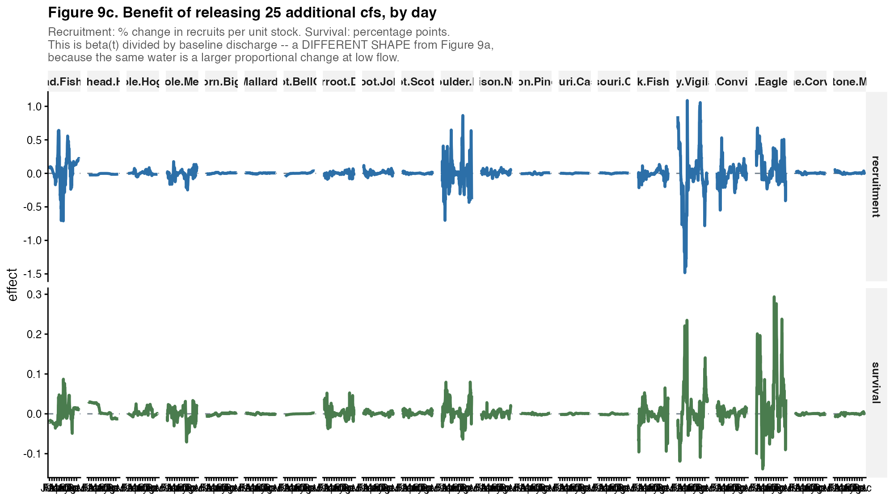
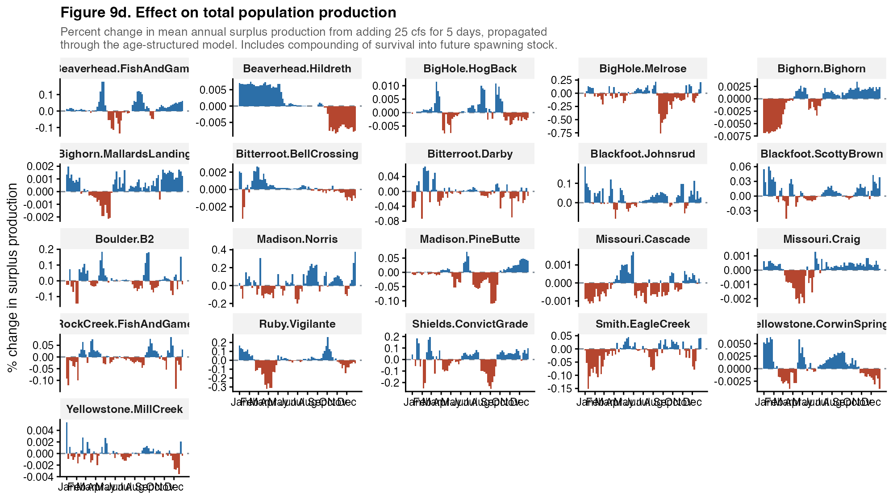
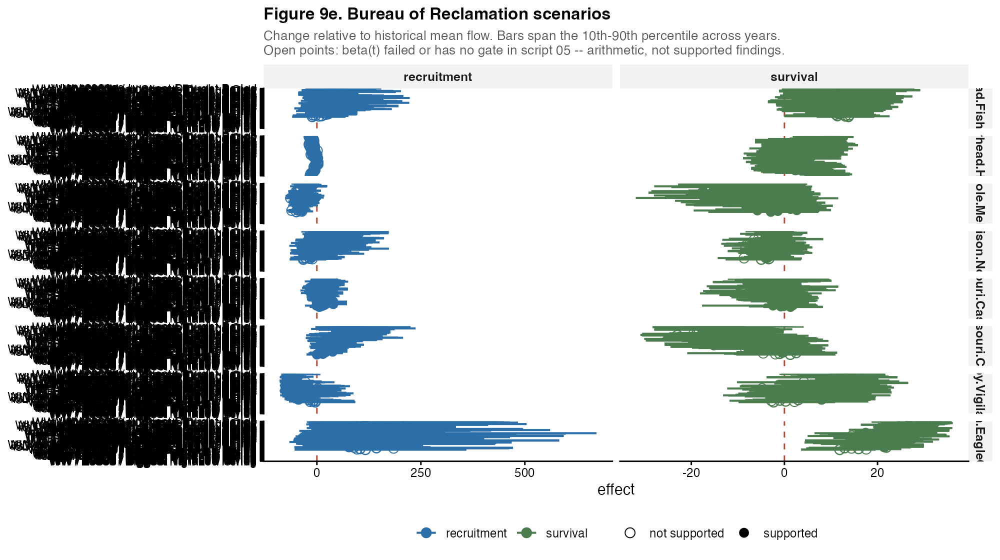

A cross-site synthesis that pools validated and unvalidated curves is a synthesis of arithmetic. This table comes first for that reason.
| site | process | n_years | r2_blocked | p_value | passes |
|---|---|---|---|---|---|
| Blackfoot.ScottyBrown | recruitment | 32 | 0.803 | 0.031 | TRUE |
| Bitterroot.BellCrossing | recruitment | 28 | 0.488 | 0.036 | TRUE |
| Bitterroot.Darby | recruitment | 32 | 0.405 | 0.031 | TRUE |
| Missouri.Craig | recruitment | 38 | 0.356 | 0.053 | TRUE |
| Missouri.Cascade | recruitment | 33 | 0.285 | 0.030 | TRUE |
| Yellowstone.CorwinSprings | recruitment | 38 | 0.222 | 0.026 | TRUE |
| Bighorn.MallardsLanding | recruitment | 33 | 0.084 | 0.061 | TRUE |
| Madison.PineButte | recruitment | 41 | 0.074 | 0.024 | TRUE |
| BigHole.HogBack | recruitment | 24 | -0.026 | 0.083 | FALSE |
| RockCreek.FishAndGame | recruitment | 17 | -0.090 | 0.118 | FALSE |
| Beaverhead.Hildreth | recruitment | 41 | -0.117 | 0.171 | FALSE |
| Madison.Norris | recruitment | 41 | -0.154 | 0.195 | FALSE |
| Blackfoot.Johnsrud | recruitment | 32 | -0.162 | 0.156 | FALSE |
| BigHole.Melrose | recruitment | 30 | -0.188 | 0.333 | FALSE |
| Boulder.B2 | recruitment | 39 | -0.384 | 0.538 | FALSE |
| Yellowstone.MillCreek | recruitment | 40 | -0.396 | 0.625 | FALSE |
| Bighorn.Bighorn | recruitment | 26 | -0.409 | 0.462 | FALSE |
| Shields.ConvictGrade | recruitment | 38 | -0.485 | 0.342 | FALSE |
| Smith.EagleCreek | recruitment | 26 | -0.673 | 0.500 | FALSE |
| Ruby.Vigilante | recruitment | 23 | -0.780 | 0.696 | FALSE |
| Beaverhead.FishAndGame | recruitment | 19 | -0.781 | 0.263 | FALSE |
| BigHole.Melrose | survival | 29 | 0.253 | 0.069 | TRUE |
| Beaverhead.Hildreth | survival | 40 | 0.078 | 0.025 | TRUE |
| Missouri.Cascade | survival | 32 | 0.076 | 0.031 | TRUE |
| Bighorn.Bighorn | survival | 25 | 0.064 | 0.080 | TRUE |
| Bitterroot.BellCrossing | survival | 27 | -0.045 | 0.148 | FALSE |
| Yellowstone.CorwinSprings | survival | 37 | -0.045 | 0.054 | FALSE |
| Madison.PineButte | survival | 40 | -0.098 | 0.175 | FALSE |
| Yellowstone.MillCreek | survival | 39 | -0.115 | 0.077 | FALSE |
| Beaverhead.FishAndGame | survival | 21 | -0.137 | 0.095 | FALSE |
| Missouri.Craig | survival | 37 | -0.168 | 0.459 | FALSE |
| Ruby.Vigilante | survival | 22 | -0.187 | 0.136 | FALSE |
| Blackfoot.Johnsrud | survival | 31 | -0.192 | 0.226 | FALSE |
| Madison.Norris | survival | 40 | -0.228 | 0.575 | FALSE |
| Smith.EagleCreek | survival | 27 | -0.246 | 0.630 | FALSE |
| Bighorn.MallardsLanding | survival | 32 | -0.283 | 0.750 | FALSE |
| RockCreek.FishAndGame | survival | 16 | -0.301 | 0.250 | FALSE |
| Shields.ConvictGrade | survival | 37 | -0.369 | 0.351 | FALSE |
| Bitterroot.Darby | survival | 31 | -0.432 | 0.548 | FALSE |
| Blackfoot.ScottyBrown | survival | 31 | -0.652 | 0.806 | FALSE |
| BigHole.HogBack | survival | 26 | -0.734 | 0.962 | FALSE |
| Boulder.B2 | survival | 38 | -0.894 | 1.000 | FALSE |
8 of 21 populations pass the recruitment gate. A failure is a statement about the resolution of that site’s record, not a null effect of flow.
FIGURE NOT AVAILABLE -
09_f9awas not produced for this site.
FIGURE NOT AVAILABLE -
09_f9bwas not produced for this site.
Read timing comparisons carefully. Sites do not share a flow lag - it comes from each IPM’s own model selection. Two curves plotted on one day-of-year axis may refer to different calendar years relative to the cohort, so a difference in apparent timing can be a difference in lag rather than in biology.
| site | process | lo_month | median_month | hi_month | width_days | resolvable |
|---|---|---|---|---|---|---|
| Missouri.Cascade | recruitment | Jun | Jul | Jul | 16 | TRUE |
| Ruby.Vigilante | survival | Mar | Apr | Apr | 32 | TRUE |
| Missouri.Craig | survival | May | Jun | Jul | 36 | TRUE |
| Missouri.Cascade | survival | May | May | Jul | 61 | TRUE |
| Beaverhead.FishAndGame | survival | Apr | Jun | Aug | 122 | FALSE |
| Beaverhead.Hildreth | survival | Jan | Mar | May | 122 | FALSE |
| Madison.PineButte | survival | Apr | Jun | Sep | 139 | FALSE |
| Beaverhead.FishAndGame | recruitment | Apr | Apr | Sep | 148 | FALSE |
| Bighorn.MallardsLanding | survival | Jan | May | Jun | 154 | FALSE |
| Madison.PineButte | recruitment | May | Jun | Oct | 167 | FALSE |
| Bighorn.Bighorn | survival | Apr | Oct | Oct | 173 | FALSE |
| BigHole.HogBack | survival | Apr | Aug | Oct | 181 | FALSE |
| BigHole.HogBack | recruitment | Mar | Aug | Sep | 189 | FALSE |
| Bighorn.Bighorn | recruitment | Apr | May | Oct | 194 | FALSE |
| Shields.ConvictGrade | recruitment | Feb | Feb | Sep | 209 | FALSE |
| Shields.ConvictGrade | survival | Jan | Mar | Aug | 219 | FALSE |
| Smith.EagleCreek | recruitment | Jan | Feb | Aug | 236 | FALSE |
| Smith.EagleCreek | survival | Jan | Mar | Sep | 244 | FALSE |
| BigHole.Melrose | recruitment | Mar | Sep | Dec | 263 | FALSE |
| Beaverhead.Hildreth | recruitment | Mar | Sep | Dec | 268 | FALSE |
| Yellowstone.MillCreek | survival | Mar | Dec | Dec | 270 | FALSE |
| Ruby.Vigilante | recruitment | Jan | Apr | Oct | 275 | FALSE |
| Missouri.Craig | recruitment | Jan | Oct | Nov | 290 | FALSE |
| Yellowstone.CorwinSprings | recruitment | Jan | Apr | Nov | 291 | FALSE |
| Madison.Norris | survival | Mar | Mar | Dec | 293 | FALSE |
| BigHole.Melrose | survival | Feb | Nov | Nov | 294 | FALSE |
| Bitterroot.Darby | survival | Jan | Nov | Dec | 325 | FALSE |
| Bighorn.MallardsLanding | recruitment | Jan | Jun | Dec | 330 | FALSE |
| Boulder.B2 | survival | Jan | Feb | Dec | 331 | FALSE |
| Madison.Norris | recruitment | Jan | Sep | Dec | 334 | FALSE |
| RockCreek.FishAndGame | recruitment | Jan | Nov | Dec | 338 | FALSE |
| Yellowstone.CorwinSprings | survival | Jan | Apr | Dec | 340 | FALSE |
| Bitterroot.Darby | recruitment | Jan | Oct | Dec | 345 | FALSE |
| Boulder.B2 | recruitment | Jan | Sep | Dec | 346 | FALSE |
| Blackfoot.Johnsrud | survival | Jan | Feb | Dec | 347 | FALSE |
| Blackfoot.ScottyBrown | survival | Jan | Feb | Dec | 347 | FALSE |
| Blackfoot.Johnsrud | recruitment | Jan | Feb | Dec | 348 | FALSE |
| Blackfoot.ScottyBrown | recruitment | Jan | Feb | Dec | 348 | FALSE |
| RockCreek.FishAndGame | survival | Jan | Nov | Dec | 349 | FALSE |
| Yellowstone.MillCreek | recruitment | Jan | Feb | Dec | 354 | FALSE |
| Bitterroot.BellCrossing | recruitment | Jan | Dec | Dec | 357 | FALSE |
| Bitterroot.BellCrossing | survival | Jan | Aug | Dec | 357 | FALSE |
4 of 42 site-process combinations resolve to a window narrower than 90 days. Where they do not, the deliverable is a season and a statement that the record cannot do better - which is itself a finding about Montana flow records.


| site | volume_af | window_days | sustained_cfs | start_date | end_date | effect | p_positive | passes |
|---|---|---|---|---|---|---|---|---|
| Beaverhead.FishAndGame | 5000 | 30 | 84.028 | 07 Aug | 05 Sep | 39.291 | 0.984 | FALSE |
| Beaverhead.Hildreth | 200 | 7 | 14.405 | 18 Jul | 24 Jul | -0.001 | 0.455 | FALSE |
| BigHole.HogBack | 5000 | 7 | 360.121 | 18 Sep | 24 Sep | 4.441 | 0.746 | FALSE |
| BigHole.Melrose | 5000 | 7 | 360.121 | 27 Jun | 03 Jul | 4.572 | 0.947 | FALSE |
| Bighorn.Bighorn | 5000 | 7 | 360.121 | 15 May | 21 May | 1.209 | 0.767 | FALSE |
| Bighorn.MallardsLanding | 5000 | 7 | 360.121 | 24 Jun | 30 Jun | 0.719 | 0.862 | TRUE |
| Bitterroot.BellCrossing | 5000 | 14 | 180.061 | 17 Jul | 30 Jul | 0.646 | 0.648 | TRUE |
| Bitterroot.Darby | 5000 | 7 | 360.121 | 12 Sep | 18 Sep | 3.049 | 0.667 | TRUE |
| Blackfoot.Johnsrud | 5000 | 14 | 180.061 | 24 Aug | 06 Sep | 3.876 | 0.814 | FALSE |
| Blackfoot.ScottyBrown | 5000 | 14 | 180.061 | 21 Jul | 03 Aug | 0.443 | 0.626 | TRUE |
| Boulder.B2 | 5000 | 14 | 180.061 | 03 Sep | 16 Sep | 49.654 | 0.926 | FALSE |
| Madison.Norris | 5000 | 7 | 360.121 | 29 Aug | 04 Sep | 6.238 | 0.959 | FALSE |
| Madison.PineButte | 5000 | 7 | 360.121 | 19 Jun | 25 Jun | 2.032 | 0.859 | TRUE |
| Missouri.Cascade | 5000 | 7 | 360.121 | 09 Jul | 15 Jul | 0.789 | 0.992 | TRUE |
| Missouri.Craig | 5000 | 7 | 360.121 | 22 Oct | 28 Oct | 0.909 | 0.963 | TRUE |
| RockCreek.FishAndGame | 5000 | 14 | 180.061 | 10 Sep | 23 Sep | 7.961 | 0.736 | FALSE |
| Ruby.Vigilante | 5000 | 14 | 180.061 | 24 Sep | 07 Oct | 81.436 | 0.940 | FALSE |
| Shields.ConvictGrade | 5000 | 14 | 180.061 | 27 Sep | 10 Oct | 8.667 | 0.686 | FALSE |
| Smith.EagleCreek | 5000 | 30 | 84.028 | 23 Jul | 21 Aug | 25.485 | 0.944 | FALSE |
| Yellowstone.CorwinSprings | 5000 | 7 | 360.121 | 01 May | 07 May | 1.445 | 0.798 | TRUE |
| Yellowstone.MillCreek | 5000 | 7 | 360.121 | 09 Sep | 15 Sep | 0.943 | 0.745 | FALSE |
| site | Scenario | Period | Type | process | effect | p_negative | frac_extrap | status |
|---|---|---|---|---|---|---|---|---|
| Ruby.Vigilante | HW | 2050s | Longest Pluvial Period | recruitment | -71.328 | 0.869 | 0.209 | UNSUPPORTED - gate failed |
| Ruby.Vigilante | HW | 2050s | Most Intense Pluvial Period | recruitment | -71.328 | 0.869 | 0.209 | UNSUPPORTED - gate failed |
| Ruby.Vigilante | WW | 2080s | Longest Pluvial Period | recruitment | -69.107 | 0.862 | 0.220 | UNSUPPORTED - gate failed |
| Ruby.Vigilante | WW | 2080s | Most Intense Pluvial Period | recruitment | -69.107 | 0.862 | 0.220 | UNSUPPORTED - gate failed |
| Ruby.Vigilante | WW | 2020s | Longest Pluvial Period | recruitment | -66.602 | 0.872 | 0.082 | UNSUPPORTED - gate failed |
| Ruby.Vigilante | HW | 2080s | Longest Pluvial Period | recruitment | -66.279 | 0.834 | 0.251 | UNSUPPORTED - gate failed |
| Ruby.Vigilante | HW | 2080s | Most Intense Pluvial Period | recruitment | -66.279 | 0.834 | 0.251 | UNSUPPORTED - gate failed |
| Ruby.Vigilante | HW | 2020s | Longest Pluvial Period | recruitment | -65.814 | 0.857 | 0.107 | UNSUPPORTED - gate failed |
| Ruby.Vigilante | HW | 2020s | Most Intense Pluvial Period | recruitment | -65.612 | 0.855 | 0.142 | UNSUPPORTED - gate failed |
| Ruby.Vigilante | WW | 2020s | Longest Drought Period | recruitment | -63.566 | 0.847 | 0.085 | UNSUPPORTED - gate failed |
| Ruby.Vigilante | CT | 2050s | Longest Pluvial Period | recruitment | -63.563 | 0.846 | 0.109 | UNSUPPORTED - gate failed |
| Ruby.Vigilante | CT | 2050s | Most Intense Pluvial Period | recruitment | -63.563 | 0.846 | 0.109 | UNSUPPORTED - gate failed |
| Ruby.Vigilante | WW | 2050s | Longest Pluvial Period | recruitment | -63.441 | 0.842 | 0.157 | UNSUPPORTED - gate failed |
| Ruby.Vigilante | WW | 2050s | Most Intense Pluvial Period | recruitment | -63.441 | 0.842 | 0.157 | UNSUPPORTED - gate failed |
| BigHole.Melrose | HD | 2080s | Most Intense Drought Period | recruitment | -63.126 | 0.892 | 0.121 | UNSUPPORTED - gate failed |
| Ruby.Vigilante | WW | 2020s | Most Intense Pluvial Period | recruitment | -61.622 | 0.838 | 0.103 | UNSUPPORTED - gate failed |
| Ruby.Vigilante | CT | Historical | Longest Pluvial Period | recruitment | -61.575 | 0.849 | 0.074 | UNSUPPORTED - gate failed |
| Ruby.Vigilante | CT | Historical | Most Intense Pluvial Period | recruitment | -61.575 | 0.849 | 0.074 | UNSUPPORTED - gate failed |
| Ruby.Vigilante | HD | Historical | Longest Pluvial Period | recruitment | -61.575 | 0.849 | 0.074 | UNSUPPORTED - gate failed |
| Ruby.Vigilante | HD | Historical | Most Intense Pluvial Period | recruitment | -61.575 | 0.849 | 0.074 | UNSUPPORTED - gate failed |
| Ruby.Vigilante | HW | Historical | Longest Pluvial Period | recruitment | -61.575 | 0.849 | 0.074 | UNSUPPORTED - gate failed |
| Ruby.Vigilante | HW | Historical | Most Intense Pluvial Period | recruitment | -61.575 | 0.849 | 0.074 | UNSUPPORTED - gate failed |
| Ruby.Vigilante | WD | Historical | Longest Pluvial Period | recruitment | -61.575 | 0.849 | 0.074 | UNSUPPORTED - gate failed |
| Ruby.Vigilante | WD | Historical | Most Intense Pluvial Period | recruitment | -61.575 | 0.849 | 0.074 | UNSUPPORTED - gate failed |
| Ruby.Vigilante | WW | Historical | Longest Pluvial Period | recruitment | -61.575 | 0.849 | 0.074 | UNSUPPORTED - gate failed |
| Ruby.Vigilante | WW | Historical | Most Intense Pluvial Period | recruitment | -61.575 | 0.849 | 0.074 | UNSUPPORTED - gate failed |
| Ruby.Vigilante | WD | 2080s | Longest Pluvial Period | recruitment | -61.432 | 0.845 | 0.085 | UNSUPPORTED - gate failed |
| Ruby.Vigilante | WD | 2080s | Most Intense Pluvial Period | recruitment | -61.432 | 0.845 | 0.085 | UNSUPPORTED - gate failed |
| BigHole.Melrose | HD | 2080s | Longest Drought Period | recruitment | -60.608 | 0.896 | 0.101 | UNSUPPORTED - gate failed |
| Ruby.Vigilante | CT | 2080s | Longest Pluvial Period | recruitment | -60.369 | 0.850 | 0.111 | UNSUPPORTED - gate failed |
| Ruby.Vigilante | CT | 2080s | Most Intense Pluvial Period | recruitment | -60.369 | 0.850 | 0.111 | UNSUPPORTED - gate failed |
| Ruby.Vigilante | HW | 2050s | Climate Change Only | recruitment | -59.777 | 0.819 | 0.153 | UNSUPPORTED - gate failed |
| Ruby.Vigilante | WW | 2080s | Climate Change Only | recruitment | -58.904 | 0.810 | 0.163 | UNSUPPORTED - gate failed |
| Ruby.Vigilante | HW | 2020s | Longest Drought Period | recruitment | -58.271 | 0.831 | 0.096 | UNSUPPORTED - gate failed |
| Ruby.Vigilante | CT | 2020s | Longest Pluvial Period | recruitment | -55.399 | 0.813 | 0.084 | UNSUPPORTED - gate failed |
| Ruby.Vigilante | CT | 2020s | Most Intense Pluvial Period | recruitment | -55.399 | 0.813 | 0.084 | UNSUPPORTED - gate failed |
| BigHole.Melrose | HD | 2080s | Climate Change Only | recruitment | -55.112 | 0.853 | 0.109 | UNSUPPORTED - gate failed |
| BigHole.Melrose | HW | 2080s | Most Intense Drought Period | recruitment | -54.423 | 0.863 | 0.079 | UNSUPPORTED - gate failed |
| BigHole.Melrose | HD | 2080s | Longest Pluvial Period | recruitment | -53.482 | 0.840 | 0.133 | UNSUPPORTED - gate failed |
| BigHole.Melrose | HD | 2080s | Most Intense Pluvial Period | recruitment | -53.459 | 0.855 | 0.103 | UNSUPPORTED - gate failed |
| Ruby.Vigilante | WW | 2020s | Climate Change Only | recruitment | -53.388 | 0.795 | 0.096 | UNSUPPORTED - gate failed |
| Ruby.Vigilante | WW | 2050s | Climate Change Only | recruitment | -52.162 | 0.796 | 0.119 | UNSUPPORTED - gate failed |
| BigHole.Melrose | HW | 2080s | Longest Drought Period | recruitment | -51.753 | 0.834 | 0.091 | UNSUPPORTED - gate failed |
| Ruby.Vigilante | HW | 2020s | Climate Change Only | recruitment | -51.123 | 0.796 | 0.107 | UNSUPPORTED - gate failed |
| Ruby.Vigilante | WW | 2080s | Longest Drought Period | recruitment | -50.529 | 0.787 | 0.130 | UNSUPPORTED - gate failed |
| BigHole.Melrose | CT | 2080s | Longest Drought Period | recruitment | -50.127 | 0.850 | 0.078 | UNSUPPORTED - gate failed |
| BigHole.Melrose | CT | 2080s | Most Intense Drought Period | recruitment | -50.127 | 0.850 | 0.078 | UNSUPPORTED - gate failed |
| Ruby.Vigilante | CT | Historical | Climate Change Only | recruitment | -50.062 | 0.784 | 0.079 | UNSUPPORTED - gate failed |
| Ruby.Vigilante | HD | Historical | Climate Change Only | recruitment | -50.062 | 0.784 | 0.079 | UNSUPPORTED - gate failed |
| Ruby.Vigilante | HW | Historical | Climate Change Only | recruitment | -50.062 | 0.784 | 0.079 | UNSUPPORTED - gate failed |
| Ruby.Vigilante | WD | Historical | Climate Change Only | recruitment | -50.062 | 0.784 | 0.079 | UNSUPPORTED - gate failed |
| Ruby.Vigilante | WW | Historical | Climate Change Only | recruitment | -50.062 | 0.784 | 0.079 | UNSUPPORTED - gate failed |
| Ruby.Vigilante | HW | 2080s | Climate Change Only | recruitment | -49.404 | 0.770 | 0.175 | UNSUPPORTED - gate failed |
| BigHole.Melrose | HD | 2050s | Longest Drought Period | recruitment | -49.262 | 0.839 | 0.087 | UNSUPPORTED - gate failed |
| BigHole.Melrose | HD | 2050s | Most Intense Drought Period | recruitment | -49.262 | 0.839 | 0.087 | UNSUPPORTED - gate failed |
| Ruby.Vigilante | WW | 2080s | Most Intense Drought Period | recruitment | -47.971 | 0.773 | 0.108 | UNSUPPORTED - gate failed |
| Ruby.Vigilante | WW | 2050s | Longest Drought Period | recruitment | -47.227 | 0.769 | 0.097 | UNSUPPORTED - gate failed |
| BigHole.Melrose | HW | 2080s | Climate Change Only | recruitment | -47.178 | 0.803 | 0.096 | UNSUPPORTED - gate failed |
| BigHole.Melrose | HW | 2080s | Longest Pluvial Period | recruitment | -47.159 | 0.800 | 0.125 | UNSUPPORTED - gate failed |
| BigHole.Melrose | HW | 2080s | Most Intense Pluvial Period | recruitment | -47.159 | 0.800 | 0.125 | UNSUPPORTED - gate failed |
| Ruby.Vigilante | HW | 2080s | Longest Drought Period | recruitment | -47.010 | 0.768 | 0.148 | UNSUPPORTED - gate failed |
| Ruby.Vigilante | WW | 2050s | Most Intense Drought Period | recruitment | -46.404 | 0.771 | 0.089 | UNSUPPORTED - gate failed |
| BigHole.Melrose | HD | 2020s | Longest Drought Period | recruitment | -45.573 | 0.796 | 0.121 | UNSUPPORTED - gate failed |
| BigHole.Melrose | HD | 2020s | Most Intense Drought Period | recruitment | -45.573 | 0.796 | 0.121 | UNSUPPORTED - gate failed |
| Ruby.Vigilante | CT | Historical | Longest Drought Period | recruitment | -44.270 | 0.758 | 0.086 | UNSUPPORTED - gate failed |
| Ruby.Vigilante | CT | Historical | Most Intense Drought Period | recruitment | -44.270 | 0.758 | 0.086 | UNSUPPORTED - gate failed |
| Ruby.Vigilante | HD | Historical | Longest Drought Period | recruitment | -44.270 | 0.758 | 0.086 | UNSUPPORTED - gate failed |
| Ruby.Vigilante | HD | Historical | Most Intense Drought Period | recruitment | -44.270 | 0.758 | 0.086 | UNSUPPORTED - gate failed |
| Ruby.Vigilante | HW | Historical | Longest Drought Period | recruitment | -44.270 | 0.758 | 0.086 | UNSUPPORTED - gate failed |
| Ruby.Vigilante | HW | Historical | Most Intense Drought Period | recruitment | -44.270 | 0.758 | 0.086 | UNSUPPORTED - gate failed |
| Ruby.Vigilante | WD | Historical | Longest Drought Period | recruitment | -44.270 | 0.758 | 0.086 | UNSUPPORTED - gate failed |
| Ruby.Vigilante | WD | Historical | Most Intense Drought Period | recruitment | -44.270 | 0.758 | 0.086 | UNSUPPORTED - gate failed |
| Ruby.Vigilante | WW | Historical | Longest Drought Period | recruitment | -44.270 | 0.758 | 0.086 | UNSUPPORTED - gate failed |
| Ruby.Vigilante | WW | Historical | Most Intense Drought Period | recruitment | -44.270 | 0.758 | 0.086 | UNSUPPORTED - gate failed |
| BigHole.Melrose | HW | 2050s | Longest Drought Period | recruitment | -44.134 | 0.808 | 0.064 | UNSUPPORTED - gate failed |
| Ruby.Vigilante | WW | 2020s | Most Intense Drought Period | recruitment | -44.086 | 0.743 | 0.085 | UNSUPPORTED - gate failed |
| BigHole.Melrose | WD | 2050s | Longest Drought Period | recruitment | -43.128 | 0.790 | 0.095 | UNSUPPORTED - gate failed |
| BigHole.Melrose | WD | 2050s | Most Intense Drought Period | recruitment | -43.128 | 0.790 | 0.095 | UNSUPPORTED - gate failed |
| BigHole.Melrose | CT | 2080s | Climate Change Only | recruitment | -42.526 | 0.800 | 0.065 | UNSUPPORTED - gate failed |
| BigHole.Melrose | HW | 2050s | Most Intense Drought Period | recruitment | -41.850 | 0.791 | 0.073 | UNSUPPORTED - gate failed |
| Ruby.Vigilante | HW | 2050s | Most Intense Drought Period | recruitment | -40.951 | 0.724 | 0.099 | UNSUPPORTED - gate failed |
| Ruby.Vigilante | HW | 2050s | Longest Drought Period | recruitment | -40.610 | 0.721 | 0.084 | UNSUPPORTED - gate failed |
| BigHole.Melrose | CT | 2080s | Longest Pluvial Period | recruitment | -40.410 | 0.789 | 0.076 | UNSUPPORTED - gate failed |
| BigHole.Melrose | CT | 2080s | Most Intense Pluvial Period | recruitment | -40.410 | 0.789 | 0.076 | UNSUPPORTED - gate failed |
| Ruby.Vigilante | WD | 2020s | Most Intense Pluvial Period | recruitment | -40.371 | 0.749 | 0.069 | UNSUPPORTED - gate failed |
| Ruby.Vigilante | WD | 2020s | Longest Pluvial Period | recruitment | -40.131 | 0.744 | 0.070 | UNSUPPORTED - gate failed |
| BigHole.Melrose | WD | 2020s | Longest Drought Period | recruitment | -40.063 | 0.765 | 0.098 | UNSUPPORTED - gate failed |
| BigHole.Melrose | WD | 2020s | Most Intense Drought Period | recruitment | -40.063 | 0.765 | 0.098 | UNSUPPORTED - gate failed |
| BigHole.Melrose | CT | 2050s | Longest Drought Period | recruitment | -39.918 | 0.788 | 0.069 | UNSUPPORTED - gate failed |
| Ruby.Vigilante | HW | 2020s | Most Intense Drought Period | recruitment | -39.043 | 0.717 | 0.083 | UNSUPPORTED - gate failed |
| Ruby.Vigilante | HW | 2080s | Most Intense Drought Period | recruitment | -38.571 | 0.733 | 0.108 | UNSUPPORTED - gate failed |
| BigHole.Melrose | WD | 2080s | Longest Drought Period | recruitment | -38.440 | 0.780 | 0.062 | UNSUPPORTED - gate failed |
| BigHole.Melrose | WD | 2080s | Most Intense Drought Period | recruitment | -38.440 | 0.780 | 0.062 | UNSUPPORTED - gate failed |
| BigHole.Melrose | HD | 2050s | Longest Pluvial Period | recruitment | -36.743 | 0.762 | 0.069 | UNSUPPORTED - gate failed |
| BigHole.Melrose | HD | 2050s | Most Intense Pluvial Period | recruitment | -36.743 | 0.762 | 0.069 | UNSUPPORTED - gate failed |
| BigHole.Melrose | CT | 2020s | Longest Drought Period | recruitment | -36.735 | 0.765 | 0.069 | UNSUPPORTED - gate failed |
| BigHole.Melrose | CT | 2020s | Most Intense Drought Period | recruitment | -36.735 | 0.765 | 0.069 | UNSUPPORTED - gate failed |
| Ruby.Vigilante | HD | 2020s | Most Intense Pluvial Period | recruitment | -36.662 | 0.738 | 0.070 | UNSUPPORTED - gate failed |
| Madison.Norris | HD | 2080s | Most Intense Drought Period | recruitment | -36.335 | 0.790 | 0.239 | UNSUPPORTED - gate failed |
| BigHole.Melrose | HD | 2050s | Climate Change Only | recruitment | -36.207 | 0.753 | 0.066 | UNSUPPORTED - gate failed |
| BigHole.Melrose | CT | 2050s | Most Intense Drought Period | recruitment | -35.976 | 0.758 | 0.052 | UNSUPPORTED - gate failed |
| BigHole.Melrose | CT | Historical | Longest Drought Period | recruitment | -35.933 | 0.751 | 0.081 | UNSUPPORTED - gate failed |
| BigHole.Melrose | CT | Historical | Most Intense Drought Period | recruitment | -35.933 | 0.751 | 0.081 | UNSUPPORTED - gate failed |
| BigHole.Melrose | HD | Historical | Longest Drought Period | recruitment | -35.933 | 0.751 | 0.081 | UNSUPPORTED - gate failed |
| BigHole.Melrose | HD | Historical | Most Intense Drought Period | recruitment | -35.933 | 0.751 | 0.081 | UNSUPPORTED - gate failed |
| BigHole.Melrose | HW | Historical | Longest Drought Period | recruitment | -35.933 | 0.751 | 0.081 | UNSUPPORTED - gate failed |
| BigHole.Melrose | HW | Historical | Most Intense Drought Period | recruitment | -35.933 | 0.751 | 0.081 | UNSUPPORTED - gate failed |
| BigHole.Melrose | WD | Historical | Longest Drought Period | recruitment | -35.933 | 0.751 | 0.081 | UNSUPPORTED - gate failed |
| BigHole.Melrose | WD | Historical | Most Intense Drought Period | recruitment | -35.933 | 0.751 | 0.081 | UNSUPPORTED - gate failed |
| BigHole.Melrose | WW | Historical | Longest Drought Period | recruitment | -35.933 | 0.751 | 0.081 | UNSUPPORTED - gate failed |
| BigHole.Melrose | WW | Historical | Most Intense Drought Period | recruitment | -35.933 | 0.751 | 0.081 | UNSUPPORTED - gate failed |
| BigHole.Melrose | HW | 2020s | Most Intense Drought Period | recruitment | -34.413 | 0.738 | 0.080 | UNSUPPORTED - gate failed |
| BigHole.Melrose | HW | 2050s | Climate Change Only | recruitment | -33.651 | 0.725 | 0.087 | UNSUPPORTED - gate failed |
| Madison.Norris | HD | 2080s | Longest Drought Period | recruitment | -32.846 | 0.777 | 0.232 | UNSUPPORTED - gate failed |
| BigHole.Melrose | WW | 2020s | Most Intense Drought Period | recruitment | -32.631 | 0.722 | 0.095 | UNSUPPORTED - gate failed |
| Madison.Norris | HD | 2050s | Longest Drought Period | recruitment | -32.579 | 0.796 | 0.155 | UNSUPPORTED - gate failed |
| Madison.Norris | HD | 2050s | Most Intense Drought Period | recruitment | -32.579 | 0.796 | 0.155 | UNSUPPORTED - gate failed |
| BigHole.Melrose | HD | 2020s | Longest Pluvial Period | recruitment | -32.164 | 0.733 | 0.065 | UNSUPPORTED - gate failed |
| BigHole.Melrose | HW | 2020s | Longest Drought Period | recruitment | -31.189 | 0.718 | 0.078 | UNSUPPORTED - gate failed |
| Ruby.Vigilante | WD | 2050s | Longest Pluvial Period | recruitment | -31.184 | 0.697 | 0.069 | UNSUPPORTED - gate failed |
| Ruby.Vigilante | WD | 2050s | Most Intense Pluvial Period | recruitment | -31.184 | 0.697 | 0.069 | UNSUPPORTED - gate failed |
| Ruby.Vigilante | WD | 2020s | Climate Change Only | recruitment | -31.179 | 0.703 | 0.080 | UNSUPPORTED - gate failed |
| BigHole.Melrose | HW | 2050s | Longest Pluvial Period | recruitment | -31.141 | 0.707 | 0.112 | UNSUPPORTED - gate failed |
| BigHole.Melrose | HW | 2050s | Most Intense Pluvial Period | recruitment | -31.141 | 0.707 | 0.112 | UNSUPPORTED - gate failed |
| BigHole.Melrose | HD | 2020s | Most Intense Pluvial Period | recruitment | -31.052 | 0.726 | 0.069 | UNSUPPORTED - gate failed |
| BigHole.Melrose | WW | 2080s | Most Intense Drought Period | recruitment | -30.836 | 0.717 | 0.082 | UNSUPPORTED - gate failed |
| BigHole.Melrose | CT | 2050s | Climate Change Only | recruitment | -30.230 | 0.715 | 0.058 | UNSUPPORTED - gate failed |
| Ruby.Vigilante | HD | 2020s | Longest Pluvial Period | recruitment | -29.868 | 0.690 | 0.069 | UNSUPPORTED - gate failed |
| BigHole.Melrose | HD | 2020s | Climate Change Only | recruitment | -29.681 | 0.715 | 0.065 | UNSUPPORTED - gate failed |
| BigHole.Melrose | WW | 2020s | Longest Drought Period | recruitment | -29.313 | 0.706 | 0.097 | UNSUPPORTED - gate failed |
| Ruby.Vigilante | CT | 2020s | Climate Change Only | recruitment | -29.200 | 0.706 | 0.082 | UNSUPPORTED - gate failed |
| BigHole.Melrose | WD | 2020s | Most Intense Pluvial Period | recruitment | -28.956 | 0.711 | 0.069 | UNSUPPORTED - gate failed |
| BigHole.Melrose | WD | 2020s | Longest Pluvial Period | recruitment | -28.623 | 0.723 | 0.057 | UNSUPPORTED - gate failed |
| BigHole.Melrose | WD | 2050s | Longest Pluvial Period | recruitment | -28.437 | 0.709 | 0.057 | UNSUPPORTED - gate failed |
| BigHole.Melrose | WD | 2050s | Most Intense Pluvial Period | recruitment | -28.437 | 0.709 | 0.057 | UNSUPPORTED - gate failed |
| Ruby.Vigilante | CT | 2050s | Climate Change Only | recruitment | -28.386 | 0.679 | 0.090 | UNSUPPORTED - gate failed |
| Ruby.Vigilante | HD | 2080s | Longest Pluvial Period | recruitment | -28.241 | 0.671 | 0.101 | UNSUPPORTED - gate failed |
| Madison.Norris | HD | 2020s | Longest Drought Period | recruitment | -28.070 | 0.753 | 0.142 | UNSUPPORTED - gate failed |
| Madison.Norris | HD | 2020s | Most Intense Drought Period | recruitment | -28.070 | 0.753 | 0.142 | UNSUPPORTED - gate failed |
| Ruby.Vigilante | CT | 2080s | Climate Change Only | recruitment | -27.945 | 0.675 | 0.094 | UNSUPPORTED - gate failed |
| BigHole.Melrose | WW | 2080s | Longest Drought Period | recruitment | -27.866 | 0.702 | 0.068 | UNSUPPORTED - gate failed |
| Ruby.Vigilante | WD | 2050s | Climate Change Only | recruitment | -26.521 | 0.688 | 0.074 | UNSUPPORTED - gate failed |
| BigHole.Melrose | WW | 2050s | Most Intense Drought Period | recruitment | -26.123 | 0.683 | 0.079 | UNSUPPORTED - gate failed |
| BigHole.Melrose | WW | 2050s | Longest Drought Period | recruitment | -25.846 | 0.686 | 0.075 | UNSUPPORTED - gate failed |
| BigHole.Melrose | CT | Historical | Climate Change Only | recruitment | -25.531 | 0.684 | 0.108 | UNSUPPORTED - gate failed |
| BigHole.Melrose | HD | Historical | Climate Change Only | recruitment | -25.531 | 0.684 | 0.108 | UNSUPPORTED - gate failed |
| BigHole.Melrose | HW | Historical | Climate Change Only | recruitment | -25.531 | 0.684 | 0.108 | UNSUPPORTED - gate failed |
| BigHole.Melrose | WD | Historical | Climate Change Only | recruitment | -25.531 | 0.684 | 0.108 | UNSUPPORTED - gate failed |
| BigHole.Melrose | WW | Historical | Climate Change Only | recruitment | -25.531 | 0.684 | 0.108 | UNSUPPORTED - gate failed |
| BigHole.Melrose | WD | 2050s | Climate Change Only | recruitment | -25.111 | 0.694 | 0.057 | UNSUPPORTED - gate failed |
| BigHole.Melrose | WD | 2080s | Climate Change Only | recruitment | -24.489 | 0.683 | 0.059 | UNSUPPORTED - gate failed |
| BigHole.Melrose | WD | 2020s | Climate Change Only | recruitment | -24.000 | 0.681 | 0.072 | UNSUPPORTED - gate failed |
| BigHole.Melrose | CT | Historical | Longest Pluvial Period | recruitment | -23.870 | 0.668 | 0.126 | UNSUPPORTED - gate failed |
| BigHole.Melrose | CT | Historical | Most Intense Pluvial Period | recruitment | -23.870 | 0.668 | 0.126 | UNSUPPORTED - gate failed |
| BigHole.Melrose | HD | Historical | Longest Pluvial Period | recruitment | -23.870 | 0.668 | 0.126 | UNSUPPORTED - gate failed |
| BigHole.Melrose | HD | Historical | Most Intense Pluvial Period | recruitment | -23.870 | 0.668 | 0.126 | UNSUPPORTED - gate failed |
| BigHole.Melrose | HW | Historical | Longest Pluvial Period | recruitment | -23.870 | 0.668 | 0.126 | UNSUPPORTED - gate failed |
| BigHole.Melrose | HW | Historical | Most Intense Pluvial Period | recruitment | -23.870 | 0.668 | 0.126 | UNSUPPORTED - gate failed |
| BigHole.Melrose | WD | Historical | Longest Pluvial Period | recruitment | -23.870 | 0.668 | 0.126 | UNSUPPORTED - gate failed |
| BigHole.Melrose | WD | Historical | Most Intense Pluvial Period | recruitment | -23.870 | 0.668 | 0.126 | UNSUPPORTED - gate failed |
| BigHole.Melrose | WW | Historical | Longest Pluvial Period | recruitment | -23.870 | 0.668 | 0.126 | UNSUPPORTED - gate failed |
| BigHole.Melrose | WW | Historical | Most Intense Pluvial Period | recruitment | -23.870 | 0.668 | 0.126 | UNSUPPORTED - gate failed |
| Missouri.Craig | HW | 2080s | Longest Pluvial Period | survival | -23.007 | 0.925 | 0.256 | UNSUPPORTED - gate failed |
| Missouri.Craig | HW | 2080s | Most Intense Pluvial Period | survival | -23.007 | 0.925 | 0.256 | UNSUPPORTED - gate failed |
| Ruby.Vigilante | WD | 2080s | Climate Change Only | recruitment | -22.816 | 0.673 | 0.083 | UNSUPPORTED - gate failed |
| BigHole.Melrose | CT | 2020s | Climate Change Only | recruitment | -21.858 | 0.666 | 0.074 | UNSUPPORTED - gate failed |
| BigHole.Melrose | HW | 2020s | Climate Change Only | recruitment | -21.243 | 0.657 | 0.087 | UNSUPPORTED - gate failed |
| BigHole.Melrose | WW | 2080s | Climate Change Only | recruitment | -19.975 | 0.645 | 0.113 | UNSUPPORTED - gate failed |
| BigHole.Melrose | WW | 2020s | Climate Change Only | recruitment | -19.593 | 0.644 | 0.108 | UNSUPPORTED - gate failed |
| Missouri.Craig | HW | 2080s | Climate Change Only | survival | -19.464 | 0.882 | 0.190 | UNSUPPORTED - gate failed |
| BigHole.Melrose | CT | 2050s | Longest Pluvial Period | recruitment | -19.386 | 0.642 | 0.063 | UNSUPPORTED - gate failed |
| BigHole.Melrose | CT | 2050s | Most Intense Pluvial Period | recruitment | -19.386 | 0.642 | 0.063 | UNSUPPORTED - gate failed |
| BigHole.Melrose | WD | 2080s | Longest Pluvial Period | recruitment | -19.314 | 0.651 | 0.069 | UNSUPPORTED - gate failed |
| BigHole.Melrose | WD | 2080s | Most Intense Pluvial Period | recruitment | -19.314 | 0.651 | 0.069 | UNSUPPORTED - gate failed |
| Missouri.Craig | HW | 2050s | Longest Pluvial Period | survival | -18.880 | 0.905 | 0.240 | UNSUPPORTED - gate failed |
| Missouri.Craig | HW | 2050s | Most Intense Pluvial Period | survival | -18.880 | 0.905 | 0.240 | UNSUPPORTED - gate failed |
| Beaverhead.Hildreth | WW | 2080s | Longest Pluvial Period | recruitment | -18.873 | 0.914 | 0.053 | UNSUPPORTED - gate failed |
| Beaverhead.Hildreth | WW | 2080s | Most Intense Pluvial Period | recruitment | -18.873 | 0.914 | 0.053 | UNSUPPORTED - gate failed |
| BigHole.Melrose | HW | 2020s | Longest Pluvial Period | recruitment | -18.830 | 0.638 | 0.082 | UNSUPPORTED - gate failed |
| Beaverhead.Hildreth | HW | 2050s | Longest Pluvial Period | recruitment | -18.677 | 0.911 | 0.055 | UNSUPPORTED - gate failed |
| Beaverhead.Hildreth | HW | 2050s | Most Intense Pluvial Period | recruitment | -18.677 | 0.911 | 0.055 | UNSUPPORTED - gate failed |
| Beaverhead.Hildreth | HW | 2080s | Longest Pluvial Period | recruitment | -18.537 | 0.904 | 0.043 | UNSUPPORTED - gate failed |
| Beaverhead.Hildreth | HW | 2080s | Most Intense Pluvial Period | recruitment | -18.537 | 0.904 | 0.043 | UNSUPPORTED - gate failed |
| Ruby.Vigilante | CT | 2050s | Longest Drought Period | recruitment | -18.531 | 0.630 | 0.076 | UNSUPPORTED - gate failed |
| Madison.Norris | CT | 2080s | Longest Drought Period | recruitment | -18.447 | 0.711 | 0.166 | UNSUPPORTED - gate failed |
| Madison.Norris | CT | 2080s | Most Intense Drought Period | recruitment | -18.447 | 0.711 | 0.166 | UNSUPPORTED - gate failed |
| Madison.Norris | WD | 2020s | Longest Drought Period | recruitment | -18.434 | 0.689 | 0.112 | UNSUPPORTED - gate failed |
| Madison.Norris | WD | 2020s | Most Intense Drought Period | recruitment | -18.434 | 0.689 | 0.112 | UNSUPPORTED - gate failed |
| Missouri.Craig | CT | 2080s | Longest Pluvial Period | survival | -18.367 | 0.891 | 0.164 | UNSUPPORTED - gate failed |
| Missouri.Craig | CT | 2080s | Most Intense Pluvial Period | survival | -18.367 | 0.891 | 0.164 | UNSUPPORTED - gate failed |
| Ruby.Vigilante | CT | 2020s | Longest Drought Period | recruitment | -18.325 | 0.634 | 0.078 | UNSUPPORTED - gate failed |
| Ruby.Vigilante | CT | 2020s | Most Intense Drought Period | recruitment | -18.325 | 0.634 | 0.078 | UNSUPPORTED - gate failed |
| BigHole.Melrose | WW | 2020s | Longest Pluvial Period | recruitment | -18.267 | 0.633 | 0.108 | UNSUPPORTED - gate failed |
| Madison.Norris | WD | 2050s | Longest Drought Period | recruitment | -18.010 | 0.692 | 0.120 | UNSUPPORTED - gate failed |
| Madison.Norris | WD | 2050s | Most Intense Drought Period | recruitment | -18.010 | 0.692 | 0.120 | UNSUPPORTED - gate failed |
| BigHole.Melrose | HW | 2080s | Longest Pluvial Period | survival | -17.794 | 0.806 | 0.125 | supported |
| BigHole.Melrose | HW | 2080s | Most Intense Pluvial Period | survival | -17.794 | 0.806 | 0.125 | supported |
| BigHole.Melrose | WW | 2080s | Longest Pluvial Period | recruitment | -17.741 | 0.621 | 0.148 | UNSUPPORTED - gate failed |
| BigHole.Melrose | WW | 2080s | Most Intense Pluvial Period | recruitment | -17.741 | 0.621 | 0.148 | UNSUPPORTED - gate failed |
| BigHole.Melrose | HW | 2050s | Longest Pluvial Period | survival | -17.443 | 0.842 | 0.112 | supported |
| BigHole.Melrose | HW | 2050s | Most Intense Pluvial Period | survival | -17.443 | 0.842 | 0.112 | supported |
| Madison.Norris | WD | 2080s | Longest Drought Period | recruitment | -17.241 | 0.704 | 0.127 | UNSUPPORTED - gate failed |
| Madison.Norris | WD | 2080s | Most Intense Drought Period | recruitment | -17.241 | 0.704 | 0.127 | UNSUPPORTED - gate failed |
| BigHole.Melrose | HD | 2080s | Longest Pluvial Period | survival | -17.215 | 0.785 | 0.133 | supported |
| Missouri.Cascade | HW | 2080s | Longest Pluvial Period | recruitment | -17.148 | 0.690 | 0.256 | supported |
| Missouri.Cascade | HW | 2080s | Most Intense Pluvial Period | recruitment | -17.148 | 0.690 | 0.256 | supported |
| Beaverhead.Hildreth | WW | 2050s | Longest Pluvial Period | recruitment | -17.146 | 0.899 | 0.035 | UNSUPPORTED - gate failed |
| Beaverhead.Hildreth | WW | 2050s | Most Intense Pluvial Period | recruitment | -17.146 | 0.899 | 0.035 | UNSUPPORTED - gate failed |
| Missouri.Craig | WW | 2080s | Longest Pluvial Period | survival | -17.144 | 0.892 | 0.298 | UNSUPPORTED - gate failed |
| Missouri.Craig | WW | 2080s | Most Intense Pluvial Period | survival | -17.144 | 0.892 | 0.298 | UNSUPPORTED - gate failed |
| Missouri.Craig | HD | 2080s | Longest Pluvial Period | survival | -17.134 | 0.846 | 0.150 | UNSUPPORTED - gate failed |
| Ruby.Vigilante | HD | 2050s | Longest Pluvial Period | recruitment | -16.374 | 0.631 | 0.068 | UNSUPPORTED - gate failed |
| Ruby.Vigilante | HD | 2050s | Most Intense Pluvial Period | recruitment | -16.374 | 0.631 | 0.068 | UNSUPPORTED - gate failed |
| Beaverhead.Hildreth | WW | 2080s | Biggest Variance Period | recruitment | -16.321 | 0.887 | 0.028 | UNSUPPORTED - gate failed |
| Ruby.Vigilante | CT | 2050s | Most Intense Drought Period | recruitment | -16.219 | 0.628 | 0.064 | UNSUPPORTED - gate failed |
| Ruby.Vigilante | HD | 2020s | Climate Change Only | recruitment | -15.989 | 0.653 | 0.081 | UNSUPPORTED - gate failed |
| BigHole.Melrose | WW | 2050s | Climate Change Only | recruitment | -15.908 | 0.623 | 0.105 | UNSUPPORTED - gate failed |
| Beaverhead.Hildreth | HW | 2020s | Most Intense Pluvial Period | recruitment | -15.831 | 0.883 | 0.021 | UNSUPPORTED - gate failed |
| Beaverhead.Hildreth | HW | 2050s | Biggest Variance Period | recruitment | -15.830 | 0.881 | 0.024 | UNSUPPORTED - gate failed |
| Missouri.Craig | HW | 2080s | Most Intense Drought Period | survival | -15.803 | 0.832 | 0.129 | UNSUPPORTED - gate failed |
| Beaverhead.Hildreth | WW | 2080s | Climate Change Only | recruitment | -15.743 | 0.885 | 0.030 | UNSUPPORTED - gate failed |
| Missouri.Craig | WW | 2050s | Longest Pluvial Period | survival | -15.726 | 0.906 | 0.243 | UNSUPPORTED - gate failed |
| Missouri.Craig | WW | 2050s | Most Intense Pluvial Period | survival | -15.726 | 0.906 | 0.243 | UNSUPPORTED - gate failed |
| Missouri.Craig | HW | 2050s | Climate Change Only | survival | -15.714 | 0.844 | 0.178 | UNSUPPORTED - gate failed |
| Beaverhead.Hildreth | HW | 2080s | Climate Change Only | recruitment | -15.703 | 0.881 | 0.032 | UNSUPPORTED - gate failed |
| Missouri.Craig | HW | 2020s | Most Intense Pluvial Period | survival | -15.676 | 0.887 | 0.218 | UNSUPPORTED - gate failed |
| Beaverhead.Hildreth | WW | 2080s | Biggest High Low Swing | recruitment | -15.552 | 0.885 | 0.026 | UNSUPPORTED - gate failed |
| Missouri.Craig | HW | 2080s | Longest Drought Period | survival | -15.479 | 0.791 | 0.145 | UNSUPPORTED - gate failed |
| Beaverhead.Hildreth | HW | 2020s | Longest Pluvial Period | recruitment | -15.447 | 0.890 | 0.018 | UNSUPPORTED - gate failed |
| BigHole.Melrose | HW | 2080s | Climate Change Only | survival | -15.329 | 0.770 | 0.096 | supported |
| Beaverhead.Hildreth | HW | 2050s | Climate Change Only | recruitment | -15.320 | 0.880 | 0.030 | UNSUPPORTED - gate failed |
| Missouri.Craig | CT | 2050s | Longest Pluvial Period | survival | -15.164 | 0.870 | 0.181 | UNSUPPORTED - gate failed |
| Missouri.Craig | CT | 2050s | Most Intense Pluvial Period | survival | -15.164 | 0.870 | 0.181 | UNSUPPORTED - gate failed |
| Beaverhead.Hildreth | HW | 2050s | Biggest High Low Swing | recruitment | -15.102 | 0.873 | 0.023 | UNSUPPORTED - gate failed |
| Beaverhead.Hildreth | WW | 2050s | Biggest Variance Period | recruitment | -15.072 | 0.877 | 0.015 | UNSUPPORTED - gate failed |
| Beaverhead.Hildreth | HW | 2080s | Biggest Variance Period | recruitment | -14.971 | 0.870 | 0.016 | UNSUPPORTED - gate failed |
| Missouri.Cascade | HD | 2080s | Longest Pluvial Period | recruitment | -14.722 | 0.688 | 0.150 | supported |
| BigHole.Melrose | HW | 2050s | Climate Change Only | survival | -14.621 | 0.773 | 0.087 | supported |
| Missouri.Craig | HW | 2020s | Longest Pluvial Period | survival | -14.396 | 0.866 | 0.170 | UNSUPPORTED - gate failed |
| Beaverhead.Hildreth | HW | 2080s | Biggest High Low Swing | recruitment | -14.388 | 0.852 | 0.017 | UNSUPPORTED - gate failed |
| Beaverhead.Hildreth | WW | 2050s | Biggest High Low Swing | recruitment | -14.374 | 0.869 | 0.018 | UNSUPPORTED - gate failed |
| Beaverhead.Hildreth | WW | 2050s | Climate Change Only | recruitment | -14.236 | 0.856 | 0.022 | UNSUPPORTED - gate failed |
| BigHole.Melrose | WW | 2080s | Longest Pluvial Period | survival | -14.190 | 0.799 | 0.148 | supported |
| BigHole.Melrose | WW | 2080s | Most Intense Pluvial Period | survival | -14.190 | 0.799 | 0.148 | supported |
| Beaverhead.Hildreth | HW | 2080s | Longest Drought Period | recruitment | -14.172 | 0.854 | 0.024 | UNSUPPORTED - gate failed |
| Missouri.Craig | WW | 2080s | Climate Change Only | survival | -14.167 | 0.833 | 0.217 | UNSUPPORTED - gate failed |
| Beaverhead.Hildreth | CT | 2050s | Longest Pluvial Period | recruitment | -14.136 | 0.850 | 0.016 | UNSUPPORTED - gate failed |
| Beaverhead.Hildreth | CT | 2050s | Most Intense Pluvial Period | recruitment | -14.136 | 0.850 | 0.016 | UNSUPPORTED - gate failed |
| BigHole.Melrose | CT | 2020s | Longest Pluvial Period | recruitment | -13.953 | 0.605 | 0.086 | UNSUPPORTED - gate failed |
| BigHole.Melrose | CT | 2020s | Most Intense Pluvial Period | recruitment | -13.953 | 0.605 | 0.086 | UNSUPPORTED - gate failed |
| BigHole.Melrose | CT | 2080s | Longest Pluvial Period | survival | -13.892 | 0.785 | 0.076 | supported |
| BigHole.Melrose | CT | 2080s | Most Intense Pluvial Period | survival | -13.892 | 0.785 | 0.076 | supported |
| Missouri.Craig | WW | 2020s | Most Intense Pluvial Period | survival | -13.888 | 0.869 | 0.201 | UNSUPPORTED - gate failed |
| Beaverhead.Hildreth | CT | 2080s | Longest Pluvial Period | recruitment | -13.812 | 0.846 | 0.016 | UNSUPPORTED - gate failed |
| Beaverhead.Hildreth | CT | 2080s | Most Intense Pluvial Period | recruitment | -13.812 | 0.846 | 0.016 | UNSUPPORTED - gate failed |
| Beaverhead.Hildreth | WW | 2080s | Longest Drought Period | recruitment | -13.782 | 0.841 | 0.021 | UNSUPPORTED - gate failed |
| BigHole.Melrose | WW | 2050s | Longest Pluvial Period | recruitment | -13.670 | 0.600 | 0.138 | UNSUPPORTED - gate failed |
| BigHole.Melrose | WW | 2050s | Most Intense Pluvial Period | recruitment | -13.670 | 0.600 | 0.138 | UNSUPPORTED - gate failed |
| Missouri.Craig | WD | 2080s | Longest Pluvial Period | survival | -13.605 | 0.885 | 0.153 | UNSUPPORTED - gate failed |
| Missouri.Craig | WD | 2080s | Most Intense Pluvial Period | survival | -13.605 | 0.885 | 0.153 | UNSUPPORTED - gate failed |
| Beaverhead.Hildreth | HW | 2080s | Most Intense Drought Period | recruitment | -13.533 | 0.843 | 0.019 | UNSUPPORTED - gate failed |
| Beaverhead.Hildreth | WW | 2020s | Most Intense Pluvial Period | recruitment | -13.422 | 0.847 | 0.012 | UNSUPPORTED - gate failed |
| Ruby.Vigilante | WD | 2020s | Longest Drought Period | recruitment | -13.326 | 0.615 | 0.085 | UNSUPPORTED - gate failed |
| Ruby.Vigilante | WD | 2020s | Most Intense Drought Period | recruitment | -13.326 | 0.615 | 0.085 | UNSUPPORTED - gate failed |
| Missouri.Craig | CT | 2020s | Longest Pluvial Period | survival | -13.058 | 0.855 | 0.137 | UNSUPPORTED - gate failed |
| Missouri.Craig | CT | 2020s | Most Intense Pluvial Period | survival | -13.058 | 0.855 | 0.137 | UNSUPPORTED - gate failed |
| BigHole.Melrose | HD | 2080s | Most Intense Pluvial Period | survival | -12.846 | 0.736 | 0.103 | supported |
| Beaverhead.Hildreth | HW | 2020s | Climate Change Only | recruitment | -12.712 | 0.835 | 0.015 | UNSUPPORTED - gate failed |
| Madison.Norris | CT | Historical | Longest Drought Period | recruitment | -12.571 | 0.702 | 0.093 | UNSUPPORTED - gate failed |
| Madison.Norris | CT | Historical | Most Intense Drought Period | recruitment | -12.571 | 0.702 | 0.093 | UNSUPPORTED - gate failed |
| Madison.Norris | HD | Historical | Longest Drought Period | recruitment | -12.571 | 0.702 | 0.093 | UNSUPPORTED - gate failed |
| Madison.Norris | HD | Historical | Most Intense Drought Period | recruitment | -12.571 | 0.702 | 0.093 | UNSUPPORTED - gate failed |
| Madison.Norris | HW | Historical | Longest Drought Period | recruitment | -12.571 | 0.702 | 0.093 | UNSUPPORTED - gate failed |
| Madison.Norris | HW | Historical | Most Intense Drought Period | recruitment | -12.571 | 0.702 | 0.093 | UNSUPPORTED - gate failed |
| Madison.Norris | WD | Historical | Longest Drought Period | recruitment | -12.571 | 0.702 | 0.093 | UNSUPPORTED - gate failed |
| Madison.Norris | WD | Historical | Most Intense Drought Period | recruitment | -12.571 | 0.702 | 0.093 | UNSUPPORTED - gate failed |
| Madison.Norris | WW | Historical | Longest Drought Period | recruitment | -12.571 | 0.702 | 0.093 | UNSUPPORTED - gate failed |
| Madison.Norris | WW | Historical | Most Intense Drought Period | recruitment | -12.571 | 0.702 | 0.093 | UNSUPPORTED - gate failed |
| BigHole.Melrose | HW | 2020s | Most Intense Pluvial Period | recruitment | -12.554 | 0.595 | 0.097 | UNSUPPORTED - gate failed |
| Madison.Norris | CT | 2020s | Longest Drought Period | recruitment | -12.504 | 0.691 | 0.106 | UNSUPPORTED - gate failed |
| Madison.Norris | CT | 2020s | Most Intense Drought Period | recruitment | -12.504 | 0.691 | 0.106 | UNSUPPORTED - gate failed |
| Beaverhead.Hildreth | WD | 2080s | Longest Pluvial Period | recruitment | -12.433 | 0.834 | 0.010 | UNSUPPORTED - gate failed |
| Beaverhead.Hildreth | WD | 2080s | Most Intense Pluvial Period | recruitment | -12.433 | 0.834 | 0.010 | UNSUPPORTED - gate failed |
| BigHole.Melrose | WW | 2050s | Longest Pluvial Period | survival | -12.376 | 0.769 | 0.138 | supported |
| BigHole.Melrose | WW | 2050s | Most Intense Pluvial Period | survival | -12.376 | 0.769 | 0.138 | supported |
| Beaverhead.Hildreth | HW | 2020s | Biggest Variance Period | recruitment | -12.311 | 0.833 | 0.007 | UNSUPPORTED - gate failed |
| BigHole.Melrose | HW | 2080s | Longest Drought Period | survival | -12.238 | 0.715 | 0.091 | supported |
| Beaverhead.Hildreth | WW | 2020s | Longest Pluvial Period | recruitment | -12.194 | 0.835 | 0.009 | UNSUPPORTED - gate failed |
| Missouri.Craig | WW | 2050s | Climate Change Only | survival | -12.153 | 0.810 | 0.176 | UNSUPPORTED - gate failed |
| Beaverhead.Hildreth | WW | 2080s | Most Intense Drought Period | recruitment | -12.122 | 0.834 | 0.014 | UNSUPPORTED - gate failed |
| BigHole.Melrose | HD | 2080s | Climate Change Only | survival | -12.066 | 0.711 | 0.109 | supported |
| Beaverhead.Hildreth | WW | 2050s | Longest Drought Period | recruitment | -12.021 | 0.818 | 0.011 | UNSUPPORTED - gate failed |
| Missouri.Craig | WW | 2020s | Longest Pluvial Period | survival | -12.008 | 0.853 | 0.155 | UNSUPPORTED - gate failed |
| Ruby.Vigilante | HD | 2050s | Climate Change Only | recruitment | -11.758 | 0.625 | 0.086 | UNSUPPORTED - gate failed |
| Beaverhead.Hildreth | CT | 2020s | Longest Pluvial Period | recruitment | -11.757 | 0.825 | 0.008 | UNSUPPORTED - gate failed |
| Beaverhead.Hildreth | CT | 2020s | Most Intense Pluvial Period | recruitment | -11.757 | 0.825 | 0.008 | UNSUPPORTED - gate failed |
| Beaverhead.Hildreth | WW | 2020s | Biggest Variance Period | recruitment | -11.568 | 0.837 | 0.009 | UNSUPPORTED - gate failed |
| BigHole.Melrose | CT | 2050s | Longest Pluvial Period | survival | -11.564 | 0.759 | 0.063 | supported |
| BigHole.Melrose | CT | 2050s | Most Intense Pluvial Period | survival | -11.564 | 0.759 | 0.063 | supported |
| Missouri.Craig | HD | 2080s | Climate Change Only | survival | -11.533 | 0.740 | 0.093 | UNSUPPORTED - gate failed |
| Missouri.Craig | HW | 2020s | Climate Change Only | survival | -11.514 | 0.792 | 0.150 | UNSUPPORTED - gate failed |
| BigHole.Melrose | WW | 2020s | Most Intense Pluvial Period | recruitment | -11.498 | 0.590 | 0.127 | UNSUPPORTED - gate failed |
| Missouri.Cascade | HW | 2050s | Longest Pluvial Period | recruitment | -11.158 | 0.641 | 0.240 | supported |
| Missouri.Cascade | HW | 2050s | Most Intense Pluvial Period | recruitment | -11.158 | 0.641 | 0.240 | supported |
| Missouri.Craig | HD | 2080s | Most Intense Pluvial Period | survival | -11.146 | 0.741 | 0.101 | UNSUPPORTED - gate failed |
| Beaverhead.FishAndGame | HD | 2050s | Longest Drought Period | recruitment | -11.138 | 0.608 | 0.145 | UNSUPPORTED - gate failed |
| Beaverhead.FishAndGame | HD | 2050s | Most Intense Drought Period | recruitment | -11.138 | 0.608 | 0.145 | UNSUPPORTED - gate failed |
| Beaverhead.Hildreth | HD | 2080s | Longest Pluvial Period | recruitment | -11.124 | 0.779 | 0.012 | UNSUPPORTED - gate failed |
| Beaverhead.Hildreth | HW | 2050s | Most Intense Drought Period | recruitment | -11.115 | 0.799 | 0.016 | UNSUPPORTED - gate failed |
| Madison.Norris | CT | 2050s | Most Intense Drought Period | recruitment | -11.018 | 0.649 | 0.144 | UNSUPPORTED - gate failed |
| Missouri.Cascade | HW | 2080s | Most Intense Drought Period | recruitment | -10.996 | 0.683 | 0.129 | supported |
| BigHole.Melrose | HW | 2080s | Most Intense Drought Period | survival | -10.960 | 0.704 | 0.079 | supported |
| Beaverhead.Hildreth | HW | 2020s | Biggest High Low Swing | recruitment | -10.887 | 0.794 | 0.008 | UNSUPPORTED - gate failed |
| Beaverhead.Hildreth | HW | 2020s | Longest Drought Period | recruitment | -10.793 | 0.793 | 0.011 | UNSUPPORTED - gate failed |
| Missouri.Craig | HW | 2050s | Most Intense Drought Period | survival | -10.757 | 0.738 | 0.115 | UNSUPPORTED - gate failed |
| Beaverhead.Hildreth | HW | 2050s | Longest Drought Period | recruitment | -10.745 | 0.790 | 0.012 | UNSUPPORTED - gate failed |
| Missouri.Craig | WW | 2080s | Longest Drought Period | survival | -10.572 | 0.770 | 0.151 | UNSUPPORTED - gate failed |
| Beaverhead.Hildreth | WW | 2020s | Climate Change Only | recruitment | -10.486 | 0.781 | 0.013 | UNSUPPORTED - gate failed |
| Beaverhead.Hildreth | WW | 2050s | Most Intense Drought Period | recruitment | -10.439 | 0.800 | 0.009 | UNSUPPORTED - gate failed |
| BigHole.Melrose | HW | 2050s | Most Intense Drought Period | survival | -10.431 | 0.716 | 0.073 | supported |
| Missouri.Craig | CT | Historical | Longest Pluvial Period | survival | -10.354 | 0.806 | 0.115 | UNSUPPORTED - gate failed |
| Missouri.Craig | CT | Historical | Most Intense Pluvial Period | survival | -10.354 | 0.806 | 0.115 | UNSUPPORTED - gate failed |
| Missouri.Craig | HD | Historical | Longest Pluvial Period | survival | -10.354 | 0.806 | 0.115 | UNSUPPORTED - gate failed |
| Missouri.Craig | HD | Historical | Most Intense Pluvial Period | survival | -10.354 | 0.806 | 0.115 | UNSUPPORTED - gate failed |
| Missouri.Craig | HW | Historical | Longest Pluvial Period | survival | -10.354 | 0.806 | 0.115 | UNSUPPORTED - gate failed |
| Missouri.Craig | HW | Historical | Most Intense Pluvial Period | survival | -10.354 | 0.806 | 0.115 | UNSUPPORTED - gate failed |
| Missouri.Craig | WD | Historical | Longest Pluvial Period | survival | -10.354 | 0.806 | 0.115 | UNSUPPORTED - gate failed |
| Missouri.Craig | WD | Historical | Most Intense Pluvial Period | survival | -10.354 | 0.806 | 0.115 | UNSUPPORTED - gate failed |
| Missouri.Craig | WW | Historical | Longest Pluvial Period | survival | -10.354 | 0.806 | 0.115 | UNSUPPORTED - gate failed |
| Missouri.Craig | WW | Historical | Most Intense Pluvial Period | survival | -10.354 | 0.806 | 0.115 | UNSUPPORTED - gate failed |
| BigHole.Melrose | CT | 2020s | Longest Pluvial Period | survival | -10.305 | 0.744 | 0.086 | supported |
| BigHole.Melrose | CT | 2020s | Most Intense Pluvial Period | survival | -10.305 | 0.744 | 0.086 | supported |
| Missouri.Craig | CT | 2080s | Climate Change Only | survival | -10.136 | 0.754 | 0.087 | UNSUPPORTED - gate failed |
| BigHole.Melrose | HW | 2020s | Longest Pluvial Period | survival | -10.112 | 0.719 | 0.082 | supported |
| Missouri.Craig | HW | 2050s | Longest Drought Period | survival | -10.111 | 0.732 | 0.092 | UNSUPPORTED - gate failed |
| Beaverhead.FishAndGame | HD | 2020s | Longest Drought Period | recruitment | -10.080 | 0.603 | 0.126 | UNSUPPORTED - gate failed |
| Beaverhead.FishAndGame | HD | 2020s | Most Intense Drought Period | recruitment | -10.080 | 0.603 | 0.126 | UNSUPPORTED - gate failed |
| BigHole.Melrose | HW | 2020s | Most Intense Pluvial Period | survival | -10.046 | 0.730 | 0.097 | supported |
| BigHole.Melrose | WW | 2080s | Climate Change Only | survival | -9.884 | 0.701 | 0.113 | supported |
| Missouri.Cascade | HD | 2080s | Most Intense Pluvial Period | recruitment | -9.876 | 0.629 | 0.101 | supported |
| Beaverhead.Hildreth | CT | 2080s | Biggest Variance Period | recruitment | -9.852 | 0.761 | 0.006 | UNSUPPORTED - gate failed |
| Missouri.Cascade | HD | 2080s | Longest Pluvial Period | survival | -9.812 | 0.798 | 0.150 | supported |
| Ruby.Vigilante | WD | 2080s | Longest Drought Period | recruitment | -9.784 | 0.587 | 0.075 | UNSUPPORTED - gate failed |
| Ruby.Vigilante | WD | 2080s | Most Intense Drought Period | recruitment | -9.784 | 0.587 | 0.075 | UNSUPPORTED - gate failed |
| Missouri.Craig | WW | 2020s | Climate Change Only | survival | -9.692 | 0.770 | 0.138 | UNSUPPORTED - gate failed |
| Beaverhead.Hildreth | WW | 2020s | Biggest High Low Swing | recruitment | -9.690 | 0.770 | 0.006 | UNSUPPORTED - gate failed |
| BigHole.Melrose | WD | 2080s | Longest Pluvial Period | survival | -9.445 | 0.729 | 0.069 | supported |
| BigHole.Melrose | WD | 2080s | Most Intense Pluvial Period | survival | -9.445 | 0.729 | 0.069 | supported |
| Beaverhead.Hildreth | CT | 2050s | Biggest High Low Swing | recruitment | -9.344 | 0.747 | 0.007 | UNSUPPORTED - gate failed |
| BigHole.Melrose | HW | 2050s | Longest Drought Period | survival | -9.336 | 0.696 | 0.064 | supported |
| Missouri.Craig | WW | 2080s | Most Intense Drought Period | survival | -9.221 | 0.746 | 0.134 | UNSUPPORTED - gate failed |
| BigHole.Melrose | HW | 2020s | Climate Change Only | survival | -9.112 | 0.689 | 0.087 | supported |
| Beaverhead.Hildreth | HW | 2020s | Most Intense Drought Period | recruitment | -9.111 | 0.764 | 0.008 | UNSUPPORTED - gate failed |
| BigHole.Melrose | CT | 2080s | Climate Change Only | survival | -9.019 | 0.693 | 0.065 | supported |
| Missouri.Craig | CT | 2050s | Climate Change Only | survival | -8.972 | 0.767 | 0.088 | UNSUPPORTED - gate failed |
| Beaverhead.Hildreth | CT | 2050s | Climate Change Only | recruitment | -8.903 | 0.731 | 0.011 | UNSUPPORTED - gate failed |
| Missouri.Cascade | HD | 2080s | Climate Change Only | recruitment | -8.826 | 0.628 | 0.093 | supported |
| Beaverhead.Hildreth | WD | 2080s | Biggest Variance Period | recruitment | -8.809 | 0.740 | 0.006 | UNSUPPORTED - gate failed |
| Beaverhead.Hildreth | CT | 2080s | Biggest High Low Swing | recruitment | -8.770 | 0.736 | 0.007 | UNSUPPORTED - gate failed |
| Madison.Norris | HD | 2080s | Longest Drought Period | survival | -8.666 | 0.747 | 0.232 | UNSUPPORTED - gate failed |
| Missouri.Cascade | HW | 2080s | Climate Change Only | recruitment | -8.613 | 0.618 | 0.190 | supported |
| Beaverhead.Hildreth | WW | 2020s | Longest Drought Period | recruitment | -8.608 | 0.749 | 0.005 | UNSUPPORTED - gate failed |
| Ruby.Vigilante | HD | 2080s | Most Intense Pluvial Period | recruitment | -8.557 | 0.584 | 0.079 | UNSUPPORTED - gate failed |
| Missouri.Craig | HD | 2020s | Most Intense Pluvial Period | survival | -8.477 | 0.735 | 0.086 | UNSUPPORTED - gate failed |
| BigHole.Melrose | WW | 2020s | Longest Pluvial Period | survival | -8.376 | 0.693 | 0.108 | supported |
| Madison.Norris | HD | 2080s | Most Intense Drought Period | survival | -8.352 | 0.745 | 0.239 | UNSUPPORTED - gate failed |
| BigHole.Melrose | WW | 2050s | Climate Change Only | survival | -8.292 | 0.683 | 0.105 | supported |
| Missouri.Craig | WW | 2050s | Longest Drought Period | survival | -8.136 | 0.730 | 0.120 | UNSUPPORTED - gate failed |
| Beaverhead.Hildreth | CT | 2020s | Biggest Variance Period | recruitment | -8.078 | 0.754 | 0.003 | UNSUPPORTED - gate failed |
| Missouri.Cascade | CT | 2080s | Longest Pluvial Period | survival | -7.995 | 0.776 | 0.164 | supported |
| Missouri.Cascade | CT | 2080s | Most Intense Pluvial Period | survival | -7.995 | 0.776 | 0.164 | supported |
| Beaverhead.Hildreth | WD | 2080s | Climate Change Only | recruitment | -7.923 | 0.726 | 0.008 | UNSUPPORTED - gate failed |
| Missouri.Craig | HW | 2020s | Longest Drought Period | survival | -7.886 | 0.674 | 0.103 | UNSUPPORTED - gate failed |
| BigHole.Melrose | HD | 2050s | Climate Change Only | survival | -7.779 | 0.676 | 0.066 | supported |
| Beaverhead.Hildreth | WD | 2080s | Biggest High Low Swing | recruitment | -7.740 | 0.723 | 0.003 | UNSUPPORTED - gate failed |
| Missouri.Cascade | HW | 2080s | Longest Drought Period | recruitment | -7.729 | 0.583 | 0.145 | supported |
| BigHole.Melrose | HD | 2020s | Most Intense Pluvial Period | survival | -7.729 | 0.691 | 0.069 | supported |
| Beaverhead.Hildreth | CT | Historical | Longest Pluvial Period | recruitment | -7.710 | 0.733 | 0.004 | UNSUPPORTED - gate failed |
| Beaverhead.Hildreth | CT | Historical | Most Intense Pluvial Period | recruitment | -7.710 | 0.733 | 0.004 | UNSUPPORTED - gate failed |
| Beaverhead.Hildreth | HD | Historical | Longest Pluvial Period | recruitment | -7.710 | 0.733 | 0.004 | UNSUPPORTED - gate failed |
| Beaverhead.Hildreth | HD | Historical | Most Intense Pluvial Period | recruitment | -7.710 | 0.733 | 0.004 | UNSUPPORTED - gate failed |
| Beaverhead.Hildreth | HW | Historical | Longest Pluvial Period | recruitment | -7.710 | 0.733 | 0.004 | UNSUPPORTED - gate failed |
| Beaverhead.Hildreth | HW | Historical | Most Intense Pluvial Period | recruitment | -7.710 | 0.733 | 0.004 | UNSUPPORTED - gate failed |
| Beaverhead.Hildreth | WD | Historical | Longest Pluvial Period | recruitment | -7.710 | 0.733 | 0.004 | UNSUPPORTED - gate failed |
| Beaverhead.Hildreth | WD | Historical | Most Intense Pluvial Period | recruitment | -7.710 | 0.733 | 0.004 | UNSUPPORTED - gate failed |
| Beaverhead.Hildreth | WW | Historical | Longest Pluvial Period | recruitment | -7.710 | 0.733 | 0.004 | UNSUPPORTED - gate failed |
| Beaverhead.Hildreth | WW | Historical | Most Intense Pluvial Period | recruitment | -7.710 | 0.733 | 0.004 | UNSUPPORTED - gate failed |
| Beaverhead.Hildreth | CT | 2080s | Climate Change Only | recruitment | -7.666 | 0.706 | 0.011 | UNSUPPORTED - gate failed |
| BigHole.Melrose | CT | 2050s | Climate Change Only | survival | -7.657 | 0.670 | 0.058 | supported |
| Missouri.Craig | CT | 2020s | Climate Change Only | survival | -7.645 | 0.726 | 0.075 | UNSUPPORTED - gate failed |
| Beaverhead.Hildreth | CT | 2050s | Biggest Variance Period | recruitment | -7.587 | 0.699 | 0.007 | UNSUPPORTED - gate failed |
| Missouri.Craig | WD | 2080s | Climate Change Only | survival | -7.556 | 0.729 | 0.074 | UNSUPPORTED - gate failed |
| BigHole.Melrose | HW | 2020s | Most Intense Drought Period | survival | -7.514 | 0.659 | 0.080 | supported |
| Madison.Norris | CT | 2050s | Longest Drought Period | recruitment | -7.439 | 0.627 | 0.164 | UNSUPPORTED - gate failed |
| Beaverhead.Hildreth | CT | 2020s | Climate Change Only | recruitment | -7.436 | 0.740 | 0.007 | UNSUPPORTED - gate failed |
| BigHole.Melrose | HD | 2050s | Longest Pluvial Period | survival | -7.423 | 0.667 | 0.069 | supported |
| BigHole.Melrose | HD | 2050s | Most Intense Pluvial Period | survival | -7.423 | 0.667 | 0.069 | supported |
| Madison.Norris | HW | 2080s | Most Intense Drought Period | survival | -7.381 | 0.699 | 0.260 | UNSUPPORTED - gate failed |
| Ruby.Vigilante | HD | 2080s | Climate Change Only | recruitment | -7.371 | 0.594 | 0.099 | UNSUPPORTED - gate failed |
| Beaverhead.Hildreth | HD | 2080s | Biggest Variance Period | recruitment | -7.343 | 0.685 | 0.007 | UNSUPPORTED - gate failed |
| Beaverhead.Hildreth | HD | 2080s | Most Intense Pluvial Period | recruitment | -7.144 | 0.677 | 0.008 | UNSUPPORTED - gate failed |
| BigHole.Melrose | WW | 2080s | Most Intense Drought Period | survival | -7.108 | 0.650 | 0.082 | supported |
| Missouri.Craig | HD | 2050s | Longest Pluvial Period | survival | -7.051 | 0.724 | 0.051 | UNSUPPORTED - gate failed |
| Missouri.Craig | HD | 2050s | Most Intense Pluvial Period | survival | -7.051 | 0.724 | 0.051 | UNSUPPORTED - gate failed |
| Missouri.Cascade | HW | 2080s | Most Intense Drought Period | survival | -7.010 | 0.678 | 0.129 | supported |
| Missouri.Craig | WD | 2050s | Longest Pluvial Period | survival | -6.924 | 0.727 | 0.051 | UNSUPPORTED - gate failed |
| Missouri.Craig | WD | 2050s | Most Intense Pluvial Period | survival | -6.924 | 0.727 | 0.051 | UNSUPPORTED - gate failed |
| Missouri.Cascade | HW | 2080s | Climate Change Only | survival | -6.905 | 0.700 | 0.190 | supported |
| BigHole.Melrose | HW | 2020s | Longest Drought Period | survival | -6.896 | 0.643 | 0.078 | supported |
| Missouri.Craig | WW | 2050s | Most Intense Drought Period | survival | -6.895 | 0.718 | 0.102 | UNSUPPORTED - gate failed |
| Ruby.Vigilante | HD | 2020s | Longest Drought Period | recruitment | -6.863 | 0.575 | 0.094 | UNSUPPORTED - gate failed |
| Ruby.Vigilante | HD | 2020s | Most Intense Drought Period | recruitment | -6.863 | 0.575 | 0.094 | UNSUPPORTED - gate failed |
| BigHole.Melrose | CT | 2020s | Climate Change Only | survival | -6.820 | 0.653 | 0.074 | supported |
| Missouri.Cascade | HW | 2080s | Longest Pluvial Period | survival | -6.757 | 0.713 | 0.256 | supported |
| Missouri.Cascade | HW | 2080s | Most Intense Pluvial Period | survival | -6.757 | 0.713 | 0.256 | supported |
| Missouri.Craig | WD | 2020s | Longest Pluvial Period | survival | -6.749 | 0.736 | 0.053 | UNSUPPORTED - gate failed |
| BigHole.Melrose | WW | 2020s | Most Intense Pluvial Period | survival | -6.748 | 0.664 | 0.127 | supported |
| Missouri.Craig | HW | 2020s | Most Intense Drought Period | survival | -6.736 | 0.719 | 0.081 | UNSUPPORTED - gate failed |
| Missouri.Cascade | HD | 2080s | Most Intense Pluvial Period | survival | -6.669 | 0.692 | 0.101 | supported |
| BigHole.Melrose | WW | 2020s | Climate Change Only | survival | -6.575 | 0.648 | 0.108 | supported |
| Missouri.Craig | HD | 2020s | Longest Pluvial Period | survival | -6.565 | 0.729 | 0.047 | UNSUPPORTED - gate failed |
| Missouri.Cascade | HW | 2080s | Longest Drought Period | survival | -6.532 | 0.712 | 0.145 | supported |
| Missouri.Craig | CT | Historical | Climate Change Only | survival | -6.515 | 0.695 | 0.082 | UNSUPPORTED - gate failed |
| Missouri.Craig | HD | Historical | Climate Change Only | survival | -6.515 | 0.695 | 0.082 | UNSUPPORTED - gate failed |
| Missouri.Craig | HW | Historical | Climate Change Only | survival | -6.515 | 0.695 | 0.082 | UNSUPPORTED - gate failed |
| Missouri.Craig | WD | Historical | Climate Change Only | survival | -6.515 | 0.695 | 0.082 | UNSUPPORTED - gate failed |
| Missouri.Craig | WW | Historical | Climate Change Only | survival | -6.515 | 0.695 | 0.082 | UNSUPPORTED - gate failed |
| Madison.Norris | HW | 2080s | Longest Drought Period | survival | -6.514 | 0.675 | 0.272 | UNSUPPORTED - gate failed |
| Missouri.Craig | WD | 2020s | Most Intense Pluvial Period | survival | -6.473 | 0.735 | 0.050 | UNSUPPORTED - gate failed |
| Missouri.Cascade | HD | 2080s | Climate Change Only | survival | -6.366 | 0.678 | 0.093 | supported |
| Madison.Norris | HD | 2080s | Climate Change Only | survival | -6.356 | 0.683 | 0.252 | UNSUPPORTED - gate failed |
| Beaverhead.Hildreth | HD | 2080s | Climate Change Only | recruitment | -6.320 | 0.685 | 0.007 | UNSUPPORTED - gate failed |
| Beaverhead.Hildreth | WW | 2020s | Most Intense Drought Period | recruitment | -6.196 | 0.689 | 0.006 | UNSUPPORTED - gate failed |
| Ruby.Vigilante | WD | 2050s | Longest Drought Period | recruitment | -6.127 | 0.582 | 0.079 | UNSUPPORTED - gate failed |
| Ruby.Vigilante | WD | 2050s | Most Intense Drought Period | recruitment | -6.127 | 0.582 | 0.079 | UNSUPPORTED - gate failed |
| BigHole.Melrose | WD | 2080s | Climate Change Only | survival | -6.056 | 0.646 | 0.059 | supported |
| Beaverhead.Hildreth | CT | Historical | Climate Change Only | recruitment | -5.916 | 0.698 | 0.008 | UNSUPPORTED - gate failed |
| Beaverhead.Hildreth | HD | Historical | Climate Change Only | recruitment | -5.916 | 0.698 | 0.008 | UNSUPPORTED - gate failed |
| Beaverhead.Hildreth | HW | Historical | Climate Change Only | recruitment | -5.916 | 0.698 | 0.008 | UNSUPPORTED - gate failed |
| Beaverhead.Hildreth | WD | Historical | Climate Change Only | recruitment | -5.916 | 0.698 | 0.008 | UNSUPPORTED - gate failed |
| Beaverhead.Hildreth | WW | Historical | Climate Change Only | recruitment | -5.916 | 0.698 | 0.008 | UNSUPPORTED - gate failed |
| BigHole.Melrose | HD | 2080s | Longest Drought Period | survival | -5.807 | 0.612 | 0.101 | supported |
| Missouri.Craig | WD | 2050s | Climate Change Only | survival | -5.679 | 0.700 | 0.047 | UNSUPPORTED - gate failed |
| Madison.Norris | CT | 2080s | Longest Drought Period | survival | -5.581 | 0.681 | 0.166 | UNSUPPORTED - gate failed |
| Madison.Norris | CT | 2080s | Most Intense Drought Period | survival | -5.581 | 0.681 | 0.166 | UNSUPPORTED - gate failed |
| Beaverhead.Hildreth | HD | 2080s | Biggest High Low Swing | recruitment | -5.552 | 0.657 | 0.005 | UNSUPPORTED - gate failed |
| Madison.Norris | HW | 2080s | Climate Change Only | survival | -5.516 | 0.647 | 0.292 | UNSUPPORTED - gate failed |
| Beaverhead.Hildreth | CT | 2020s | Biggest High Low Swing | recruitment | -5.512 | 0.672 | 0.003 | UNSUPPORTED - gate failed |
| Beaverhead.Hildreth | WD | 2050s | Most Intense Pluvial Period | recruitment | -5.426 | 0.656 | 0.003 | UNSUPPORTED - gate failed |
| Beaverhead.Hildreth | WD | 2050s | Longest Pluvial Period | recruitment | -5.425 | 0.656 | 0.003 | UNSUPPORTED - gate failed |
| Missouri.Craig | HD | 2050s | Climate Change Only | survival | -5.376 | 0.657 | 0.044 | UNSUPPORTED - gate failed |
| Missouri.Craig | WW | 2020s | Longest Drought Period | survival | -5.313 | 0.631 | 0.096 | UNSUPPORTED - gate failed |
| Beaverhead.Hildreth | WD | 2020s | Longest Pluvial Period | recruitment | -5.259 | 0.671 | 0.002 | UNSUPPORTED - gate failed |
| Beaverhead.Hildreth | HD | 2050s | Most Intense Pluvial Period | recruitment | -5.164 | 0.638 | 0.004 | UNSUPPORTED - gate failed |
| Beaverhead.Hildreth | HD | 2050s | Longest Pluvial Period | recruitment | -5.162 | 0.637 | 0.004 | UNSUPPORTED - gate failed |
| Missouri.Craig | HD | 2020s | Climate Change Only | survival | -5.125 | 0.680 | 0.041 | UNSUPPORTED - gate failed |
| BigHole.Melrose | CT | Historical | Longest Pluvial Period | survival | -4.980 | 0.613 | 0.126 | supported |
| BigHole.Melrose | CT | Historical | Most Intense Pluvial Period | survival | -4.980 | 0.613 | 0.126 | supported |
| BigHole.Melrose | HD | Historical | Longest Pluvial Period | survival | -4.980 | 0.613 | 0.126 | supported |
| BigHole.Melrose | HD | Historical | Most Intense Pluvial Period | survival | -4.980 | 0.613 | 0.126 | supported |
| BigHole.Melrose | HW | Historical | Longest Pluvial Period | survival | -4.980 | 0.613 | 0.126 | supported |
| BigHole.Melrose | HW | Historical | Most Intense Pluvial Period | survival | -4.980 | 0.613 | 0.126 | supported |
| BigHole.Melrose | WD | Historical | Longest Pluvial Period | survival | -4.980 | 0.613 | 0.126 | supported |
| BigHole.Melrose | WD | Historical | Most Intense Pluvial Period | survival | -4.980 | 0.613 | 0.126 | supported |
| BigHole.Melrose | WW | Historical | Longest Pluvial Period | survival | -4.980 | 0.613 | 0.126 | supported |
| BigHole.Melrose | WW | Historical | Most Intense Pluvial Period | survival | -4.980 | 0.613 | 0.126 | supported |
| BigHole.Melrose | WW | 2020s | Longest Drought Period | survival | -4.977 | 0.612 | 0.097 | supported |
| Ruby.Vigilante | CT | 2080s | Longest Drought Period | recruitment | -4.969 | 0.559 | 0.085 | UNSUPPORTED - gate failed |
| Ruby.Vigilante | CT | 2080s | Most Intense Drought Period | recruitment | -4.969 | 0.559 | 0.085 | UNSUPPORTED - gate failed |
| Madison.Norris | HD | 2050s | Longest Drought Period | survival | -4.966 | 0.656 | 0.155 | UNSUPPORTED - gate failed |
| Madison.Norris | HD | 2050s | Most Intense Drought Period | survival | -4.966 | 0.656 | 0.155 | UNSUPPORTED - gate failed |
| Madison.Norris | HW | 2050s | Longest Drought Period | survival | -4.952 | 0.652 | 0.199 | UNSUPPORTED - gate failed |
| BigHole.Melrose | WD | 2020s | Longest Pluvial Period | survival | -4.921 | 0.636 | 0.057 | supported |
| Missouri.Craig | WD | 2020s | Climate Change Only | survival | -4.913 | 0.660 | 0.046 | UNSUPPORTED - gate failed |
| Beaverhead.Hildreth | HD | 2020s | Most Intense Pluvial Period | recruitment | -4.887 | 0.635 | 0.001 | UNSUPPORTED - gate failed |
| Beaverhead.Hildreth | WD | 2050s | Biggest High Low Swing | recruitment | -4.822 | 0.669 | 0.001 | UNSUPPORTED - gate failed |
| Ruby.Vigilante | HD | 2080s | Most Intense Drought Period | survival | -4.807 | 0.670 | 0.091 | UNSUPPORTED - gate failed |
| BigHole.Melrose | WW | 2050s | Most Intense Drought Period | survival | -4.806 | 0.610 | 0.079 | supported |
| Madison.Norris | HD | 2050s | Climate Change Only | recruitment | -4.730 | 0.614 | 0.161 | UNSUPPORTED - gate failed |
| Missouri.Craig | CT | 2050s | Longest Drought Period | survival | -4.722 | 0.555 | 0.051 | UNSUPPORTED - gate failed |
| Beaverhead.Hildreth | WD | 2050s | Biggest Variance Period | recruitment | -4.711 | 0.669 | 0.001 | UNSUPPORTED - gate failed |
| Missouri.Cascade | WD | 2080s | Longest Pluvial Period | survival | -4.697 | 0.675 | 0.153 | supported |
| Missouri.Cascade | WD | 2080s | Most Intense Pluvial Period | survival | -4.697 | 0.675 | 0.153 | supported |
| Missouri.Cascade | CT | 2080s | Climate Change Only | survival | -4.690 | 0.711 | 0.087 | supported |
| Missouri.Cascade | CT | 2050s | Longest Pluvial Period | survival | -4.666 | 0.688 | 0.181 | supported |
| Missouri.Cascade | CT | 2050s | Most Intense Pluvial Period | survival | -4.666 | 0.688 | 0.181 | supported |
| Beaverhead.Hildreth | CT | 2050s | Longest Drought Period | recruitment | -4.628 | 0.635 | 0.003 | UNSUPPORTED - gate failed |
| Beaverhead.Hildreth | WD | 2050s | Climate Change Only | recruitment | -4.576 | 0.644 | 0.004 | UNSUPPORTED - gate failed |
| Madison.Norris | HD | 2080s | Most Intense Pluvial Period | survival | -4.570 | 0.638 | 0.245 | UNSUPPORTED - gate failed |
| BigHole.Melrose | WW | 2080s | Longest Drought Period | survival | -4.556 | 0.610 | 0.068 | supported |
| Missouri.Craig | HD | 2080s | Longest Drought Period | survival | -4.546 | 0.546 | 0.036 | UNSUPPORTED - gate failed |
| Missouri.Cascade | HW | 2050s | Climate Change Only | recruitment | -4.536 | 0.578 | 0.178 | supported |
| Beaverhead.Hildreth | CT | Historical | Biggest Variance Period | recruitment | -4.511 | 0.672 | 0.002 | UNSUPPORTED - gate failed |
| Beaverhead.Hildreth | HD | Historical | Biggest Variance Period | recruitment | -4.511 | 0.672 | 0.002 | UNSUPPORTED - gate failed |
| Beaverhead.Hildreth | HW | Historical | Biggest Variance Period | recruitment | -4.511 | 0.672 | 0.002 | UNSUPPORTED - gate failed |
| Beaverhead.Hildreth | WD | Historical | Biggest Variance Period | recruitment | -4.511 | 0.672 | 0.002 | UNSUPPORTED - gate failed |
| Beaverhead.Hildreth | WW | Historical | Biggest Variance Period | recruitment | -4.511 | 0.672 | 0.002 | UNSUPPORTED - gate failed |
| BigHole.Melrose | HD | 2020s | Climate Change Only | survival | -4.409 | 0.603 | 0.065 | supported |
| BigHole.Melrose | CT | 2080s | Longest Drought Period | survival | -4.407 | 0.597 | 0.078 | supported |
| BigHole.Melrose | CT | 2080s | Most Intense Drought Period | survival | -4.407 | 0.597 | 0.078 | supported |
| Missouri.Craig | WW | 2020s | Most Intense Drought Period | survival | -4.400 | 0.635 | 0.073 | UNSUPPORTED - gate failed |
| Missouri.Cascade | CT | 2050s | Longest Pluvial Period | recruitment | -4.398 | 0.583 | 0.181 | supported |
| Missouri.Cascade | CT | 2050s | Most Intense Pluvial Period | recruitment | -4.398 | 0.583 | 0.181 | supported |
| Missouri.Cascade | CT | 2020s | Longest Pluvial Period | survival | -4.323 | 0.692 | 0.137 | supported |
| Missouri.Cascade | CT | 2020s | Most Intense Pluvial Period | survival | -4.323 | 0.692 | 0.137 | supported |
| Beaverhead.Hildreth | HD | 2050s | Biggest Variance Period | recruitment | -4.291 | 0.623 | 0.003 | UNSUPPORTED - gate failed |
| Beaverhead.Hildreth | WD | 2020s | Climate Change Only | recruitment | -4.271 | 0.665 | 0.004 | UNSUPPORTED - gate failed |
| Madison.Norris | HW | 2050s | Most Intense Drought Period | survival | -4.167 | 0.626 | 0.220 | UNSUPPORTED - gate failed |
| Missouri.Craig | HD | 2080s | Most Intense Drought Period | survival | -4.144 | 0.557 | 0.037 | UNSUPPORTED - gate failed |
| Beaverhead.Hildreth | CT | Historical | Biggest High Low Swing | recruitment | -4.128 | 0.631 | 0.003 | UNSUPPORTED - gate failed |
| Beaverhead.Hildreth | HD | Historical | Biggest High Low Swing | recruitment | -4.128 | 0.631 | 0.003 | UNSUPPORTED - gate failed |
| Beaverhead.Hildreth | HW | Historical | Biggest High Low Swing | recruitment | -4.128 | 0.631 | 0.003 | UNSUPPORTED - gate failed |
| Beaverhead.Hildreth | WD | Historical | Biggest High Low Swing | recruitment | -4.128 | 0.631 | 0.003 | UNSUPPORTED - gate failed |
| Beaverhead.Hildreth | WW | Historical | Biggest High Low Swing | recruitment | -4.128 | 0.631 | 0.003 | UNSUPPORTED - gate failed |
| Madison.Norris | WD | 2020s | Longest Drought Period | survival | -4.095 | 0.662 | 0.112 | UNSUPPORTED - gate failed |
| Madison.Norris | WD | 2020s | Most Intense Drought Period | survival | -4.095 | 0.662 | 0.112 | UNSUPPORTED - gate failed |
| BigHole.Melrose | CT | 2050s | Longest Drought Period | survival | -4.059 | 0.583 | 0.069 | supported |
| Ruby.Vigilante | HD | 2050s | Longest Drought Period | recruitment | -4.051 | 0.572 | 0.110 | UNSUPPORTED - gate failed |
| Ruby.Vigilante | HD | 2050s | Most Intense Drought Period | recruitment | -4.051 | 0.572 | 0.110 | UNSUPPORTED - gate failed |
| Madison.Norris | HD | 2080s | Climate Change Only | recruitment | -4.041 | 0.604 | 0.252 | UNSUPPORTED - gate failed |
| Madison.Norris | HD | 2020s | Longest Drought Period | survival | -3.981 | 0.642 | 0.142 | UNSUPPORTED - gate failed |
| Madison.Norris | HD | 2020s | Most Intense Drought Period | survival | -3.981 | 0.642 | 0.142 | UNSUPPORTED - gate failed |
| BigHole.Melrose | CT | Historical | Climate Change Only | survival | -3.959 | 0.585 | 0.108 | supported |
| BigHole.Melrose | HD | Historical | Climate Change Only | survival | -3.959 | 0.585 | 0.108 | supported |
| BigHole.Melrose | HW | Historical | Climate Change Only | survival | -3.959 | 0.585 | 0.108 | supported |
| BigHole.Melrose | WD | Historical | Climate Change Only | survival | -3.959 | 0.585 | 0.108 | supported |
| BigHole.Melrose | WW | Historical | Climate Change Only | survival | -3.959 | 0.585 | 0.108 | supported |
| Madison.Norris | HD | 2080s | Longest Pluvial Period | survival | -3.952 | 0.602 | 0.280 | UNSUPPORTED - gate failed |
| Missouri.Cascade | HW | 2050s | Longest Drought Period | survival | -3.928 | 0.636 | 0.092 | supported |
| Madison.Norris | HD | 2080s | Most Intense Pluvial Period | recruitment | -3.873 | 0.601 | 0.245 | UNSUPPORTED - gate failed |
| BigHole.Melrose | HD | 2020s | Longest Pluvial Period | survival | -3.863 | 0.603 | 0.065 | supported |
| Madison.Norris | CT | Historical | Longest Drought Period | survival | -3.831 | 0.652 | 0.093 | UNSUPPORTED - gate failed |
| Madison.Norris | CT | Historical | Most Intense Drought Period | survival | -3.831 | 0.652 | 0.093 | UNSUPPORTED - gate failed |
| Madison.Norris | HD | Historical | Longest Drought Period | survival | -3.831 | 0.652 | 0.093 | UNSUPPORTED - gate failed |
| Madison.Norris | HD | Historical | Most Intense Drought Period | survival | -3.831 | 0.652 | 0.093 | UNSUPPORTED - gate failed |
| Madison.Norris | HW | Historical | Longest Drought Period | survival | -3.831 | 0.652 | 0.093 | UNSUPPORTED - gate failed |
| Madison.Norris | HW | Historical | Most Intense Drought Period | survival | -3.831 | 0.652 | 0.093 | UNSUPPORTED - gate failed |
| Madison.Norris | WD | Historical | Longest Drought Period | survival | -3.831 | 0.652 | 0.093 | UNSUPPORTED - gate failed |
| Madison.Norris | WD | Historical | Most Intense Drought Period | survival | -3.831 | 0.652 | 0.093 | UNSUPPORTED - gate failed |
| Madison.Norris | WW | Historical | Longest Drought Period | survival | -3.831 | 0.652 | 0.093 | UNSUPPORTED - gate failed |
| Madison.Norris | WW | Historical | Most Intense Drought Period | survival | -3.831 | 0.652 | 0.093 | UNSUPPORTED - gate failed |
| BigHole.Melrose | WW | 2020s | Most Intense Drought Period | survival | -3.831 | 0.578 | 0.095 | supported |
| Missouri.Cascade | HW | 2050s | Longest Drought Period | recruitment | -3.823 | 0.579 | 0.092 | supported |
| Missouri.Cascade | HW | 2050s | Most Intense Drought Period | survival | -3.815 | 0.632 | 0.115 | supported |
| Beaverhead.Hildreth | WD | 2020s | Biggest Variance Period | recruitment | -3.793 | 0.660 | 0.002 | UNSUPPORTED - gate failed |
| Beaverhead.Hildreth | WD | 2020s | Most Intense Pluvial Period | recruitment | -3.673 | 0.622 | 0.003 | UNSUPPORTED - gate failed |
| BigHole.Melrose | WD | 2050s | Climate Change Only | survival | -3.638 | 0.594 | 0.057 | supported |
| Madison.Norris | CT | 2020s | Longest Drought Period | survival | -3.572 | 0.636 | 0.106 | UNSUPPORTED - gate failed |
| Madison.Norris | CT | 2020s | Most Intense Drought Period | survival | -3.572 | 0.636 | 0.106 | UNSUPPORTED - gate failed |
| Madison.Norris | WD | 2050s | Longest Drought Period | survival | -3.555 | 0.637 | 0.120 | UNSUPPORTED - gate failed |
| Madison.Norris | WD | 2050s | Most Intense Drought Period | survival | -3.555 | 0.637 | 0.120 | UNSUPPORTED - gate failed |
| BigHole.Melrose | WW | 2050s | Longest Drought Period | survival | -3.534 | 0.584 | 0.075 | supported |
| Missouri.Cascade | WW | 2080s | Longest Drought Period | survival | -3.516 | 0.628 | 0.151 | supported |
| Madison.Norris | HW | 2020s | Most Intense Drought Period | survival | -3.470 | 0.611 | 0.166 | UNSUPPORTED - gate failed |
| Madison.Norris | HW | 2080s | Longest Pluvial Period | survival | -3.398 | 0.586 | 0.340 | UNSUPPORTED - gate failed |
| Madison.Norris | HW | 2080s | Most Intense Pluvial Period | survival | -3.398 | 0.586 | 0.340 | UNSUPPORTED - gate failed |
| BigHole.Melrose | WD | 2050s | Longest Pluvial Period | survival | -3.385 | 0.593 | 0.057 | supported |
| BigHole.Melrose | WD | 2050s | Most Intense Pluvial Period | survival | -3.385 | 0.593 | 0.057 | supported |
| Madison.Norris | CT | 2050s | Most Intense Drought Period | survival | -3.384 | 0.605 | 0.144 | UNSUPPORTED - gate failed |
| BigHole.Melrose | WD | 2020s | Climate Change Only | survival | -3.324 | 0.576 | 0.072 | supported |
| Madison.Norris | WD | 2080s | Longest Drought Period | survival | -3.275 | 0.618 | 0.127 | UNSUPPORTED - gate failed |
| Madison.Norris | WD | 2080s | Most Intense Drought Period | survival | -3.275 | 0.618 | 0.127 | UNSUPPORTED - gate failed |
| Missouri.Craig | CT | 2080s | Longest Drought Period | survival | -3.189 | 0.553 | 0.028 | UNSUPPORTED - gate failed |
| Missouri.Craig | CT | 2080s | Most Intense Drought Period | survival | -3.189 | 0.553 | 0.028 | UNSUPPORTED - gate failed |
| Missouri.Cascade | HW | 2050s | Climate Change Only | survival | -3.155 | 0.625 | 0.178 | supported |
| Beaverhead.Hildreth | HD | 2050s | Climate Change Only | recruitment | -3.139 | 0.610 | 0.004 | UNSUPPORTED - gate failed |
| Missouri.Cascade | WD | 2080s | Climate Change Only | survival | -3.121 | 0.650 | 0.074 | supported |
| Madison.Norris | CT | 2050s | Longest Drought Period | survival | -3.112 | 0.599 | 0.164 | UNSUPPORTED - gate failed |
| Madison.Norris | WW | 2020s | Most Intense Drought Period | survival | -3.105 | 0.614 | 0.129 | UNSUPPORTED - gate failed |
| Beaverhead.FishAndGame | HD | 2080s | Longest Drought Period | recruitment | -3.060 | 0.600 | 0.151 | UNSUPPORTED - gate failed |
| Missouri.Cascade | CT | 2050s | Longest Drought Period | survival | -3.012 | 0.623 | 0.051 | supported |
| Missouri.Cascade | HW | 2020s | Longest Pluvial Period | survival | -2.944 | 0.649 | 0.170 | supported |
| Missouri.Cascade | HD | 2080s | Most Intense Drought Period | survival | -2.943 | 0.530 | 0.037 | supported |
| BigHole.Melrose | HD | 2050s | Longest Drought Period | survival | -2.926 | 0.564 | 0.087 | supported |
| BigHole.Melrose | HD | 2050s | Most Intense Drought Period | survival | -2.926 | 0.564 | 0.087 | supported |
| Beaverhead.Hildreth | HD | 2020s | Longest Pluvial Period | recruitment | -2.902 | 0.580 | 0.003 | UNSUPPORTED - gate failed |
| BigHole.Melrose | WD | 2020s | Most Intense Pluvial Period | survival | -2.889 | 0.577 | 0.069 | supported |
| Missouri.Cascade | CT | 2050s | Climate Change Only | survival | -2.828 | 0.649 | 0.088 | supported |
| BigHole.Melrose | CT | 2050s | Most Intense Drought Period | survival | -2.821 | 0.568 | 0.052 | supported |
| Ruby.Vigilante | HD | 2080s | Longest Drought Period | survival | -2.790 | 0.603 | 0.102 | UNSUPPORTED - gate failed |
| Beaverhead.Hildreth | HD | 2020s | Biggest Variance Period | recruitment | -2.722 | 0.592 | 0.002 | UNSUPPORTED - gate failed |
| Beaverhead.Hildreth | WD | 2020s | Biggest High Low Swing | recruitment | -2.612 | 0.597 | 0.001 | UNSUPPORTED - gate failed |
| Ruby.Vigilante | HD | 2080s | Longest Drought Period | recruitment | -2.576 | 0.565 | 0.102 | UNSUPPORTED - gate failed |
| Missouri.Cascade | WW | 2080s | Climate Change Only | survival | -2.528 | 0.609 | 0.217 | supported |
| Madison.Norris | WW | 2020s | Longest Drought Period | survival | -2.483 | 0.599 | 0.137 | UNSUPPORTED - gate failed |
| Missouri.Cascade | HD | 2080s | Longest Drought Period | survival | -2.447 | 0.521 | 0.036 | supported |
| Madison.Norris | CT | 2080s | Climate Change Only | survival | -2.443 | 0.581 | 0.200 | UNSUPPORTED - gate failed |
| Madison.Norris | HW | 2050s | Climate Change Only | survival | -2.439 | 0.574 | 0.271 | UNSUPPORTED - gate failed |
| Madison.Norris | HW | 2020s | Longest Drought Period | survival | -2.386 | 0.578 | 0.177 | UNSUPPORTED - gate failed |
| Madison.Norris | WW | 2080s | Longest Drought Period | survival | -2.336 | 0.577 | 0.242 | UNSUPPORTED - gate failed |
| Missouri.Cascade | HW | 2020s | Climate Change Only | survival | -2.333 | 0.617 | 0.150 | supported |
| Ruby.Vigilante | HD | 2050s | Longest Drought Period | survival | -2.328 | 0.584 | 0.110 | UNSUPPORTED - gate failed |
| Ruby.Vigilante | HD | 2050s | Most Intense Drought Period | survival | -2.328 | 0.584 | 0.110 | UNSUPPORTED - gate failed |
| BigHole.Melrose | HD | 2080s | Most Intense Drought Period | survival | -2.312 | 0.533 | 0.121 | supported |
| Madison.Norris | WW | 2050s | Most Intense Drought Period | survival | -2.295 | 0.579 | 0.151 | UNSUPPORTED - gate failed |
| Madison.Norris | WW | 2080s | Most Intense Drought Period | survival | -2.287 | 0.576 | 0.197 | UNSUPPORTED - gate failed |
| Missouri.Cascade | WW | 2080s | Most Intense Drought Period | survival | -2.250 | 0.594 | 0.134 | supported |
| Missouri.Cascade | HD | 2050s | Climate Change Only | survival | -2.222 | 0.630 | 0.044 | supported |
| Beaverhead.Hildreth | HD | 2020s | Climate Change Only | recruitment | -2.191 | 0.581 | 0.004 | UNSUPPORTED - gate failed |
| Madison.Norris | CT | Historical | Climate Change Only | survival | -2.148 | 0.575 | 0.122 | UNSUPPORTED - gate failed |
| Madison.Norris | HD | Historical | Climate Change Only | survival | -2.148 | 0.575 | 0.122 | UNSUPPORTED - gate failed |
| Madison.Norris | HW | Historical | Climate Change Only | survival | -2.148 | 0.575 | 0.122 | UNSUPPORTED - gate failed |
| Madison.Norris | WD | Historical | Climate Change Only | survival | -2.148 | 0.575 | 0.122 | UNSUPPORTED - gate failed |
| Madison.Norris | WW | Historical | Climate Change Only | survival | -2.148 | 0.575 | 0.122 | UNSUPPORTED - gate failed |
| Missouri.Cascade | HW | 2020s | Most Intense Pluvial Period | survival | -2.143 | 0.625 | 0.218 | supported |
| Beaverhead.Hildreth | HD | 2050s | Biggest High Low Swing | recruitment | -2.143 | 0.567 | 0.002 | UNSUPPORTED - gate failed |
| Missouri.Cascade | WW | 2050s | Most Intense Drought Period | survival | -2.131 | 0.629 | 0.102 | supported |
| Madison.Norris | HD | 2020s | Longest Pluvial Period | survival | -2.083 | 0.577 | 0.122 | UNSUPPORTED - gate failed |
| Missouri.Cascade | WW | 2050s | Longest Drought Period | survival | -2.026 | 0.612 | 0.120 | supported |
| Missouri.Cascade | HD | 2050s | Longest Pluvial Period | survival | -2.021 | 0.620 | 0.051 | supported |
| Missouri.Cascade | HD | 2050s | Most Intense Pluvial Period | survival | -2.021 | 0.620 | 0.051 | supported |
| Missouri.Craig | CT | 2050s | Most Intense Drought Period | survival | -1.932 | 0.538 | 0.031 | UNSUPPORTED - gate failed |
| Beaverhead.Hildreth | CT | 2050s | Most Intense Drought Period | recruitment | -1.902 | 0.556 | 0.005 | UNSUPPORTED - gate failed |
| Madison.Norris | WW | 2050s | Longest Drought Period | survival | -1.864 | 0.572 | 0.192 | UNSUPPORTED - gate failed |
| Missouri.Cascade | HD | 2020s | Most Intense Pluvial Period | survival | -1.836 | 0.582 | 0.086 | supported |
| Madison.Norris | HD | 2050s | Climate Change Only | survival | -1.757 | 0.556 | 0.161 | UNSUPPORTED - gate failed |
| Beaverhead.Hildreth | CT | 2020s | Longest Drought Period | recruitment | -1.728 | 0.570 | 0.001 | UNSUPPORTED - gate failed |
| Beaverhead.Hildreth | CT | 2020s | Most Intense Drought Period | recruitment | -1.728 | 0.570 | 0.001 | UNSUPPORTED - gate failed |
| Missouri.Cascade | WW | 2050s | Climate Change Only | survival | -1.715 | 0.594 | 0.176 | supported |
| Madison.Norris | HD | 2020s | Climate Change Only | survival | -1.699 | 0.560 | 0.129 | UNSUPPORTED - gate failed |
| Missouri.Cascade | WW | 2020s | Longest Pluvial Period | survival | -1.678 | 0.582 | 0.155 | supported |
| Missouri.Cascade | CT | 2020s | Climate Change Only | survival | -1.656 | 0.599 | 0.075 | supported |
| Madison.Norris | CT | 2050s | Climate Change Only | survival | -1.644 | 0.550 | 0.180 | UNSUPPORTED - gate failed |
| Beaverhead.Hildreth | WD | 2080s | Longest Drought Period | recruitment | -1.642 | 0.569 | 0.002 | UNSUPPORTED - gate failed |
| Beaverhead.Hildreth | WD | 2080s | Most Intense Drought Period | recruitment | -1.642 | 0.569 | 0.002 | UNSUPPORTED - gate failed |
| Madison.Norris | WD | 2020s | Climate Change Only | survival | -1.497 | 0.555 | 0.106 | UNSUPPORTED - gate failed |
| Madison.Norris | WD | 2050s | Longest Pluvial Period | survival | -1.460 | 0.567 | 0.119 | UNSUPPORTED - gate failed |
| Madison.Norris | WD | 2050s | Most Intense Pluvial Period | survival | -1.460 | 0.567 | 0.119 | UNSUPPORTED - gate failed |
| Missouri.Cascade | HD | 2050s | Climate Change Only | recruitment | -1.408 | 0.565 | 0.044 | supported |
| BigHole.Melrose | WD | 2080s | Longest Drought Period | survival | -1.401 | 0.538 | 0.062 | supported |
| BigHole.Melrose | WD | 2080s | Most Intense Drought Period | survival | -1.401 | 0.538 | 0.062 | supported |
| Madison.Norris | WW | 2080s | Climate Change Only | survival | -1.391 | 0.547 | 0.258 | UNSUPPORTED - gate failed |
| Madison.Norris | WD | 2050s | Climate Change Only | survival | -1.388 | 0.556 | 0.120 | UNSUPPORTED - gate failed |
| BigHole.Melrose | CT | 2020s | Longest Drought Period | survival | -1.384 | 0.531 | 0.069 | supported |
| BigHole.Melrose | CT | 2020s | Most Intense Drought Period | survival | -1.384 | 0.531 | 0.069 | supported |
| Beaverhead.Hildreth | WD | 2020s | Longest Drought Period | survival | -1.376 | 0.544 | 0.001 | supported |
| Beaverhead.Hildreth | WD | 2020s | Most Intense Drought Period | survival | -1.376 | 0.544 | 0.001 | supported |
| Madison.Norris | WW | 2020s | Climate Change Only | survival | -1.375 | 0.547 | 0.153 | UNSUPPORTED - gate failed |
| Missouri.Cascade | HW | 2020s | Most Intense Drought Period | survival | -1.327 | 0.536 | 0.081 | supported |
| Missouri.Cascade | WD | 2050s | Longest Pluvial Period | survival | -1.305 | 0.577 | 0.051 | supported |
| Missouri.Cascade | WD | 2050s | Most Intense Pluvial Period | survival | -1.305 | 0.577 | 0.051 | supported |
| Madison.Norris | WD | 2020s | Most Intense Pluvial Period | survival | -1.290 | 0.551 | 0.104 | UNSUPPORTED - gate failed |
| Madison.Norris | CT | 2020s | Climate Change Only | survival | -1.251 | 0.539 | 0.131 | UNSUPPORTED - gate failed |
| Missouri.Cascade | HW | 2020s | Longest Drought Period | survival | -1.193 | 0.555 | 0.103 | supported |
| Madison.Norris | HD | 2020s | Most Intense Pluvial Period | survival | -1.165 | 0.543 | 0.150 | UNSUPPORTED - gate failed |
| Madison.Norris | HW | 2020s | Climate Change Only | survival | -1.162 | 0.536 | 0.199 | UNSUPPORTED - gate failed |
| Missouri.Cascade | CT | 2080s | Longest Drought Period | survival | -1.155 | 0.546 | 0.028 | supported |
| Missouri.Cascade | CT | 2080s | Most Intense Drought Period | survival | -1.155 | 0.546 | 0.028 | supported |
| Beaverhead.Hildreth | HD | 2020s | Biggest High Low Swing | recruitment | -1.148 | 0.552 | 0.002 | UNSUPPORTED - gate failed |
| Missouri.Cascade | HD | 2080s | Longest Drought Period | recruitment | -1.141 | 0.506 | 0.036 | supported |
| Madison.Norris | CT | 2080s | Longest Pluvial Period | survival | -1.101 | 0.527 | 0.246 | UNSUPPORTED - gate failed |
| Madison.Norris | CT | 2080s | Most Intense Pluvial Period | survival | -1.101 | 0.527 | 0.246 | UNSUPPORTED - gate failed |
| Madison.Norris | WW | 2050s | Climate Change Only | survival | -1.101 | 0.538 | 0.197 | UNSUPPORTED - gate failed |
| Madison.Norris | CT | Historical | Longest Pluvial Period | survival | -1.099 | 0.531 | 0.121 | UNSUPPORTED - gate failed |
| Madison.Norris | CT | Historical | Most Intense Pluvial Period | survival | -1.099 | 0.531 | 0.121 | UNSUPPORTED - gate failed |
| Madison.Norris | HD | Historical | Longest Pluvial Period | survival | -1.099 | 0.531 | 0.121 | UNSUPPORTED - gate failed |
| Madison.Norris | HD | Historical | Most Intense Pluvial Period | survival | -1.099 | 0.531 | 0.121 | UNSUPPORTED - gate failed |
| Madison.Norris | HW | Historical | Longest Pluvial Period | survival | -1.099 | 0.531 | 0.121 | UNSUPPORTED - gate failed |
| Madison.Norris | HW | Historical | Most Intense Pluvial Period | survival | -1.099 | 0.531 | 0.121 | UNSUPPORTED - gate failed |
| Madison.Norris | WD | Historical | Longest Pluvial Period | survival | -1.099 | 0.531 | 0.121 | UNSUPPORTED - gate failed |
| Madison.Norris | WD | Historical | Most Intense Pluvial Period | survival | -1.099 | 0.531 | 0.121 | UNSUPPORTED - gate failed |
| Madison.Norris | WW | Historical | Longest Pluvial Period | survival | -1.099 | 0.531 | 0.121 | UNSUPPORTED - gate failed |
| Madison.Norris | WW | Historical | Most Intense Pluvial Period | survival | -1.099 | 0.531 | 0.121 | UNSUPPORTED - gate failed |
| Missouri.Cascade | WD | 2050s | Climate Change Only | survival | -1.083 | 0.577 | 0.047 | supported |
| Missouri.Cascade | HD | 2050s | Longest Pluvial Period | recruitment | -1.070 | 0.535 | 0.051 | supported |
| Missouri.Cascade | HD | 2050s | Most Intense Pluvial Period | recruitment | -1.070 | 0.535 | 0.051 | supported |
| Missouri.Craig | WD | 2080s | Longest Drought Period | survival | -1.039 | 0.472 | 0.017 | UNSUPPORTED - gate failed |
| Missouri.Craig | WD | 2080s | Most Intense Drought Period | survival | -1.039 | 0.472 | 0.017 | UNSUPPORTED - gate failed |
| Missouri.Cascade | CT | Historical | Longest Pluvial Period | survival | -1.026 | 0.556 | 0.115 | supported |
| Missouri.Cascade | CT | Historical | Most Intense Pluvial Period | survival | -1.026 | 0.556 | 0.115 | supported |
| Missouri.Cascade | HD | Historical | Longest Pluvial Period | survival | -1.026 | 0.556 | 0.115 | supported |
| Missouri.Cascade | HD | Historical | Most Intense Pluvial Period | survival | -1.026 | 0.556 | 0.115 | supported |
| Missouri.Cascade | HW | Historical | Longest Pluvial Period | survival | -1.026 | 0.556 | 0.115 | supported |
| Missouri.Cascade | HW | Historical | Most Intense Pluvial Period | survival | -1.026 | 0.556 | 0.115 | supported |
| Missouri.Cascade | WD | Historical | Longest Pluvial Period | survival | -1.026 | 0.556 | 0.115 | supported |
| Missouri.Cascade | WD | Historical | Most Intense Pluvial Period | survival | -1.026 | 0.556 | 0.115 | supported |
| Missouri.Cascade | WW | Historical | Longest Pluvial Period | survival | -1.026 | 0.556 | 0.115 | supported |
| Missouri.Cascade | WW | Historical | Most Intense Pluvial Period | survival | -1.026 | 0.556 | 0.115 | supported |
| Beaverhead.Hildreth | HD | 2020s | Longest Drought Period | survival | -1.018 | 0.546 | 0.002 | supported |
| Beaverhead.Hildreth | HD | 2020s | Most Intense Drought Period | survival | -1.018 | 0.546 | 0.002 | supported |
| Missouri.Cascade | HW | 2050s | Longest Pluvial Period | survival | -1.008 | 0.572 | 0.240 | supported |
| Missouri.Cascade | HW | 2050s | Most Intense Pluvial Period | survival | -1.008 | 0.572 | 0.240 | supported |
| Ruby.Vigilante | HD | 2020s | Longest Drought Period | survival | -0.981 | 0.554 | 0.094 | UNSUPPORTED - gate failed |
| Ruby.Vigilante | HD | 2020s | Most Intense Drought Period | survival | -0.981 | 0.554 | 0.094 | UNSUPPORTED - gate failed |
| Missouri.Cascade | HW | 2050s | Most Intense Drought Period | recruitment | -0.930 | 0.534 | 0.115 | supported |
| Beaverhead.Hildreth | CT | Historical | Longest Drought Period | recruitment | -0.897 | 0.572 | 0.002 | UNSUPPORTED - gate failed |
| Beaverhead.Hildreth | CT | Historical | Most Intense Drought Period | recruitment | -0.897 | 0.572 | 0.002 | UNSUPPORTED - gate failed |
| Beaverhead.Hildreth | HD | Historical | Longest Drought Period | recruitment | -0.897 | 0.572 | 0.002 | UNSUPPORTED - gate failed |
| Beaverhead.Hildreth | HD | Historical | Most Intense Drought Period | recruitment | -0.897 | 0.572 | 0.002 | UNSUPPORTED - gate failed |
| Beaverhead.Hildreth | HW | Historical | Longest Drought Period | recruitment | -0.897 | 0.572 | 0.002 | UNSUPPORTED - gate failed |
| Beaverhead.Hildreth | HW | Historical | Most Intense Drought Period | recruitment | -0.897 | 0.572 | 0.002 | UNSUPPORTED - gate failed |
| Beaverhead.Hildreth | WD | Historical | Longest Drought Period | recruitment | -0.897 | 0.572 | 0.002 | UNSUPPORTED - gate failed |
| Beaverhead.Hildreth | WD | Historical | Most Intense Drought Period | recruitment | -0.897 | 0.572 | 0.002 | UNSUPPORTED - gate failed |
| Beaverhead.Hildreth | WW | Historical | Longest Drought Period | recruitment | -0.897 | 0.572 | 0.002 | UNSUPPORTED - gate failed |
| Beaverhead.Hildreth | WW | Historical | Most Intense Drought Period | recruitment | -0.897 | 0.572 | 0.002 | UNSUPPORTED - gate failed |
| Missouri.Cascade | WW | 2020s | Most Intense Drought Period | survival | -0.806 | 0.544 | 0.073 | supported |
| Missouri.Cascade | WD | 2080s | Longest Pluvial Period | recruitment | -0.798 | 0.525 | 0.153 | supported |
| Missouri.Cascade | WD | 2080s | Most Intense Pluvial Period | recruitment | -0.798 | 0.525 | 0.153 | supported |
| Missouri.Cascade | CT | 2050s | Most Intense Drought Period | survival | -0.779 | 0.562 | 0.031 | supported |
| Madison.Norris | HD | 2050s | Longest Pluvial Period | survival | -0.761 | 0.521 | 0.157 | UNSUPPORTED - gate failed |
| Madison.Norris | HD | 2050s | Most Intense Pluvial Period | survival | -0.761 | 0.521 | 0.157 | UNSUPPORTED - gate failed |
| Beaverhead.Hildreth | HD | 2050s | Longest Drought Period | survival | -0.752 | 0.568 | 0.001 | supported |
| Beaverhead.Hildreth | HD | 2050s | Most Intense Drought Period | survival | -0.752 | 0.568 | 0.001 | supported |
| Missouri.Cascade | WW | 2020s | Longest Drought Period | survival | -0.740 | 0.563 | 0.096 | supported |
| Madison.Norris | WD | 2080s | Climate Change Only | survival | -0.681 | 0.519 | 0.149 | UNSUPPORTED - gate failed |
| Beaverhead.Hildreth | CT | 2080s | Longest Drought Period | recruitment | -0.665 | 0.536 | 0.003 | UNSUPPORTED - gate failed |
| Beaverhead.Hildreth | CT | 2080s | Most Intense Drought Period | recruitment | -0.665 | 0.536 | 0.003 | UNSUPPORTED - gate failed |
| Missouri.Cascade | WW | 2020s | Climate Change Only | survival | -0.654 | 0.553 | 0.138 | supported |
| Missouri.Cascade | WW | 2020s | Most Intense Pluvial Period | survival | -0.562 | 0.548 | 0.201 | supported |
| Ruby.Vigilante | CT | 2080s | Longest Drought Period | survival | -0.548 | 0.558 | 0.085 | UNSUPPORTED - gate failed |
| Ruby.Vigilante | CT | 2080s | Most Intense Drought Period | survival | -0.548 | 0.558 | 0.085 | UNSUPPORTED - gate failed |
| Madison.Norris | HD | 2050s | Longest Pluvial Period | recruitment | -0.541 | 0.590 | 0.157 | UNSUPPORTED - gate failed |
| Madison.Norris | HD | 2050s | Most Intense Pluvial Period | recruitment | -0.541 | 0.590 | 0.157 | UNSUPPORTED - gate failed |
| Missouri.Cascade | HD | 2020s | Longest Pluvial Period | survival | -0.537 | 0.535 | 0.047 | supported |
| Madison.Norris | CT | 2020s | Longest Pluvial Period | survival | -0.518 | 0.513 | 0.143 | UNSUPPORTED - gate failed |
| Madison.Norris | CT | 2020s | Most Intense Pluvial Period | survival | -0.518 | 0.513 | 0.143 | UNSUPPORTED - gate failed |
| Missouri.Cascade | WW | 2080s | Longest Pluvial Period | survival | -0.504 | 0.537 | 0.298 | supported |
| Missouri.Cascade | WW | 2080s | Most Intense Pluvial Period | survival | -0.504 | 0.537 | 0.298 | supported |
| Missouri.Craig | CT | 2020s | Longest Drought Period | survival | -0.417 | 0.461 | 0.017 | UNSUPPORTED - gate failed |
| Missouri.Craig | CT | 2020s | Most Intense Drought Period | survival | -0.417 | 0.461 | 0.017 | UNSUPPORTED - gate failed |
| Madison.Norris | WW | 2080s | Longest Pluvial Period | survival | -0.413 | 0.507 | 0.324 | UNSUPPORTED - gate failed |
| Madison.Norris | WW | 2080s | Most Intense Pluvial Period | survival | -0.413 | 0.507 | 0.324 | UNSUPPORTED - gate failed |
| Madison.Norris | WW | 2020s | Longest Pluvial Period | survival | -0.185 | 0.500 | 0.147 | UNSUPPORTED - gate failed |
| Missouri.Cascade | CT | Historical | Climate Change Only | survival | -0.184 | 0.528 | 0.082 | supported |
| Missouri.Cascade | HD | Historical | Climate Change Only | survival | -0.184 | 0.528 | 0.082 | supported |
| Missouri.Cascade | HW | Historical | Climate Change Only | survival | -0.184 | 0.528 | 0.082 | supported |
| Missouri.Cascade | WD | Historical | Climate Change Only | survival | -0.184 | 0.528 | 0.082 | supported |
| Missouri.Cascade | WW | Historical | Climate Change Only | survival | -0.184 | 0.528 | 0.082 | supported |
| Missouri.Craig | CT | Historical | Longest Drought Period | survival | -0.157 | 0.487 | 0.022 | UNSUPPORTED - gate failed |
| Missouri.Craig | CT | Historical | Most Intense Drought Period | survival | -0.157 | 0.487 | 0.022 | UNSUPPORTED - gate failed |
| Missouri.Craig | HD | Historical | Longest Drought Period | survival | -0.157 | 0.487 | 0.022 | UNSUPPORTED - gate failed |
| Missouri.Craig | HD | Historical | Most Intense Drought Period | survival | -0.157 | 0.487 | 0.022 | UNSUPPORTED - gate failed |
| Missouri.Craig | HW | Historical | Longest Drought Period | survival | -0.157 | 0.487 | 0.022 | UNSUPPORTED - gate failed |
| Missouri.Craig | HW | Historical | Most Intense Drought Period | survival | -0.157 | 0.487 | 0.022 | UNSUPPORTED - gate failed |
| Missouri.Craig | WD | Historical | Longest Drought Period | survival | -0.157 | 0.487 | 0.022 | UNSUPPORTED - gate failed |
| Missouri.Craig | WD | Historical | Most Intense Drought Period | survival | -0.157 | 0.487 | 0.022 | UNSUPPORTED - gate failed |
| Missouri.Craig | WW | Historical | Longest Drought Period | survival | -0.157 | 0.487 | 0.022 | UNSUPPORTED - gate failed |
| Missouri.Craig | WW | Historical | Most Intense Drought Period | survival | -0.157 | 0.487 | 0.022 | UNSUPPORTED - gate failed |
| Missouri.Cascade | WD | 2080s | Longest Drought Period | survival | -0.145 | 0.491 | 0.017 | supported |
| Missouri.Cascade | WD | 2080s | Most Intense Drought Period | survival | -0.145 | 0.491 | 0.017 | supported |
| Missouri.Cascade | CT | 2080s | Longest Pluvial Period | recruitment | -0.138 | 0.533 | 0.164 | supported |
| Missouri.Cascade | CT | 2080s | Most Intense Pluvial Period | recruitment | -0.138 | 0.533 | 0.164 | supported |
| Beaverhead.Hildreth | CT | Historical | Longest Drought Period | survival | -0.119 | 0.443 | 0.002 | supported |
| Beaverhead.Hildreth | CT | Historical | Most Intense Drought Period | survival | -0.119 | 0.443 | 0.002 | supported |
| Beaverhead.Hildreth | HD | Historical | Longest Drought Period | survival | -0.119 | 0.443 | 0.002 | supported |
| Beaverhead.Hildreth | HD | Historical | Most Intense Drought Period | survival | -0.119 | 0.443 | 0.002 | supported |
| Beaverhead.Hildreth | HW | Historical | Longest Drought Period | survival | -0.119 | 0.443 | 0.002 | supported |
| Beaverhead.Hildreth | HW | Historical | Most Intense Drought Period | survival | -0.119 | 0.443 | 0.002 | supported |
| Beaverhead.Hildreth | WD | Historical | Longest Drought Period | survival | -0.119 | 0.443 | 0.002 | supported |
| Beaverhead.Hildreth | WD | Historical | Most Intense Drought Period | survival | -0.119 | 0.443 | 0.002 | supported |
| Beaverhead.Hildreth | WW | Historical | Longest Drought Period | survival | -0.119 | 0.443 | 0.002 | supported |
| Beaverhead.Hildreth | WW | Historical | Most Intense Drought Period | survival | -0.119 | 0.443 | 0.002 | supported |
| Madison.Norris | HW | 2020s | Longest Pluvial Period | survival | -0.109 | 0.498 | 0.196 | UNSUPPORTED - gate failed |
| Madison.Norris | WD | 2020s | Longest Pluvial Period | survival | -0.086 | 0.497 | 0.129 | UNSUPPORTED - gate failed |
| Missouri.Cascade | HD | 2020s | Climate Change Only | survival | -0.059 | 0.534 | 0.041 | supported |
| Missouri.Craig | HD | 2050s | Longest Drought Period | recruitment | -0.028 | 0.514 | 0.009 | supported |
| Missouri.Craig | HD | 2050s | Most Intense Drought Period | recruitment | -0.028 | 0.514 | 0.009 | supported |
| Beaverhead.Hildreth | WD | 2050s | Longest Drought Period | survival | 0.088 | 0.460 | 0.000 | supported |
| Beaverhead.Hildreth | WD | 2050s | Most Intense Drought Period | survival | 0.088 | 0.460 | 0.000 | supported |
| Madison.Norris | WW | 2050s | Longest Pluvial Period | survival | 0.093 | 0.497 | 0.240 | UNSUPPORTED - gate failed |
| Madison.Norris | WW | 2050s | Most Intense Pluvial Period | survival | 0.093 | 0.497 | 0.240 | UNSUPPORTED - gate failed |
| Madison.Norris | WW | 2020s | Most Intense Pluvial Period | survival | 0.100 | 0.485 | 0.166 | UNSUPPORTED - gate failed |
| Madison.Norris | CT | 2050s | Longest Pluvial Period | survival | 0.126 | 0.481 | 0.209 | UNSUPPORTED - gate failed |
| Madison.Norris | CT | 2050s | Most Intense Pluvial Period | survival | 0.126 | 0.481 | 0.209 | UNSUPPORTED - gate failed |
| Madison.Norris | HW | 2020s | Most Intense Pluvial Period | survival | 0.194 | 0.487 | 0.227 | UNSUPPORTED - gate failed |
| Missouri.Cascade | WD | 2020s | Longest Pluvial Period | survival | 0.215 | 0.490 | 0.053 | supported |
| Beaverhead.Hildreth | WD | 2050s | Longest Drought Period | recruitment | 0.224 | 0.512 | 0.000 | UNSUPPORTED - gate failed |
| Beaverhead.Hildreth | WD | 2050s | Most Intense Drought Period | recruitment | 0.224 | 0.512 | 0.000 | UNSUPPORTED - gate failed |
| Ruby.Vigilante | WD | 2080s | Longest Drought Period | survival | 0.269 | 0.532 | 0.075 | UNSUPPORTED - gate failed |
| Ruby.Vigilante | WD | 2080s | Most Intense Drought Period | survival | 0.269 | 0.532 | 0.075 | UNSUPPORTED - gate failed |
| Missouri.Cascade | CT | 2020s | Longest Drought Period | survival | 0.394 | 0.463 | 0.017 | supported |
| Missouri.Cascade | CT | 2020s | Most Intense Drought Period | survival | 0.394 | 0.463 | 0.017 | supported |
| Beaverhead.Hildreth | HD | 2080s | Most Intense Drought Period | survival | 0.399 | 0.509 | 0.002 | supported |
| Beaverhead.Hildreth | HD | 2080s | Longest Drought Period | survival | 0.402 | 0.511 | 0.002 | supported |
| Missouri.Cascade | WD | 2020s | Climate Change Only | survival | 0.541 | 0.465 | 0.046 | supported |
| Madison.Norris | HW | 2050s | Longest Pluvial Period | survival | 0.579 | 0.477 | 0.326 | UNSUPPORTED - gate failed |
| Madison.Norris | HW | 2050s | Most Intense Pluvial Period | survival | 0.579 | 0.477 | 0.326 | UNSUPPORTED - gate failed |
| Ruby.Vigilante | HD | 2050s | Longest Pluvial Period | survival | 0.604 | 0.519 | 0.068 | UNSUPPORTED - gate failed |
| Ruby.Vigilante | HD | 2050s | Most Intense Pluvial Period | survival | 0.604 | 0.519 | 0.068 | UNSUPPORTED - gate failed |
| Madison.Norris | WD | 2080s | Longest Pluvial Period | survival | 0.732 | 0.464 | 0.163 | UNSUPPORTED - gate failed |
| Madison.Norris | WD | 2080s | Most Intense Pluvial Period | survival | 0.732 | 0.464 | 0.163 | UNSUPPORTED - gate failed |
| BigHole.Melrose | WD | 2050s | Longest Drought Period | survival | 0.743 | 0.485 | 0.095 | supported |
| BigHole.Melrose | WD | 2050s | Most Intense Drought Period | survival | 0.743 | 0.485 | 0.095 | supported |
| Missouri.Cascade | WW | 2050s | Longest Pluvial Period | survival | 0.760 | 0.495 | 0.243 | supported |
| Missouri.Cascade | WW | 2050s | Most Intense Pluvial Period | survival | 0.760 | 0.495 | 0.243 | supported |
| Missouri.Cascade | WD | 2020s | Most Intense Pluvial Period | survival | 0.770 | 0.454 | 0.050 | supported |
| Ruby.Vigilante | HD | 2050s | Climate Change Only | survival | 0.975 | 0.504 | 0.086 | UNSUPPORTED - gate failed |
| Beaverhead.Hildreth | CT | 2020s | Longest Drought Period | survival | 1.093 | 0.376 | 0.001 | supported |
| Beaverhead.Hildreth | CT | 2020s | Most Intense Drought Period | survival | 1.093 | 0.376 | 0.001 | supported |
| Beaverhead.Hildreth | HD | 2080s | Most Intense Drought Period | recruitment | 1.148 | 0.477 | 0.002 | UNSUPPORTED - gate failed |
| Ruby.Vigilante | WD | 2050s | Longest Drought Period | survival | 1.163 | 0.509 | 0.079 | UNSUPPORTED - gate failed |
| Ruby.Vigilante | WD | 2050s | Most Intense Drought Period | survival | 1.163 | 0.509 | 0.079 | UNSUPPORTED - gate failed |
| Missouri.Craig | HD | 2050s | Longest Drought Period | survival | 1.264 | 0.437 | 0.009 | UNSUPPORTED - gate failed |
| Missouri.Craig | HD | 2050s | Most Intense Drought Period | survival | 1.264 | 0.437 | 0.009 | UNSUPPORTED - gate failed |
| Missouri.Cascade | HD | 2050s | Longest Drought Period | survival | 1.300 | 0.432 | 0.009 | supported |
| Missouri.Cascade | HD | 2050s | Most Intense Drought Period | survival | 1.300 | 0.432 | 0.009 | supported |
| BigHole.Melrose | CT | Historical | Longest Drought Period | survival | 1.322 | 0.465 | 0.081 | supported |
| BigHole.Melrose | CT | Historical | Most Intense Drought Period | survival | 1.322 | 0.465 | 0.081 | supported |
| BigHole.Melrose | HD | Historical | Longest Drought Period | survival | 1.322 | 0.465 | 0.081 | supported |
| BigHole.Melrose | HD | Historical | Most Intense Drought Period | survival | 1.322 | 0.465 | 0.081 | supported |
| BigHole.Melrose | HW | Historical | Longest Drought Period | survival | 1.322 | 0.465 | 0.081 | supported |
| BigHole.Melrose | HW | Historical | Most Intense Drought Period | survival | 1.322 | 0.465 | 0.081 | supported |
| BigHole.Melrose | WD | Historical | Longest Drought Period | survival | 1.322 | 0.465 | 0.081 | supported |
| BigHole.Melrose | WD | Historical | Most Intense Drought Period | survival | 1.322 | 0.465 | 0.081 | supported |
| BigHole.Melrose | WW | Historical | Longest Drought Period | survival | 1.322 | 0.465 | 0.081 | supported |
| BigHole.Melrose | WW | Historical | Most Intense Drought Period | survival | 1.322 | 0.465 | 0.081 | supported |
| Beaverhead.Hildreth | HD | 2080s | Longest Drought Period | recruitment | 1.334 | 0.477 | 0.002 | UNSUPPORTED - gate failed |
| Beaverhead.Hildreth | CT | 2080s | Longest Drought Period | survival | 1.388 | 0.425 | 0.003 | supported |
| Beaverhead.Hildreth | CT | 2080s | Most Intense Drought Period | survival | 1.388 | 0.425 | 0.003 | supported |
| Missouri.Cascade | WD | 2050s | Longest Drought Period | survival | 1.413 | 0.401 | 0.004 | supported |
| Missouri.Cascade | WD | 2050s | Most Intense Drought Period | survival | 1.413 | 0.401 | 0.004 | supported |
| Missouri.Cascade | CT | Historical | Longest Drought Period | survival | 1.432 | 0.417 | 0.022 | supported |
| Missouri.Cascade | CT | Historical | Most Intense Drought Period | survival | 1.432 | 0.417 | 0.022 | supported |
| Missouri.Cascade | HD | Historical | Longest Drought Period | survival | 1.432 | 0.417 | 0.022 | supported |
| Missouri.Cascade | HD | Historical | Most Intense Drought Period | survival | 1.432 | 0.417 | 0.022 | supported |
| Missouri.Cascade | HW | Historical | Longest Drought Period | survival | 1.432 | 0.417 | 0.022 | supported |
| Missouri.Cascade | HW | Historical | Most Intense Drought Period | survival | 1.432 | 0.417 | 0.022 | supported |
| Missouri.Cascade | WD | Historical | Longest Drought Period | survival | 1.432 | 0.417 | 0.022 | supported |
| Missouri.Cascade | WD | Historical | Most Intense Drought Period | survival | 1.432 | 0.417 | 0.022 | supported |
| Missouri.Cascade | WW | Historical | Longest Drought Period | survival | 1.432 | 0.417 | 0.022 | supported |
| Missouri.Cascade | WW | Historical | Most Intense Drought Period | survival | 1.432 | 0.417 | 0.022 | supported |
| Beaverhead.Hildreth | WD | 2080s | Longest Drought Period | survival | 1.459 | 0.378 | 0.002 | supported |
| Beaverhead.Hildreth | WD | 2080s | Most Intense Drought Period | survival | 1.459 | 0.378 | 0.002 | supported |
| Beaverhead.Hildreth | HD | 2020s | Biggest High Low Swing | survival | 1.476 | 0.404 | 0.002 | supported |
| Beaverhead.Hildreth | WD | 2020s | Biggest High Low Swing | survival | 1.606 | 0.381 | 0.001 | supported |
| Missouri.Cascade | HD | 2080s | Most Intense Drought Period | recruitment | 1.649 | 0.496 | 0.037 | supported |
| Missouri.Craig | WD | 2020s | Longest Drought Period | survival | 1.688 | 0.392 | 0.007 | UNSUPPORTED - gate failed |
| Missouri.Craig | WD | 2020s | Most Intense Drought Period | survival | 1.688 | 0.392 | 0.007 | UNSUPPORTED - gate failed |
| Missouri.Craig | WD | 2050s | Longest Drought Period | survival | 1.764 | 0.392 | 0.004 | UNSUPPORTED - gate failed |
| Missouri.Craig | WD | 2050s | Most Intense Drought Period | survival | 1.764 | 0.392 | 0.004 | UNSUPPORTED - gate failed |
| Missouri.Cascade | HD | 2020s | Longest Drought Period | survival | 1.811 | 0.379 | 0.005 | supported |
| Missouri.Cascade | HD | 2020s | Most Intense Drought Period | survival | 1.811 | 0.379 | 0.005 | supported |
| Beaverhead.Hildreth | HD | 2020s | Climate Change Only | survival | 1.837 | 0.383 | 0.004 | supported |
| Beaverhead.Hildreth | WD | 2020s | Longest Drought Period | recruitment | 1.926 | 0.460 | 0.001 | UNSUPPORTED - gate failed |
| Beaverhead.Hildreth | WD | 2020s | Most Intense Drought Period | recruitment | 1.926 | 0.460 | 0.001 | UNSUPPORTED - gate failed |
| Beaverhead.FishAndGame | WD | 2020s | Longest Drought Period | recruitment | 1.952 | 0.540 | 0.100 | UNSUPPORTED - gate failed |
| Beaverhead.FishAndGame | WD | 2020s | Most Intense Drought Period | recruitment | 1.952 | 0.540 | 0.100 | UNSUPPORTED - gate failed |
| Beaverhead.Hildreth | CT | Historical | Biggest High Low Swing | survival | 2.006 | 0.355 | 0.003 | supported |
| Beaverhead.Hildreth | HD | Historical | Biggest High Low Swing | survival | 2.006 | 0.355 | 0.003 | supported |
| Beaverhead.Hildreth | HW | Historical | Biggest High Low Swing | survival | 2.006 | 0.355 | 0.003 | supported |
| Beaverhead.Hildreth | WD | Historical | Biggest High Low Swing | survival | 2.006 | 0.355 | 0.003 | supported |
| Beaverhead.Hildreth | WW | Historical | Biggest High Low Swing | survival | 2.006 | 0.355 | 0.003 | supported |
| Beaverhead.Hildreth | CT | 2050s | Most Intense Drought Period | survival | 2.033 | 0.406 | 0.005 | supported |
| Ruby.Vigilante | CT | 2050s | Most Intense Drought Period | survival | 2.159 | 0.469 | 0.064 | UNSUPPORTED - gate failed |
| Ruby.Vigilante | HD | 2080s | Climate Change Only | survival | 2.232 | 0.486 | 0.099 | UNSUPPORTED - gate failed |
| Madison.Norris | HW | 2050s | Longest Drought Period | recruitment | 2.240 | 0.585 | 0.199 | UNSUPPORTED - gate failed |
| Beaverhead.Hildreth | HD | 2020s | Biggest Variance Period | survival | 2.302 | 0.365 | 0.002 | supported |
| Beaverhead.Hildreth | WD | 2020s | Biggest Variance Period | survival | 2.319 | 0.312 | 0.002 | supported |
| Beaverhead.Hildreth | WD | 2020s | Climate Change Only | survival | 2.324 | 0.308 | 0.004 | supported |
| Beaverhead.Hildreth | HD | 2050s | Biggest High Low Swing | survival | 2.350 | 0.379 | 0.002 | supported |
| Beaverhead.Hildreth | CT | Historical | Biggest Variance Period | survival | 2.381 | 0.304 | 0.002 | supported |
| Beaverhead.Hildreth | HD | Historical | Biggest Variance Period | survival | 2.381 | 0.304 | 0.002 | supported |
| Beaverhead.Hildreth | HW | Historical | Biggest Variance Period | survival | 2.381 | 0.304 | 0.002 | supported |
| Beaverhead.Hildreth | WD | Historical | Biggest Variance Period | survival | 2.381 | 0.304 | 0.002 | supported |
| Beaverhead.Hildreth | WW | Historical | Biggest Variance Period | survival | 2.381 | 0.304 | 0.002 | supported |
| Missouri.Cascade | WD | 2020s | Longest Drought Period | survival | 2.419 | 0.335 | 0.007 | supported |
| Missouri.Cascade | WD | 2020s | Most Intense Drought Period | survival | 2.419 | 0.335 | 0.007 | supported |
| Ruby.Vigilante | HD | 2080s | Most Intense Drought Period | recruitment | 2.453 | 0.528 | 0.091 | UNSUPPORTED - gate failed |
| Beaverhead.Hildreth | WD | 2020s | Most Intense Pluvial Period | survival | 2.485 | 0.314 | 0.003 | supported |
| Missouri.Craig | HD | 2020s | Longest Drought Period | survival | 2.531 | 0.378 | 0.005 | UNSUPPORTED - gate failed |
| Missouri.Craig | HD | 2020s | Most Intense Drought Period | survival | 2.531 | 0.378 | 0.005 | UNSUPPORTED - gate failed |
| Beaverhead.Hildreth | HD | 2020s | Longest Pluvial Period | survival | 2.571 | 0.377 | 0.003 | supported |
| Beaverhead.Hildreth | HD | 2050s | Climate Change Only | survival | 2.615 | 0.342 | 0.004 | supported |
| BigHole.Melrose | HD | 2020s | Longest Drought Period | survival | 2.667 | 0.435 | 0.121 | supported |
| BigHole.Melrose | HD | 2020s | Most Intense Drought Period | survival | 2.667 | 0.435 | 0.121 | supported |
| Ruby.Vigilante | CT | 2050s | Longest Drought Period | survival | 2.673 | 0.466 | 0.076 | UNSUPPORTED - gate failed |
| Missouri.Cascade | CT | 2050s | Climate Change Only | recruitment | 2.714 | 0.484 | 0.088 | supported |
| Beaverhead.Hildreth | HD | 2050s | Longest Drought Period | recruitment | 2.749 | 0.417 | 0.001 | UNSUPPORTED - gate failed |
| Beaverhead.Hildreth | HD | 2050s | Most Intense Drought Period | recruitment | 2.749 | 0.417 | 0.001 | UNSUPPORTED - gate failed |
| Beaverhead.Hildreth | WD | 2050s | Climate Change Only | survival | 2.841 | 0.329 | 0.004 | supported |
| Beaverhead.Hildreth | HD | 2020s | Longest Drought Period | recruitment | 2.927 | 0.420 | 0.002 | UNSUPPORTED - gate failed |
| Beaverhead.Hildreth | HD | 2020s | Most Intense Drought Period | recruitment | 2.927 | 0.420 | 0.002 | UNSUPPORTED - gate failed |
| Ruby.Vigilante | CT | 2020s | Longest Drought Period | survival | 2.971 | 0.469 | 0.078 | UNSUPPORTED - gate failed |
| Ruby.Vigilante | CT | 2020s | Most Intense Drought Period | survival | 2.971 | 0.469 | 0.078 | UNSUPPORTED - gate failed |
| Beaverhead.Hildreth | WD | 2050s | Biggest Variance Period | survival | 3.006 | 0.299 | 0.001 | supported |
| BigHole.Melrose | WD | 2020s | Longest Drought Period | survival | 3.027 | 0.425 | 0.098 | supported |
| BigHole.Melrose | WD | 2020s | Most Intense Drought Period | survival | 3.027 | 0.425 | 0.098 | supported |
| Beaverhead.Hildreth | CT | Historical | Climate Change Only | survival | 3.054 | 0.273 | 0.008 | supported |
| Beaverhead.Hildreth | HD | Historical | Climate Change Only | survival | 3.054 | 0.273 | 0.008 | supported |
| Beaverhead.Hildreth | HW | Historical | Climate Change Only | survival | 3.054 | 0.273 | 0.008 | supported |
| Beaverhead.Hildreth | WD | Historical | Climate Change Only | survival | 3.054 | 0.273 | 0.008 | supported |
| Beaverhead.Hildreth | WW | Historical | Climate Change Only | survival | 3.054 | 0.273 | 0.008 | supported |
| Beaverhead.Hildreth | WD | 2050s | Biggest High Low Swing | survival | 3.288 | 0.283 | 0.001 | supported |
| Beaverhead.Hildreth | HD | 2050s | Biggest Variance Period | survival | 3.404 | 0.309 | 0.003 | supported |
| Beaverhead.Hildreth | CT | 2050s | Longest Drought Period | survival | 3.431 | 0.328 | 0.003 | supported |
| Ruby.Vigilante | HD | 2080s | Most Intense Pluvial Period | survival | 3.469 | 0.465 | 0.079 | UNSUPPORTED - gate failed |
| Beaverhead.Hildreth | WW | 2020s | Most Intense Drought Period | survival | 3.549 | 0.274 | 0.006 | supported |
| Beaverhead.Hildreth | HD | 2020s | Most Intense Pluvial Period | survival | 3.606 | 0.319 | 0.001 | supported |
| Beaverhead.Hildreth | WD | 2020s | Longest Pluvial Period | survival | 3.667 | 0.284 | 0.002 | supported |
| Ruby.Vigilante | HD | 2020s | Climate Change Only | survival | 3.739 | 0.428 | 0.081 | UNSUPPORTED - gate failed |
| Missouri.Cascade | CT | 2050s | Longest Drought Period | recruitment | 3.740 | 0.419 | 0.051 | supported |
| Beaverhead.Hildreth | CT | 2020s | Biggest High Low Swing | survival | 3.773 | 0.275 | 0.003 | supported |
| Beaverhead.Hildreth | WD | 2050s | Longest Pluvial Period | survival | 3.818 | 0.289 | 0.003 | supported |
| Beaverhead.Hildreth | WD | 2050s | Most Intense Pluvial Period | survival | 3.819 | 0.289 | 0.003 | supported |
| Beaverhead.Hildreth | HD | 2050s | Longest Pluvial Period | survival | 3.886 | 0.319 | 0.004 | supported |
| Beaverhead.Hildreth | HD | 2050s | Most Intense Pluvial Period | survival | 3.889 | 0.319 | 0.004 | supported |
| Ruby.Vigilante | HD | 2020s | Longest Pluvial Period | survival | 4.037 | 0.420 | 0.069 | UNSUPPORTED - gate failed |
| Madison.Norris | HD | 2020s | Climate Change Only | recruitment | 4.143 | 0.557 | 0.129 | UNSUPPORTED - gate failed |
| Beaverhead.Hildreth | CT | 2020s | Climate Change Only | survival | 4.172 | 0.229 | 0.007 | supported |
| Ruby.Vigilante | CT | 2080s | Climate Change Only | survival | 4.178 | 0.433 | 0.094 | UNSUPPORTED - gate failed |
| Missouri.Cascade | CT | 2080s | Climate Change Only | recruitment | 4.193 | 0.478 | 0.087 | supported |
| Beaverhead.Hildreth | CT | Historical | Longest Pluvial Period | survival | 4.404 | 0.235 | 0.004 | supported |
| Beaverhead.Hildreth | CT | Historical | Most Intense Pluvial Period | survival | 4.404 | 0.235 | 0.004 | supported |
| Beaverhead.Hildreth | HD | Historical | Longest Pluvial Period | survival | 4.404 | 0.235 | 0.004 | supported |
| Beaverhead.Hildreth | HD | Historical | Most Intense Pluvial Period | survival | 4.404 | 0.235 | 0.004 | supported |
| Beaverhead.Hildreth | HW | Historical | Longest Pluvial Period | survival | 4.404 | 0.235 | 0.004 | supported |
| Beaverhead.Hildreth | HW | Historical | Most Intense Pluvial Period | survival | 4.404 | 0.235 | 0.004 | supported |
| Beaverhead.Hildreth | WD | Historical | Longest Pluvial Period | survival | 4.404 | 0.235 | 0.004 | supported |
| Beaverhead.Hildreth | WD | Historical | Most Intense Pluvial Period | survival | 4.404 | 0.235 | 0.004 | supported |
| Beaverhead.Hildreth | WW | Historical | Longest Pluvial Period | survival | 4.404 | 0.235 | 0.004 | supported |
| Beaverhead.Hildreth | WW | Historical | Most Intense Pluvial Period | survival | 4.404 | 0.235 | 0.004 | supported |
| Beaverhead.FishAndGame | CT | 2050s | Most Intense Drought Period | recruitment | 4.612 | 0.502 | 0.133 | UNSUPPORTED - gate failed |
| Beaverhead.Hildreth | HD | 2080s | Biggest High Low Swing | survival | 4.623 | 0.295 | 0.005 | supported |
| Ruby.Vigilante | WD | 2020s | Longest Drought Period | survival | 4.666 | 0.426 | 0.085 | UNSUPPORTED - gate failed |
| Ruby.Vigilante | WD | 2020s | Most Intense Drought Period | survival | 4.666 | 0.426 | 0.085 | UNSUPPORTED - gate failed |
| Beaverhead.Hildreth | HD | 2080s | Climate Change Only | survival | 4.729 | 0.262 | 0.007 | supported |
| Madison.Norris | HD | 2020s | Longest Pluvial Period | recruitment | 4.772 | 0.565 | 0.122 | UNSUPPORTED - gate failed |
| Beaverhead.Hildreth | WD | 2080s | Climate Change Only | survival | 4.874 | 0.252 | 0.008 | supported |
| Beaverhead.Hildreth | WD | 2080s | Biggest High Low Swing | survival | 5.005 | 0.231 | 0.003 | supported |
| Beaverhead.Hildreth | WW | 2020s | Longest Drought Period | survival | 5.129 | 0.212 | 0.005 | supported |
| Beaverhead.Hildreth | CT | 2020s | Biggest Variance Period | survival | 5.130 | 0.186 | 0.003 | supported |
| Beaverhead.Hildreth | CT | 2080s | Climate Change Only | survival | 5.167 | 0.265 | 0.011 | supported |
| Ruby.Vigilante | WD | 2080s | Climate Change Only | survival | 5.169 | 0.391 | 0.083 | UNSUPPORTED - gate failed |
| Beaverhead.Hildreth | CT | 2050s | Biggest Variance Period | survival | 5.317 | 0.255 | 0.007 | supported |
| Ruby.Vigilante | WD | 2050s | Longest Pluvial Period | survival | 5.368 | 0.400 | 0.069 | UNSUPPORTED - gate failed |
| Ruby.Vigilante | WD | 2050s | Most Intense Pluvial Period | survival | 5.368 | 0.400 | 0.069 | UNSUPPORTED - gate failed |
| Beaverhead.Hildreth | HD | 2080s | Most Intense Pluvial Period | survival | 5.586 | 0.277 | 0.008 | supported |
| Beaverhead.Hildreth | HD | 2080s | Biggest Variance Period | survival | 5.655 | 0.258 | 0.007 | supported |
| Ruby.Vigilante | WD | 2050s | Climate Change Only | survival | 5.717 | 0.387 | 0.074 | UNSUPPORTED - gate failed |
| Missouri.Cascade | HD | 2050s | Longest Drought Period | recruitment | 5.726 | 0.403 | 0.009 | supported |
| Missouri.Cascade | HD | 2050s | Most Intense Drought Period | recruitment | 5.726 | 0.403 | 0.009 | supported |
| Beaverhead.Hildreth | WW | 2020s | Biggest High Low Swing | survival | 5.755 | 0.183 | 0.006 | supported |
| Beaverhead.Hildreth | HW | 2020s | Most Intense Drought Period | survival | 5.822 | 0.170 | 0.008 | supported |
| Missouri.Cascade | HD | 2020s | Most Intense Pluvial Period | recruitment | 5.825 | 0.419 | 0.086 | supported |
| Beaverhead.Hildreth | WW | 2020s | Climate Change Only | survival | 5.838 | 0.179 | 0.013 | supported |
| Beaverhead.Hildreth | CT | 2050s | Climate Change Only | survival | 5.842 | 0.222 | 0.011 | supported |
| Madison.Norris | HW | 2050s | Most Intense Drought Period | recruitment | 6.027 | 0.553 | 0.220 | UNSUPPORTED - gate failed |
| Beaverhead.Hildreth | WD | 2080s | Biggest Variance Period | survival | 6.109 | 0.193 | 0.006 | supported |
| Beaverhead.FishAndGame | WD | 2050s | Longest Drought Period | recruitment | 6.230 | 0.502 | 0.085 | UNSUPPORTED - gate failed |
| Beaverhead.FishAndGame | WD | 2050s | Most Intense Drought Period | recruitment | 6.230 | 0.502 | 0.085 | UNSUPPORTED - gate failed |
| Beaverhead.Hildreth | WW | 2050s | Most Intense Drought Period | survival | 6.245 | 0.129 | 0.009 | supported |
| Beaverhead.Hildreth | CT | 2080s | Biggest High Low Swing | survival | 6.428 | 0.199 | 0.007 | supported |
| Ruby.Vigilante | CT | 2050s | Climate Change Only | survival | 6.468 | 0.370 | 0.090 | UNSUPPORTED - gate failed |
| Ruby.Vigilante | HW | 2020s | Most Intense Drought Period | survival | 6.557 | 0.372 | 0.083 | UNSUPPORTED - gate failed |
| Beaverhead.Hildreth | CT | 2050s | Biggest High Low Swing | survival | 6.626 | 0.203 | 0.007 | supported |
| Ruby.Vigilante | HD | 2020s | Most Intense Pluvial Period | survival | 6.745 | 0.369 | 0.070 | UNSUPPORTED - gate failed |
| Beaverhead.Hildreth | CT | 2080s | Biggest Variance Period | survival | 6.760 | 0.190 | 0.006 | supported |
| Ruby.Vigilante | WD | 2020s | Most Intense Pluvial Period | survival | 6.933 | 0.375 | 0.069 | UNSUPPORTED - gate failed |
| Beaverhead.Hildreth | HW | 2020s | Longest Drought Period | survival | 7.162 | 0.130 | 0.011 | supported |
| Beaverhead.Hildreth | HW | 2050s | Longest Drought Period | survival | 7.165 | 0.161 | 0.012 | supported |
| Beaverhead.Hildreth | WW | 2020s | Biggest Variance Period | survival | 7.191 | 0.089 | 0.009 | supported |
| Ruby.Vigilante | WD | 2020s | Climate Change Only | survival | 7.289 | 0.354 | 0.080 | UNSUPPORTED - gate failed |
| Beaverhead.Hildreth | HW | 2020s | Biggest High Low Swing | survival | 7.362 | 0.136 | 0.008 | supported |
| Beaverhead.Hildreth | CT | 2020s | Longest Pluvial Period | survival | 7.383 | 0.110 | 0.008 | supported |
| Beaverhead.Hildreth | CT | 2020s | Most Intense Pluvial Period | survival | 7.383 | 0.110 | 0.008 | supported |
| Beaverhead.Hildreth | HW | 2050s | Most Intense Drought Period | survival | 7.387 | 0.122 | 0.016 | supported |
| Missouri.Cascade | WD | 2080s | Climate Change Only | recruitment | 7.478 | 0.377 | 0.074 | supported |
| Beaverhead.Hildreth | WW | 2080s | Most Intense Drought Period | survival | 7.505 | 0.090 | 0.014 | supported |
| Beaverhead.FishAndGame | HW | 2080s | Most Intense Drought Period | survival | 7.746 | 0.396 | 0.136 | UNSUPPORTED - gate failed |
| Beaverhead.Hildreth | HW | 2020s | Climate Change Only | survival | 7.749 | 0.115 | 0.015 | supported |
| Beaverhead.Hildreth | WW | 2020s | Longest Pluvial Period | survival | 7.759 | 0.088 | 0.009 | supported |
| Ruby.Vigilante | HW | 2050s | Longest Drought Period | survival | 7.763 | 0.345 | 0.084 | UNSUPPORTED - gate failed |
| Beaverhead.Hildreth | HD | 2080s | Longest Pluvial Period | survival | 7.834 | 0.161 | 0.012 | supported |
| Ruby.Vigilante | CT | 2020s | Climate Change Only | survival | 7.840 | 0.331 | 0.082 | UNSUPPORTED - gate failed |
| Madison.Norris | HW | 2080s | Most Intense Drought Period | recruitment | 7.863 | 0.544 | 0.260 | UNSUPPORTED - gate failed |
| Missouri.Cascade | CT | 2050s | Most Intense Drought Period | recruitment | 7.924 | 0.421 | 0.031 | supported |
| Beaverhead.Hildreth | WW | 2050s | Longest Drought Period | survival | 7.925 | 0.095 | 0.011 | supported |
| Ruby.Vigilante | CT | Historical | Longest Drought Period | survival | 7.994 | 0.344 | 0.086 | UNSUPPORTED - gate failed |
| Ruby.Vigilante | CT | Historical | Most Intense Drought Period | survival | 7.994 | 0.344 | 0.086 | UNSUPPORTED - gate failed |
| Ruby.Vigilante | HD | Historical | Longest Drought Period | survival | 7.994 | 0.344 | 0.086 | UNSUPPORTED - gate failed |
| Ruby.Vigilante | HD | Historical | Most Intense Drought Period | survival | 7.994 | 0.344 | 0.086 | UNSUPPORTED - gate failed |
| Ruby.Vigilante | HW | Historical | Longest Drought Period | survival | 7.994 | 0.344 | 0.086 | UNSUPPORTED - gate failed |
| Ruby.Vigilante | HW | Historical | Most Intense Drought Period | survival | 7.994 | 0.344 | 0.086 | UNSUPPORTED - gate failed |
| Ruby.Vigilante | WD | Historical | Longest Drought Period | survival | 7.994 | 0.344 | 0.086 | UNSUPPORTED - gate failed |
| Ruby.Vigilante | WD | Historical | Most Intense Drought Period | survival | 7.994 | 0.344 | 0.086 | UNSUPPORTED - gate failed |
| Ruby.Vigilante | WW | Historical | Longest Drought Period | survival | 7.994 | 0.344 | 0.086 | UNSUPPORTED - gate failed |
| Ruby.Vigilante | WW | Historical | Most Intense Drought Period | survival | 7.994 | 0.344 | 0.086 | UNSUPPORTED - gate failed |
| Beaverhead.Hildreth | WW | 2020s | Most Intense Pluvial Period | survival | 8.097 | 0.090 | 0.012 | supported |
| Beaverhead.FishAndGame | HW | 2080s | Longest Drought Period | survival | 8.105 | 0.391 | 0.144 | UNSUPPORTED - gate failed |
| Ruby.Vigilante | HD | 2080s | Longest Pluvial Period | survival | 8.124 | 0.337 | 0.101 | UNSUPPORTED - gate failed |
| Beaverhead.FishAndGame | HD | 2020s | Longest Pluvial Period | recruitment | 8.191 | 0.495 | 0.107 | UNSUPPORTED - gate failed |
| Beaverhead.Hildreth | HW | 2020s | Biggest Variance Period | survival | 8.219 | 0.092 | 0.007 | supported |
| Missouri.Craig | HD | 2020s | Longest Drought Period | recruitment | 8.357 | 0.363 | 0.005 | supported |
| Missouri.Craig | HD | 2020s | Most Intense Drought Period | recruitment | 8.357 | 0.363 | 0.005 | supported |
| Beaverhead.Hildreth | WD | 2080s | Longest Pluvial Period | survival | 8.401 | 0.099 | 0.010 | supported |
| Beaverhead.Hildreth | WD | 2080s | Most Intense Pluvial Period | survival | 8.401 | 0.099 | 0.010 | supported |
| Beaverhead.Hildreth | WW | 2050s | Climate Change Only | survival | 8.419 | 0.094 | 0.022 | supported |
| Madison.Norris | WW | 2020s | Most Intense Drought Period | recruitment | 8.648 | 0.545 | 0.129 | UNSUPPORTED - gate failed |
| Madison.Norris | HW | 2080s | Longest Drought Period | recruitment | 8.668 | 0.552 | 0.272 | UNSUPPORTED - gate failed |
| Missouri.Cascade | CT | 2080s | Longest Drought Period | recruitment | 8.674 | 0.368 | 0.028 | supported |
| Missouri.Cascade | CT | 2080s | Most Intense Drought Period | recruitment | 8.674 | 0.368 | 0.028 | supported |
| Beaverhead.Hildreth | WW | 2080s | Longest Drought Period | survival | 8.968 | 0.083 | 0.021 | supported |
| Ruby.Vigilante | WD | 2020s | Longest Pluvial Period | survival | 9.012 | 0.318 | 0.070 | UNSUPPORTED - gate failed |
| Beaverhead.FishAndGame | WW | 2050s | Most Intense Drought Period | survival | 9.023 | 0.342 | 0.085 | UNSUPPORTED - gate failed |
| Ruby.Vigilante | HW | 2050s | Most Intense Drought Period | survival | 9.043 | 0.333 | 0.099 | UNSUPPORTED - gate failed |
| Beaverhead.Hildreth | WW | 2050s | Biggest High Low Swing | survival | 9.054 | 0.062 | 0.018 | supported |
| Madison.Norris | HW | 2020s | Most Intense Drought Period | recruitment | 9.083 | 0.525 | 0.166 | UNSUPPORTED - gate failed |
| Beaverhead.FishAndGame | HW | 2050s | Most Intense Drought Period | survival | 9.186 | 0.373 | 0.123 | UNSUPPORTED - gate failed |
| Beaverhead.Hildreth | HW | 2080s | Most Intense Drought Period | survival | 9.194 | 0.085 | 0.019 | supported |
| Beaverhead.Hildreth | WW | 2050s | Biggest Variance Period | survival | 9.307 | 0.048 | 0.015 | supported |
| Beaverhead.FishAndGame | HW | 2050s | Longest Drought Period | survival | 9.364 | 0.358 | 0.116 | UNSUPPORTED - gate failed |
| Beaverhead.Hildreth | HW | 2080s | Longest Drought Period | survival | 9.440 | 0.068 | 0.024 | supported |
| Beaverhead.FishAndGame | CT | 2080s | Climate Change Only | survival | 9.475 | 0.344 | 0.110 | UNSUPPORTED - gate failed |
| Beaverhead.Hildreth | CT | 2080s | Longest Pluvial Period | survival | 9.485 | 0.088 | 0.016 | supported |
| Beaverhead.Hildreth | CT | 2080s | Most Intense Pluvial Period | survival | 9.485 | 0.088 | 0.016 | supported |
| Beaverhead.FishAndGame | WW | 2020s | Longest Pluvial Period | survival | 9.597 | 0.356 | 0.114 | UNSUPPORTED - gate failed |
| Beaverhead.Hildreth | HW | 2050s | Climate Change Only | survival | 9.682 | 0.050 | 0.030 | supported |
| Missouri.Cascade | HD | 2020s | Longest Pluvial Period | recruitment | 9.684 | 0.371 | 0.047 | supported |
| Beaverhead.FishAndGame | HW | 2020s | Most Intense Drought Period | survival | 9.687 | 0.331 | 0.086 | UNSUPPORTED - gate failed |
| Beaverhead.Hildreth | CT | 2050s | Longest Pluvial Period | survival | 9.719 | 0.079 | 0.016 | supported |
| Beaverhead.Hildreth | CT | 2050s | Most Intense Pluvial Period | survival | 9.719 | 0.079 | 0.016 | supported |
| Beaverhead.Hildreth | WW | 2080s | Biggest High Low Swing | survival | 9.759 | 0.045 | 0.026 | supported |
| Beaverhead.Hildreth | WW | 2080s | Climate Change Only | survival | 9.789 | 0.056 | 0.030 | supported |
| Beaverhead.FishAndGame | CT | 2080s | Longest Pluvial Period | survival | 9.790 | 0.372 | 0.162 | UNSUPPORTED - gate failed |
| Beaverhead.FishAndGame | CT | 2080s | Most Intense Pluvial Period | survival | 9.790 | 0.372 | 0.162 | UNSUPPORTED - gate failed |
| Beaverhead.FishAndGame | WW | 2020s | Longest Drought Period | survival | 9.851 | 0.307 | 0.084 | UNSUPPORTED - gate failed |
| Ruby.Vigilante | WW | 2080s | Most Intense Drought Period | survival | 9.887 | 0.284 | 0.108 | UNSUPPORTED - gate failed |
| Ruby.Vigilante | HW | 2080s | Most Intense Drought Period | survival | 10.007 | 0.295 | 0.108 | UNSUPPORTED - gate failed |
| Beaverhead.FishAndGame | WW | 2080s | Most Intense Drought Period | survival | 10.025 | 0.340 | 0.108 | UNSUPPORTED - gate failed |
| Beaverhead.Hildreth | HW | 2080s | Biggest High Low Swing | survival | 10.039 | 0.069 | 0.017 | supported |
| Beaverhead.FishAndGame | WD | 2080s | Climate Change Only | survival | 10.055 | 0.317 | 0.094 | UNSUPPORTED - gate failed |
| Beaverhead.FishAndGame | WD | 2020s | Longest Pluvial Period | survival | 10.071 | 0.314 | 0.088 | UNSUPPORTED - gate failed |
| Beaverhead.FishAndGame | WW | 2020s | Most Intense Drought Period | survival | 10.096 | 0.295 | 0.071 | UNSUPPORTED - gate failed |
| Beaverhead.FishAndGame | CT | 2020s | Longest Pluvial Period | survival | 10.104 | 0.352 | 0.119 | UNSUPPORTED - gate failed |
| Beaverhead.FishAndGame | CT | 2020s | Most Intense Pluvial Period | survival | 10.104 | 0.352 | 0.119 | UNSUPPORTED - gate failed |
| Beaverhead.Hildreth | HW | 2050s | Biggest High Low Swing | survival | 10.209 | 0.051 | 0.023 | supported |
| Beaverhead.Hildreth | HW | 2020s | Most Intense Pluvial Period | survival | 10.223 | 0.044 | 0.021 | supported |
| Beaverhead.FishAndGame | CT | 2020s | Climate Change Only | survival | 10.242 | 0.290 | 0.077 | UNSUPPORTED - gate failed |
| Beaverhead.Hildreth | HW | 2080s | Biggest Variance Period | survival | 10.247 | 0.055 | 0.016 | supported |
| Beaverhead.Hildreth | WW | 2080s | Biggest Variance Period | survival | 10.260 | 0.044 | 0.028 | supported |
| Beaverhead.Hildreth | HW | 2020s | Longest Pluvial Period | survival | 10.262 | 0.022 | 0.018 | supported |
| Beaverhead.FishAndGame | WD | 2050s | Longest Pluvial Period | survival | 10.294 | 0.316 | 0.085 | UNSUPPORTED - gate failed |
| Beaverhead.FishAndGame | WD | 2050s | Most Intense Pluvial Period | survival | 10.294 | 0.316 | 0.085 | UNSUPPORTED - gate failed |
| Beaverhead.Hildreth | HW | 2050s | Biggest Variance Period | survival | 10.303 | 0.047 | 0.024 | supported |
| Beaverhead.FishAndGame | HD | 2050s | Longest Pluvial Period | survival | 10.312 | 0.329 | 0.104 | UNSUPPORTED - gate failed |
| Beaverhead.FishAndGame | HD | 2050s | Most Intense Pluvial Period | survival | 10.312 | 0.329 | 0.104 | UNSUPPORTED - gate failed |
| Beaverhead.FishAndGame | WW | 2020s | Climate Change Only | survival | 10.354 | 0.335 | 0.105 | UNSUPPORTED - gate failed |
| Madison.Norris | CT | 2080s | Climate Change Only | recruitment | 10.413 | 0.530 | 0.200 | UNSUPPORTED - gate failed |
| Beaverhead.FishAndGame | WW | 2050s | Climate Change Only | survival | 10.470 | 0.345 | 0.143 | UNSUPPORTED - gate failed |
| Beaverhead.FishAndGame | WW | 2020s | Most Intense Pluvial Period | survival | 10.528 | 0.350 | 0.129 | UNSUPPORTED - gate failed |
| Beaverhead.FishAndGame | HW | 2020s | Longest Drought Period | survival | 10.571 | 0.324 | 0.113 | UNSUPPORTED - gate failed |
| Ruby.Vigilante | CT | Historical | Climate Change Only | survival | 10.600 | 0.282 | 0.079 | UNSUPPORTED - gate failed |
| Ruby.Vigilante | HD | Historical | Climate Change Only | survival | 10.600 | 0.282 | 0.079 | UNSUPPORTED - gate failed |
| Ruby.Vigilante | HW | Historical | Climate Change Only | survival | 10.600 | 0.282 | 0.079 | UNSUPPORTED - gate failed |
| Ruby.Vigilante | WD | Historical | Climate Change Only | survival | 10.600 | 0.282 | 0.079 | UNSUPPORTED - gate failed |
| Ruby.Vigilante | WW | Historical | Climate Change Only | survival | 10.600 | 0.282 | 0.079 | UNSUPPORTED - gate failed |
| Beaverhead.Hildreth | WW | 2050s | Longest Pluvial Period | survival | 10.643 | 0.021 | 0.035 | supported |
| Beaverhead.Hildreth | WW | 2050s | Most Intense Pluvial Period | survival | 10.643 | 0.021 | 0.035 | supported |
| Beaverhead.FishAndGame | CT | 2050s | Longest Drought Period | survival | 10.648 | 0.312 | 0.101 | UNSUPPORTED - gate failed |
| Beaverhead.Hildreth | HW | 2080s | Climate Change Only | survival | 10.705 | 0.035 | 0.032 | supported |
| Beaverhead.FishAndGame | WD | 2050s | Climate Change Only | survival | 10.714 | 0.273 | 0.082 | UNSUPPORTED - gate failed |
| Ruby.Vigilante | WW | 2050s | Most Intense Drought Period | survival | 10.744 | 0.271 | 0.089 | UNSUPPORTED - gate failed |
| Beaverhead.FishAndGame | HW | 2020s | Climate Change Only | survival | 10.788 | 0.334 | 0.140 | UNSUPPORTED - gate failed |
| Beaverhead.FishAndGame | WW | 2050s | Longest Drought Period | survival | 10.806 | 0.338 | 0.120 | UNSUPPORTED - gate failed |
| Beaverhead.FishAndGame | HD | 2020s | Most Intense Pluvial Period | survival | 10.862 | 0.306 | 0.097 | UNSUPPORTED - gate failed |
| Beaverhead.FishAndGame | WD | 2080s | Longest Pluvial Period | survival | 10.919 | 0.343 | 0.138 | UNSUPPORTED - gate failed |
| Beaverhead.FishAndGame | WD | 2080s | Most Intense Pluvial Period | survival | 10.919 | 0.343 | 0.138 | UNSUPPORTED - gate failed |
| Beaverhead.FishAndGame | HD | 2080s | Longest Pluvial Period | survival | 10.920 | 0.342 | 0.156 | UNSUPPORTED - gate failed |
| Ruby.Vigilante | WW | 2080s | Longest Drought Period | survival | 10.987 | 0.264 | 0.130 | UNSUPPORTED - gate failed |
| Beaverhead.FishAndGame | CT | 2050s | Climate Change Only | survival | 11.000 | 0.333 | 0.122 | UNSUPPORTED - gate failed |
| Beaverhead.FishAndGame | HD | 2080s | Climate Change Only | survival | 11.019 | 0.325 | 0.126 | UNSUPPORTED - gate failed |
| Beaverhead.FishAndGame | CT | 2020s | Longest Drought Period | survival | 11.040 | 0.259 | 0.084 | UNSUPPORTED - gate failed |
| Beaverhead.FishAndGame | CT | 2020s | Most Intense Drought Period | survival | 11.040 | 0.259 | 0.084 | UNSUPPORTED - gate failed |
| Beaverhead.FishAndGame | HW | 2080s | Climate Change Only | survival | 11.045 | 0.372 | 0.194 | UNSUPPORTED - gate failed |
| Beaverhead.FishAndGame | WD | 2020s | Climate Change Only | survival | 11.081 | 0.260 | 0.067 | UNSUPPORTED - gate failed |
| Ruby.Vigilante | WW | 2050s | Longest Drought Period | survival | 11.112 | 0.248 | 0.097 | UNSUPPORTED - gate failed |
| Beaverhead.FishAndGame | HD | 2080s | Most Intense Pluvial Period | survival | 11.147 | 0.346 | 0.135 | UNSUPPORTED - gate failed |
| Beaverhead.FishAndGame | CT | Historical | Longest Pluvial Period | survival | 11.169 | 0.300 | 0.087 | UNSUPPORTED - gate failed |
| Beaverhead.FishAndGame | CT | Historical | Most Intense Pluvial Period | survival | 11.169 | 0.300 | 0.087 | UNSUPPORTED - gate failed |
| Beaverhead.FishAndGame | HD | Historical | Longest Pluvial Period | survival | 11.169 | 0.300 | 0.087 | UNSUPPORTED - gate failed |
| Beaverhead.FishAndGame | HD | Historical | Most Intense Pluvial Period | survival | 11.169 | 0.300 | 0.087 | UNSUPPORTED - gate failed |
| Beaverhead.FishAndGame | HW | Historical | Longest Pluvial Period | survival | 11.169 | 0.300 | 0.087 | UNSUPPORTED - gate failed |
| Beaverhead.FishAndGame | HW | Historical | Most Intense Pluvial Period | survival | 11.169 | 0.300 | 0.087 | UNSUPPORTED - gate failed |
| Beaverhead.FishAndGame | WD | Historical | Longest Pluvial Period | survival | 11.169 | 0.300 | 0.087 | UNSUPPORTED - gate failed |
| Beaverhead.FishAndGame | WD | Historical | Most Intense Pluvial Period | survival | 11.169 | 0.300 | 0.087 | UNSUPPORTED - gate failed |
| Beaverhead.FishAndGame | WW | Historical | Longest Pluvial Period | survival | 11.169 | 0.300 | 0.087 | UNSUPPORTED - gate failed |
| Beaverhead.FishAndGame | WW | Historical | Most Intense Pluvial Period | survival | 11.169 | 0.300 | 0.087 | UNSUPPORTED - gate failed |
| Beaverhead.FishAndGame | HW | 2050s | Climate Change Only | survival | 11.229 | 0.358 | 0.186 | UNSUPPORTED - gate failed |
| Missouri.Cascade | HW | 2020s | Longest Drought Period | recruitment | 11.232 | 0.383 | 0.103 | supported |
| Beaverhead.FishAndGame | WD | 2080s | Longest Drought Period | survival | 11.383 | 0.264 | 0.090 | UNSUPPORTED - gate failed |
| Beaverhead.FishAndGame | WD | 2080s | Most Intense Drought Period | survival | 11.383 | 0.264 | 0.090 | UNSUPPORTED - gate failed |
| Beaverhead.FishAndGame | HD | 2050s | Climate Change Only | survival | 11.384 | 0.298 | 0.114 | UNSUPPORTED - gate failed |
| Beaverhead.FishAndGame | HD | 2020s | Longest Pluvial Period | survival | 11.417 | 0.311 | 0.107 | UNSUPPORTED - gate failed |
| Beaverhead.FishAndGame | CT | Historical | Climate Change Only | survival | 11.439 | 0.259 | 0.066 | UNSUPPORTED - gate failed |
| Beaverhead.FishAndGame | HD | Historical | Climate Change Only | survival | 11.439 | 0.259 | 0.066 | UNSUPPORTED - gate failed |
| Beaverhead.FishAndGame | HW | Historical | Climate Change Only | survival | 11.439 | 0.259 | 0.066 | UNSUPPORTED - gate failed |
| Beaverhead.FishAndGame | WD | Historical | Climate Change Only | survival | 11.439 | 0.259 | 0.066 | UNSUPPORTED - gate failed |
| Beaverhead.FishAndGame | WW | Historical | Climate Change Only | survival | 11.439 | 0.259 | 0.066 | UNSUPPORTED - gate failed |
| Beaverhead.FishAndGame | WD | 2080s | Longest Drought Period | recruitment | 11.506 | 0.484 | 0.090 | UNSUPPORTED - gate failed |
| Beaverhead.FishAndGame | WD | 2080s | Most Intense Drought Period | recruitment | 11.506 | 0.484 | 0.090 | UNSUPPORTED - gate failed |
| Beaverhead.FishAndGame | WD | 2020s | Most Intense Pluvial Period | survival | 11.510 | 0.285 | 0.094 | UNSUPPORTED - gate failed |
| Beaverhead.Hildreth | WW | 2080s | Longest Pluvial Period | survival | 11.657 | 0.015 | 0.053 | supported |
| Beaverhead.Hildreth | WW | 2080s | Most Intense Pluvial Period | survival | 11.657 | 0.015 | 0.053 | supported |
| Ruby.Vigilante | WW | 2020s | Most Intense Drought Period | survival | 11.659 | 0.258 | 0.085 | UNSUPPORTED - gate failed |
| Missouri.Cascade | WD | 2080s | Longest Drought Period | recruitment | 11.678 | 0.320 | 0.017 | supported |
| Missouri.Cascade | WD | 2080s | Most Intense Drought Period | recruitment | 11.678 | 0.320 | 0.017 | supported |
| Ruby.Vigilante | HW | 2020s | Climate Change Only | survival | 11.713 | 0.244 | 0.107 | UNSUPPORTED - gate failed |
| Beaverhead.FishAndGame | CT | Historical | Longest Drought Period | survival | 11.729 | 0.233 | 0.057 | UNSUPPORTED - gate failed |
| Beaverhead.FishAndGame | CT | Historical | Most Intense Drought Period | survival | 11.729 | 0.233 | 0.057 | UNSUPPORTED - gate failed |
| Beaverhead.FishAndGame | HD | Historical | Longest Drought Period | survival | 11.729 | 0.233 | 0.057 | UNSUPPORTED - gate failed |
| Beaverhead.FishAndGame | HD | Historical | Most Intense Drought Period | survival | 11.729 | 0.233 | 0.057 | UNSUPPORTED - gate failed |
| Beaverhead.FishAndGame | HW | Historical | Longest Drought Period | survival | 11.729 | 0.233 | 0.057 | UNSUPPORTED - gate failed |
| Beaverhead.FishAndGame | HW | Historical | Most Intense Drought Period | survival | 11.729 | 0.233 | 0.057 | UNSUPPORTED - gate failed |
| Beaverhead.FishAndGame | WD | Historical | Longest Drought Period | survival | 11.729 | 0.233 | 0.057 | UNSUPPORTED - gate failed |
| Beaverhead.FishAndGame | WD | Historical | Most Intense Drought Period | survival | 11.729 | 0.233 | 0.057 | UNSUPPORTED - gate failed |
| Beaverhead.FishAndGame | WW | Historical | Longest Drought Period | survival | 11.729 | 0.233 | 0.057 | UNSUPPORTED - gate failed |
| Beaverhead.FishAndGame | WW | Historical | Most Intense Drought Period | survival | 11.729 | 0.233 | 0.057 | UNSUPPORTED - gate failed |
| Missouri.Cascade | HW | 2020s | Most Intense Drought Period | recruitment | 11.845 | 0.346 | 0.081 | supported |
| Smith.EagleCreek | HD | 2050s | Longest Drought Period | survival | 11.883 | 0.303 | 0.041 | UNSUPPORTED - gate failed |
| Smith.EagleCreek | HD | 2050s | Most Intense Drought Period | survival | 11.883 | 0.303 | 0.041 | UNSUPPORTED - gate failed |
| Beaverhead.FishAndGame | CT | 2080s | Longest Drought Period | survival | 11.939 | 0.283 | 0.123 | UNSUPPORTED - gate failed |
| Beaverhead.FishAndGame | CT | 2080s | Most Intense Drought Period | survival | 11.939 | 0.283 | 0.123 | UNSUPPORTED - gate failed |
| Beaverhead.FishAndGame | HW | 2020s | Longest Pluvial Period | survival | 11.950 | 0.346 | 0.165 | UNSUPPORTED - gate failed |
| Ruby.Vigilante | WD | 2080s | Longest Pluvial Period | survival | 11.996 | 0.225 | 0.085 | UNSUPPORTED - gate failed |
| Ruby.Vigilante | WD | 2080s | Most Intense Pluvial Period | survival | 11.996 | 0.225 | 0.085 | UNSUPPORTED - gate failed |
| Beaverhead.Hildreth | HW | 2050s | Longest Pluvial Period | survival | 12.014 | 0.008 | 0.055 | supported |
| Beaverhead.Hildreth | HW | 2050s | Most Intense Pluvial Period | survival | 12.014 | 0.008 | 0.055 | supported |
| Beaverhead.FishAndGame | HD | 2020s | Climate Change Only | survival | 12.098 | 0.266 | 0.109 | UNSUPPORTED - gate failed |
| Ruby.Vigilante | CT | 2020s | Longest Pluvial Period | survival | 12.180 | 0.227 | 0.084 | UNSUPPORTED - gate failed |
| Ruby.Vigilante | CT | 2020s | Most Intense Pluvial Period | survival | 12.180 | 0.227 | 0.084 | UNSUPPORTED - gate failed |
| Beaverhead.FishAndGame | HD | 2080s | Most Intense Drought Period | survival | 12.195 | 0.274 | 0.099 | UNSUPPORTED - gate failed |
| Beaverhead.FishAndGame | WW | 2080s | Longest Drought Period | survival | 12.316 | 0.321 | 0.159 | UNSUPPORTED - gate failed |
| Beaverhead.FishAndGame | WD | 2050s | Longest Drought Period | survival | 12.336 | 0.228 | 0.085 | UNSUPPORTED - gate failed |
| Beaverhead.FishAndGame | WD | 2050s | Most Intense Drought Period | survival | 12.336 | 0.228 | 0.085 | UNSUPPORTED - gate failed |
| Ruby.Vigilante | HW | 2020s | Longest Drought Period | survival | 12.430 | 0.227 | 0.096 | UNSUPPORTED - gate failed |
| Ruby.Vigilante | WW | 2020s | Climate Change Only | survival | 12.536 | 0.229 | 0.096 | UNSUPPORTED - gate failed |
| Ruby.Vigilante | CT | 2080s | Longest Pluvial Period | survival | 12.565 | 0.235 | 0.111 | UNSUPPORTED - gate failed |
| Ruby.Vigilante | CT | 2080s | Most Intense Pluvial Period | survival | 12.565 | 0.235 | 0.111 | UNSUPPORTED - gate failed |
| Beaverhead.Hildreth | HW | 2080s | Longest Pluvial Period | survival | 12.704 | 0.010 | 0.043 | supported |
| Beaverhead.Hildreth | HW | 2080s | Most Intense Pluvial Period | survival | 12.704 | 0.010 | 0.043 | supported |
| Missouri.Cascade | WD | 2050s | Longest Pluvial Period | recruitment | 12.709 | 0.339 | 0.051 | supported |
| Missouri.Cascade | WD | 2050s | Most Intense Pluvial Period | recruitment | 12.709 | 0.339 | 0.051 | supported |
| Ruby.Vigilante | WW | 2050s | Climate Change Only | survival | 12.748 | 0.228 | 0.119 | UNSUPPORTED - gate failed |
| Beaverhead.FishAndGame | WW | 2080s | Climate Change Only | survival | 12.773 | 0.332 | 0.193 | UNSUPPORTED - gate failed |
| Beaverhead.FishAndGame | CT | 2080s | Longest Drought Period | recruitment | 12.854 | 0.517 | 0.123 | UNSUPPORTED - gate failed |
| Beaverhead.FishAndGame | CT | 2080s | Most Intense Drought Period | recruitment | 12.854 | 0.517 | 0.123 | UNSUPPORTED - gate failed |
| Beaverhead.FishAndGame | CT | 2050s | Longest Pluvial Period | survival | 12.877 | 0.335 | 0.191 | UNSUPPORTED - gate failed |
| Beaverhead.FishAndGame | CT | 2050s | Most Intense Pluvial Period | survival | 12.877 | 0.335 | 0.191 | UNSUPPORTED - gate failed |
| Smith.EagleCreek | HD | 2020s | Longest Drought Period | survival | 12.961 | 0.284 | 0.046 | UNSUPPORTED - gate failed |
| Smith.EagleCreek | HD | 2020s | Most Intense Drought Period | survival | 12.961 | 0.284 | 0.046 | UNSUPPORTED - gate failed |
| Ruby.Vigilante | CT | 2050s | Longest Pluvial Period | survival | 13.013 | 0.222 | 0.109 | UNSUPPORTED - gate failed |
| Ruby.Vigilante | CT | 2050s | Most Intense Pluvial Period | survival | 13.013 | 0.222 | 0.109 | UNSUPPORTED - gate failed |
| Beaverhead.FishAndGame | WD | 2020s | Longest Drought Period | survival | 13.036 | 0.223 | 0.100 | UNSUPPORTED - gate failed |
| Beaverhead.FishAndGame | WD | 2020s | Most Intense Drought Period | survival | 13.036 | 0.223 | 0.100 | UNSUPPORTED - gate failed |
| Beaverhead.FishAndGame | CT | 2050s | Most Intense Drought Period | survival | 13.077 | 0.284 | 0.133 | UNSUPPORTED - gate failed |
| Missouri.Craig | HD | 2050s | Climate Change Only | recruitment | 13.166 | 0.382 | 0.044 | supported |
| Beaverhead.FishAndGame | HD | 2080s | Longest Drought Period | survival | 13.181 | 0.283 | 0.151 | UNSUPPORTED - gate failed |
| Beaverhead.FishAndGame | HW | 2080s | Longest Pluvial Period | survival | 13.314 | 0.355 | 0.268 | UNSUPPORTED - gate failed |
| Beaverhead.FishAndGame | HW | 2080s | Most Intense Pluvial Period | survival | 13.314 | 0.355 | 0.268 | UNSUPPORTED - gate failed |
| Ruby.Vigilante | CT | Historical | Longest Pluvial Period | survival | 13.347 | 0.199 | 0.074 | UNSUPPORTED - gate failed |
| Ruby.Vigilante | CT | Historical | Most Intense Pluvial Period | survival | 13.347 | 0.199 | 0.074 | UNSUPPORTED - gate failed |
| Ruby.Vigilante | HD | Historical | Longest Pluvial Period | survival | 13.347 | 0.199 | 0.074 | UNSUPPORTED - gate failed |
| Ruby.Vigilante | HD | Historical | Most Intense Pluvial Period | survival | 13.347 | 0.199 | 0.074 | UNSUPPORTED - gate failed |
| Ruby.Vigilante | HW | Historical | Longest Pluvial Period | survival | 13.347 | 0.199 | 0.074 | UNSUPPORTED - gate failed |
| Ruby.Vigilante | HW | Historical | Most Intense Pluvial Period | survival | 13.347 | 0.199 | 0.074 | UNSUPPORTED - gate failed |
| Ruby.Vigilante | WD | Historical | Longest Pluvial Period | survival | 13.347 | 0.199 | 0.074 | UNSUPPORTED - gate failed |
| Ruby.Vigilante | WD | Historical | Most Intense Pluvial Period | survival | 13.347 | 0.199 | 0.074 | UNSUPPORTED - gate failed |
| Ruby.Vigilante | WW | Historical | Longest Pluvial Period | survival | 13.347 | 0.199 | 0.074 | UNSUPPORTED - gate failed |
| Ruby.Vigilante | WW | Historical | Most Intense Pluvial Period | survival | 13.347 | 0.199 | 0.074 | UNSUPPORTED - gate failed |
| Missouri.Craig | HD | 2080s | Longest Drought Period | recruitment | 13.550 | 0.455 | 0.036 | supported |
| Ruby.Vigilante | WW | 2020s | Longest Drought Period | survival | 13.665 | 0.209 | 0.085 | UNSUPPORTED - gate failed |
| Beaverhead.FishAndGame | HD | 2050s | Longest Drought Period | survival | 13.739 | 0.246 | 0.145 | UNSUPPORTED - gate failed |
| Beaverhead.FishAndGame | HD | 2050s | Most Intense Drought Period | survival | 13.739 | 0.246 | 0.145 | UNSUPPORTED - gate failed |
| Ruby.Vigilante | WW | 2080s | Climate Change Only | survival | 13.792 | 0.212 | 0.163 | UNSUPPORTED - gate failed |
| Beaverhead.FishAndGame | HW | 2020s | Most Intense Pluvial Period | survival | 13.836 | 0.333 | 0.195 | UNSUPPORTED - gate failed |
| Beaverhead.FishAndGame | HD | 2020s | Longest Drought Period | survival | 13.958 | 0.227 | 0.126 | UNSUPPORTED - gate failed |
| Beaverhead.FishAndGame | HD | 2020s | Most Intense Drought Period | survival | 13.958 | 0.227 | 0.126 | UNSUPPORTED - gate failed |
| Missouri.Cascade | HD | 2020s | Climate Change Only | recruitment | 13.993 | 0.296 | 0.041 | supported |
| Beaverhead.FishAndGame | HD | 2080s | Most Intense Drought Period | recruitment | 14.047 | 0.515 | 0.099 | UNSUPPORTED - gate failed |
| Missouri.Craig | CT | 2050s | Most Intense Drought Period | recruitment | 14.109 | 0.373 | 0.031 | supported |
| Missouri.Craig | WD | 2050s | Longest Drought Period | recruitment | 14.163 | 0.292 | 0.004 | supported |
| Missouri.Craig | WD | 2050s | Most Intense Drought Period | recruitment | 14.163 | 0.292 | 0.004 | supported |
| Missouri.Cascade | HW | 2020s | Climate Change Only | recruitment | 14.195 | 0.347 | 0.150 | supported |
| Missouri.Cascade | WW | 2080s | Most Intense Drought Period | recruitment | 14.254 | 0.347 | 0.134 | supported |
| Ruby.Vigilante | WW | 2020s | Most Intense Pluvial Period | survival | 14.257 | 0.188 | 0.103 | UNSUPPORTED - gate failed |
| Ruby.Vigilante | WW | 2050s | Longest Pluvial Period | survival | 14.272 | 0.191 | 0.157 | UNSUPPORTED - gate failed |
| Ruby.Vigilante | WW | 2050s | Most Intense Pluvial Period | survival | 14.272 | 0.191 | 0.157 | UNSUPPORTED - gate failed |
| Ruby.Vigilante | HW | 2050s | Climate Change Only | survival | 14.357 | 0.215 | 0.153 | UNSUPPORTED - gate failed |
| Ruby.Vigilante | HW | 2080s | Longest Drought Period | survival | 14.406 | 0.192 | 0.148 | UNSUPPORTED - gate failed |
| Smith.EagleCreek | HD | 2080s | Longest Drought Period | survival | 14.408 | 0.311 | 0.077 | UNSUPPORTED - gate failed |
| Madison.Norris | WD | 2080s | Climate Change Only | recruitment | 14.419 | 0.502 | 0.149 | UNSUPPORTED - gate failed |
| Ruby.Vigilante | WW | 2020s | Longest Pluvial Period | survival | 14.458 | 0.187 | 0.082 | UNSUPPORTED - gate failed |
| Smith.EagleCreek | HD | 2080s | Most Intense Drought Period | survival | 14.465 | 0.300 | 0.076 | UNSUPPORTED - gate failed |
| Madison.Norris | CT | 2050s | Climate Change Only | recruitment | 14.562 | 0.512 | 0.180 | UNSUPPORTED - gate failed |
| Smith.EagleCreek | HD | 2050s | Climate Change Only | survival | 14.633 | 0.270 | 0.072 | UNSUPPORTED - gate failed |
| Smith.EagleCreek | HD | 2050s | Longest Pluvial Period | survival | 14.644 | 0.267 | 0.066 | UNSUPPORTED - gate failed |
| Smith.EagleCreek | HD | 2050s | Most Intense Pluvial Period | survival | 14.644 | 0.267 | 0.066 | UNSUPPORTED - gate failed |
| Madison.Norris | WW | 2050s | Most Intense Drought Period | recruitment | 14.649 | 0.499 | 0.151 | UNSUPPORTED - gate failed |
| Ruby.Vigilante | HW | 2080s | Climate Change Only | survival | 14.709 | 0.222 | 0.175 | UNSUPPORTED - gate failed |
| Smith.EagleCreek | WD | 2050s | Longest Drought Period | survival | 14.731 | 0.259 | 0.045 | UNSUPPORTED - gate failed |
| Smith.EagleCreek | WD | 2050s | Most Intense Drought Period | survival | 14.731 | 0.259 | 0.045 | UNSUPPORTED - gate failed |
| Ruby.Vigilante | HW | 2020s | Longest Pluvial Period | survival | 14.941 | 0.189 | 0.107 | UNSUPPORTED - gate failed |
| Missouri.Craig | WD | 2080s | Longest Drought Period | recruitment | 15.017 | 0.331 | 0.017 | supported |
| Missouri.Craig | WD | 2080s | Most Intense Drought Period | recruitment | 15.017 | 0.331 | 0.017 | supported |
| Beaverhead.FishAndGame | WW | 2050s | Longest Pluvial Period | survival | 15.049 | 0.313 | 0.235 | UNSUPPORTED - gate failed |
| Beaverhead.FishAndGame | WW | 2050s | Most Intense Pluvial Period | survival | 15.049 | 0.313 | 0.235 | UNSUPPORTED - gate failed |
| Missouri.Cascade | CT | 2020s | Longest Pluvial Period | recruitment | 15.094 | 0.302 | 0.137 | supported |
| Missouri.Cascade | CT | 2020s | Most Intense Pluvial Period | recruitment | 15.094 | 0.302 | 0.137 | supported |
| Missouri.Cascade | HW | 2020s | Most Intense Pluvial Period | recruitment | 15.551 | 0.360 | 0.218 | supported |
| Ruby.Vigilante | HW | 2020s | Most Intense Pluvial Period | survival | 15.678 | 0.164 | 0.142 | UNSUPPORTED - gate failed |
| Missouri.Craig | HD | 2050s | Longest Pluvial Period | recruitment | 15.697 | 0.314 | 0.051 | supported |
| Missouri.Craig | HD | 2050s | Most Intense Pluvial Period | recruitment | 15.697 | 0.314 | 0.051 | supported |
| Ruby.Vigilante | WW | 2080s | Longest Pluvial Period | survival | 15.710 | 0.181 | 0.220 | UNSUPPORTED - gate failed |
| Ruby.Vigilante | WW | 2080s | Most Intense Pluvial Period | survival | 15.710 | 0.181 | 0.220 | UNSUPPORTED - gate failed |
| Missouri.Cascade | HW | 2020s | Longest Pluvial Period | recruitment | 15.769 | 0.341 | 0.170 | supported |
| Smith.EagleCreek | WD | 2080s | Longest Drought Period | survival | 15.918 | 0.241 | 0.051 | UNSUPPORTED - gate failed |
| Smith.EagleCreek | WD | 2080s | Most Intense Drought Period | survival | 15.918 | 0.241 | 0.051 | UNSUPPORTED - gate failed |
| Missouri.Cascade | WW | 2080s | Longest Pluvial Period | recruitment | 16.022 | 0.376 | 0.298 | supported |
| Missouri.Cascade | WW | 2080s | Most Intense Pluvial Period | recruitment | 16.022 | 0.376 | 0.298 | supported |
| Missouri.Cascade | WD | 2050s | Climate Change Only | recruitment | 16.265 | 0.270 | 0.047 | supported |
| Smith.EagleCreek | HD | 2020s | Longest Pluvial Period | survival | 16.403 | 0.219 | 0.080 | UNSUPPORTED - gate failed |
| Missouri.Cascade | HD | 2020s | Longest Drought Period | recruitment | 16.639 | 0.197 | 0.005 | supported |
| Missouri.Cascade | HD | 2020s | Most Intense Drought Period | recruitment | 16.639 | 0.197 | 0.005 | supported |
| Smith.EagleCreek | HD | 2020s | Climate Change Only | survival | 17.028 | 0.228 | 0.087 | UNSUPPORTED - gate failed |
| Beaverhead.FishAndGame | HW | 2050s | Longest Pluvial Period | survival | 17.127 | 0.304 | 0.295 | UNSUPPORTED - gate failed |
| Beaverhead.FishAndGame | HW | 2050s | Most Intense Pluvial Period | survival | 17.127 | 0.304 | 0.295 | UNSUPPORTED - gate failed |
| Smith.EagleCreek | HD | 2080s | Climate Change Only | survival | 17.206 | 0.272 | 0.104 | UNSUPPORTED - gate failed |
| Ruby.Vigilante | HW | 2050s | Longest Pluvial Period | survival | 17.271 | 0.163 | 0.209 | UNSUPPORTED - gate failed |
| Ruby.Vigilante | HW | 2050s | Most Intense Pluvial Period | survival | 17.271 | 0.163 | 0.209 | UNSUPPORTED - gate failed |
| Smith.EagleCreek | HD | 2080s | Most Intense Pluvial Period | survival | 17.452 | 0.270 | 0.103 | UNSUPPORTED - gate failed |
| Smith.EagleCreek | CT | 2050s | Most Intense Drought Period | survival | 17.573 | 0.226 | 0.084 | UNSUPPORTED - gate failed |
| Beaverhead.FishAndGame | WW | 2080s | Longest Pluvial Period | survival | 17.606 | 0.287 | 0.308 | UNSUPPORTED - gate failed |
| Beaverhead.FishAndGame | WW | 2080s | Most Intense Pluvial Period | survival | 17.606 | 0.287 | 0.308 | UNSUPPORTED - gate failed |
| Missouri.Craig | HD | 2080s | Most Intense Drought Period | recruitment | 17.863 | 0.413 | 0.037 | supported |
| Smith.EagleCreek | WD | 2020s | Longest Drought Period | survival | 18.069 | 0.213 | 0.049 | UNSUPPORTED - gate failed |
| Smith.EagleCreek | WD | 2020s | Most Intense Drought Period | survival | 18.069 | 0.213 | 0.049 | UNSUPPORTED - gate failed |
| Ruby.Vigilante | HW | 2080s | Longest Pluvial Period | survival | 18.214 | 0.166 | 0.251 | UNSUPPORTED - gate failed |
| Ruby.Vigilante | HW | 2080s | Most Intense Pluvial Period | survival | 18.214 | 0.166 | 0.251 | UNSUPPORTED - gate failed |
| Missouri.Cascade | WW | 2080s | Climate Change Only | recruitment | 18.418 | 0.321 | 0.217 | supported |
| Madison.Norris | WD | 2050s | Climate Change Only | recruitment | 18.482 | 0.483 | 0.120 | UNSUPPORTED - gate failed |
| Smith.EagleCreek | CT | 2050s | Longest Drought Period | survival | 18.521 | 0.232 | 0.099 | UNSUPPORTED - gate failed |
| Smith.EagleCreek | WD | 2050s | Climate Change Only | survival | 18.629 | 0.203 | 0.083 | UNSUPPORTED - gate failed |
| Smith.EagleCreek | WD | 2050s | Longest Pluvial Period | survival | 18.736 | 0.195 | 0.077 | UNSUPPORTED - gate failed |
| Smith.EagleCreek | WD | 2050s | Most Intense Pluvial Period | survival | 18.736 | 0.195 | 0.077 | UNSUPPORTED - gate failed |
| Madison.Norris | HD | 2020s | Most Intense Pluvial Period | recruitment | 18.767 | 0.477 | 0.150 | UNSUPPORTED - gate failed |
| Smith.EagleCreek | HD | 2080s | Longest Pluvial Period | survival | 18.964 | 0.247 | 0.106 | UNSUPPORTED - gate failed |
| Smith.EagleCreek | WD | 2080s | Climate Change Only | survival | 19.014 | 0.216 | 0.103 | UNSUPPORTED - gate failed |
| Missouri.Cascade | CT | 2020s | Longest Drought Period | recruitment | 19.201 | 0.232 | 0.017 | supported |
| Missouri.Cascade | CT | 2020s | Most Intense Drought Period | recruitment | 19.201 | 0.232 | 0.017 | supported |
| Missouri.Craig | WD | 2020s | Longest Drought Period | recruitment | 19.722 | 0.236 | 0.007 | supported |
| Missouri.Craig | WD | 2020s | Most Intense Drought Period | recruitment | 19.722 | 0.236 | 0.007 | supported |
| Missouri.Cascade | CT | 2020s | Climate Change Only | recruitment | 19.841 | 0.258 | 0.075 | supported |
| Missouri.Cascade | WD | 2050s | Longest Drought Period | recruitment | 19.906 | 0.159 | 0.004 | supported |
| Missouri.Cascade | WD | 2050s | Most Intense Drought Period | recruitment | 19.906 | 0.159 | 0.004 | supported |
| Madison.Norris | HW | 2020s | Longest Drought Period | recruitment | 19.924 | 0.496 | 0.177 | UNSUPPORTED - gate failed |
| Smith.EagleCreek | HD | 2020s | Most Intense Pluvial Period | survival | 20.057 | 0.183 | 0.116 | UNSUPPORTED - gate failed |
| Madison.Norris | HD | 2080s | Longest Pluvial Period | recruitment | 20.130 | 0.473 | 0.280 | UNSUPPORTED - gate failed |
| Smith.EagleCreek | CT | 2080s | Longest Drought Period | survival | 20.322 | 0.215 | 0.088 | UNSUPPORTED - gate failed |
| Smith.EagleCreek | CT | 2080s | Most Intense Drought Period | survival | 20.322 | 0.215 | 0.088 | UNSUPPORTED - gate failed |
| Missouri.Cascade | WW | 2080s | Longest Drought Period | recruitment | 20.761 | 0.234 | 0.151 | supported |
| Missouri.Craig | CT | 2020s | Longest Drought Period | recruitment | 20.877 | 0.284 | 0.017 | supported |
| Missouri.Craig | CT | 2020s | Most Intense Drought Period | recruitment | 20.877 | 0.284 | 0.017 | supported |
| Smith.EagleCreek | WD | 2020s | Climate Change Only | survival | 20.886 | 0.174 | 0.100 | UNSUPPORTED - gate failed |
| Smith.EagleCreek | WD | 2020s | Most Intense Pluvial Period | survival | 20.895 | 0.172 | 0.093 | UNSUPPORTED - gate failed |
| Beaverhead.FishAndGame | WD | 2020s | Most Intense Pluvial Period | recruitment | 21.109 | 0.430 | 0.094 | UNSUPPORTED - gate failed |
| Missouri.Cascade | WW | 2050s | Most Intense Drought Period | recruitment | 21.213 | 0.234 | 0.102 | supported |
| Smith.EagleCreek | CT | Historical | Longest Drought Period | survival | 21.455 | 0.179 | 0.093 | UNSUPPORTED - gate failed |
| Smith.EagleCreek | CT | Historical | Most Intense Drought Period | survival | 21.455 | 0.179 | 0.093 | UNSUPPORTED - gate failed |
| Smith.EagleCreek | HD | Historical | Longest Drought Period | survival | 21.455 | 0.179 | 0.093 | UNSUPPORTED - gate failed |
| Smith.EagleCreek | HD | Historical | Most Intense Drought Period | survival | 21.455 | 0.179 | 0.093 | UNSUPPORTED - gate failed |
| Smith.EagleCreek | HW | Historical | Longest Drought Period | survival | 21.455 | 0.179 | 0.093 | UNSUPPORTED - gate failed |
| Smith.EagleCreek | HW | Historical | Most Intense Drought Period | survival | 21.455 | 0.179 | 0.093 | UNSUPPORTED - gate failed |
| Smith.EagleCreek | WD | Historical | Longest Drought Period | survival | 21.455 | 0.179 | 0.093 | UNSUPPORTED - gate failed |
| Smith.EagleCreek | WD | Historical | Most Intense Drought Period | survival | 21.455 | 0.179 | 0.093 | UNSUPPORTED - gate failed |
| Smith.EagleCreek | WW | Historical | Longest Drought Period | survival | 21.455 | 0.179 | 0.093 | UNSUPPORTED - gate failed |
| Smith.EagleCreek | WW | Historical | Most Intense Drought Period | survival | 21.455 | 0.179 | 0.093 | UNSUPPORTED - gate failed |
| Smith.EagleCreek | CT | 2050s | Climate Change Only | survival | 21.517 | 0.188 | 0.127 | UNSUPPORTED - gate failed |
| Madison.Norris | WD | 2020s | Climate Change Only | recruitment | 21.517 | 0.480 | 0.106 | UNSUPPORTED - gate failed |
| Beaverhead.FishAndGame | HD | 2020s | Climate Change Only | recruitment | 21.641 | 0.444 | 0.109 | UNSUPPORTED - gate failed |
| Beaverhead.FishAndGame | CT | 2020s | Longest Drought Period | recruitment | 21.641 | 0.438 | 0.084 | UNSUPPORTED - gate failed |
| Beaverhead.FishAndGame | CT | 2020s | Most Intense Drought Period | recruitment | 21.641 | 0.438 | 0.084 | UNSUPPORTED - gate failed |
| Smith.EagleCreek | WD | 2080s | Longest Pluvial Period | survival | 21.692 | 0.175 | 0.116 | UNSUPPORTED - gate failed |
| Smith.EagleCreek | WD | 2080s | Most Intense Pluvial Period | survival | 21.692 | 0.175 | 0.116 | UNSUPPORTED - gate failed |
| Smith.EagleCreek | CT | 2020s | Longest Drought Period | survival | 21.894 | 0.157 | 0.065 | UNSUPPORTED - gate failed |
| Smith.EagleCreek | CT | 2020s | Most Intense Drought Period | survival | 21.894 | 0.157 | 0.065 | UNSUPPORTED - gate failed |
| Missouri.Craig | CT | 2080s | Longest Drought Period | recruitment | 22.084 | 0.315 | 0.028 | supported |
| Missouri.Craig | CT | 2080s | Most Intense Drought Period | recruitment | 22.084 | 0.315 | 0.028 | supported |
| Beaverhead.FishAndGame | HD | 2020s | Most Intense Pluvial Period | recruitment | 22.346 | 0.421 | 0.097 | UNSUPPORTED - gate failed |
| Madison.Norris | WD | 2050s | Longest Pluvial Period | recruitment | 22.595 | 0.462 | 0.119 | UNSUPPORTED - gate failed |
| Madison.Norris | WD | 2050s | Most Intense Pluvial Period | recruitment | 22.595 | 0.462 | 0.119 | UNSUPPORTED - gate failed |
| Missouri.Cascade | WD | 2020s | Most Intense Pluvial Period | recruitment | 22.610 | 0.206 | 0.050 | supported |
| Madison.Norris | WW | 2020s | Longest Drought Period | recruitment | 22.704 | 0.489 | 0.137 | UNSUPPORTED - gate failed |
| Madison.Norris | WW | 2080s | Most Intense Drought Period | recruitment | 23.106 | 0.485 | 0.197 | UNSUPPORTED - gate failed |
| Smith.EagleCreek | WD | 2020s | Longest Pluvial Period | survival | 23.371 | 0.117 | 0.083 | UNSUPPORTED - gate failed |
| Smith.EagleCreek | CT | 2080s | Climate Change Only | survival | 23.403 | 0.189 | 0.150 | UNSUPPORTED - gate failed |
| Missouri.Cascade | WD | 2020s | Longest Pluvial Period | recruitment | 23.467 | 0.193 | 0.053 | supported |
| Smith.EagleCreek | CT | 2020s | Climate Change Only | survival | 23.501 | 0.146 | 0.125 | UNSUPPORTED - gate failed |
| Smith.EagleCreek | HW | 2080s | Most Intense Drought Period | survival | 23.858 | 0.210 | 0.187 | UNSUPPORTED - gate failed |
| Smith.EagleCreek | CT | 2050s | Longest Pluvial Period | survival | 23.920 | 0.154 | 0.158 | UNSUPPORTED - gate failed |
| Smith.EagleCreek | CT | 2050s | Most Intense Pluvial Period | survival | 23.920 | 0.154 | 0.158 | UNSUPPORTED - gate failed |
| Missouri.Craig | CT | 2050s | Longest Drought Period | recruitment | 24.364 | 0.324 | 0.051 | supported |
| Smith.EagleCreek | HW | 2020s | Most Intense Drought Period | survival | 24.599 | 0.135 | 0.137 | UNSUPPORTED - gate failed |
| Beaverhead.FishAndGame | CT | 2050s | Longest Pluvial Period | recruitment | 24.932 | 0.439 | 0.191 | UNSUPPORTED - gate failed |
| Beaverhead.FishAndGame | CT | 2050s | Most Intense Pluvial Period | recruitment | 24.932 | 0.439 | 0.191 | UNSUPPORTED - gate failed |
| Smith.EagleCreek | CT | Historical | Climate Change Only | survival | 24.994 | 0.130 | 0.162 | UNSUPPORTED - gate failed |
| Smith.EagleCreek | HD | Historical | Climate Change Only | survival | 24.994 | 0.130 | 0.162 | UNSUPPORTED - gate failed |
| Smith.EagleCreek | HW | Historical | Climate Change Only | survival | 24.994 | 0.130 | 0.162 | UNSUPPORTED - gate failed |
| Smith.EagleCreek | WD | Historical | Climate Change Only | survival | 24.994 | 0.130 | 0.162 | UNSUPPORTED - gate failed |
| Smith.EagleCreek | WW | Historical | Climate Change Only | survival | 24.994 | 0.130 | 0.162 | UNSUPPORTED - gate failed |
| Smith.EagleCreek | HW | 2080s | Longest Drought Period | survival | 25.165 | 0.194 | 0.214 | UNSUPPORTED - gate failed |
| Missouri.Cascade | WD | 2020s | Climate Change Only | recruitment | 25.275 | 0.185 | 0.046 | supported |
| Smith.EagleCreek | CT | 2080s | Longest Pluvial Period | survival | 25.357 | 0.166 | 0.187 | UNSUPPORTED - gate failed |
| Smith.EagleCreek | CT | 2080s | Most Intense Pluvial Period | survival | 25.357 | 0.166 | 0.187 | UNSUPPORTED - gate failed |
| Madison.Norris | CT | Historical | Climate Change Only | recruitment | 25.694 | 0.444 | 0.122 | UNSUPPORTED - gate failed |
| Madison.Norris | HD | Historical | Climate Change Only | recruitment | 25.694 | 0.444 | 0.122 | UNSUPPORTED - gate failed |
| Madison.Norris | HW | Historical | Climate Change Only | recruitment | 25.694 | 0.444 | 0.122 | UNSUPPORTED - gate failed |
| Madison.Norris | WD | Historical | Climate Change Only | recruitment | 25.694 | 0.444 | 0.122 | UNSUPPORTED - gate failed |
| Madison.Norris | WW | Historical | Climate Change Only | recruitment | 25.694 | 0.444 | 0.122 | UNSUPPORTED - gate failed |
| Smith.EagleCreek | CT | 2020s | Longest Pluvial Period | survival | 25.977 | 0.116 | 0.159 | UNSUPPORTED - gate failed |
| Smith.EagleCreek | CT | 2020s | Most Intense Pluvial Period | survival | 25.977 | 0.116 | 0.159 | UNSUPPORTED - gate failed |
| Madison.Norris | WD | 2020s | Most Intense Pluvial Period | recruitment | 26.040 | 0.436 | 0.104 | UNSUPPORTED - gate failed |
| Missouri.Craig | HD | 2020s | Longest Pluvial Period | recruitment | 26.133 | 0.212 | 0.047 | supported |
| Smith.EagleCreek | HW | 2020s | Longest Drought Period | survival | 26.224 | 0.126 | 0.166 | UNSUPPORTED - gate failed |
| Smith.EagleCreek | HW | 2050s | Longest Drought Period | survival | 26.302 | 0.164 | 0.178 | UNSUPPORTED - gate failed |
| Missouri.Cascade | WW | 2050s | Longest Pluvial Period | recruitment | 26.356 | 0.237 | 0.243 | supported |
| Missouri.Cascade | WW | 2050s | Most Intense Pluvial Period | recruitment | 26.356 | 0.237 | 0.243 | supported |
| Smith.EagleCreek | HW | 2080s | Climate Change Only | survival | 26.685 | 0.185 | 0.240 | UNSUPPORTED - gate failed |
| Smith.EagleCreek | HW | 2050s | Most Intense Drought Period | survival | 26.711 | 0.154 | 0.197 | UNSUPPORTED - gate failed |
| Missouri.Cascade | WW | 2050s | Climate Change Only | recruitment | 26.722 | 0.234 | 0.176 | supported |
| Smith.EagleCreek | CT | Historical | Longest Pluvial Period | survival | 26.778 | 0.110 | 0.205 | UNSUPPORTED - gate failed |
| Smith.EagleCreek | CT | Historical | Most Intense Pluvial Period | survival | 26.778 | 0.110 | 0.205 | UNSUPPORTED - gate failed |
| Smith.EagleCreek | HD | Historical | Longest Pluvial Period | survival | 26.778 | 0.110 | 0.205 | UNSUPPORTED - gate failed |
| Smith.EagleCreek | HD | Historical | Most Intense Pluvial Period | survival | 26.778 | 0.110 | 0.205 | UNSUPPORTED - gate failed |
| Smith.EagleCreek | HW | Historical | Longest Pluvial Period | survival | 26.778 | 0.110 | 0.205 | UNSUPPORTED - gate failed |
| Smith.EagleCreek | HW | Historical | Most Intense Pluvial Period | survival | 26.778 | 0.110 | 0.205 | UNSUPPORTED - gate failed |
| Smith.EagleCreek | WD | Historical | Longest Pluvial Period | survival | 26.778 | 0.110 | 0.205 | UNSUPPORTED - gate failed |
| Smith.EagleCreek | WD | Historical | Most Intense Pluvial Period | survival | 26.778 | 0.110 | 0.205 | UNSUPPORTED - gate failed |
| Smith.EagleCreek | WW | Historical | Longest Pluvial Period | survival | 26.778 | 0.110 | 0.205 | UNSUPPORTED - gate failed |
| Smith.EagleCreek | WW | Historical | Most Intense Pluvial Period | survival | 26.778 | 0.110 | 0.205 | UNSUPPORTED - gate failed |
| Smith.EagleCreek | WW | 2020s | Most Intense Drought Period | survival | 27.018 | 0.117 | 0.199 | UNSUPPORTED - gate failed |
| Smith.EagleCreek | HW | 2080s | Longest Pluvial Period | survival | 27.026 | 0.176 | 0.290 | UNSUPPORTED - gate failed |
| Smith.EagleCreek | HW | 2080s | Most Intense Pluvial Period | survival | 27.026 | 0.176 | 0.290 | UNSUPPORTED - gate failed |
| Beaverhead.FishAndGame | CT | Historical | Longest Drought Period | recruitment | 27.179 | 0.395 | 0.057 | UNSUPPORTED - gate failed |
| Beaverhead.FishAndGame | CT | Historical | Most Intense Drought Period | recruitment | 27.179 | 0.395 | 0.057 | UNSUPPORTED - gate failed |
| Beaverhead.FishAndGame | HD | Historical | Longest Drought Period | recruitment | 27.179 | 0.395 | 0.057 | UNSUPPORTED - gate failed |
| Beaverhead.FishAndGame | HD | Historical | Most Intense Drought Period | recruitment | 27.179 | 0.395 | 0.057 | UNSUPPORTED - gate failed |
| Beaverhead.FishAndGame | HW | Historical | Longest Drought Period | recruitment | 27.179 | 0.395 | 0.057 | UNSUPPORTED - gate failed |
| Beaverhead.FishAndGame | HW | Historical | Most Intense Drought Period | recruitment | 27.179 | 0.395 | 0.057 | UNSUPPORTED - gate failed |
| Beaverhead.FishAndGame | WD | Historical | Longest Drought Period | recruitment | 27.179 | 0.395 | 0.057 | UNSUPPORTED - gate failed |
| Beaverhead.FishAndGame | WD | Historical | Most Intense Drought Period | recruitment | 27.179 | 0.395 | 0.057 | UNSUPPORTED - gate failed |
| Beaverhead.FishAndGame | WW | Historical | Longest Drought Period | recruitment | 27.179 | 0.395 | 0.057 | UNSUPPORTED - gate failed |
| Beaverhead.FishAndGame | WW | Historical | Most Intense Drought Period | recruitment | 27.179 | 0.395 | 0.057 | UNSUPPORTED - gate failed |
| Smith.EagleCreek | HW | 2020s | Climate Change Only | survival | 27.194 | 0.128 | 0.203 | UNSUPPORTED - gate failed |
| Missouri.Craig | HD | 2020s | Climate Change Only | recruitment | 27.205 | 0.205 | 0.041 | supported |
| Missouri.Cascade | WD | 2020s | Longest Drought Period | recruitment | 27.252 | 0.100 | 0.007 | supported |
| Missouri.Cascade | WD | 2020s | Most Intense Drought Period | recruitment | 27.252 | 0.100 | 0.007 | supported |
| Smith.EagleCreek | WW | 2020s | Longest Drought Period | survival | 27.287 | 0.110 | 0.212 | UNSUPPORTED - gate failed |
| Smith.EagleCreek | HW | 2020s | Longest Pluvial Period | survival | 27.757 | 0.134 | 0.260 | UNSUPPORTED - gate failed |
| Smith.EagleCreek | WW | 2050s | Longest Drought Period | survival | 27.765 | 0.126 | 0.229 | UNSUPPORTED - gate failed |
| Beaverhead.FishAndGame | WD | 2050s | Longest Pluvial Period | recruitment | 28.174 | 0.414 | 0.085 | UNSUPPORTED - gate failed |
| Beaverhead.FishAndGame | WD | 2050s | Most Intense Pluvial Period | recruitment | 28.174 | 0.414 | 0.085 | UNSUPPORTED - gate failed |
| Smith.EagleCreek | HW | 2020s | Most Intense Pluvial Period | survival | 28.299 | 0.109 | 0.259 | UNSUPPORTED - gate failed |
| Missouri.Cascade | WW | 2020s | Longest Drought Period | recruitment | 28.404 | 0.178 | 0.096 | supported |
| Missouri.Cascade | WW | 2050s | Longest Drought Period | recruitment | 28.435 | 0.164 | 0.120 | supported |
| Smith.EagleCreek | WW | 2020s | Climate Change Only | survival | 28.578 | 0.110 | 0.263 | UNSUPPORTED - gate failed |
| Smith.EagleCreek | HW | 2050s | Climate Change Only | survival | 28.609 | 0.157 | 0.267 | UNSUPPORTED - gate failed |
| Smith.EagleCreek | WW | 2020s | Longest Pluvial Period | survival | 28.623 | 0.111 | 0.311 | UNSUPPORTED - gate failed |
| Missouri.Cascade | WW | 2020s | Most Intense Drought Period | recruitment | 28.803 | 0.128 | 0.073 | supported |
| Missouri.Craig | HD | 2080s | Most Intense Pluvial Period | recruitment | 28.912 | 0.356 | 0.101 | supported |
| Smith.EagleCreek | WW | 2050s | Most Intense Drought Period | survival | 28.981 | 0.098 | 0.232 | UNSUPPORTED - gate failed |
| Smith.EagleCreek | WW | 2020s | Most Intense Pluvial Period | survival | 29.101 | 0.096 | 0.311 | UNSUPPORTED - gate failed |
| Smith.EagleCreek | HW | 2050s | Longest Pluvial Period | survival | 29.800 | 0.146 | 0.325 | UNSUPPORTED - gate failed |
| Smith.EagleCreek | HW | 2050s | Most Intense Pluvial Period | survival | 29.800 | 0.146 | 0.325 | UNSUPPORTED - gate failed |
| Smith.EagleCreek | WW | 2080s | Longest Drought Period | survival | 30.059 | 0.123 | 0.288 | UNSUPPORTED - gate failed |
| Smith.EagleCreek | WW | 2080s | Most Intense Drought Period | survival | 30.393 | 0.106 | 0.298 | UNSUPPORTED - gate failed |
| Smith.EagleCreek | WW | 2050s | Climate Change Only | survival | 30.405 | 0.102 | 0.309 | UNSUPPORTED - gate failed |
| Missouri.Cascade | WW | 2020s | Longest Pluvial Period | recruitment | 30.415 | 0.153 | 0.155 | supported |
| Madison.Norris | CT | 2020s | Climate Change Only | recruitment | 30.599 | 0.433 | 0.131 | UNSUPPORTED - gate failed |
| Missouri.Craig | CT | 2050s | Climate Change Only | recruitment | 30.756 | 0.246 | 0.088 | supported |
| Smith.EagleCreek | WW | 2050s | Longest Pluvial Period | survival | 31.515 | 0.086 | 0.371 | UNSUPPORTED - gate failed |
| Smith.EagleCreek | WW | 2050s | Most Intense Pluvial Period | survival | 31.515 | 0.086 | 0.371 | UNSUPPORTED - gate failed |
| Missouri.Craig | HD | 2080s | Climate Change Only | recruitment | 31.684 | 0.347 | 0.093 | supported |
| Smith.EagleCreek | WW | 2080s | Climate Change Only | survival | 31.907 | 0.112 | 0.384 | UNSUPPORTED - gate failed |
| Smith.EagleCreek | WW | 2080s | Longest Pluvial Period | survival | 32.310 | 0.106 | 0.455 | UNSUPPORTED - gate failed |
| Smith.EagleCreek | WW | 2080s | Most Intense Pluvial Period | survival | 32.310 | 0.106 | 0.455 | UNSUPPORTED - gate failed |
| Madison.Norris | HW | 2080s | Climate Change Only | recruitment | 32.370 | 0.446 | 0.292 | UNSUPPORTED - gate failed |
| Missouri.Craig | HD | 2020s | Most Intense Pluvial Period | recruitment | 32.665 | 0.231 | 0.086 | supported |
| Beaverhead.FishAndGame | CT | Historical | Longest Pluvial Period | recruitment | 32.761 | 0.350 | 0.087 | UNSUPPORTED - gate failed |
| Beaverhead.FishAndGame | CT | Historical | Most Intense Pluvial Period | recruitment | 32.761 | 0.350 | 0.087 | UNSUPPORTED - gate failed |
| Beaverhead.FishAndGame | HD | Historical | Longest Pluvial Period | recruitment | 32.761 | 0.350 | 0.087 | UNSUPPORTED - gate failed |
| Beaverhead.FishAndGame | HD | Historical | Most Intense Pluvial Period | recruitment | 32.761 | 0.350 | 0.087 | UNSUPPORTED - gate failed |
| Beaverhead.FishAndGame | HW | Historical | Longest Pluvial Period | recruitment | 32.761 | 0.350 | 0.087 | UNSUPPORTED - gate failed |
| Beaverhead.FishAndGame | HW | Historical | Most Intense Pluvial Period | recruitment | 32.761 | 0.350 | 0.087 | UNSUPPORTED - gate failed |
| Beaverhead.FishAndGame | WD | Historical | Longest Pluvial Period | recruitment | 32.761 | 0.350 | 0.087 | UNSUPPORTED - gate failed |
| Beaverhead.FishAndGame | WD | Historical | Most Intense Pluvial Period | recruitment | 32.761 | 0.350 | 0.087 | UNSUPPORTED - gate failed |
| Beaverhead.FishAndGame | WW | Historical | Longest Pluvial Period | recruitment | 32.761 | 0.350 | 0.087 | UNSUPPORTED - gate failed |
| Beaverhead.FishAndGame | WW | Historical | Most Intense Pluvial Period | recruitment | 32.761 | 0.350 | 0.087 | UNSUPPORTED - gate failed |
| Beaverhead.FishAndGame | WD | 2080s | Longest Pluvial Period | recruitment | 32.890 | 0.390 | 0.138 | UNSUPPORTED - gate failed |
| Beaverhead.FishAndGame | WD | 2080s | Most Intense Pluvial Period | recruitment | 32.890 | 0.390 | 0.138 | UNSUPPORTED - gate failed |
| Beaverhead.FishAndGame | HD | 2050s | Longest Pluvial Period | recruitment | 33.260 | 0.410 | 0.104 | UNSUPPORTED - gate failed |
| Beaverhead.FishAndGame | HD | 2050s | Most Intense Pluvial Period | recruitment | 33.260 | 0.410 | 0.104 | UNSUPPORTED - gate failed |
| Missouri.Craig | HW | 2050s | Longest Drought Period | recruitment | 33.298 | 0.337 | 0.092 | supported |
| Beaverhead.FishAndGame | HD | 2050s | Climate Change Only | recruitment | 33.388 | 0.413 | 0.114 | UNSUPPORTED - gate failed |
| Missouri.Craig | WD | 2080s | Climate Change Only | recruitment | 33.403 | 0.190 | 0.074 | supported |
| Missouri.Craig | WD | 2050s | Longest Pluvial Period | recruitment | 33.893 | 0.194 | 0.051 | supported |
| Missouri.Craig | WD | 2050s | Most Intense Pluvial Period | recruitment | 33.893 | 0.194 | 0.051 | supported |
| Missouri.Cascade | WW | 2020s | Climate Change Only | recruitment | 34.168 | 0.164 | 0.138 | supported |
| Beaverhead.FishAndGame | WD | 2050s | Climate Change Only | recruitment | 34.299 | 0.367 | 0.082 | UNSUPPORTED - gate failed |
| Beaverhead.FishAndGame | HD | 2080s | Most Intense Pluvial Period | recruitment | 34.356 | 0.410 | 0.135 | UNSUPPORTED - gate failed |
| Missouri.Cascade | WW | 2020s | Most Intense Pluvial Period | recruitment | 34.641 | 0.151 | 0.201 | supported |
| Missouri.Craig | WD | 2050s | Climate Change Only | recruitment | 34.888 | 0.154 | 0.047 | supported |
| Beaverhead.FishAndGame | WD | 2020s | Longest Pluvial Period | recruitment | 36.275 | 0.410 | 0.088 | UNSUPPORTED - gate failed |
| Missouri.Craig | CT | Historical | Longest Drought Period | recruitment | 37.953 | 0.135 | 0.022 | supported |
| Missouri.Craig | CT | Historical | Most Intense Drought Period | recruitment | 37.953 | 0.135 | 0.022 | supported |
| Missouri.Craig | HD | Historical | Longest Drought Period | recruitment | 37.953 | 0.135 | 0.022 | supported |
| Missouri.Craig | HD | Historical | Most Intense Drought Period | recruitment | 37.953 | 0.135 | 0.022 | supported |
| Missouri.Craig | HW | Historical | Longest Drought Period | recruitment | 37.953 | 0.135 | 0.022 | supported |
| Missouri.Craig | HW | Historical | Most Intense Drought Period | recruitment | 37.953 | 0.135 | 0.022 | supported |
| Missouri.Craig | WD | Historical | Longest Drought Period | recruitment | 37.953 | 0.135 | 0.022 | supported |
| Missouri.Craig | WD | Historical | Most Intense Drought Period | recruitment | 37.953 | 0.135 | 0.022 | supported |
| Missouri.Craig | WW | Historical | Longest Drought Period | recruitment | 37.953 | 0.135 | 0.022 | supported |
| Missouri.Craig | WW | Historical | Most Intense Drought Period | recruitment | 37.953 | 0.135 | 0.022 | supported |
| Madison.Norris | HW | 2050s | Climate Change Only | recruitment | 39.035 | 0.396 | 0.271 | UNSUPPORTED - gate failed |
| Missouri.Cascade | CT | Historical | Climate Change Only | recruitment | 39.067 | 0.104 | 0.082 | supported |
| Missouri.Cascade | HD | Historical | Climate Change Only | recruitment | 39.067 | 0.104 | 0.082 | supported |
| Missouri.Cascade | HW | Historical | Climate Change Only | recruitment | 39.067 | 0.104 | 0.082 | supported |
| Missouri.Cascade | WD | Historical | Climate Change Only | recruitment | 39.067 | 0.104 | 0.082 | supported |
| Missouri.Cascade | WW | Historical | Climate Change Only | recruitment | 39.067 | 0.104 | 0.082 | supported |
| Missouri.Cascade | CT | Historical | Longest Drought Period | recruitment | 39.305 | 0.067 | 0.022 | supported |
| Missouri.Cascade | CT | Historical | Most Intense Drought Period | recruitment | 39.305 | 0.067 | 0.022 | supported |
| Missouri.Cascade | HD | Historical | Longest Drought Period | recruitment | 39.305 | 0.067 | 0.022 | supported |
| Missouri.Cascade | HD | Historical | Most Intense Drought Period | recruitment | 39.305 | 0.067 | 0.022 | supported |
| Missouri.Cascade | HW | Historical | Longest Drought Period | recruitment | 39.305 | 0.067 | 0.022 | supported |
| Missouri.Cascade | HW | Historical | Most Intense Drought Period | recruitment | 39.305 | 0.067 | 0.022 | supported |
| Missouri.Cascade | WD | Historical | Longest Drought Period | recruitment | 39.305 | 0.067 | 0.022 | supported |
| Missouri.Cascade | WD | Historical | Most Intense Drought Period | recruitment | 39.305 | 0.067 | 0.022 | supported |
| Missouri.Cascade | WW | Historical | Longest Drought Period | recruitment | 39.305 | 0.067 | 0.022 | supported |
| Missouri.Cascade | WW | Historical | Most Intense Drought Period | recruitment | 39.305 | 0.067 | 0.022 | supported |
| Beaverhead.FishAndGame | HW | 2020s | Most Intense Pluvial Period | recruitment | 39.703 | 0.377 | 0.195 | UNSUPPORTED - gate failed |
| Missouri.Craig | HW | 2020s | Longest Drought Period | recruitment | 39.757 | 0.253 | 0.103 | supported |
| Madison.Norris | HW | 2020s | Climate Change Only | recruitment | 40.528 | 0.378 | 0.199 | UNSUPPORTED - gate failed |
| Missouri.Craig | HW | 2020s | Most Intense Drought Period | recruitment | 40.575 | 0.259 | 0.081 | supported |
| Missouri.Craig | WD | 2020s | Climate Change Only | recruitment | 40.634 | 0.136 | 0.046 | supported |
| Missouri.Craig | WD | 2020s | Most Intense Pluvial Period | recruitment | 40.742 | 0.120 | 0.050 | supported |
| Beaverhead.FishAndGame | WD | 2020s | Climate Change Only | recruitment | 41.237 | 0.340 | 0.067 | UNSUPPORTED - gate failed |
| Madison.Norris | CT | Historical | Longest Pluvial Period | recruitment | 41.605 | 0.329 | 0.121 | UNSUPPORTED - gate failed |
| Madison.Norris | CT | Historical | Most Intense Pluvial Period | recruitment | 41.605 | 0.329 | 0.121 | UNSUPPORTED - gate failed |
| Madison.Norris | HD | Historical | Longest Pluvial Period | recruitment | 41.605 | 0.329 | 0.121 | UNSUPPORTED - gate failed |
| Madison.Norris | HD | Historical | Most Intense Pluvial Period | recruitment | 41.605 | 0.329 | 0.121 | UNSUPPORTED - gate failed |
| Madison.Norris | HW | Historical | Longest Pluvial Period | recruitment | 41.605 | 0.329 | 0.121 | UNSUPPORTED - gate failed |
| Madison.Norris | HW | Historical | Most Intense Pluvial Period | recruitment | 41.605 | 0.329 | 0.121 | UNSUPPORTED - gate failed |
| Madison.Norris | WD | Historical | Longest Pluvial Period | recruitment | 41.605 | 0.329 | 0.121 | UNSUPPORTED - gate failed |
| Madison.Norris | WD | Historical | Most Intense Pluvial Period | recruitment | 41.605 | 0.329 | 0.121 | UNSUPPORTED - gate failed |
| Madison.Norris | WW | Historical | Longest Pluvial Period | recruitment | 41.605 | 0.329 | 0.121 | UNSUPPORTED - gate failed |
| Madison.Norris | WW | Historical | Most Intense Pluvial Period | recruitment | 41.605 | 0.329 | 0.121 | UNSUPPORTED - gate failed |
| Missouri.Cascade | CT | Historical | Longest Pluvial Period | recruitment | 42.519 | 0.099 | 0.115 | supported |
| Missouri.Cascade | CT | Historical | Most Intense Pluvial Period | recruitment | 42.519 | 0.099 | 0.115 | supported |
| Missouri.Cascade | HD | Historical | Longest Pluvial Period | recruitment | 42.519 | 0.099 | 0.115 | supported |
| Missouri.Cascade | HD | Historical | Most Intense Pluvial Period | recruitment | 42.519 | 0.099 | 0.115 | supported |
| Missouri.Cascade | HW | Historical | Longest Pluvial Period | recruitment | 42.519 | 0.099 | 0.115 | supported |
| Missouri.Cascade | HW | Historical | Most Intense Pluvial Period | recruitment | 42.519 | 0.099 | 0.115 | supported |
| Missouri.Cascade | WD | Historical | Longest Pluvial Period | recruitment | 42.519 | 0.099 | 0.115 | supported |
| Missouri.Cascade | WD | Historical | Most Intense Pluvial Period | recruitment | 42.519 | 0.099 | 0.115 | supported |
| Missouri.Cascade | WW | Historical | Longest Pluvial Period | recruitment | 42.519 | 0.099 | 0.115 | supported |
| Missouri.Cascade | WW | Historical | Most Intense Pluvial Period | recruitment | 42.519 | 0.099 | 0.115 | supported |
| Missouri.Craig | WD | 2080s | Longest Pluvial Period | recruitment | 42.528 | 0.174 | 0.153 | supported |
| Missouri.Craig | WD | 2080s | Most Intense Pluvial Period | recruitment | 42.528 | 0.174 | 0.153 | supported |
| Beaverhead.FishAndGame | CT | 2050s | Longest Drought Period | recruitment | 44.275 | 0.396 | 0.101 | UNSUPPORTED - gate failed |
| Missouri.Craig | CT | 2080s | Climate Change Only | recruitment | 44.325 | 0.213 | 0.087 | supported |
| Madison.Norris | CT | 2080s | Longest Pluvial Period | recruitment | 44.500 | 0.328 | 0.246 | UNSUPPORTED - gate failed |
| Madison.Norris | CT | 2080s | Most Intense Pluvial Period | recruitment | 44.500 | 0.328 | 0.246 | UNSUPPORTED - gate failed |
| Beaverhead.FishAndGame | HD | 2080s | Climate Change Only | recruitment | 44.583 | 0.396 | 0.126 | UNSUPPORTED - gate failed |
| Beaverhead.FishAndGame | CT | Historical | Climate Change Only | recruitment | 44.674 | 0.306 | 0.066 | UNSUPPORTED - gate failed |
| Beaverhead.FishAndGame | HD | Historical | Climate Change Only | recruitment | 44.674 | 0.306 | 0.066 | UNSUPPORTED - gate failed |
| Beaverhead.FishAndGame | HW | Historical | Climate Change Only | recruitment | 44.674 | 0.306 | 0.066 | UNSUPPORTED - gate failed |
| Beaverhead.FishAndGame | WD | Historical | Climate Change Only | recruitment | 44.674 | 0.306 | 0.066 | UNSUPPORTED - gate failed |
| Beaverhead.FishAndGame | WW | Historical | Climate Change Only | recruitment | 44.674 | 0.306 | 0.066 | UNSUPPORTED - gate failed |
| Beaverhead.FishAndGame | WW | 2050s | Longest Drought Period | recruitment | 44.855 | 0.362 | 0.120 | UNSUPPORTED - gate failed |
| Missouri.Craig | HW | 2050s | Most Intense Drought Period | recruitment | 45.013 | 0.330 | 0.115 | supported |
| Missouri.Craig | HW | 2080s | Most Intense Drought Period | recruitment | 45.114 | 0.314 | 0.129 | supported |
| Missouri.Craig | HD | 2080s | Longest Pluvial Period | recruitment | 45.600 | 0.265 | 0.150 | supported |
| Beaverhead.FishAndGame | CT | 2020s | Longest Pluvial Period | recruitment | 45.719 | 0.347 | 0.119 | UNSUPPORTED - gate failed |
| Beaverhead.FishAndGame | CT | 2020s | Most Intense Pluvial Period | recruitment | 45.719 | 0.347 | 0.119 | UNSUPPORTED - gate failed |
| Beaverhead.FishAndGame | WW | 2020s | Longest Pluvial Period | recruitment | 45.952 | 0.350 | 0.114 | UNSUPPORTED - gate failed |
| Madison.Norris | WD | 2020s | Longest Pluvial Period | recruitment | 46.416 | 0.417 | 0.129 | UNSUPPORTED - gate failed |
| Beaverhead.FishAndGame | HW | 2080s | Longest Pluvial Period | recruitment | 46.575 | 0.374 | 0.268 | UNSUPPORTED - gate failed |
| Beaverhead.FishAndGame | HW | 2080s | Most Intense Pluvial Period | recruitment | 46.575 | 0.374 | 0.268 | UNSUPPORTED - gate failed |
| Missouri.Craig | CT | 2050s | Longest Pluvial Period | recruitment | 46.919 | 0.237 | 0.181 | supported |
| Missouri.Craig | CT | 2050s | Most Intense Pluvial Period | recruitment | 46.919 | 0.237 | 0.181 | supported |
| Missouri.Craig | WD | 2020s | Longest Pluvial Period | recruitment | 47.140 | 0.129 | 0.053 | supported |
| Missouri.Craig | CT | 2020s | Climate Change Only | recruitment | 48.278 | 0.143 | 0.075 | supported |
| Madison.Norris | WW | 2020s | Climate Change Only | recruitment | 48.574 | 0.335 | 0.153 | UNSUPPORTED - gate failed |
| Beaverhead.FishAndGame | HW | 2020s | Longest Pluvial Period | recruitment | 49.064 | 0.368 | 0.165 | UNSUPPORTED - gate failed |
| Missouri.Craig | HW | 2050s | Longest Pluvial Period | recruitment | 49.305 | 0.317 | 0.240 | supported |
| Missouri.Craig | HW | 2050s | Most Intense Pluvial Period | recruitment | 49.305 | 0.317 | 0.240 | supported |
| Beaverhead.FishAndGame | WW | 2080s | Longest Pluvial Period | recruitment | 49.538 | 0.355 | 0.308 | UNSUPPORTED - gate failed |
| Beaverhead.FishAndGame | WW | 2080s | Most Intense Pluvial Period | recruitment | 49.538 | 0.355 | 0.308 | UNSUPPORTED - gate failed |
| Beaverhead.FishAndGame | WW | 2080s | Longest Drought Period | recruitment | 49.747 | 0.356 | 0.159 | UNSUPPORTED - gate failed |
| Beaverhead.FishAndGame | WW | 2050s | Longest Pluvial Period | recruitment | 50.044 | 0.359 | 0.235 | UNSUPPORTED - gate failed |
| Beaverhead.FishAndGame | WW | 2050s | Most Intense Pluvial Period | recruitment | 50.044 | 0.359 | 0.235 | UNSUPPORTED - gate failed |
| Beaverhead.FishAndGame | HW | 2020s | Longest Drought Period | recruitment | 50.154 | 0.350 | 0.113 | UNSUPPORTED - gate failed |
| Missouri.Craig | HW | 2080s | Longest Drought Period | recruitment | 50.483 | 0.251 | 0.145 | supported |
| Beaverhead.FishAndGame | CT | 2020s | Climate Change Only | recruitment | 50.927 | 0.299 | 0.077 | UNSUPPORTED - gate failed |
| Beaverhead.FishAndGame | WW | 2020s | Most Intense Pluvial Period | recruitment | 50.948 | 0.309 | 0.129 | UNSUPPORTED - gate failed |
| Missouri.Craig | WW | 2020s | Most Intense Drought Period | recruitment | 51.062 | 0.143 | 0.073 | supported |
| Missouri.Craig | HW | 2050s | Climate Change Only | recruitment | 51.276 | 0.282 | 0.178 | supported |
| Beaverhead.FishAndGame | CT | 2050s | Climate Change Only | recruitment | 53.009 | 0.337 | 0.122 | UNSUPPORTED - gate failed |
| Missouri.Craig | WW | 2020s | Longest Drought Period | recruitment | 53.531 | 0.137 | 0.096 | supported |
| Missouri.Craig | WW | 2050s | Most Intense Drought Period | recruitment | 53.745 | 0.174 | 0.102 | supported |
| Madison.Norris | HW | 2020s | Longest Pluvial Period | recruitment | 54.210 | 0.302 | 0.196 | UNSUPPORTED - gate failed |
| Beaverhead.FishAndGame | WW | 2020s | Longest Drought Period | recruitment | 54.662 | 0.298 | 0.084 | UNSUPPORTED - gate failed |
| Missouri.Craig | HW | 2080s | Longest Pluvial Period | recruitment | 55.534 | 0.237 | 0.256 | supported |
| Missouri.Craig | HW | 2080s | Most Intense Pluvial Period | recruitment | 55.534 | 0.237 | 0.256 | supported |
| Beaverhead.FishAndGame | CT | 2080s | Longest Pluvial Period | recruitment | 55.846 | 0.349 | 0.162 | UNSUPPORTED - gate failed |
| Beaverhead.FishAndGame | CT | 2080s | Most Intense Pluvial Period | recruitment | 55.846 | 0.349 | 0.162 | UNSUPPORTED - gate failed |
| Beaverhead.FishAndGame | WW | 2020s | Most Intense Drought Period | recruitment | 56.033 | 0.312 | 0.071 | UNSUPPORTED - gate failed |
| Beaverhead.FishAndGame | WW | 2080s | Climate Change Only | recruitment | 56.282 | 0.339 | 0.193 | UNSUPPORTED - gate failed |
| Beaverhead.FishAndGame | HW | 2050s | Longest Drought Period | recruitment | 56.604 | 0.374 | 0.116 | UNSUPPORTED - gate failed |
| Madison.Norris | WW | 2080s | Longest Drought Period | recruitment | 56.897 | 0.333 | 0.242 | UNSUPPORTED - gate failed |
| Beaverhead.FishAndGame | WW | 2020s | Climate Change Only | recruitment | 56.941 | 0.286 | 0.105 | UNSUPPORTED - gate failed |
| Beaverhead.FishAndGame | WD | 2080s | Climate Change Only | recruitment | 57.053 | 0.301 | 0.094 | UNSUPPORTED - gate failed |
| Beaverhead.FishAndGame | HW | 2020s | Climate Change Only | recruitment | 57.262 | 0.306 | 0.140 | UNSUPPORTED - gate failed |
| Madison.Norris | CT | 2050s | Longest Pluvial Period | recruitment | 57.420 | 0.295 | 0.209 | UNSUPPORTED - gate failed |
| Madison.Norris | CT | 2050s | Most Intense Pluvial Period | recruitment | 57.420 | 0.295 | 0.209 | UNSUPPORTED - gate failed |
| Madison.Norris | WW | 2050s | Longest Drought Period | recruitment | 57.427 | 0.349 | 0.192 | UNSUPPORTED - gate failed |
| Missouri.Craig | WW | 2080s | Most Intense Drought Period | recruitment | 57.481 | 0.265 | 0.134 | supported |
| Missouri.Craig | HW | 2080s | Climate Change Only | recruitment | 58.028 | 0.209 | 0.190 | supported |
| Madison.Norris | HW | 2080s | Longest Pluvial Period | recruitment | 59.143 | 0.359 | 0.340 | UNSUPPORTED - gate failed |
| Madison.Norris | HW | 2080s | Most Intense Pluvial Period | recruitment | 59.143 | 0.359 | 0.340 | UNSUPPORTED - gate failed |
| Missouri.Craig | HW | 2020s | Climate Change Only | recruitment | 59.396 | 0.184 | 0.150 | supported |
| Madison.Norris | HW | 2050s | Longest Pluvial Period | recruitment | 59.559 | 0.302 | 0.326 | UNSUPPORTED - gate failed |
| Madison.Norris | HW | 2050s | Most Intense Pluvial Period | recruitment | 59.559 | 0.302 | 0.326 | UNSUPPORTED - gate failed |
| Beaverhead.FishAndGame | HW | 2020s | Most Intense Drought Period | recruitment | 60.255 | 0.280 | 0.086 | UNSUPPORTED - gate failed |
| Madison.Norris | WW | 2050s | Climate Change Only | recruitment | 60.862 | 0.321 | 0.197 | UNSUPPORTED - gate failed |
| Madison.Norris | WD | 2080s | Longest Pluvial Period | recruitment | 61.580 | 0.242 | 0.163 | UNSUPPORTED - gate failed |
| Madison.Norris | WD | 2080s | Most Intense Pluvial Period | recruitment | 61.580 | 0.242 | 0.163 | UNSUPPORTED - gate failed |
| Beaverhead.FishAndGame | CT | 2080s | Climate Change Only | recruitment | 63.109 | 0.339 | 0.110 | UNSUPPORTED - gate failed |
| Beaverhead.FishAndGame | WW | 2080s | Most Intense Drought Period | recruitment | 63.304 | 0.299 | 0.108 | UNSUPPORTED - gate failed |
| Smith.EagleCreek | WD | 2020s | Longest Pluvial Period | recruitment | 63.359 | 0.375 | 0.083 | UNSUPPORTED - gate failed |
| Madison.Norris | WW | 2080s | Climate Change Only | recruitment | 63.847 | 0.320 | 0.258 | UNSUPPORTED - gate failed |
| Beaverhead.FishAndGame | WW | 2050s | Climate Change Only | recruitment | 64.661 | 0.312 | 0.143 | UNSUPPORTED - gate failed |
| Beaverhead.FishAndGame | HW | 2050s | Most Intense Drought Period | recruitment | 64.971 | 0.303 | 0.123 | UNSUPPORTED - gate failed |
| Missouri.Craig | WW | 2050s | Longest Drought Period | recruitment | 65.298 | 0.082 | 0.120 | supported |
| Beaverhead.FishAndGame | HW | 2050s | Longest Pluvial Period | recruitment | 66.939 | 0.336 | 0.295 | UNSUPPORTED - gate failed |
| Beaverhead.FishAndGame | HW | 2050s | Most Intense Pluvial Period | recruitment | 66.939 | 0.336 | 0.295 | UNSUPPORTED - gate failed |
| Beaverhead.FishAndGame | WW | 2050s | Most Intense Drought Period | recruitment | 67.369 | 0.261 | 0.085 | UNSUPPORTED - gate failed |
| Beaverhead.FishAndGame | HD | 2080s | Longest Pluvial Period | recruitment | 68.101 | 0.356 | 0.156 | UNSUPPORTED - gate failed |
| Madison.Norris | WW | 2020s | Longest Pluvial Period | recruitment | 68.402 | 0.220 | 0.147 | UNSUPPORTED - gate failed |
| Missouri.Craig | WW | 2080s | Longest Drought Period | recruitment | 69.571 | 0.116 | 0.151 | supported |
| Missouri.Craig | CT | Historical | Climate Change Only | recruitment | 69.632 | 0.061 | 0.082 | supported |
| Missouri.Craig | HD | Historical | Climate Change Only | recruitment | 69.632 | 0.061 | 0.082 | supported |
| Missouri.Craig | HW | Historical | Climate Change Only | recruitment | 69.632 | 0.061 | 0.082 | supported |
| Missouri.Craig | WD | Historical | Climate Change Only | recruitment | 69.632 | 0.061 | 0.082 | supported |
| Missouri.Craig | WW | Historical | Climate Change Only | recruitment | 69.632 | 0.061 | 0.082 | supported |
| Missouri.Craig | CT | 2020s | Longest Pluvial Period | recruitment | 70.565 | 0.116 | 0.137 | supported |
| Missouri.Craig | CT | 2020s | Most Intense Pluvial Period | recruitment | 70.565 | 0.116 | 0.137 | supported |
| Beaverhead.FishAndGame | HW | 2080s | Climate Change Only | recruitment | 71.276 | 0.314 | 0.194 | UNSUPPORTED - gate failed |
| Missouri.Craig | HW | 2020s | Longest Pluvial Period | recruitment | 73.791 | 0.133 | 0.170 | supported |
| Missouri.Craig | CT | 2080s | Longest Pluvial Period | recruitment | 74.108 | 0.162 | 0.164 | supported |
| Missouri.Craig | CT | 2080s | Most Intense Pluvial Period | recruitment | 74.108 | 0.162 | 0.164 | supported |
| Madison.Norris | HW | 2020s | Most Intense Pluvial Period | recruitment | 75.163 | 0.234 | 0.227 | UNSUPPORTED - gate failed |
| Missouri.Craig | HW | 2020s | Most Intense Pluvial Period | recruitment | 75.772 | 0.129 | 0.218 | supported |
| Beaverhead.FishAndGame | HW | 2050s | Climate Change Only | recruitment | 75.778 | 0.311 | 0.186 | UNSUPPORTED - gate failed |
| Missouri.Craig | WW | 2020s | Climate Change Only | recruitment | 76.067 | 0.083 | 0.138 | supported |
| Smith.EagleCreek | CT | Historical | Longest Drought Period | recruitment | 77.116 | 0.375 | 0.093 | UNSUPPORTED - gate failed |
| Smith.EagleCreek | CT | Historical | Most Intense Drought Period | recruitment | 77.116 | 0.375 | 0.093 | UNSUPPORTED - gate failed |
| Smith.EagleCreek | HD | Historical | Longest Drought Period | recruitment | 77.116 | 0.375 | 0.093 | UNSUPPORTED - gate failed |
| Smith.EagleCreek | HD | Historical | Most Intense Drought Period | recruitment | 77.116 | 0.375 | 0.093 | UNSUPPORTED - gate failed |
| Smith.EagleCreek | HW | Historical | Longest Drought Period | recruitment | 77.116 | 0.375 | 0.093 | UNSUPPORTED - gate failed |
| Smith.EagleCreek | HW | Historical | Most Intense Drought Period | recruitment | 77.116 | 0.375 | 0.093 | UNSUPPORTED - gate failed |
| Smith.EagleCreek | WD | Historical | Longest Drought Period | recruitment | 77.116 | 0.375 | 0.093 | UNSUPPORTED - gate failed |
| Smith.EagleCreek | WD | Historical | Most Intense Drought Period | recruitment | 77.116 | 0.375 | 0.093 | UNSUPPORTED - gate failed |
| Smith.EagleCreek | WW | Historical | Longest Drought Period | recruitment | 77.116 | 0.375 | 0.093 | UNSUPPORTED - gate failed |
| Smith.EagleCreek | WW | Historical | Most Intense Drought Period | recruitment | 77.116 | 0.375 | 0.093 | UNSUPPORTED - gate failed |
| Missouri.Craig | WW | 2050s | Climate Change Only | recruitment | 78.764 | 0.126 | 0.176 | supported |
| Smith.EagleCreek | HW | 2020s | Most Intense Pluvial Period | recruitment | 79.340 | 0.329 | 0.259 | UNSUPPORTED - gate failed |
| Beaverhead.FishAndGame | HW | 2080s | Longest Drought Period | recruitment | 79.406 | 0.275 | 0.144 | UNSUPPORTED - gate failed |
| Missouri.Craig | WW | 2080s | Climate Change Only | recruitment | 79.558 | 0.163 | 0.217 | supported |
| Beaverhead.FishAndGame | HW | 2080s | Most Intense Drought Period | recruitment | 79.672 | 0.262 | 0.136 | UNSUPPORTED - gate failed |
| Madison.Norris | CT | 2020s | Longest Pluvial Period | recruitment | 81.891 | 0.196 | 0.143 | UNSUPPORTED - gate failed |
| Madison.Norris | CT | 2020s | Most Intense Pluvial Period | recruitment | 81.891 | 0.196 | 0.143 | UNSUPPORTED - gate failed |
| Smith.EagleCreek | HW | 2020s | Most Intense Drought Period | recruitment | 84.570 | 0.354 | 0.137 | UNSUPPORTED - gate failed |
| Missouri.Craig | WW | 2080s | Longest Pluvial Period | recruitment | 86.064 | 0.184 | 0.298 | supported |
| Missouri.Craig | WW | 2080s | Most Intense Pluvial Period | recruitment | 86.064 | 0.184 | 0.298 | supported |
| Missouri.Craig | WW | 2050s | Longest Pluvial Period | recruitment | 86.596 | 0.095 | 0.243 | supported |
| Missouri.Craig | WW | 2050s | Most Intense Pluvial Period | recruitment | 86.596 | 0.095 | 0.243 | supported |
| Missouri.Craig | WW | 2020s | Longest Pluvial Period | recruitment | 86.617 | 0.054 | 0.155 | supported |
| Smith.EagleCreek | WD | 2020s | Climate Change Only | recruitment | 87.857 | 0.377 | 0.100 | UNSUPPORTED - gate failed |
| Madison.Norris | WW | 2020s | Most Intense Pluvial Period | recruitment | 87.911 | 0.177 | 0.166 | UNSUPPORTED - gate failed |
| Smith.EagleCreek | WW | 2020s | Most Intense Pluvial Period | recruitment | 88.262 | 0.334 | 0.311 | UNSUPPORTED - gate failed |
| Smith.EagleCreek | WW | 2020s | Most Intense Drought Period | recruitment | 88.789 | 0.402 | 0.199 | UNSUPPORTED - gate failed |
| Smith.EagleCreek | CT | 2020s | Longest Drought Period | recruitment | 89.333 | 0.396 | 0.065 | UNSUPPORTED - gate failed |
| Smith.EagleCreek | CT | 2020s | Most Intense Drought Period | recruitment | 89.333 | 0.396 | 0.065 | UNSUPPORTED - gate failed |
| Missouri.Craig | CT | Historical | Longest Pluvial Period | recruitment | 93.804 | 0.040 | 0.115 | supported |
| Missouri.Craig | CT | Historical | Most Intense Pluvial Period | recruitment | 93.804 | 0.040 | 0.115 | supported |
| Missouri.Craig | HD | Historical | Longest Pluvial Period | recruitment | 93.804 | 0.040 | 0.115 | supported |
| Missouri.Craig | HD | Historical | Most Intense Pluvial Period | recruitment | 93.804 | 0.040 | 0.115 | supported |
| Missouri.Craig | HW | Historical | Longest Pluvial Period | recruitment | 93.804 | 0.040 | 0.115 | supported |
| Missouri.Craig | HW | Historical | Most Intense Pluvial Period | recruitment | 93.804 | 0.040 | 0.115 | supported |
| Missouri.Craig | WD | Historical | Longest Pluvial Period | recruitment | 93.804 | 0.040 | 0.115 | supported |
| Missouri.Craig | WD | Historical | Most Intense Pluvial Period | recruitment | 93.804 | 0.040 | 0.115 | supported |
| Missouri.Craig | WW | Historical | Longest Pluvial Period | recruitment | 93.804 | 0.040 | 0.115 | supported |
| Missouri.Craig | WW | Historical | Most Intense Pluvial Period | recruitment | 93.804 | 0.040 | 0.115 | supported |
| Madison.Norris | WW | 2080s | Longest Pluvial Period | recruitment | 95.959 | 0.195 | 0.324 | UNSUPPORTED - gate failed |
| Madison.Norris | WW | 2080s | Most Intense Pluvial Period | recruitment | 95.959 | 0.195 | 0.324 | UNSUPPORTED - gate failed |
| Smith.EagleCreek | WW | 2020s | Longest Pluvial Period | recruitment | 96.652 | 0.323 | 0.311 | UNSUPPORTED - gate failed |
| Smith.EagleCreek | CT | 2050s | Most Intense Drought Period | recruitment | 96.670 | 0.416 | 0.084 | UNSUPPORTED - gate failed |
| Smith.EagleCreek | HW | 2020s | Climate Change Only | recruitment | 97.161 | 0.334 | 0.203 | UNSUPPORTED - gate failed |
| Smith.EagleCreek | CT | Historical | Climate Change Only | recruitment | 97.966 | 0.330 | 0.162 | UNSUPPORTED - gate failed |
| Smith.EagleCreek | HD | Historical | Climate Change Only | recruitment | 97.966 | 0.330 | 0.162 | UNSUPPORTED - gate failed |
| Smith.EagleCreek | HW | Historical | Climate Change Only | recruitment | 97.966 | 0.330 | 0.162 | UNSUPPORTED - gate failed |
| Smith.EagleCreek | WD | Historical | Climate Change Only | recruitment | 97.966 | 0.330 | 0.162 | UNSUPPORTED - gate failed |
| Smith.EagleCreek | WW | Historical | Climate Change Only | recruitment | 97.966 | 0.330 | 0.162 | UNSUPPORTED - gate failed |
| Missouri.Craig | WW | 2020s | Most Intense Pluvial Period | recruitment | 98.066 | 0.053 | 0.201 | supported |
| Smith.EagleCreek | HW | 2020s | Longest Pluvial Period | recruitment | 100.351 | 0.335 | 0.260 | UNSUPPORTED - gate failed |
| Madison.Norris | WW | 2050s | Longest Pluvial Period | recruitment | 100.403 | 0.177 | 0.240 | UNSUPPORTED - gate failed |
| Madison.Norris | WW | 2050s | Most Intense Pluvial Period | recruitment | 100.403 | 0.177 | 0.240 | UNSUPPORTED - gate failed |
| Smith.EagleCreek | WW | 2050s | Most Intense Drought Period | recruitment | 102.753 | 0.335 | 0.232 | UNSUPPORTED - gate failed |
| Smith.EagleCreek | CT | 2020s | Climate Change Only | recruitment | 103.260 | 0.331 | 0.125 | UNSUPPORTED - gate failed |
| Smith.EagleCreek | WD | 2080s | Longest Drought Period | recruitment | 103.914 | 0.385 | 0.051 | UNSUPPORTED - gate failed |
| Smith.EagleCreek | WD | 2080s | Most Intense Drought Period | recruitment | 103.914 | 0.385 | 0.051 | UNSUPPORTED - gate failed |
| Smith.EagleCreek | WW | 2020s | Climate Change Only | recruitment | 104.515 | 0.339 | 0.263 | UNSUPPORTED - gate failed |
| Smith.EagleCreek | CT | 2050s | Longest Pluvial Period | recruitment | 106.825 | 0.252 | 0.158 | UNSUPPORTED - gate failed |
| Smith.EagleCreek | CT | 2050s | Most Intense Pluvial Period | recruitment | 106.825 | 0.252 | 0.158 | UNSUPPORTED - gate failed |
| Smith.EagleCreek | WW | 2050s | Longest Pluvial Period | recruitment | 107.088 | 0.303 | 0.371 | UNSUPPORTED - gate failed |
| Smith.EagleCreek | WW | 2050s | Most Intense Pluvial Period | recruitment | 107.088 | 0.303 | 0.371 | UNSUPPORTED - gate failed |
| Smith.EagleCreek | WD | 2050s | Climate Change Only | recruitment | 107.177 | 0.317 | 0.083 | UNSUPPORTED - gate failed |
| Smith.EagleCreek | HW | 2020s | Longest Drought Period | recruitment | 107.464 | 0.352 | 0.166 | UNSUPPORTED - gate failed |
| Smith.EagleCreek | HD | 2020s | Most Intense Pluvial Period | recruitment | 107.824 | 0.317 | 0.116 | UNSUPPORTED - gate failed |
| Smith.EagleCreek | CT | 2020s | Longest Pluvial Period | recruitment | 108.993 | 0.226 | 0.159 | UNSUPPORTED - gate failed |
| Smith.EagleCreek | CT | 2020s | Most Intense Pluvial Period | recruitment | 108.993 | 0.226 | 0.159 | UNSUPPORTED - gate failed |
| Smith.EagleCreek | WD | 2020s | Most Intense Pluvial Period | recruitment | 109.657 | 0.384 | 0.093 | UNSUPPORTED - gate failed |
| Smith.EagleCreek | HD | 2020s | Climate Change Only | recruitment | 111.238 | 0.306 | 0.087 | UNSUPPORTED - gate failed |
| Smith.EagleCreek | WW | 2020s | Longest Drought Period | recruitment | 112.905 | 0.329 | 0.212 | UNSUPPORTED - gate failed |
| Smith.EagleCreek | WD | 2080s | Longest Pluvial Period | recruitment | 113.943 | 0.233 | 0.116 | UNSUPPORTED - gate failed |
| Smith.EagleCreek | WD | 2080s | Most Intense Pluvial Period | recruitment | 113.943 | 0.233 | 0.116 | UNSUPPORTED - gate failed |
| Smith.EagleCreek | CT | 2050s | Climate Change Only | recruitment | 114.272 | 0.326 | 0.127 | UNSUPPORTED - gate failed |
| Smith.EagleCreek | WD | 2020s | Longest Drought Period | recruitment | 115.311 | 0.382 | 0.049 | UNSUPPORTED - gate failed |
| Smith.EagleCreek | WD | 2020s | Most Intense Drought Period | recruitment | 115.311 | 0.382 | 0.049 | UNSUPPORTED - gate failed |
| Smith.EagleCreek | CT | Historical | Longest Pluvial Period | recruitment | 115.818 | 0.292 | 0.205 | UNSUPPORTED - gate failed |
| Smith.EagleCreek | CT | Historical | Most Intense Pluvial Period | recruitment | 115.818 | 0.292 | 0.205 | UNSUPPORTED - gate failed |
| Smith.EagleCreek | HD | Historical | Longest Pluvial Period | recruitment | 115.818 | 0.292 | 0.205 | UNSUPPORTED - gate failed |
| Smith.EagleCreek | HD | Historical | Most Intense Pluvial Period | recruitment | 115.818 | 0.292 | 0.205 | UNSUPPORTED - gate failed |
| Smith.EagleCreek | HW | Historical | Longest Pluvial Period | recruitment | 115.818 | 0.292 | 0.205 | UNSUPPORTED - gate failed |
| Smith.EagleCreek | HW | Historical | Most Intense Pluvial Period | recruitment | 115.818 | 0.292 | 0.205 | UNSUPPORTED - gate failed |
| Smith.EagleCreek | WD | Historical | Longest Pluvial Period | recruitment | 115.818 | 0.292 | 0.205 | UNSUPPORTED - gate failed |
| Smith.EagleCreek | WD | Historical | Most Intense Pluvial Period | recruitment | 115.818 | 0.292 | 0.205 | UNSUPPORTED - gate failed |
| Smith.EagleCreek | WW | Historical | Longest Pluvial Period | recruitment | 115.818 | 0.292 | 0.205 | UNSUPPORTED - gate failed |
| Smith.EagleCreek | WW | Historical | Most Intense Pluvial Period | recruitment | 115.818 | 0.292 | 0.205 | UNSUPPORTED - gate failed |
| Smith.EagleCreek | WD | 2080s | Climate Change Only | recruitment | 116.284 | 0.322 | 0.103 | UNSUPPORTED - gate failed |
| Smith.EagleCreek | HD | 2050s | Longest Drought Period | recruitment | 116.572 | 0.363 | 0.041 | UNSUPPORTED - gate failed |
| Smith.EagleCreek | HD | 2050s | Most Intense Drought Period | recruitment | 116.572 | 0.363 | 0.041 | UNSUPPORTED - gate failed |
| Smith.EagleCreek | HD | 2020s | Longest Pluvial Period | recruitment | 122.851 | 0.345 | 0.080 | UNSUPPORTED - gate failed |
| Smith.EagleCreek | WW | 2050s | Climate Change Only | recruitment | 124.365 | 0.297 | 0.309 | UNSUPPORTED - gate failed |
| Smith.EagleCreek | CT | 2050s | Longest Drought Period | recruitment | 126.870 | 0.329 | 0.099 | UNSUPPORTED - gate failed |
| Smith.EagleCreek | WD | 2050s | Longest Pluvial Period | recruitment | 127.808 | 0.344 | 0.077 | UNSUPPORTED - gate failed |
| Smith.EagleCreek | WD | 2050s | Most Intense Pluvial Period | recruitment | 127.808 | 0.344 | 0.077 | UNSUPPORTED - gate failed |
| Smith.EagleCreek | WW | 2080s | Most Intense Drought Period | recruitment | 133.123 | 0.305 | 0.298 | UNSUPPORTED - gate failed |
| Smith.EagleCreek | HD | 2050s | Climate Change Only | recruitment | 134.851 | 0.293 | 0.072 | UNSUPPORTED - gate failed |
| Smith.EagleCreek | WW | 2080s | Longest Pluvial Period | recruitment | 137.864 | 0.309 | 0.455 | UNSUPPORTED - gate failed |
| Smith.EagleCreek | WW | 2080s | Most Intense Pluvial Period | recruitment | 137.864 | 0.309 | 0.455 | UNSUPPORTED - gate failed |
| Smith.EagleCreek | HD | 2050s | Longest Pluvial Period | recruitment | 142.207 | 0.325 | 0.066 | UNSUPPORTED - gate failed |
| Smith.EagleCreek | HD | 2050s | Most Intense Pluvial Period | recruitment | 142.207 | 0.325 | 0.066 | UNSUPPORTED - gate failed |
| Smith.EagleCreek | HD | 2020s | Longest Drought Period | recruitment | 143.170 | 0.339 | 0.046 | UNSUPPORTED - gate failed |
| Smith.EagleCreek | HD | 2020s | Most Intense Drought Period | recruitment | 143.170 | 0.339 | 0.046 | UNSUPPORTED - gate failed |
| Smith.EagleCreek | WW | 2080s | Climate Change Only | recruitment | 156.737 | 0.279 | 0.384 | UNSUPPORTED - gate failed |
| Smith.EagleCreek | WD | 2050s | Longest Drought Period | recruitment | 157.431 | 0.353 | 0.045 | UNSUPPORTED - gate failed |
| Smith.EagleCreek | WD | 2050s | Most Intense Drought Period | recruitment | 157.431 | 0.353 | 0.045 | UNSUPPORTED - gate failed |
| Smith.EagleCreek | HW | 2050s | Longest Drought Period | recruitment | 163.203 | 0.277 | 0.178 | UNSUPPORTED - gate failed |
| Smith.EagleCreek | HW | 2050s | Most Intense Drought Period | recruitment | 163.217 | 0.245 | 0.197 | UNSUPPORTED - gate failed |
| Smith.EagleCreek | CT | 2080s | Longest Drought Period | recruitment | 164.905 | 0.285 | 0.088 | UNSUPPORTED - gate failed |
| Smith.EagleCreek | CT | 2080s | Most Intense Drought Period | recruitment | 164.905 | 0.285 | 0.088 | UNSUPPORTED - gate failed |
| Smith.EagleCreek | HD | 2080s | Longest Pluvial Period | recruitment | 170.801 | 0.177 | 0.106 | UNSUPPORTED - gate failed |
| Smith.EagleCreek | HW | 2050s | Longest Pluvial Period | recruitment | 179.953 | 0.236 | 0.325 | UNSUPPORTED - gate failed |
| Smith.EagleCreek | HW | 2050s | Most Intense Pluvial Period | recruitment | 179.953 | 0.236 | 0.325 | UNSUPPORTED - gate failed |
| Smith.EagleCreek | WW | 2050s | Longest Drought Period | recruitment | 183.842 | 0.292 | 0.229 | UNSUPPORTED - gate failed |
| Smith.EagleCreek | HD | 2080s | Longest Drought Period | recruitment | 184.459 | 0.299 | 0.077 | UNSUPPORTED - gate failed |
| Smith.EagleCreek | HW | 2080s | Most Intense Drought Period | recruitment | 193.247 | 0.209 | 0.187 | UNSUPPORTED - gate failed |
| Smith.EagleCreek | CT | 2080s | Climate Change Only | recruitment | 193.622 | 0.216 | 0.150 | UNSUPPORTED - gate failed |
| Smith.EagleCreek | HW | 2050s | Climate Change Only | recruitment | 195.419 | 0.221 | 0.267 | UNSUPPORTED - gate failed |
| Smith.EagleCreek | CT | 2080s | Longest Pluvial Period | recruitment | 198.873 | 0.148 | 0.187 | UNSUPPORTED - gate failed |
| Smith.EagleCreek | CT | 2080s | Most Intense Pluvial Period | recruitment | 198.873 | 0.148 | 0.187 | UNSUPPORTED - gate failed |
| Smith.EagleCreek | WW | 2080s | Longest Drought Period | recruitment | 208.061 | 0.269 | 0.288 | UNSUPPORTED - gate failed |
| Smith.EagleCreek | HW | 2080s | Longest Pluvial Period | recruitment | 208.342 | 0.225 | 0.290 | UNSUPPORTED - gate failed |
| Smith.EagleCreek | HW | 2080s | Most Intense Pluvial Period | recruitment | 208.342 | 0.225 | 0.290 | UNSUPPORTED - gate failed |
| Smith.EagleCreek | HW | 2080s | Climate Change Only | recruitment | 209.185 | 0.206 | 0.240 | UNSUPPORTED - gate failed |
| Smith.EagleCreek | HW | 2080s | Longest Drought Period | recruitment | 217.794 | 0.221 | 0.214 | UNSUPPORTED - gate failed |
| Smith.EagleCreek | HD | 2080s | Climate Change Only | recruitment | 225.102 | 0.207 | 0.104 | UNSUPPORTED - gate failed |
| Smith.EagleCreek | HD | 2080s | Most Intense Pluvial Period | recruitment | 243.989 | 0.194 | 0.103 | UNSUPPORTED - gate failed |
| Smith.EagleCreek | HD | 2080s | Most Intense Drought Period | recruitment | 248.862 | 0.237 | 0.076 | UNSUPPORTED - gate failed |

No forecast hydrograph for: BigHole.HogBack, Bighorn.Bighorn, Bighorn.MallardsLanding, Bitterroot.BellCrossing, Bitterroot.Darby, Blackfoot.Johnsrud, Blackfoot.ScottyBrown, Boulder.B2, Madison.PineButte, Madison.Varney, RockCreek.FishAndGame, Ruby.SilverSprings, Shields.ConvictGrade, Yellowstone.CorwinSprings, Yellowstone.MillCreek. Those populations are absent from this section because the question could not be asked, not because no effect was found.
| site | Scenario | Period | Type | mean_Q | K | dK_pct | MS | dMS_pct | frac_K_finite |
|---|---|---|---|---|---|---|---|---|---|
| Ruby.Vigilante | HD | 2080s | Most Intense Drought Period | 178.808 | 462.357 | -63.568 | -142.096 | -111.136 | 0.252 |
| Ruby.Vigilante | HD | 2020s | Longest Drought Period | 188.177 | 461.866 | -63.349 | -130.332 | -109.602 | 0.317 |
| Ruby.Vigilante | HD | 2020s | Most Intense Drought Period | 188.177 | 461.866 | -63.349 | -130.332 | -109.602 | 0.317 |
| Ruby.Vigilante | WD | 2020s | Longest Drought Period | 207.218 | 500.808 | -61.577 | -71.435 | -102.394 | 0.415 |
| Ruby.Vigilante | WD | 2020s | Most Intense Drought Period | 207.218 | 500.808 | -61.577 | -71.435 | -102.394 | 0.415 |
| Ruby.Vigilante | WD | 2050s | Longest Drought Period | 205.562 | 503.312 | -61.017 | -71.955 | -102.450 | 0.415 |
| Ruby.Vigilante | WD | 2050s | Most Intense Drought Period | 205.562 | 503.312 | -61.017 | -71.955 | -102.450 | 0.415 |
| Ruby.Vigilante | CT | 2020s | Longest Drought Period | 221.395 | 577.268 | -52.127 | 1.815 | -92.717 | 0.528 |
| Ruby.Vigilante | CT | 2020s | Most Intense Drought Period | 221.395 | 577.268 | -52.127 | 1.815 | -92.717 | 0.528 |
| Ruby.Vigilante | HD | 2080s | Longest Drought Period | 186.540 | 587.919 | -51.114 | -140.458 | -110.817 | 0.349 |
| Ruby.Vigilante | WD | 2080s | Longest Drought Period | 219.455 | 591.247 | -50.302 | -2.080 | -93.235 | 0.524 |
| Ruby.Vigilante | WD | 2080s | Most Intense Drought Period | 219.455 | 591.247 | -50.302 | -2.080 | -93.235 | 0.524 |
| Ruby.Vigilante | CT | 2080s | Longest Drought Period | 209.567 | 593.150 | -49.553 | -48.577 | -99.667 | 0.470 |
| Ruby.Vigilante | CT | 2080s | Most Intense Drought Period | 209.567 | 593.150 | -49.553 | -48.577 | -99.667 | 0.470 |
| Ruby.Vigilante | HD | 2050s | Longest Drought Period | 182.931 | 593.409 | -48.196 | -137.671 | -110.371 | 0.353 |
| Ruby.Vigilante | HD | 2050s | Most Intense Drought Period | 182.931 | 593.409 | -48.196 | -137.671 | -110.371 | 0.353 |
| Madison.Norris | HW | 2050s | Longest Drought Period | 1288.496 | 277.290 | -47.115 | -96.812 | 114.465 | 0.068 |
| Ruby.Vigilante | CT | Historical | Longest Drought Period | 225.375 | 641.573 | -46.370 | 71.011 | -82.324 | 0.572 |
| Ruby.Vigilante | CT | Historical | Most Intense Drought Period | 225.375 | 641.573 | -46.370 | 71.011 | -82.324 | 0.572 |
| Ruby.Vigilante | HD | Historical | Longest Drought Period | 225.375 | 641.573 | -46.370 | 71.011 | -82.324 | 0.572 |
| Ruby.Vigilante | HD | Historical | Most Intense Drought Period | 225.375 | 641.573 | -46.370 | 71.011 | -82.324 | 0.572 |
| Ruby.Vigilante | HW | Historical | Longest Drought Period | 225.375 | 641.573 | -46.370 | 71.011 | -82.324 | 0.572 |
| Ruby.Vigilante | HW | Historical | Most Intense Drought Period | 225.375 | 641.573 | -46.370 | 71.011 | -82.324 | 0.572 |
| Ruby.Vigilante | WD | Historical | Longest Drought Period | 225.375 | 641.573 | -46.370 | 71.011 | -82.324 | 0.572 |
| Ruby.Vigilante | WD | Historical | Most Intense Drought Period | 225.375 | 641.573 | -46.370 | 71.011 | -82.324 | 0.572 |
| Ruby.Vigilante | WW | Historical | Longest Drought Period | 225.375 | 641.573 | -46.370 | 71.011 | -82.324 | 0.572 |
| Ruby.Vigilante | WW | Historical | Most Intense Drought Period | 225.375 | 641.573 | -46.370 | 71.011 | -82.324 | 0.572 |
| Ruby.Vigilante | CT | 2050s | Longest Drought Period | 241.991 | 653.415 | -45.128 | 82.113 | -80.871 | 0.631 |
| Madison.Norris | WW | 2080s | Longest Drought Period | 1485.050 | 288.102 | -37.789 | -60.062 | 37.545 | 0.127 |
| Madison.Norris | WW | 2050s | Longest Drought Period | 1487.055 | 290.627 | -34.737 | -59.889 | 37.187 | 0.126 |
| Ruby.Vigilante | HD | 2020s | Climate Change Only | 237.742 | 761.549 | -34.695 | 180.888 | -62.361 | 0.596 |
| Ruby.Vigilante | WD | 2020s | Climate Change Only | 247.514 | 778.308 | -32.942 | 201.534 | -59.825 | 0.648 |
| Ruby.Vigilante | HD | 2050s | Climate Change Only | 240.039 | 792.141 | -31.714 | 220.321 | -57.326 | 0.607 |
| Ruby.Vigilante | HD | 2080s | Climate Change Only | 238.818 | 814.075 | -29.677 | 244.528 | -53.736 | 0.599 |
| Ruby.Vigilante | WW | 2020s | Most Intense Drought Period | 252.508 | 822.915 | -28.666 | 257.182 | -52.072 | 0.697 |
| Ruby.Vigilante | CT | 2050s | Most Intense Drought Period | 243.986 | 823.565 | -28.594 | 258.194 | -51.914 | 0.642 |
| Ruby.Vigilante | WD | 2050s | Climate Change Only | 252.040 | 841.266 | -26.375 | 286.234 | -47.954 | 0.662 |
| Ruby.Vigilante | CT | 2080s | Climate Change Only | 252.543 | 872.982 | -23.516 | 322.974 | -42.925 | 0.671 |
| Ruby.Vigilante | HW | 2020s | Most Intense Drought Period | 254.690 | 914.004 | -19.773 | 363.949 | -36.565 | 0.693 |
| Madison.Norris | WW | 2080s | Most Intense Drought Period | 1386.813 | 298.884 | -16.739 | -79.728 | 78.649 | 0.101 |
| Ruby.Vigilante | HW | 2050s | Most Intense Drought Period | 263.007 | 991.314 | -12.199 | 461.612 | -24.328 | 0.755 |
| Ruby.Vigilante | HD | 2020s | Most Intense Pluvial Period | 260.544 | 991.481 | -12.181 | 461.942 | -24.294 | 0.742 |
| Ruby.Vigilante | HW | 2050s | Longest Drought Period | 260.206 | 1002.658 | -10.976 | 476.525 | -22.396 | 0.772 |
| Ruby.Vigilante | WD | 2080s | Climate Change Only | 262.311 | 1009.030 | -9.983 | 489.053 | -20.806 | 0.709 |
| Ruby.Vigilante | HD | 2020s | Longest Pluvial Period | 257.141 | 1016.085 | -9.255 | 498.331 | -19.529 | 0.689 |
| Madison.Norris | HD | 2080s | Longest Pluvial Period | 1313.475 | 277.467 | -8.287 | -53.391 | 23.453 | 0.048 |
| Ruby.Vigilante | CT | Historical | Climate Change Only | 264.560 | 1033.202 | -7.767 | 516.957 | -16.757 | 0.725 |
| Ruby.Vigilante | HD | Historical | Climate Change Only | 264.560 | 1033.202 | -7.767 | 516.957 | -16.757 | 0.725 |
| Ruby.Vigilante | HW | Historical | Climate Change Only | 264.560 | 1033.202 | -7.767 | 516.957 | -16.757 | 0.725 |
| Ruby.Vigilante | WD | Historical | Climate Change Only | 264.560 | 1033.202 | -7.767 | 516.957 | -16.757 | 0.725 |
| Ruby.Vigilante | WW | Historical | Climate Change Only | 264.560 | 1033.202 | -7.767 | 516.957 | -16.757 | 0.725 |
| Ruby.Vigilante | WW | 2050s | Most Intense Drought Period | 270.301 | 1034.327 | -7.701 | 517.865 | -16.621 | 0.768 |
| Ruby.Vigilante | CT | 2020s | Climate Change Only | 262.275 | 1046.473 | -6.539 | 532.941 | -14.278 | 0.710 |
| Ruby.Vigilante | HD | 2050s | Longest Pluvial Period | 262.055 | 1057.518 | -5.421 | 544.745 | -12.019 | 0.695 |
| Ruby.Vigilante | HD | 2050s | Most Intense Pluvial Period | 262.055 | 1057.518 | -5.421 | 544.745 | -12.019 | 0.695 |
| Missouri.Cascade | HD | 2080s | Longest Pluvial Period | 5022.782 | 215.693 | -4.976 | 16.530 | -23.288 | 0.673 |
| Missouri.Cascade | HW | 2080s | Longest Drought Period | 5352.342 | 216.020 | -4.875 | 15.890 | -25.456 | 0.651 |
| Missouri.Cascade | WD | 2050s | Longest Drought Period | 5120.912 | 215.439 | -4.807 | 17.384 | -21.712 | 0.666 |
| Missouri.Cascade | WD | 2050s | Most Intense Drought Period | 5120.912 | 215.439 | -4.807 | 17.384 | -21.712 | 0.666 |
| Missouri.Cascade | WD | 2080s | Longest Drought Period | 5129.882 | 215.351 | -4.715 | 18.163 | -20.094 | 0.666 |
| Missouri.Cascade | WD | 2080s | Most Intense Drought Period | 5129.882 | 215.351 | -4.715 | 18.163 | -20.094 | 0.666 |
| Missouri.Cascade | CT | 2050s | Most Intense Drought Period | 5250.177 | 215.422 | -4.714 | 17.395 | -21.704 | 0.659 |
| Missouri.Cascade | CT | 2050s | Longest Drought Period | 5200.864 | 215.665 | -4.713 | 16.394 | -23.624 | 0.661 |
| Missouri.Cascade | HW | 2080s | Most Intense Drought Period | 5250.730 | 216.287 | -4.706 | 15.748 | -25.826 | 0.658 |
| Missouri.Cascade | WD | 2020s | Longest Drought Period | 5227.330 | 215.530 | -4.676 | 16.982 | -22.217 | 0.659 |
| Missouri.Cascade | WD | 2020s | Most Intense Drought Period | 5227.330 | 215.530 | -4.676 | 16.982 | -22.217 | 0.659 |
| Missouri.Cascade | HD | 2050s | Longest Pluvial Period | 5220.880 | 215.998 | -4.648 | 16.241 | -24.241 | 0.659 |
| Missouri.Cascade | HD | 2050s | Most Intense Pluvial Period | 5220.880 | 215.998 | -4.648 | 16.241 | -24.241 | 0.659 |
| Missouri.Cascade | HW | 2050s | Longest Drought Period | 5636.971 | 216.569 | -4.646 | 14.517 | -28.805 | 0.633 |
| Missouri.Cascade | CT | 2080s | Longest Drought Period | 5056.921 | 215.432 | -4.643 | 18.844 | -18.474 | 0.672 |
| Missouri.Cascade | CT | 2080s | Most Intense Drought Period | 5056.921 | 215.432 | -4.643 | 18.844 | -18.474 | 0.672 |
| Missouri.Cascade | WD | 2050s | Climate Change Only | 5496.985 | 216.130 | -4.635 | 15.311 | -26.738 | 0.643 |
| Missouri.Cascade | HD | 2050s | Climate Change Only | 5091.880 | 215.728 | -4.634 | 18.430 | -19.164 | 0.670 |
| Missouri.Cascade | HD | 2020s | Climate Change Only | 5362.138 | 216.133 | -4.614 | 15.818 | -25.755 | 0.652 |
| Missouri.Cascade | WD | 2050s | Longest Pluvial Period | 5507.581 | 216.556 | -4.603 | 14.565 | -28.709 | 0.641 |
| Missouri.Cascade | WD | 2050s | Most Intense Pluvial Period | 5507.581 | 216.556 | -4.603 | 14.565 | -28.709 | 0.641 |
| Missouri.Cascade | CT | 2080s | Climate Change Only | 5367.437 | 216.064 | -4.602 | 15.881 | -25.639 | 0.651 |
| Missouri.Cascade | HD | 2020s | Longest Drought Period | 4937.779 | 215.437 | -4.602 | 19.448 | -17.397 | 0.680 |
| Missouri.Cascade | HD | 2020s | Most Intense Drought Period | 4937.779 | 215.437 | -4.602 | 19.448 | -17.397 | 0.680 |
| Missouri.Cascade | CT | 2020s | Longest Drought Period | 5374.341 | 216.046 | -4.597 | 15.886 | -25.659 | 0.650 |
| Missouri.Cascade | CT | 2020s | Most Intense Drought Period | 5374.341 | 216.046 | -4.597 | 15.886 | -25.659 | 0.650 |
| Missouri.Cascade | HD | 2080s | Most Intense Pluvial Period | 4893.909 | 215.662 | -4.592 | 19.505 | -17.264 | 0.683 |
| Missouri.Cascade | WD | 2080s | Climate Change Only | 5449.826 | 216.274 | -4.519 | 15.089 | -27.237 | 0.647 |
| Missouri.Cascade | HD | 2020s | Longest Pluvial Period | 5382.695 | 216.091 | -4.513 | 14.750 | -27.943 | 0.649 |
| Missouri.Cascade | HW | 2020s | Most Intense Drought Period | 5818.743 | 216.718 | -4.513 | 14.109 | -29.436 | 0.626 |
| Missouri.Cascade | CT | 2050s | Climate Change Only | 5500.790 | 216.217 | -4.477 | 14.700 | -28.153 | 0.644 |
| Missouri.Cascade | CT | Historical | Longest Drought Period | 5755.912 | 216.656 | -4.477 | 14.086 | -29.685 | 0.628 |
| Missouri.Cascade | CT | Historical | Most Intense Drought Period | 5755.912 | 216.656 | -4.477 | 14.086 | -29.685 | 0.628 |
| Missouri.Cascade | HD | Historical | Longest Drought Period | 5755.912 | 216.656 | -4.477 | 14.086 | -29.685 | 0.628 |
| Missouri.Cascade | HD | Historical | Most Intense Drought Period | 5755.912 | 216.656 | -4.477 | 14.086 | -29.685 | 0.628 |
| Missouri.Cascade | HW | Historical | Longest Drought Period | 5755.912 | 216.656 | -4.477 | 14.086 | -29.685 | 0.628 |
| Missouri.Cascade | HW | Historical | Most Intense Drought Period | 5755.912 | 216.656 | -4.477 | 14.086 | -29.685 | 0.628 |
| Missouri.Cascade | WD | Historical | Longest Drought Period | 5755.912 | 216.656 | -4.477 | 14.086 | -29.685 | 0.628 |
| Missouri.Cascade | WD | Historical | Most Intense Drought Period | 5755.912 | 216.656 | -4.477 | 14.086 | -29.685 | 0.628 |
| Missouri.Cascade | WW | Historical | Longest Drought Period | 5755.912 | 216.656 | -4.477 | 14.086 | -29.685 | 0.628 |
| Missouri.Cascade | WW | Historical | Most Intense Drought Period | 5755.912 | 216.656 | -4.477 | 14.086 | -29.685 | 0.628 |
| Missouri.Cascade | HW | 2080s | Climate Change Only | 5483.655 | 216.694 | -4.465 | 14.594 | -28.663 | 0.645 |
| Missouri.Cascade | CT | 2080s | Longest Pluvial Period | 5637.980 | 216.717 | -4.435 | 14.075 | -29.524 | 0.633 |
| Missouri.Cascade | CT | 2080s | Most Intense Pluvial Period | 5637.980 | 216.717 | -4.435 | 14.075 | -29.524 | 0.633 |
| Missouri.Cascade | CT | 2020s | Climate Change Only | 5797.543 | 217.133 | -4.383 | 13.774 | -30.250 | 0.629 |
| Missouri.Cascade | HW | 2050s | Most Intense Drought Period | 5602.274 | 216.820 | -4.375 | 14.485 | -28.886 | 0.638 |
| Missouri.Cascade | HW | 2020s | Longest Drought Period | 5929.127 | 217.158 | -4.375 | 13.612 | -30.504 | 0.622 |
| Missouri.Cascade | WD | 2020s | Climate Change Only | 5689.709 | 216.736 | -4.319 | 14.097 | -29.597 | 0.634 |
| Missouri.Cascade | HD | 2020s | Most Intense Pluvial Period | 5484.117 | 216.655 | -4.229 | 14.287 | -29.052 | 0.646 |
| Missouri.Cascade | WW | 2020s | Most Intense Drought Period | 6071.272 | 217.662 | -4.212 | 13.273 | -31.075 | 0.619 |
| Missouri.Cascade | HD | 2050s | Longest Drought Period | 4804.218 | 215.548 | -4.205 | 20.370 | -15.719 | 0.692 |
| Missouri.Cascade | HD | 2050s | Most Intense Drought Period | 4804.218 | 215.548 | -4.205 | 20.370 | -15.719 | 0.692 |
| Missouri.Cascade | WD | 2080s | Longest Pluvial Period | 5756.721 | 217.468 | -4.171 | 13.410 | -30.949 | 0.627 |
| Missouri.Cascade | WD | 2080s | Most Intense Pluvial Period | 5756.721 | 217.468 | -4.171 | 13.410 | -30.949 | 0.627 |
| Missouri.Cascade | HD | 2080s | Climate Change Only | 4763.140 | 215.697 | -4.147 | 20.613 | -15.279 | 0.696 |
| Missouri.Cascade | WD | 2020s | Most Intense Pluvial Period | 5755.292 | 217.447 | -4.085 | 13.412 | -30.947 | 0.630 |
| Ruby.Vigilante | WW | 2080s | Most Intense Drought Period | 282.120 | 1069.465 | -4.051 | 556.724 | -13.256 | 0.807 |
| Missouri.Cascade | WW | 2020s | Longest Drought Period | 6178.933 | 218.043 | -3.996 | 13.074 | -31.616 | 0.614 |
| Missouri.Cascade | HW | 2050s | Climate Change Only | 5857.682 | 218.318 | -3.961 | 13.099 | -31.526 | 0.626 |
| Missouri.Cascade | WD | 2020s | Longest Pluvial Period | 5806.386 | 218.110 | -3.924 | 13.020 | -31.750 | 0.627 |
| Missouri.Cascade | WW | 2050s | Most Intense Drought Period | 6123.746 | 218.326 | -3.906 | 12.865 | -32.095 | 0.615 |
| Missouri.Cascade | CT | 2050s | Longest Pluvial Period | 5802.974 | 218.360 | -3.889 | 12.898 | -32.068 | 0.625 |
| Missouri.Cascade | CT | 2050s | Most Intense Pluvial Period | 5802.974 | 218.360 | -3.889 | 12.898 | -32.068 | 0.625 |
| Missouri.Cascade | WW | 2080s | Most Intense Drought Period | 6175.751 | 218.306 | -3.888 | 12.854 | -32.199 | 0.614 |
| Missouri.Cascade | HD | 2080s | Longest Drought Period | 4490.558 | 215.698 | -3.888 | 21.404 | -13.363 | 0.717 |
| Missouri.Cascade | HW | 2020s | Climate Change Only | 6147.758 | 218.419 | -3.855 | 12.815 | -32.214 | 0.615 |
| Missouri.Cascade | HW | 2080s | Longest Pluvial Period | 5652.297 | 217.198 | -3.842 | 13.768 | -30.252 | 0.635 |
| Missouri.Cascade | HW | 2080s | Most Intense Pluvial Period | 5652.297 | 217.198 | -3.842 | 13.768 | -30.252 | 0.635 |
| Missouri.Cascade | HD | 2080s | Most Intense Drought Period | 4397.847 | 215.647 | -3.758 | 21.575 | -12.832 | 0.725 |
| Missouri.Cascade | HW | 2020s | Longest Pluvial Period | 6224.456 | 218.442 | -3.718 | 12.841 | -32.634 | 0.611 |
| Missouri.Cascade | WW | 2080s | Longest Drought Period | 6243.128 | 218.695 | -3.639 | 12.759 | -32.749 | 0.609 |
| Missouri.Cascade | WW | 2050s | Longest Drought Period | 6267.920 | 218.750 | -3.635 | 12.754 | -32.757 | 0.610 |
| Missouri.Cascade | CT | Historical | Climate Change Only | 6170.889 | 218.794 | -3.630 | 12.756 | -32.762 | 0.614 |
| Missouri.Cascade | HD | Historical | Climate Change Only | 6170.889 | 218.794 | -3.630 | 12.756 | -32.762 | 0.614 |
| Missouri.Cascade | HW | Historical | Climate Change Only | 6170.889 | 218.794 | -3.630 | 12.756 | -32.762 | 0.614 |
| Missouri.Cascade | WD | Historical | Climate Change Only | 6170.889 | 218.794 | -3.630 | 12.756 | -32.762 | 0.614 |
| Missouri.Cascade | WW | Historical | Climate Change Only | 6170.889 | 218.794 | -3.630 | 12.756 | -32.762 | 0.614 |
| Missouri.Cascade | HW | 2050s | Longest Pluvial Period | 6081.855 | 218.882 | -3.615 | 12.739 | -32.843 | 0.614 |
| Missouri.Cascade | HW | 2050s | Most Intense Pluvial Period | 6081.855 | 218.882 | -3.615 | 12.739 | -32.843 | 0.614 |
| Missouri.Cascade | WW | 2020s | Climate Change Only | 6470.090 | 219.848 | -3.449 | 12.708 | -33.398 | 0.608 |
| Missouri.Cascade | WW | 2050s | Climate Change Only | 6483.718 | 219.831 | -3.448 | 12.693 | -33.549 | 0.606 |
| Missouri.Cascade | CT | 2020s | Longest Pluvial Period | 6110.933 | 219.806 | -3.407 | 12.537 | -33.570 | 0.614 |
| Missouri.Cascade | CT | 2020s | Most Intense Pluvial Period | 6110.933 | 219.806 | -3.407 | 12.537 | -33.570 | 0.614 |
| Ruby.Vigilante | WD | 2020s | Most Intense Pluvial Period | 262.546 | 1076.367 | -3.321 | 567.172 | -7.645 | 0.724 |
| Missouri.Cascade | WW | 2080s | Climate Change Only | 6510.018 | 220.050 | -3.274 | 12.357 | -33.773 | 0.605 |
| Ruby.Vigilante | HD | 2080s | Longest Pluvial Period | 264.448 | 1081.002 | -2.938 | 571.621 | -6.911 | 0.755 |
| Missouri.Cascade | HW | 2020s | Most Intense Pluvial Period | 6519.733 | 221.144 | -2.800 | 11.948 | -34.972 | 0.602 |
| Missouri.Cascade | WW | 2020s | Longest Pluvial Period | 6556.880 | 221.339 | -2.776 | 12.019 | -35.001 | 0.603 |
| Ruby.Vigilante | WD | 2050s | Longest Pluvial Period | 266.842 | 1083.592 | -2.736 | 573.861 | -5.766 | 0.725 |
| Ruby.Vigilante | WD | 2050s | Most Intense Pluvial Period | 266.842 | 1083.592 | -2.736 | 573.861 | -5.766 | 0.725 |
| Ruby.Vigilante | HD | 2080s | Most Intense Pluvial Period | 261.433 | 1085.628 | -2.553 | 576.024 | -5.385 | 0.695 |
| Ruby.Vigilante | WW | 2020s | Longest Drought Period | 270.967 | 1089.062 | -2.172 | 582.434 | -4.589 | 0.779 |
| Beaverhead.Hildreth | WW | 2080s | Longest Pluvial Period | 519.913 | 946.815 | -1.891 | 613.733 | -4.515 | 0.999 |
| Beaverhead.Hildreth | WW | 2080s | Most Intense Pluvial Period | 519.913 | 946.815 | -1.891 | 613.733 | -4.515 | 0.999 |
| Missouri.Cascade | CT | Historical | Longest Pluvial Period | 6647.293 | 223.292 | -1.795 | 11.318 | -36.344 | 0.597 |
| Missouri.Cascade | CT | Historical | Most Intense Pluvial Period | 6647.293 | 223.292 | -1.795 | 11.318 | -36.344 | 0.597 |
| Missouri.Cascade | HD | Historical | Longest Pluvial Period | 6647.293 | 223.292 | -1.795 | 11.318 | -36.344 | 0.597 |
| Missouri.Cascade | HD | Historical | Most Intense Pluvial Period | 6647.293 | 223.292 | -1.795 | 11.318 | -36.344 | 0.597 |
| Missouri.Cascade | HW | Historical | Longest Pluvial Period | 6647.293 | 223.292 | -1.795 | 11.318 | -36.344 | 0.597 |
| Missouri.Cascade | HW | Historical | Most Intense Pluvial Period | 6647.293 | 223.292 | -1.795 | 11.318 | -36.344 | 0.597 |
| Missouri.Cascade | WD | Historical | Longest Pluvial Period | 6647.293 | 223.292 | -1.795 | 11.318 | -36.344 | 0.597 |
| Missouri.Cascade | WD | Historical | Most Intense Pluvial Period | 6647.293 | 223.292 | -1.795 | 11.318 | -36.344 | 0.597 |
| Missouri.Cascade | WW | Historical | Longest Pluvial Period | 6647.293 | 223.292 | -1.795 | 11.318 | -36.344 | 0.597 |
| Missouri.Cascade | WW | Historical | Most Intense Pluvial Period | 6647.293 | 223.292 | -1.795 | 11.318 | -36.344 | 0.597 |
| Ruby.Vigilante | CT | 2050s | Climate Change Only | 266.437 | 1093.402 | -1.720 | 589.466 | -3.624 | 0.727 |
| Beaverhead.Hildreth | HW | 2050s | Longest Pluvial Period | 517.817 | 948.720 | -1.682 | 617.448 | -4.035 | 0.999 |
| Beaverhead.Hildreth | HW | 2050s | Most Intense Pluvial Period | 517.817 | 948.720 | -1.682 | 617.448 | -4.035 | 0.999 |
| Beaverhead.Hildreth | WD | 2020s | Biggest Variance Period | 493.104 | 952.281 | -1.247 | 622.182 | -3.063 | 0.999 |
| Missouri.Cascade | WW | 2050s | Longest Pluvial Period | 6955.020 | 224.715 | -1.235 | 11.136 | -37.698 | 0.594 |
| Missouri.Cascade | WW | 2050s | Most Intense Pluvial Period | 6955.020 | 224.715 | -1.235 | 11.136 | -37.698 | 0.594 |
| Beaverhead.Hildreth | WD | 2080s | Longest Pluvial Period | 500.761 | 952.694 | -1.185 | 623.020 | -2.972 | 0.999 |
| Beaverhead.Hildreth | WD | 2080s | Most Intense Pluvial Period | 500.761 | 952.694 | -1.185 | 623.020 | -2.972 | 0.999 |
| Beaverhead.Hildreth | WD | 2080s | Climate Change Only | 483.988 | 952.583 | -1.184 | 623.031 | -2.970 | 0.999 |
| Beaverhead.Hildreth | WD | 2020s | Most Intense Pluvial Period | 492.629 | 952.657 | -1.169 | 623.295 | -2.845 | 0.999 |
| Beaverhead.Hildreth | WD | 2050s | Biggest High Low Swing | 490.060 | 952.614 | -1.141 | 624.108 | -2.780 | 0.999 |
| Beaverhead.Hildreth | CT | 2020s | Climate Change Only | 490.608 | 952.731 | -1.127 | 624.350 | -2.746 | 0.999 |
| Beaverhead.Hildreth | HD | 2050s | Biggest Variance Period | 484.694 | 953.091 | -1.084 | 625.743 | -2.602 | 0.999 |
| Beaverhead.Hildreth | HW | 2080s | Longest Pluvial Period | 506.583 | 953.105 | -1.069 | 625.888 | -2.569 | 0.999 |
| Beaverhead.Hildreth | HW | 2080s | Most Intense Pluvial Period | 506.583 | 953.105 | -1.069 | 625.888 | -2.569 | 0.999 |
| Beaverhead.Hildreth | WD | 2050s | Biggest Variance Period | 501.901 | 953.366 | -1.055 | 626.257 | -2.532 | 0.999 |
| Beaverhead.Hildreth | WW | 2020s | Longest Pluvial Period | 496.577 | 953.613 | -1.036 | 626.638 | -2.487 | 1.000 |
| Ruby.Vigilante | WW | 2020s | Climate Change Only | 283.976 | 1102.240 | -1.035 | 519.971 | -16.286 | 0.781 |
| Beaverhead.Hildreth | WD | 2050s | Most Intense Pluvial Period | 492.594 | 953.628 | -1.034 | 626.653 | -2.483 | 0.999 |
| Beaverhead.Hildreth | HD | 2020s | Biggest Variance Period | 490.941 | 953.809 | -1.019 | 626.696 | -2.451 | 0.999 |
| Beaverhead.Hildreth | WD | 2020s | Longest Pluvial Period | 491.747 | 953.877 | -0.998 | 625.926 | -2.481 | 0.999 |
| Beaverhead.Hildreth | WD | 2050s | Climate Change Only | 484.650 | 953.877 | -0.977 | 626.942 | -2.422 | 0.999 |
| Beaverhead.Hildreth | HD | 2080s | Biggest Variance Period | 493.782 | 953.897 | -0.976 | 626.962 | -2.378 | 1.000 |
| Beaverhead.Hildreth | HD | 2080s | Climate Change Only | 483.010 | 953.929 | -0.973 | 627.007 | -2.339 | 0.999 |
| Beaverhead.Hildreth | CT | 2020s | Biggest Variance Period | 490.913 | 954.155 | -0.939 | 628.193 | -2.260 | 0.999 |
| Beaverhead.Hildreth | CT | 2020s | Longest Pluvial Period | 494.206 | 954.173 | -0.936 | 628.296 | -2.253 | 0.999 |
| Beaverhead.Hildreth | CT | 2020s | Most Intense Pluvial Period | 494.206 | 954.173 | -0.936 | 628.296 | -2.253 | 0.999 |
| Beaverhead.Hildreth | WW | 2020s | Most Intense Pluvial Period | 498.837 | 954.179 | -0.927 | 628.604 | -2.231 | 0.999 |
| Beaverhead.Hildreth | WW | 2050s | Most Intense Pluvial Period | 501.996 | 954.278 | -0.904 | 628.971 | -2.177 | 0.999 |
| Beaverhead.Hildreth | WD | 2050s | Longest Pluvial Period | 486.989 | 954.500 | -0.891 | 628.924 | -2.145 | 0.999 |
| Beaverhead.Hildreth | WW | 2020s | Most Intense Drought Period | 482.479 | 954.662 | -0.878 | 629.173 | -2.244 | 0.999 |
| Beaverhead.Hildreth | CT | Historical | Biggest High Low Swing | 462.635 | 954.693 | -0.866 | 629.432 | -2.088 | 0.999 |
| Beaverhead.Hildreth | HD | Historical | Biggest High Low Swing | 462.635 | 954.693 | -0.866 | 629.432 | -2.088 | 0.999 |
| Beaverhead.Hildreth | HW | Historical | Biggest High Low Swing | 462.635 | 954.693 | -0.866 | 629.432 | -2.088 | 0.999 |
| Beaverhead.Hildreth | WD | Historical | Biggest High Low Swing | 462.635 | 954.693 | -0.866 | 629.432 | -2.088 | 0.999 |
| Beaverhead.Hildreth | WW | Historical | Biggest High Low Swing | 462.635 | 954.693 | -0.866 | 629.432 | -2.088 | 0.999 |
| Beaverhead.Hildreth | WD | 2020s | Biggest High Low Swing | 464.279 | 956.028 | -0.857 | 629.008 | -2.252 | 0.999 |
| Beaverhead.Hildreth | WW | 2050s | Climate Change Only | 508.584 | 955.955 | -0.856 | 629.720 | -2.090 | 0.999 |
| Beaverhead.Hildreth | HD | 2080s | Most Intense Drought Period | 483.462 | 954.654 | -0.838 | 630.320 | -2.138 | 1.000 |
| Beaverhead.Hildreth | WD | 2020s | Climate Change Only | 477.393 | 954.653 | -0.831 | 630.507 | -2.122 | 0.999 |
| Beaverhead.Hildreth | HD | 2080s | Most Intense Pluvial Period | 487.455 | 954.696 | -0.828 | 630.497 | -2.118 | 1.000 |
| Beaverhead.Hildreth | HD | 2080s | Biggest High Low Swing | 485.977 | 954.770 | -0.815 | 630.561 | -2.075 | 1.000 |
| Beaverhead.Hildreth | HW | 2080s | Most Intense Drought Period | 499.426 | 954.778 | -0.815 | 630.571 | -2.087 | 1.000 |
| Beaverhead.Hildreth | WW | 2020s | Biggest Variance Period | 494.818 | 954.919 | -0.804 | 630.719 | -2.061 | 0.999 |
| Beaverhead.Hildreth | CT | 2050s | Climate Change Only | 485.739 | 955.067 | -0.799 | 630.789 | -2.049 | 0.999 |
| Beaverhead.Hildreth | HW | 2050s | Most Intense Drought Period | 494.154 | 955.340 | -0.790 | 630.878 | -2.028 | 0.999 |
| Beaverhead.Hildreth | WW | 2050s | Most Intense Drought Period | 492.596 | 955.492 | -0.771 | 631.023 | -1.981 | 0.999 |
| Beaverhead.Hildreth | CT | Historical | Longest Pluvial Period | 489.672 | 955.499 | -0.769 | 631.039 | -1.977 | 0.999 |
| Beaverhead.Hildreth | CT | Historical | Most Intense Pluvial Period | 489.672 | 955.499 | -0.769 | 631.039 | -1.977 | 0.999 |
| Beaverhead.Hildreth | HD | 2050s | Longest Pluvial Period | 480.477 | 955.499 | -0.769 | 631.039 | -1.977 | 1.000 |
| Beaverhead.Hildreth | HD | Historical | Longest Pluvial Period | 489.672 | 955.499 | -0.769 | 631.039 | -1.977 | 0.999 |
| Beaverhead.Hildreth | HD | Historical | Most Intense Pluvial Period | 489.672 | 955.499 | -0.769 | 631.039 | -1.977 | 0.999 |
| Beaverhead.Hildreth | HW | Historical | Longest Pluvial Period | 489.672 | 955.499 | -0.769 | 631.039 | -1.977 | 0.999 |
| Beaverhead.Hildreth | HW | Historical | Most Intense Pluvial Period | 489.672 | 955.499 | -0.769 | 631.039 | -1.977 | 0.999 |
| Beaverhead.Hildreth | WD | Historical | Longest Pluvial Period | 489.672 | 955.499 | -0.769 | 631.039 | -1.977 | 0.999 |
| Beaverhead.Hildreth | WD | Historical | Most Intense Pluvial Period | 489.672 | 955.499 | -0.769 | 631.039 | -1.977 | 0.999 |
| Beaverhead.Hildreth | WW | Historical | Longest Pluvial Period | 489.672 | 955.499 | -0.769 | 631.039 | -1.977 | 0.999 |
| Beaverhead.Hildreth | WW | Historical | Most Intense Pluvial Period | 489.672 | 955.499 | -0.769 | 631.039 | -1.977 | 0.999 |
| Beaverhead.Hildreth | HD | 2020s | Climate Change Only | 477.042 | 955.509 | -0.765 | 628.757 | -2.221 | 0.999 |
| Beaverhead.Hildreth | WW | 2050s | Longest Drought Period | 488.459 | 955.627 | -0.749 | 631.296 | -1.809 | 0.999 |
| Beaverhead.Hildreth | HD | 2080s | Longest Pluvial Period | 489.918 | 955.719 | -0.741 | 631.396 | -1.901 | 1.000 |
| Beaverhead.Hildreth | WW | 2050s | Longest Pluvial Period | 503.197 | 955.785 | -0.735 | 631.444 | -1.774 | 0.999 |
| Beaverhead.Hildreth | WD | 2080s | Biggest High Low Swing | 479.940 | 955.785 | -0.734 | 629.087 | -2.099 | 0.999 |
| Beaverhead.Hildreth | HW | 2020s | Longest Drought Period | 479.753 | 955.818 | -0.730 | 631.540 | -1.892 | 0.999 |
| Beaverhead.Hildreth | WW | 2020s | Climate Change Only | 497.279 | 955.854 | -0.727 | 631.662 | -1.883 | 0.999 |
| Beaverhead.Hildreth | CT | 2080s | Climate Change Only | 477.788 | 956.009 | -0.711 | 632.129 | -1.836 | 0.999 |
| Missouri.Cascade | WW | 2080s | Longest Pluvial Period | 6919.779 | 225.825 | -0.705 | 10.915 | -38.310 | 0.593 |
| Missouri.Cascade | WW | 2080s | Most Intense Pluvial Period | 6919.779 | 225.825 | -0.705 | 10.915 | -38.310 | 0.593 |
| Beaverhead.Hildreth | HD | 2050s | Climate Change Only | 482.250 | 956.248 | -0.684 | 632.484 | -1.762 | 0.999 |
| Beaverhead.Hildreth | CT | 2020s | Longest Drought Period | 472.359 | 956.252 | -0.683 | 632.483 | -1.760 | 0.999 |
| Beaverhead.Hildreth | CT | 2020s | Most Intense Drought Period | 472.359 | 956.252 | -0.683 | 632.483 | -1.760 | 0.999 |
| Beaverhead.Hildreth | HD | 2020s | Most Intense Pluvial Period | 484.745 | 956.272 | -0.663 | 632.706 | -1.712 | 0.999 |
| Beaverhead.Hildreth | CT | Historical | Climate Change Only | 478.210 | 956.832 | -0.629 | 632.858 | -1.619 | 0.999 |
| Beaverhead.Hildreth | HD | Historical | Climate Change Only | 478.210 | 956.832 | -0.629 | 632.858 | -1.619 | 0.999 |
| Beaverhead.Hildreth | HW | Historical | Climate Change Only | 478.210 | 956.832 | -0.629 | 632.858 | -1.619 | 0.999 |
| Beaverhead.Hildreth | WD | Historical | Climate Change Only | 478.210 | 956.832 | -0.629 | 632.858 | -1.619 | 0.999 |
| Beaverhead.Hildreth | WW | Historical | Climate Change Only | 478.210 | 956.832 | -0.629 | 632.858 | -1.619 | 0.999 |
| Beaverhead.Hildreth | WW | 2020s | Longest Drought Period | 481.802 | 956.884 | -0.624 | 632.918 | -1.585 | 0.999 |
| Missouri.Cascade | WW | 2020s | Most Intense Pluvial Period | 7016.793 | 226.025 | -0.620 | 11.320 | -38.343 | 0.592 |
| Beaverhead.Hildreth | CT | Historical | Biggest Variance Period | 475.455 | 957.022 | -0.618 | 633.016 | -1.600 | 0.999 |
| Beaverhead.Hildreth | HD | Historical | Biggest Variance Period | 475.455 | 957.022 | -0.618 | 633.016 | -1.600 | 0.999 |
| Beaverhead.Hildreth | HW | Historical | Biggest Variance Period | 475.455 | 957.022 | -0.618 | 633.016 | -1.600 | 0.999 |
| Beaverhead.Hildreth | WD | Historical | Biggest Variance Period | 475.455 | 957.022 | -0.618 | 633.016 | -1.600 | 0.999 |
| Beaverhead.Hildreth | WW | Historical | Biggest Variance Period | 475.455 | 957.022 | -0.618 | 633.016 | -1.600 | 0.999 |
| Beaverhead.Hildreth | WW | 2080s | Longest Drought Period | 495.292 | 957.063 | -0.616 | 633.065 | -1.577 | 0.999 |
| Beaverhead.Hildreth | HD | 2050s | Most Intense Pluvial Period | 485.118 | 957.072 | -0.613 | 633.102 | -1.591 | 1.000 |
| Beaverhead.Hildreth | HW | 2020s | Climate Change Only | 505.081 | 957.075 | -0.612 | 633.110 | -1.587 | 0.999 |
| Beaverhead.Hildreth | CT | 2020s | Biggest High Low Swing | 472.640 | 957.037 | -0.603 | 633.270 | -1.567 | 0.999 |
| Beaverhead.Hildreth | WW | 2080s | Most Intense Drought Period | 493.781 | 957.192 | -0.592 | 633.482 | -1.439 | 0.999 |
| Beaverhead.Hildreth | HW | 2080s | Longest Drought Period | 495.640 | 957.259 | -0.590 | 633.632 | -1.432 | 1.000 |
| Beaverhead.Hildreth | WW | 2050s | Biggest Variance Period | 499.196 | 957.345 | -0.586 | 633.775 | -1.424 | 0.999 |
| Beaverhead.Hildreth | HD | 2020s | Biggest High Low Swing | 463.368 | 959.280 | -0.577 | 633.443 | -1.539 | 0.999 |
| Beaverhead.Hildreth | CT | 2050s | Longest Drought Period | 475.064 | 957.683 | -0.574 | 634.218 | -1.395 | 1.000 |
| Beaverhead.Hildreth | WW | 2080s | Biggest Variance Period | 508.958 | 957.683 | -0.574 | 634.218 | -1.395 | 0.999 |
| Beaverhead.Hildreth | HW | 2050s | Biggest Variance Period | 506.180 | 957.734 | -0.572 | 634.264 | -1.390 | 0.999 |
| Beaverhead.Hildreth | HD | 2020s | Longest Drought Period | 475.463 | 957.870 | -0.567 | 634.387 | -1.377 | 0.999 |
| Beaverhead.Hildreth | HW | 2080s | Biggest High Low Swing | 491.620 | 957.993 | -0.561 | 634.511 | -1.364 | 0.999 |
| Beaverhead.Hildreth | WD | 2080s | Biggest Variance Period | 489.290 | 958.774 | -0.534 | 635.298 | -1.300 | 0.999 |
| Ruby.Vigilante | HW | 2080s | Most Intense Drought Period | 267.308 | 1106.946 | -0.500 | 608.262 | -1.053 | 0.774 |
| Beaverhead.Hildreth | CT | 2080s | Biggest High Low Swing | 470.880 | 960.312 | -0.496 | 635.335 | -1.244 | 0.999 |
| Beaverhead.Hildreth | WD | 2050s | Most Intense Drought Period | 474.336 | 959.266 | -0.476 | 635.864 | -1.158 | 0.999 |
| Beaverhead.Hildreth | WD | 2080s | Longest Drought Period | 471.486 | 959.355 | -0.469 | 635.950 | -1.142 | 0.999 |
| Beaverhead.Hildreth | WD | 2080s | Most Intense Drought Period | 471.486 | 959.355 | -0.469 | 635.950 | -1.142 | 0.999 |
| Beaverhead.Hildreth | HD | 2050s | Biggest High Low Swing | 468.373 | 959.772 | -0.466 | 634.227 | -1.424 | 0.999 |
| Beaverhead.Hildreth | CT | 2050s | Biggest Variance Period | 471.849 | 959.614 | -0.462 | 636.142 | -1.123 | 0.999 |
| Beaverhead.Hildreth | HD | 2080s | Longest Drought Period | 475.895 | 959.651 | -0.454 | 636.429 | -1.105 | 1.000 |
| Smith.EagleCreek | HD | 2080s | Most Intense Drought Period | 138.720 | 218.846 | -0.446 | -19.997 | 0.137 | 0.442 |
| Beaverhead.Hildreth | HD | 2020s | Longest Pluvial Period | 480.579 | 959.822 | -0.431 | 636.504 | -1.050 | 1.000 |
| Beaverhead.Hildreth | HW | 2080s | Climate Change Only | 506.254 | 959.822 | -0.431 | 636.504 | -1.050 | 0.999 |
| Beaverhead.Hildreth | CT | 2050s | Biggest High Low Swing | 495.740 | 959.999 | -0.420 | 636.378 | -1.026 | 1.000 |
| Beaverhead.Hildreth | HW | 2020s | Most Intense Drought Period | 478.811 | 960.022 | -0.419 | 636.381 | -1.022 | 0.999 |
| Beaverhead.Hildreth | WW | 2020s | Biggest High Low Swing | 472.725 | 960.069 | -0.416 | 636.386 | -1.016 | 0.999 |
| Beaverhead.Hildreth | CT | 2080s | Longest Drought Period | 464.903 | 960.520 | -0.389 | 636.992 | -0.948 | 1.000 |
| Beaverhead.Hildreth | HW | 2020s | Most Intense Pluvial Period | 490.943 | 960.775 | -0.373 | 637.320 | -0.911 | 0.999 |
| Beaverhead.Hildreth | CT | 2080s | Biggest Variance Period | 466.899 | 960.961 | -0.358 | 637.433 | -0.875 | 0.999 |
| Beaverhead.Hildreth | HD | 2020s | Most Intense Drought Period | 469.009 | 960.959 | -0.354 | 637.458 | -0.866 | 0.999 |
| Beaverhead.Hildreth | WW | 2050s | Biggest High Low Swing | 485.955 | 961.063 | -0.342 | 636.272 | -0.965 | 0.999 |
| Beaverhead.Hildreth | HW | 2020s | Longest Pluvial Period | 486.099 | 961.197 | -0.325 | 637.709 | -0.806 | 0.999 |
| Beaverhead.Hildreth | WD | 2020s | Longest Drought Period | 460.398 | 961.521 | -0.320 | 637.793 | -0.795 | 0.999 |
| Beaverhead.Hildreth | HW | 2050s | Climate Change Only | 503.941 | 961.554 | -0.273 | 638.781 | -0.676 | 0.999 |
| Beaverhead.Hildreth | HW | 2080s | Biggest Variance Period | 501.174 | 961.650 | -0.264 | 638.966 | -0.656 | 0.999 |
| Beaverhead.Hildreth | WW | 2080s | Climate Change Only | 517.649 | 961.833 | -0.230 | 639.033 | -0.573 | 0.999 |
| Beaverhead.Hildreth | CT | 2050s | Longest Pluvial Period | 486.346 | 961.847 | -0.229 | 639.059 | -0.605 | 0.999 |
| Beaverhead.Hildreth | CT | 2050s | Most Intense Pluvial Period | 486.346 | 961.847 | -0.229 | 639.059 | -0.605 | 0.999 |
| Beaverhead.Hildreth | CT | Historical | Longest Drought Period | 466.678 | 961.993 | -0.213 | 639.528 | -0.601 | 0.999 |
| Beaverhead.Hildreth | HD | Historical | Longest Drought Period | 466.678 | 961.993 | -0.213 | 639.528 | -0.601 | 0.999 |
| Beaverhead.Hildreth | HW | Historical | Longest Drought Period | 466.678 | 961.993 | -0.213 | 639.528 | -0.601 | 0.999 |
| Beaverhead.Hildreth | WD | Historical | Longest Drought Period | 466.678 | 961.993 | -0.213 | 639.528 | -0.601 | 0.999 |
| Beaverhead.Hildreth | WW | Historical | Longest Drought Period | 466.678 | 961.993 | -0.213 | 639.528 | -0.601 | 0.999 |
| Beaverhead.Hildreth | CT | 2080s | Longest Pluvial Period | 479.520 | 962.033 | -0.210 | 639.660 | -0.576 | 1.000 |
| Beaverhead.Hildreth | CT | 2080s | Most Intense Pluvial Period | 479.520 | 962.033 | -0.210 | 639.660 | -0.576 | 1.000 |
| Beaverhead.Hildreth | WD | 2050s | Longest Drought Period | 464.261 | 962.153 | -0.187 | 640.492 | -0.554 | 0.999 |
| Beaverhead.Hildreth | HD | 2050s | Most Intense Drought Period | 457.456 | 962.180 | -0.184 | 640.584 | -0.548 | 0.999 |
| Beaverhead.Hildreth | WD | 2020s | Most Intense Drought Period | 472.309 | 962.239 | -0.177 | 640.825 | -0.529 | 0.999 |
| Beaverhead.Hildreth | CT | Historical | Most Intense Drought Period | 452.461 | 962.319 | -0.164 | 641.307 | -0.492 | 0.999 |
| Beaverhead.Hildreth | HD | Historical | Most Intense Drought Period | 452.461 | 962.319 | -0.164 | 641.307 | -0.492 | 0.999 |
| Beaverhead.Hildreth | HW | Historical | Most Intense Drought Period | 452.461 | 962.319 | -0.164 | 641.307 | -0.492 | 0.999 |
| Beaverhead.Hildreth | WD | Historical | Most Intense Drought Period | 452.461 | 962.319 | -0.164 | 641.307 | -0.492 | 0.999 |
| Beaverhead.Hildreth | WW | Historical | Most Intense Drought Period | 452.461 | 962.319 | -0.164 | 641.307 | -0.492 | 0.999 |
| Beaverhead.Hildreth | HW | 2050s | Longest Drought Period | 473.673 | 962.563 | -0.145 | 641.730 | -0.452 | 1.000 |
| Beaverhead.Hildreth | HW | 2020s | Biggest Variance Period | 475.776 | 963.254 | -0.089 | 642.633 | -0.316 | 0.999 |
| Beaverhead.Hildreth | CT | 2080s | Most Intense Drought Period | 459.690 | 963.551 | -0.066 | 643.274 | -0.263 | 0.999 |
| Beaverhead.Hildreth | CT | 2050s | Most Intense Drought Period | 476.551 | 964.016 | -0.050 | 643.879 | -0.215 | 0.999 |
| Beaverhead.Hildreth | HW | 2020s | Biggest High Low Swing | 477.621 | 964.315 | 0.036 | 646.324 | 0.088 | 0.999 |
| Beaverhead.Hildreth | WW | 2080s | Biggest High Low Swing | 493.067 | 964.370 | 0.039 | 646.384 | 0.095 | 0.999 |
| Beaverhead.Hildreth | HD | 2050s | Longest Drought Period | 460.919 | 964.834 | 0.077 | 646.788 | 0.190 | 0.999 |
| Beaverhead.Hildreth | HW | 2050s | Biggest High Low Swing | 498.073 | 965.953 | 0.165 | 648.523 | 0.286 | 0.999 |
| Beaverhead.FishAndGame | HW | 2080s | Longest Drought Period | 184.982 | 444.533 | 0.528 | 100.409 | 0.888 | 0.856 |
| Ruby.Vigilante | WD | 2020s | Longest Pluvial Period | 270.505 | 1119.944 | 0.664 | 624.447 | 1.402 | 0.767 |
| Beaverhead.FishAndGame | WW | 2050s | Longest Pluvial Period | 214.174 | 448.058 | 1.563 | 102.971 | 2.643 | 0.837 |
| Beaverhead.FishAndGame | WW | 2050s | Most Intense Pluvial Period | 214.174 | 448.058 | 1.563 | 102.971 | 2.643 | 0.837 |
| Ruby.Vigilante | WW | 2020s | Longest Pluvial Period | 287.565 | 1130.340 | 1.861 | 639.360 | -1.100 | 0.848 |
| Beaverhead.FishAndGame | HW | 2020s | Most Intense Pluvial Period | 202.424 | 450.786 | 2.171 | 104.455 | 3.666 | 0.864 |
| Beaverhead.FishAndGame | HW | 2080s | Climate Change Only | 206.373 | 451.941 | 2.504 | 105.245 | 4.237 | 0.870 |
| Smith.EagleCreek | HD | 2080s | Longest Drought Period | 143.957 | 222.184 | 3.564 | -11.814 | -1.077 | 0.452 |
| Missouri.Craig | HD | 2080s | Most Intense Drought Period | 4397.847 | 350.094 | 3.591 | 44.788 | 2.663 | 0.834 |
| Missouri.Craig | HD | 2080s | Longest Drought Period | 4490.558 | 350.410 | 3.819 | 45.004 | 2.839 | 0.837 |
| Beaverhead.FishAndGame | HW | 2080s | Most Intense Drought Period | 192.986 | 457.039 | 3.867 | 108.010 | 6.562 | 0.881 |
| Beaverhead.FishAndGame | WW | 2080s | Climate Change Only | 221.876 | 457.085 | 3.884 | 108.047 | 6.590 | 0.857 |
| Beaverhead.FishAndGame | WW | 2080s | Most Intense Drought Period | 197.616 | 458.664 | 4.232 | 108.811 | 7.167 | 0.880 |
| Missouri.Craig | HD | 2080s | Climate Change Only | 4763.140 | 353.005 | 4.733 | 45.772 | 3.474 | 0.846 |
| Missouri.Craig | HD | 2050s | Longest Drought Period | 4804.218 | 353.683 | 4.918 | 46.041 | 3.605 | 0.854 |
| Missouri.Craig | HD | 2050s | Most Intense Drought Period | 4804.218 | 353.683 | 4.918 | 46.041 | 3.605 | 0.854 |
| Beaverhead.FishAndGame | CT | 2080s | Longest Pluvial Period | 189.023 | 461.832 | 4.921 | 110.377 | 8.361 | 0.887 |
| Beaverhead.FishAndGame | CT | 2080s | Most Intense Pluvial Period | 189.023 | 461.832 | 4.921 | 110.377 | 8.361 | 0.887 |
| Smith.EagleCreek | HD | 2050s | Longest Drought Period | 158.450 | 224.743 | 5.041 | -8.524 | -1.523 | 0.478 |
| Smith.EagleCreek | HD | 2050s | Most Intense Drought Period | 158.450 | 224.743 | 5.041 | -8.524 | -1.523 | 0.478 |
| Smith.EagleCreek | HD | 2080s | Climate Change Only | 160.959 | 224.927 | 5.322 | -8.100 | -1.596 | 0.474 |
| Beaverhead.FishAndGame | HW | 2050s | Climate Change Only | 212.465 | 464.841 | 5.403 | 111.370 | 9.198 | 0.871 |
| Ruby.Vigilante | WW | 2050s | Longest Drought Period | 291.815 | 1168.192 | 5.674 | 603.354 | -1.769 | 0.820 |
| Beaverhead.FishAndGame | HW | 2020s | Longest Pluvial Period | 189.205 | 466.347 | 5.695 | 112.128 | 9.698 | 0.859 |
| Madison.Norris | HW | 2050s | Most Intense Drought Period | 1309.092 | 297.477 | 5.705 | -91.590 | 103.450 | 0.084 |
| Missouri.Craig | HD | 2080s | Most Intense Pluvial Period | 4893.909 | 355.579 | 5.729 | 46.942 | 4.211 | 0.854 |
| Beaverhead.FishAndGame | WW | 2050s | Climate Change Only | 209.495 | 466.769 | 5.754 | 112.321 | 9.810 | 0.871 |
| Missouri.Craig | HD | 2020s | Longest Drought Period | 4937.779 | 356.001 | 5.820 | 46.987 | 4.252 | 0.858 |
| Missouri.Craig | HD | 2020s | Most Intense Drought Period | 4937.779 | 356.001 | 5.820 | 46.987 | 4.252 | 0.858 |
| Beaverhead.FishAndGame | CT | 2050s | Longest Pluvial Period | 196.757 | 467.508 | 5.936 | 112.616 | 10.127 | 0.893 |
| Beaverhead.FishAndGame | CT | 2050s | Most Intense Pluvial Period | 196.757 | 467.508 | 5.936 | 112.616 | 10.127 | 0.893 |
| Smith.EagleCreek | HD | 2080s | Most Intense Pluvial Period | 151.419 | 225.271 | 6.040 | -6.771 | -1.827 | 0.469 |
| Ruby.Vigilante | WW | 2080s | Longest Drought Period | 301.879 | 1174.916 | 6.116 | 615.316 | -0.352 | 0.850 |
| Ruby.Vigilante | HW | 2020s | Climate Change Only | 291.683 | 1176.433 | 6.228 | 624.088 | -6.765 | 0.814 |
| Madison.Norris | HD | 2080s | Most Intense Pluvial Period | 1191.635 | 296.805 | 6.313 | -88.623 | 97.149 | 0.030 |
| Beaverhead.FishAndGame | HW | 2050s | Longest Drought Period | 181.278 | 469.230 | 6.334 | 113.654 | 10.811 | 0.865 |
| Missouri.Craig | CT | 2080s | Longest Drought Period | 5056.921 | 357.473 | 6.411 | 47.413 | 4.714 | 0.858 |
| Missouri.Craig | CT | 2080s | Most Intense Drought Period | 5056.921 | 357.473 | 6.411 | 47.413 | 4.714 | 0.858 |
| Beaverhead.FishAndGame | CT | 2020s | Longest Pluvial Period | 195.431 | 469.525 | 6.435 | 113.861 | 10.985 | 0.896 |
| Beaverhead.FishAndGame | CT | 2020s | Most Intense Pluvial Period | 195.431 | 469.525 | 6.435 | 113.861 | 10.985 | 0.896 |
| Ruby.Vigilante | CT | 2080s | Longest Pluvial Period | 279.384 | 1181.971 | 6.779 | 728.394 | 14.495 | 0.871 |
| Ruby.Vigilante | CT | 2080s | Most Intense Pluvial Period | 279.384 | 1181.971 | 6.779 | 728.394 | 14.495 | 0.871 |
| Missouri.Craig | HD | 2050s | Climate Change Only | 5091.880 | 358.409 | 6.788 | 47.881 | 5.027 | 0.857 |
| Ruby.Vigilante | CT | Historical | Longest Pluvial Period | 286.483 | 1184.492 | 7.078 | 733.363 | 12.663 | 0.852 |
| Ruby.Vigilante | CT | Historical | Most Intense Pluvial Period | 286.483 | 1184.492 | 7.078 | 733.363 | 12.663 | 0.852 |
| Ruby.Vigilante | HD | Historical | Longest Pluvial Period | 286.483 | 1184.492 | 7.078 | 733.363 | 12.663 | 0.852 |
| Ruby.Vigilante | HD | Historical | Most Intense Pluvial Period | 286.483 | 1184.492 | 7.078 | 733.363 | 12.663 | 0.852 |
| Ruby.Vigilante | HW | Historical | Longest Pluvial Period | 286.483 | 1184.492 | 7.078 | 733.363 | 12.663 | 0.852 |
| Ruby.Vigilante | HW | Historical | Most Intense Pluvial Period | 286.483 | 1184.492 | 7.078 | 733.363 | 12.663 | 0.852 |
| Ruby.Vigilante | WD | Historical | Longest Pluvial Period | 286.483 | 1184.492 | 7.078 | 733.363 | 12.663 | 0.852 |
| Ruby.Vigilante | WD | Historical | Most Intense Pluvial Period | 286.483 | 1184.492 | 7.078 | 733.363 | 12.663 | 0.852 |
| Ruby.Vigilante | WW | Historical | Longest Pluvial Period | 286.483 | 1184.492 | 7.078 | 733.363 | 12.663 | 0.852 |
| Ruby.Vigilante | WW | Historical | Most Intense Pluvial Period | 286.483 | 1184.492 | 7.078 | 733.363 | 12.663 | 0.852 |
| Ruby.Vigilante | WW | 2050s | Climate Change Only | 302.562 | 1184.971 | 7.097 | 675.160 | -0.514 | 0.842 |
| Missouri.Craig | WD | 2080s | Longest Drought Period | 5129.882 | 360.108 | 7.343 | 48.521 | 5.438 | 0.861 |
| Missouri.Craig | WD | 2080s | Most Intense Drought Period | 5129.882 | 360.108 | 7.343 | 48.521 | 5.438 | 0.861 |
| Ruby.Vigilante | HW | 2020s | Longest Drought Period | 282.236 | 1187.562 | 7.372 | 741.166 | 15.788 | 0.824 |
| Beaverhead.FishAndGame | WW | 2020s | Most Intense Pluvial Period | 197.325 | 476.864 | 8.082 | 117.602 | 13.771 | 0.876 |
| Missouri.Craig | CT | 2050s | Most Intense Drought Period | 5250.177 | 363.898 | 8.177 | 48.725 | 6.074 | 0.861 |
| Missouri.Craig | WD | 2050s | Longest Drought Period | 5120.912 | 363.951 | 8.181 | 48.732 | 6.074 | 0.862 |
| Missouri.Craig | WD | 2050s | Most Intense Drought Period | 5120.912 | 363.951 | 8.181 | 48.732 | 6.074 | 0.862 |
| Beaverhead.FishAndGame | WD | 2080s | Longest Pluvial Period | 193.355 | 478.272 | 8.476 | 118.500 | 14.441 | 0.899 |
| Beaverhead.FishAndGame | WD | 2080s | Most Intense Pluvial Period | 193.355 | 478.272 | 8.476 | 118.500 | 14.441 | 0.899 |
| Missouri.Craig | WD | 2020s | Longest Drought Period | 5227.330 | 364.874 | 8.496 | 49.188 | 6.271 | 0.861 |
| Missouri.Craig | WD | 2020s | Most Intense Drought Period | 5227.330 | 364.874 | 8.496 | 49.188 | 6.271 | 0.861 |
| Ruby.Vigilante | CT | 2020s | Longest Pluvial Period | 289.160 | 1201.377 | 8.524 | 761.154 | 18.345 | 0.888 |
| Ruby.Vigilante | CT | 2020s | Most Intense Pluvial Period | 289.160 | 1201.377 | 8.524 | 761.154 | 18.345 | 0.888 |
| Smith.EagleCreek | HD | 2020s | Longest Drought Period | 174.298 | 229.265 | 8.642 | -0.827 | -2.714 | 0.498 |
| Smith.EagleCreek | HD | 2020s | Most Intense Drought Period | 174.298 | 229.265 | 8.642 | -0.827 | -2.714 | 0.498 |
| Smith.EagleCreek | HD | 2050s | Climate Change Only | 178.322 | 229.311 | 8.674 | -0.799 | -2.718 | 0.503 |
| Missouri.Craig | HD | 2080s | Longest Pluvial Period | 5022.782 | 366.949 | 9.292 | 49.939 | 6.862 | 0.856 |
| Ruby.Vigilante | HW | 2050s | Climate Change Only | 295.825 | 1208.906 | 9.317 | 589.771 | -3.578 | 0.855 |
| Missouri.Craig | CT | 2050s | Longest Drought Period | 5200.864 | 367.795 | 9.542 | 50.156 | 7.061 | 0.861 |
| Beaverhead.FishAndGame | HW | 2050s | Most Intense Drought Period | 196.888 | 484.043 | 9.609 | 121.483 | 16.398 | 0.894 |
| Beaverhead.FishAndGame | WW | 2080s | Longest Drought Period | 204.805 | 484.464 | 9.727 | 121.701 | 16.604 | 0.896 |
| Smith.EagleCreek | HD | 2050s | Longest Pluvial Period | 169.902 | 231.501 | 9.911 | 1.899 | -3.129 | 0.499 |
| Smith.EagleCreek | HD | 2050s | Most Intense Pluvial Period | 169.902 | 231.501 | 9.911 | 1.899 | -3.129 | 0.499 |
| Ruby.Vigilante | HW | 2080s | Climate Change Only | 293.186 | 1214.270 | 9.915 | 765.937 | 11.916 | 0.857 |
| Missouri.Craig | HD | 2050s | Longest Pluvial Period | 5220.880 | 369.217 | 10.014 | 50.638 | 7.340 | 0.861 |
| Missouri.Craig | HD | 2050s | Most Intense Pluvial Period | 5220.880 | 369.217 | 10.014 | 50.638 | 7.340 | 0.861 |
| Smith.EagleCreek | HD | 2080s | Longest Pluvial Period | 174.418 | 232.104 | 10.221 | 2.441 | -3.230 | 0.508 |
| Ruby.Vigilante | HW | 2080s | Longest Drought Period | 287.909 | 1219.416 | 10.254 | 786.511 | 21.430 | 0.862 |
| Beaverhead.FishAndGame | HW | 2020s | Climate Change Only | 211.684 | 486.988 | 10.383 | 122.945 | 17.693 | 0.890 |
| Smith.EagleCreek | WD | 2050s | Longest Drought Period | 183.752 | 232.603 | 10.617 | 3.641 | -3.388 | 0.514 |
| Smith.EagleCreek | WD | 2050s | Most Intense Drought Period | 183.752 | 232.603 | 10.617 | 3.641 | -3.388 | 0.514 |
| Ruby.Vigilante | WW | 2080s | Climate Change Only | 311.627 | 1226.684 | 10.869 | 620.398 | 0.532 | 0.855 |
| Missouri.Craig | HW | 2080s | Longest Drought Period | 5352.342 | 372.334 | 10.908 | 51.313 | 8.014 | 0.857 |
| Missouri.Craig | CT | 2080s | Climate Change Only | 5367.437 | 372.383 | 11.084 | 51.392 | 8.122 | 0.859 |
| Beaverhead.FishAndGame | HW | 2080s | Longest Pluvial Period | 221.536 | 489.640 | 11.090 | 124.591 | 18.825 | 0.878 |
| Beaverhead.FishAndGame | HW | 2080s | Most Intense Pluvial Period | 221.536 | 489.640 | 11.090 | 124.591 | 18.825 | 0.878 |
| Missouri.Craig | CT | 2020s | Longest Drought Period | 5374.341 | 372.400 | 11.143 | 51.409 | 8.134 | 0.860 |
| Missouri.Craig | CT | 2020s | Most Intense Drought Period | 5374.341 | 372.400 | 11.143 | 51.409 | 8.134 | 0.860 |
| Beaverhead.FishAndGame | WW | 2020s | Longest Pluvial Period | 189.739 | 490.132 | 11.191 | 124.742 | 18.998 | 0.890 |
| Missouri.Craig | HD | 2020s | Climate Change Only | 5362.138 | 372.242 | 11.227 | 51.505 | 8.204 | 0.858 |
| Missouri.Craig | HW | 2080s | Most Intense Drought Period | 5250.730 | 372.724 | 11.311 | 51.541 | 8.247 | 0.856 |
| Smith.EagleCreek | WD | 2080s | Longest Drought Period | 182.658 | 233.482 | 11.348 | 5.466 | -3.687 | 0.512 |
| Smith.EagleCreek | WD | 2080s | Most Intense Drought Period | 182.658 | 233.482 | 11.348 | 5.466 | -3.687 | 0.512 |
| Ruby.Vigilante | CT | 2050s | Longest Pluvial Period | 294.362 | 1234.006 | 11.512 | 816.037 | 23.804 | 0.901 |
| Ruby.Vigilante | CT | 2050s | Most Intense Pluvial Period | 294.362 | 1234.006 | 11.512 | 816.037 | 23.804 | 0.901 |
| Ruby.Vigilante | HW | 2020s | Longest Pluvial Period | 296.920 | 1234.336 | 11.544 | 782.377 | 20.950 | 0.888 |
| Ruby.Vigilante | WD | 2080s | Longest Pluvial Period | 289.051 | 1234.850 | 11.586 | 817.227 | 23.567 | 0.884 |
| Ruby.Vigilante | WD | 2080s | Most Intense Pluvial Period | 289.051 | 1234.850 | 11.586 | 817.227 | 23.567 | 0.884 |
| Beaverhead.FishAndGame | WW | 2050s | Most Intense Drought Period | 190.326 | 491.742 | 11.692 | 126.283 | 19.853 | 0.904 |
| Missouri.Craig | WD | 2050s | Climate Change Only | 5496.985 | 375.576 | 12.292 | 51.965 | 8.809 | 0.858 |
| Beaverhead.FishAndGame | WW | 2050s | Longest Drought Period | 191.131 | 495.547 | 12.661 | 129.102 | 21.467 | 0.899 |
| Missouri.Craig | WD | 2080s | Climate Change Only | 5449.826 | 377.301 | 12.765 | 52.240 | 9.066 | 0.857 |
| Beaverhead.FishAndGame | HW | 2020s | Longest Drought Period | 192.337 | 496.688 | 12.993 | 129.948 | 22.097 | 0.894 |
| Missouri.Craig | HD | 2020s | Longest Pluvial Period | 5382.695 | 379.615 | 13.389 | 52.821 | 9.483 | 0.859 |
| Missouri.Craig | CT | 2050s | Climate Change Only | 5500.790 | 380.283 | 13.586 | 53.061 | 9.640 | 0.857 |
| Missouri.Craig | HW | 2080s | Climate Change Only | 5483.655 | 382.240 | 14.054 | 53.546 | 9.868 | 0.855 |
| Missouri.Craig | WD | 2050s | Longest Pluvial Period | 5507.581 | 382.437 | 14.111 | 53.543 | 9.892 | 0.859 |
| Missouri.Craig | WD | 2050s | Most Intense Pluvial Period | 5507.581 | 382.437 | 14.111 | 53.543 | 9.892 | 0.859 |
| Missouri.Craig | HW | 2050s | Longest Drought Period | 5636.971 | 382.625 | 14.247 | 53.595 | 9.936 | 0.858 |
| Missouri.Craig | HW | 2050s | Most Intense Drought Period | 5602.274 | 382.826 | 14.437 | 53.752 | 9.984 | 0.856 |
| Missouri.Craig | HD | 2020s | Most Intense Pluvial Period | 5484.117 | 383.499 | 14.678 | 53.760 | 10.147 | 0.856 |
| Missouri.Craig | HW | 2020s | Most Intense Drought Period | 5818.743 | 385.583 | 15.106 | 54.198 | 10.376 | 0.856 |
| Missouri.Craig | CT | 2080s | Longest Pluvial Period | 5637.980 | 385.695 | 15.177 | 54.231 | 10.420 | 0.858 |
| Missouri.Craig | CT | 2080s | Most Intense Pluvial Period | 5637.980 | 385.695 | 15.177 | 54.231 | 10.420 | 0.858 |
| Missouri.Craig | WD | 2020s | Climate Change Only | 5689.709 | 385.853 | 15.227 | 54.331 | 10.449 | 0.856 |
| Missouri.Craig | CT | Historical | Longest Drought Period | 5755.912 | 386.172 | 15.277 | 54.381 | 10.488 | 0.857 |
| Missouri.Craig | CT | Historical | Most Intense Drought Period | 5755.912 | 386.172 | 15.277 | 54.381 | 10.488 | 0.857 |
| Missouri.Craig | HD | Historical | Longest Drought Period | 5755.912 | 386.172 | 15.277 | 54.381 | 10.488 | 0.857 |
| Missouri.Craig | HD | Historical | Most Intense Drought Period | 5755.912 | 386.172 | 15.277 | 54.381 | 10.488 | 0.857 |
| Missouri.Craig | HW | Historical | Longest Drought Period | 5755.912 | 386.172 | 15.277 | 54.381 | 10.488 | 0.857 |
| Missouri.Craig | HW | Historical | Most Intense Drought Period | 5755.912 | 386.172 | 15.277 | 54.381 | 10.488 | 0.857 |
| Missouri.Craig | WD | Historical | Longest Drought Period | 5755.912 | 386.172 | 15.277 | 54.381 | 10.488 | 0.857 |
| Missouri.Craig | WD | Historical | Most Intense Drought Period | 5755.912 | 386.172 | 15.277 | 54.381 | 10.488 | 0.857 |
| Missouri.Craig | WW | Historical | Longest Drought Period | 5755.912 | 386.172 | 15.277 | 54.381 | 10.488 | 0.857 |
| Missouri.Craig | WW | Historical | Most Intense Drought Period | 5755.912 | 386.172 | 15.277 | 54.381 | 10.488 | 0.857 |
| Smith.EagleCreek | HD | 2020s | Longest Pluvial Period | 192.028 | 242.128 | 15.280 | 13.401 | -4.926 | 0.530 |
| Beaverhead.FishAndGame | HW | 2020s | Most Intense Drought Period | 191.738 | 505.687 | 15.376 | 135.630 | 26.194 | 0.908 |
| Beaverhead.FishAndGame | CT | 2050s | Climate Change Only | 198.231 | 506.518 | 15.661 | 136.396 | 26.656 | 0.917 |
| Smith.EagleCreek | CT | 2080s | Longest Drought Period | 201.126 | 243.219 | 15.790 | 14.828 | -5.168 | 0.537 |
| Smith.EagleCreek | CT | 2080s | Most Intense Drought Period | 201.126 | 243.219 | 15.790 | 14.828 | -5.168 | 0.537 |
| Smith.EagleCreek | WD | 2020s | Longest Drought Period | 201.886 | 243.226 | 15.792 | 14.833 | -5.168 | 0.537 |
| Smith.EagleCreek | WD | 2020s | Most Intense Drought Period | 201.886 | 243.226 | 15.792 | 14.833 | -5.168 | 0.537 |
| Missouri.Craig | CT | 2020s | Climate Change Only | 5797.543 | 387.853 | 15.806 | 54.757 | 10.859 | 0.855 |
| Missouri.Craig | HW | 2080s | Longest Pluvial Period | 5652.297 | 388.002 | 15.831 | 54.765 | 10.895 | 0.855 |
| Missouri.Craig | HW | 2080s | Most Intense Pluvial Period | 5652.297 | 388.002 | 15.831 | 54.765 | 10.895 | 0.855 |
| Beaverhead.FishAndGame | CT | 2080s | Climate Change Only | 196.333 | 508.404 | 16.081 | 137.484 | 27.383 | 0.912 |
| Missouri.Craig | HW | 2020s | Longest Drought Period | 5929.127 | 389.961 | 16.167 | 55.031 | 11.086 | 0.855 |
| Smith.EagleCreek | HD | 2020s | Climate Change Only | 209.843 | 244.215 | 16.203 | 15.496 | -5.296 | 0.538 |
| Smith.EagleCreek | CT | 2050s | Longest Drought Period | 206.374 | 244.735 | 16.491 | 16.051 | -5.416 | 0.540 |
| Beaverhead.FishAndGame | WW | 2020s | Climate Change Only | 207.037 | 510.813 | 16.713 | 139.092 | 28.421 | 0.915 |
| Missouri.Craig | WD | 2020s | Most Intense Pluvial Period | 5755.292 | 392.523 | 16.738 | 55.375 | 11.380 | 0.855 |
| Missouri.Craig | WD | 2080s | Longest Pluvial Period | 5756.721 | 392.578 | 16.742 | 55.381 | 11.384 | 0.856 |
| Missouri.Craig | WD | 2080s | Most Intense Pluvial Period | 5756.721 | 392.578 | 16.742 | 55.381 | 11.384 | 0.856 |
| Beaverhead.FishAndGame | CT | Historical | Longest Pluvial Period | 199.049 | 511.968 | 16.938 | 139.586 | 28.828 | 0.928 |
| Beaverhead.FishAndGame | CT | Historical | Most Intense Pluvial Period | 199.049 | 511.968 | 16.938 | 139.586 | 28.828 | 0.928 |
| Beaverhead.FishAndGame | HD | Historical | Longest Pluvial Period | 199.049 | 511.968 | 16.938 | 139.586 | 28.828 | 0.928 |
| Beaverhead.FishAndGame | HD | Historical | Most Intense Pluvial Period | 199.049 | 511.968 | 16.938 | 139.586 | 28.828 | 0.928 |
| Beaverhead.FishAndGame | HW | Historical | Longest Pluvial Period | 199.049 | 511.968 | 16.938 | 139.586 | 28.828 | 0.928 |
| Beaverhead.FishAndGame | HW | Historical | Most Intense Pluvial Period | 199.049 | 511.968 | 16.938 | 139.586 | 28.828 | 0.928 |
| Beaverhead.FishAndGame | WD | Historical | Longest Pluvial Period | 199.049 | 511.968 | 16.938 | 139.586 | 28.828 | 0.928 |
| Beaverhead.FishAndGame | WD | Historical | Most Intense Pluvial Period | 199.049 | 511.968 | 16.938 | 139.586 | 28.828 | 0.928 |
| Beaverhead.FishAndGame | WW | Historical | Longest Pluvial Period | 199.049 | 511.968 | 16.938 | 139.586 | 28.828 | 0.928 |
| Beaverhead.FishAndGame | WW | Historical | Most Intense Pluvial Period | 199.049 | 511.968 | 16.938 | 139.586 | 28.828 | 0.928 |
| Missouri.Craig | WW | 2020s | Most Intense Drought Period | 6071.272 | 393.916 | 16.945 | 55.572 | 11.493 | 0.853 |
| Smith.EagleCreek | WD | 2080s | Climate Change Only | 214.732 | 246.854 | 17.339 | 17.296 | -5.671 | 0.543 |
| Missouri.Craig | HW | 2050s | Climate Change Only | 5857.682 | 395.982 | 17.555 | 55.886 | 11.775 | 0.852 |
| Missouri.Craig | WW | 2020s | Longest Drought Period | 6178.933 | 396.706 | 17.672 | 55.999 | 11.826 | 0.851 |
| Ruby.Vigilante | WW | 2020s | Most Intense Pluvial Period | 307.700 | 1312.639 | 17.707 | 878.172 | 25.800 | 0.854 |
| Smith.EagleCreek | WD | 2050s | Climate Change Only | 216.388 | 248.164 | 17.788 | 18.434 | -5.891 | 0.549 |
| Missouri.Craig | WD | 2020s | Longest Pluvial Period | 5806.386 | 397.394 | 17.840 | 56.029 | 11.893 | 0.855 |
| Ruby.Vigilante | HW | 2020s | Most Intense Pluvial Period | 317.631 | 1307.790 | 17.878 | 829.534 | 25.423 | 0.903 |
| Smith.EagleCreek | WD | 2080s | Longest Pluvial Period | 237.850 | 248.423 | 17.907 | 18.682 | -5.944 | 0.569 |
| Smith.EagleCreek | WD | 2080s | Most Intense Pluvial Period | 237.850 | 248.423 | 17.907 | 18.682 | -5.944 | 0.569 |
| Ruby.Vigilante | HW | 2050s | Longest Pluvial Period | 318.208 | 1320.211 | 17.938 | 879.557 | 30.320 | 0.919 |
| Ruby.Vigilante | HW | 2050s | Most Intense Pluvial Period | 318.208 | 1320.211 | 17.938 | 879.557 | 30.320 | 0.919 |
| Smith.EagleCreek | WD | 2050s | Longest Pluvial Period | 203.238 | 249.087 | 18.079 | 18.974 | -6.004 | 0.544 |
| Smith.EagleCreek | WD | 2050s | Most Intense Pluvial Period | 203.238 | 249.087 | 18.079 | 18.974 | -6.004 | 0.544 |
| Missouri.Craig | CT | 2050s | Longest Pluvial Period | 5802.974 | 398.480 | 18.299 | 56.296 | 12.071 | 0.855 |
| Missouri.Craig | CT | 2050s | Most Intense Pluvial Period | 5802.974 | 398.480 | 18.299 | 56.296 | 12.071 | 0.855 |
| Smith.EagleCreek | HD | 2020s | Most Intense Pluvial Period | 241.598 | 249.870 | 18.323 | 19.806 | -6.101 | 0.565 |
| Missouri.Craig | WW | 2050s | Most Intense Drought Period | 6123.746 | 398.620 | 18.356 | 56.293 | 12.096 | 0.852 |
| Ruby.Vigilante | WW | 2050s | Longest Pluvial Period | 330.732 | 1320.280 | 18.381 | 837.632 | 21.553 | 0.898 |
| Ruby.Vigilante | WW | 2050s | Most Intense Pluvial Period | 330.732 | 1320.280 | 18.381 | 837.632 | 21.553 | 0.898 |
| Ruby.Vigilante | HW | 2080s | Longest Pluvial Period | 315.773 | 1313.414 | 18.418 | 892.083 | 31.721 | 0.931 |
| Ruby.Vigilante | HW | 2080s | Most Intense Pluvial Period | 315.773 | 1313.414 | 18.418 | 892.083 | 31.721 | 0.931 |
| Missouri.Craig | WW | 2080s | Most Intense Drought Period | 6175.751 | 398.994 | 18.447 | 56.321 | 12.138 | 0.851 |
| Missouri.Craig | HW | 2020s | Climate Change Only | 6147.758 | 399.118 | 18.467 | 56.366 | 12.151 | 0.852 |
| Ruby.Vigilante | WW | 2080s | Longest Pluvial Period | 342.549 | 1325.811 | 18.754 | 835.366 | 16.940 | 0.901 |
| Ruby.Vigilante | WW | 2080s | Most Intense Pluvial Period | 342.549 | 1325.811 | 18.754 | 835.366 | 16.940 | 0.901 |
| Missouri.Craig | HW | 2020s | Longest Pluvial Period | 6224.456 | 400.738 | 18.930 | 56.763 | 12.505 | 0.851 |
| Missouri.Craig | WW | 2080s | Longest Drought Period | 6243.128 | 401.616 | 19.247 | 56.936 | 12.619 | 0.850 |
| Missouri.Craig | WW | 2050s | Longest Drought Period | 6267.920 | 401.774 | 19.272 | 56.980 | 12.640 | 0.850 |
| Missouri.Craig | CT | Historical | Climate Change Only | 6170.889 | 401.797 | 19.284 | 56.996 | 12.650 | 0.851 |
| Missouri.Craig | HD | Historical | Climate Change Only | 6170.889 | 401.797 | 19.284 | 56.996 | 12.650 | 0.851 |
| Missouri.Craig | HW | Historical | Climate Change Only | 6170.889 | 401.797 | 19.284 | 56.996 | 12.650 | 0.851 |
| Missouri.Craig | WD | Historical | Climate Change Only | 6170.889 | 401.797 | 19.284 | 56.996 | 12.650 | 0.851 |
| Missouri.Craig | WW | Historical | Climate Change Only | 6170.889 | 401.797 | 19.284 | 56.996 | 12.650 | 0.851 |
| Missouri.Craig | HW | 2050s | Longest Pluvial Period | 6081.855 | 402.724 | 19.488 | 57.068 | 12.722 | 0.851 |
| Missouri.Craig | HW | 2050s | Most Intense Pluvial Period | 6081.855 | 402.724 | 19.488 | 57.068 | 12.722 | 0.851 |
| Smith.EagleCreek | CT | 2080s | Climate Change Only | 235.024 | 253.777 | 19.701 | 23.424 | -6.647 | 0.563 |
| Smith.EagleCreek | CT | 2050s | Most Intense Drought Period | 224.943 | 254.206 | 19.856 | 24.113 | -6.731 | 0.544 |
| Madison.Norris | WW | 2050s | Most Intense Drought Period | 1360.977 | 319.859 | 19.957 | -82.569 | 84.486 | 0.095 |
| Beaverhead.FishAndGame | WD | 2080s | Climate Change Only | 200.998 | 517.080 | 19.979 | 152.322 | 39.490 | 0.929 |
| Beaverhead.FishAndGame | WW | 2020s | Longest Drought Period | 193.444 | 517.099 | 19.982 | 152.335 | 39.496 | 0.915 |
| Beaverhead.FishAndGame | WW | 2080s | Longest Pluvial Period | 248.371 | 518.045 | 20.172 | 152.845 | 39.887 | 0.874 |
| Beaverhead.FishAndGame | WW | 2080s | Most Intense Pluvial Period | 248.371 | 518.045 | 20.172 | 152.845 | 39.887 | 0.874 |
| Missouri.Craig | WW | 2020s | Climate Change Only | 6470.090 | 405.853 | 20.185 | 57.720 | 13.077 | 0.848 |
| Missouri.Craig | WW | 2050s | Climate Change Only | 6483.718 | 406.505 | 20.455 | 57.890 | 13.152 | 0.848 |
| Smith.EagleCreek | CT | 2050s | Climate Change Only | 237.601 | 255.931 | 20.463 | 25.329 | -7.050 | 0.566 |
| Missouri.Craig | CT | 2020s | Longest Pluvial Period | 6110.933 | 406.901 | 20.489 | 57.941 | 13.177 | 0.851 |
| Missouri.Craig | CT | 2020s | Most Intense Pluvial Period | 6110.933 | 406.901 | 20.489 | 57.941 | 13.177 | 0.851 |
| Smith.EagleCreek | CT | 2020s | Longest Drought Period | 222.601 | 256.525 | 20.714 | 25.625 | -7.152 | 0.559 |
| Smith.EagleCreek | CT | 2020s | Most Intense Drought Period | 222.601 | 256.525 | 20.714 | 25.625 | -7.152 | 0.559 |
| Missouri.Craig | WW | 2080s | Climate Change Only | 6510.018 | 408.509 | 20.870 | 58.335 | 13.397 | 0.847 |
| Beaverhead.FishAndGame | HD | 2080s | Most Intense Pluvial Period | 197.525 | 522.301 | 21.020 | 155.104 | 41.611 | 0.941 |
| Madison.Norris | CT | 2050s | Longest Drought Period | 1213.735 | 316.692 | 21.114 | -106.315 | 133.533 | 0.043 |
| Smith.EagleCreek | HW | 2080s | Most Intense Drought Period | 224.090 | 257.318 | 21.143 | 26.359 | -7.368 | 0.561 |
| Madison.Norris | HW | 2080s | Most Intense Drought Period | 1247.845 | 317.835 | 21.200 | -93.099 | 106.573 | 0.055 |
| Beaverhead.FishAndGame | HD | 2050s | Longest Pluvial Period | 202.097 | 524.190 | 21.341 | 156.604 | 42.220 | 0.951 |
| Beaverhead.FishAndGame | HD | 2050s | Most Intense Pluvial Period | 202.097 | 524.190 | 21.341 | 156.604 | 42.220 | 0.951 |
| Beaverhead.FishAndGame | CT | Historical | Climate Change Only | 203.770 | 524.578 | 21.381 | 156.708 | 42.263 | 0.939 |
| Beaverhead.FishAndGame | HD | Historical | Climate Change Only | 203.770 | 524.578 | 21.381 | 156.708 | 42.263 | 0.939 |
| Beaverhead.FishAndGame | HW | Historical | Climate Change Only | 203.770 | 524.578 | 21.381 | 156.708 | 42.263 | 0.939 |
| Beaverhead.FishAndGame | WD | Historical | Climate Change Only | 203.770 | 524.578 | 21.381 | 156.708 | 42.263 | 0.939 |
| Beaverhead.FishAndGame | WW | Historical | Climate Change Only | 203.770 | 524.578 | 21.381 | 156.708 | 42.263 | 0.939 |
| Beaverhead.FishAndGame | HD | 2080s | Longest Pluvial Period | 200.744 | 525.268 | 21.549 | 157.431 | 42.542 | 0.937 |
| Beaverhead.FishAndGame | WD | 2020s | Longest Pluvial Period | 202.988 | 525.869 | 21.691 | 158.134 | 42.885 | 0.939 |
| Madison.Norris | HW | 2020s | Longest Drought Period | 1356.580 | 349.016 | 21.956 | -77.804 | 74.724 | 0.094 |
| Madison.Norris | WW | 2020s | Most Intense Drought Period | 1327.657 | 357.476 | 21.974 | -97.223 | 115.325 | 0.088 |
| Madison.Norris | HW | 2020s | Most Intense Drought Period | 1305.060 | 357.364 | 22.344 | -94.452 | 109.453 | 0.090 |
| Smith.EagleCreek | CT | 2080s | Longest Pluvial Period | 253.165 | 261.549 | 22.349 | 28.677 | -7.666 | 0.584 |
| Smith.EagleCreek | CT | 2080s | Most Intense Pluvial Period | 253.165 | 261.549 | 22.349 | 28.677 | -7.666 | 0.584 |
| Madison.Norris | HW | 2080s | Longest Drought Period | 1274.591 | 350.382 | 22.495 | -84.658 | 89.049 | 0.063 |
| Smith.EagleCreek | WD | 2020s | Climate Change Only | 243.702 | 262.037 | 22.500 | 29.210 | -7.747 | 0.573 |
| Beaverhead.FishAndGame | CT | 2050s | Longest Drought Period | 205.915 | 531.262 | 22.789 | 161.982 | 45.286 | 0.948 |
| Madison.Norris | HD | 2050s | Longest Pluvial Period | 1244.982 | 321.493 | 22.808 | -77.119 | 73.372 | 0.046 |
| Madison.Norris | HD | 2050s | Most Intense Pluvial Period | 1244.982 | 321.493 | 22.808 | -77.119 | 73.372 | 0.046 |
| Madison.Norris | WD | 2020s | Climate Change Only | 1347.217 | 346.731 | 22.903 | -67.368 | 52.758 | 0.092 |
| Madison.Norris | HW | 2020s | Climate Change Only | 1485.662 | 352.325 | 23.022 | -43.092 | 2.016 | 0.138 |
| Madison.Norris | CT | 2020s | Climate Change Only | 1376.331 | 349.555 | 23.053 | -59.705 | 36.759 | 0.102 |
| Madison.Norris | WW | 2020s | Longest Drought Period | 1384.348 | 357.021 | 23.116 | -65.997 | 49.939 | 0.103 |
| Missouri.Craig | HW | 2020s | Most Intense Pluvial Period | 6519.733 | 416.823 | 23.162 | 59.430 | 14.510 | 0.846 |
| Smith.EagleCreek | CT | 2050s | Longest Pluvial Period | 256.157 | 263.049 | 23.166 | 30.914 | -8.050 | 0.586 |
| Smith.EagleCreek | CT | 2050s | Most Intense Pluvial Period | 256.157 | 263.049 | 23.166 | 30.914 | -8.050 | 0.586 |
| Madison.Norris | CT | 2080s | Climate Change Only | 1299.721 | 340.938 | 23.189 | -74.449 | 67.859 | 0.073 |
| Missouri.Craig | WW | 2020s | Longest Pluvial Period | 6556.880 | 416.834 | 23.199 | 59.460 | 14.548 | 0.846 |
| Madison.Norris | HW | 2020s | Longest Pluvial Period | 1578.996 | 316.949 | 23.231 | -38.815 | -6.870 | 0.155 |
| Beaverhead.FishAndGame | HD | 2080s | Climate Change Only | 202.132 | 533.109 | 23.267 | 163.133 | 46.195 | 0.931 |
| Smith.EagleCreek | WD | 2020s | Most Intense Pluvial Period | 231.293 | 263.210 | 23.323 | 31.217 | -8.119 | 0.568 |
| Beaverhead.FishAndGame | HD | 2020s | Most Intense Pluvial Period | 207.047 | 533.995 | 23.428 | 163.666 | 46.723 | 0.945 |
| Beaverhead.FishAndGame | HD | 2020s | Longest Pluvial Period | 207.410 | 534.507 | 23.507 | 164.038 | 46.719 | 0.961 |
| Beaverhead.FishAndGame | WW | 2020s | Most Intense Drought Period | 201.560 | 534.613 | 23.526 | 164.112 | 46.755 | 0.937 |
| Beaverhead.FishAndGame | CT | 2020s | Climate Change Only | 206.552 | 534.809 | 23.564 | 164.280 | 46.938 | 0.937 |
| Madison.Norris | HW | 2080s | Climate Change Only | 1383.282 | 320.201 | 23.925 | -54.948 | 26.802 | 0.098 |
| Beaverhead.FishAndGame | HD | 2080s | Longest Drought Period | 207.471 | 536.573 | 23.941 | 165.439 | 47.621 | 0.956 |
| Madison.Norris | HD | 2080s | Climate Change Only | 1153.181 | 319.549 | 23.954 | -106.171 | 133.247 | 0.030 |
| Madison.Norris | HD | 2050s | Climate Change Only | 1210.377 | 328.350 | 24.010 | -92.912 | 106.147 | 0.045 |
| Madison.Norris | CT | Historical | Longest Drought Period | 1233.328 | 360.298 | 24.057 | -114.670 | 150.564 | 0.068 |
| Madison.Norris | CT | Historical | Most Intense Drought Period | 1233.328 | 360.298 | 24.057 | -114.670 | 150.564 | 0.068 |
| Madison.Norris | HD | Historical | Longest Drought Period | 1233.328 | 360.298 | 24.057 | -114.670 | 150.564 | 0.068 |
| Madison.Norris | HD | Historical | Most Intense Drought Period | 1233.328 | 360.298 | 24.057 | -114.670 | 150.564 | 0.068 |
| Madison.Norris | HW | Historical | Longest Drought Period | 1233.328 | 360.298 | 24.057 | -114.670 | 150.564 | 0.068 |
| Madison.Norris | HW | Historical | Most Intense Drought Period | 1233.328 | 360.298 | 24.057 | -114.670 | 150.564 | 0.068 |
| Madison.Norris | WD | Historical | Longest Drought Period | 1233.328 | 360.298 | 24.057 | -114.670 | 150.564 | 0.068 |
| Madison.Norris | WD | Historical | Most Intense Drought Period | 1233.328 | 360.298 | 24.057 | -114.670 | 150.564 | 0.068 |
| Madison.Norris | WW | Historical | Longest Drought Period | 1233.328 | 360.298 | 24.057 | -114.670 | 150.564 | 0.068 |
| Madison.Norris | WW | Historical | Most Intense Drought Period | 1233.328 | 360.298 | 24.057 | -114.670 | 150.564 | 0.068 |
| Smith.EagleCreek | HW | 2050s | Longest Drought Period | 249.232 | 265.124 | 24.232 | 33.506 | -8.509 | 0.584 |
| Smith.EagleCreek | HW | 2080s | Longest Drought Period | 247.246 | 265.253 | 24.319 | 33.586 | -8.541 | 0.573 |
| Beaverhead.FishAndGame | CT | 2080s | Longest Drought Period | 202.114 | 538.353 | 24.406 | 167.656 | 48.817 | 0.939 |
| Beaverhead.FishAndGame | CT | 2080s | Most Intense Drought Period | 202.114 | 538.353 | 24.406 | 167.656 | 48.817 | 0.939 |
| Beaverhead.FishAndGame | WD | 2050s | Longest Pluvial Period | 205.985 | 538.846 | 24.473 | 168.033 | 49.002 | 0.958 |
| Beaverhead.FishAndGame | WD | 2050s | Most Intense Pluvial Period | 205.985 | 538.846 | 24.473 | 168.033 | 49.002 | 0.958 |
| Smith.EagleCreek | WD | 2020s | Longest Pluvial Period | 265.665 | 265.648 | 24.552 | 34.156 | -8.632 | 0.600 |
| Beaverhead.FishAndGame | CT | 2020s | Longest Drought Period | 209.069 | 539.935 | 24.654 | 168.567 | 49.565 | 0.952 |
| Beaverhead.FishAndGame | CT | 2020s | Most Intense Drought Period | 209.069 | 539.935 | 24.654 | 168.567 | 49.565 | 0.952 |
| Madison.Norris | WD | 2080s | Climate Change Only | 1305.000 | 345.165 | 24.711 | -70.313 | 58.872 | 0.078 |
| Madison.Norris | WD | 2020s | Longest Drought Period | 1124.352 | 534.498 | 24.800 | -126.585 | 176.135 | 0.027 |
| Madison.Norris | WD | 2020s | Most Intense Drought Period | 1124.352 | 534.498 | 24.800 | -126.585 | 176.135 | 0.027 |
| Madison.Norris | CT | 2020s | Longest Drought Period | 1161.478 | 529.357 | 24.892 | -123.159 | 168.932 | 0.046 |
| Madison.Norris | CT | 2020s | Most Intense Drought Period | 1161.478 | 529.357 | 24.892 | -123.159 | 168.932 | 0.046 |
| Beaverhead.FishAndGame | HD | 2050s | Climate Change Only | 205.399 | 541.342 | 24.948 | 169.402 | 49.961 | 0.945 |
| Smith.EagleCreek | HW | 2080s | Climate Change Only | 272.168 | 266.434 | 25.159 | 35.853 | -8.824 | 0.588 |
| Beaverhead.FishAndGame | WD | 2020s | Climate Change Only | 208.502 | 542.546 | 25.208 | 170.197 | 50.582 | 0.949 |
| Beaverhead.FishAndGame | WD | 2080s | Longest Drought Period | 206.949 | 542.943 | 25.285 | 170.567 | 50.688 | 0.952 |
| Beaverhead.FishAndGame | WD | 2080s | Most Intense Drought Period | 206.949 | 542.943 | 25.285 | 170.567 | 50.688 | 0.952 |
| Madison.Norris | CT | 2080s | Longest Drought Period | 1123.327 | 528.790 | 25.295 | -122.777 | 168.096 | 0.032 |
| Madison.Norris | CT | 2080s | Most Intense Drought Period | 1123.327 | 528.790 | 25.295 | -122.777 | 168.096 | 0.032 |
| Madison.Norris | HD | 2020s | Climate Change Only | 1258.734 | 341.897 | 25.323 | -85.764 | 91.300 | 0.064 |
| Missouri.Craig | CT | Historical | Longest Pluvial Period | 6647.293 | 426.259 | 25.369 | 61.015 | 16.521 | 0.844 |
| Missouri.Craig | CT | Historical | Most Intense Pluvial Period | 6647.293 | 426.259 | 25.369 | 61.015 | 16.521 | 0.844 |
| Missouri.Craig | HD | Historical | Longest Pluvial Period | 6647.293 | 426.259 | 25.369 | 61.015 | 16.521 | 0.844 |
| Missouri.Craig | HD | Historical | Most Intense Pluvial Period | 6647.293 | 426.259 | 25.369 | 61.015 | 16.521 | 0.844 |
| Missouri.Craig | HW | Historical | Longest Pluvial Period | 6647.293 | 426.259 | 25.369 | 61.015 | 16.521 | 0.844 |
| Missouri.Craig | HW | Historical | Most Intense Pluvial Period | 6647.293 | 426.259 | 25.369 | 61.015 | 16.521 | 0.844 |
| Missouri.Craig | WD | Historical | Longest Pluvial Period | 6647.293 | 426.259 | 25.369 | 61.015 | 16.521 | 0.844 |
| Missouri.Craig | WD | Historical | Most Intense Pluvial Period | 6647.293 | 426.259 | 25.369 | 61.015 | 16.521 | 0.844 |
| Missouri.Craig | WW | Historical | Longest Pluvial Period | 6647.293 | 426.259 | 25.369 | 61.015 | 16.521 | 0.844 |
| Missouri.Craig | WW | Historical | Most Intense Pluvial Period | 6647.293 | 426.259 | 25.369 | 61.015 | 16.521 | 0.844 |
| Smith.EagleCreek | HW | 2050s | Most Intense Drought Period | 275.114 | 267.020 | 25.394 | 36.406 | -8.950 | 0.596 |
| Madison.Norris | WD | 2050s | Longest Drought Period | 1098.003 | 534.988 | 25.517 | -126.936 | 176.846 | 0.021 |
| Madison.Norris | WD | 2050s | Most Intense Drought Period | 1098.003 | 534.988 | 25.517 | -126.936 | 176.846 | 0.021 |
| Madison.Norris | WD | 2050s | Climate Change Only | 1311.814 | 345.102 | 25.582 | -75.987 | 70.996 | 0.081 |
| Smith.EagleCreek | CT | 2020s | Climate Change Only | 260.293 | 267.934 | 25.694 | 36.612 | -9.107 | 0.587 |
| Beaverhead.FishAndGame | WD | 2050s | Climate Change Only | 205.326 | 545.127 | 25.826 | 172.322 | 52.106 | 0.945 |
| Beaverhead.FishAndGame | WD | 2020s | Most Intense Pluvial Period | 208.587 | 545.244 | 25.864 | 172.422 | 52.179 | 0.964 |
| Madison.Norris | WD | 2080s | Longest Drought Period | 1123.837 | 531.021 | 25.870 | -127.697 | 178.496 | 0.033 |
| Madison.Norris | WD | 2080s | Most Intense Drought Period | 1123.837 | 531.021 | 25.870 | -127.697 | 178.496 | 0.033 |
| Madison.Norris | CT | 2050s | Climate Change Only | 1338.728 | 340.711 | 25.881 | -68.358 | 54.706 | 0.088 |
| Beaverhead.FishAndGame | CT | 2050s | Most Intense Drought Period | 210.274 | 545.683 | 26.037 | 172.911 | 52.443 | 0.945 |
| Madison.Norris | CT | 2050s | Most Intense Drought Period | 1185.853 | 366.933 | 26.114 | -115.040 | 151.449 | 0.051 |
| Madison.Norris | WD | 2020s | Most Intense Pluvial Period | 1379.697 | 345.041 | 26.322 | -50.362 | 17.303 | 0.105 |
| Madison.Norris | HD | 2020s | Longest Pluvial Period | 1287.025 | 326.710 | 26.327 | -62.188 | 41.941 | 0.072 |
| Beaverhead.FishAndGame | HD | 2020s | Climate Change Only | 205.281 | 547.634 | 26.379 | 174.447 | 53.363 | 0.944 |
| Madison.Norris | WD | 2050s | Longest Pluvial Period | 1343.958 | 327.326 | 26.446 | -62.445 | 42.499 | 0.088 |
| Madison.Norris | WD | 2050s | Most Intense Pluvial Period | 1343.958 | 327.326 | 26.446 | -62.445 | 42.499 | 0.088 |
| Beaverhead.FishAndGame | HD | 2050s | Longest Drought Period | 211.218 | 549.162 | 26.772 | 176.000 | 54.257 | 0.964 |
| Beaverhead.FishAndGame | HD | 2050s | Most Intense Drought Period | 211.218 | 549.162 | 26.772 | 176.000 | 54.257 | 0.964 |
| Madison.Norris | HD | 2050s | Longest Drought Period | 1039.897 | 552.618 | 27.275 | -137.512 | 198.758 | 0.018 |
| Madison.Norris | HD | 2050s | Most Intense Drought Period | 1039.897 | 552.618 | 27.275 | -137.512 | 198.758 | 0.018 |
| Madison.Norris | HW | 2050s | Climate Change Only | 1473.547 | 329.444 | 27.336 | -36.638 | -11.460 | 0.135 |
| Madison.Norris | HD | 2020s | Longest Drought Period | 1055.531 | 542.897 | 27.409 | -134.400 | 192.162 | 0.019 |
| Madison.Norris | HD | 2020s | Most Intense Drought Period | 1055.531 | 542.897 | 27.409 | -134.400 | 192.162 | 0.019 |
| Beaverhead.FishAndGame | HD | 2080s | Most Intense Drought Period | 213.492 | 551.881 | 27.426 | 178.080 | 55.519 | 0.974 |
| Smith.EagleCreek | CT | Historical | Longest Drought Period | 254.455 | 270.897 | 27.512 | 39.854 | -9.796 | 0.588 |
| Smith.EagleCreek | CT | Historical | Most Intense Drought Period | 254.455 | 270.897 | 27.512 | 39.854 | -9.796 | 0.588 |
| Smith.EagleCreek | HD | Historical | Longest Drought Period | 254.455 | 270.897 | 27.512 | 39.854 | -9.796 | 0.588 |
| Smith.EagleCreek | HD | Historical | Most Intense Drought Period | 254.455 | 270.897 | 27.512 | 39.854 | -9.796 | 0.588 |
| Smith.EagleCreek | HW | Historical | Longest Drought Period | 254.455 | 270.897 | 27.512 | 39.854 | -9.796 | 0.588 |
| Smith.EagleCreek | HW | Historical | Most Intense Drought Period | 254.455 | 270.897 | 27.512 | 39.854 | -9.796 | 0.588 |
| Smith.EagleCreek | WD | Historical | Longest Drought Period | 254.455 | 270.897 | 27.512 | 39.854 | -9.796 | 0.588 |
| Smith.EagleCreek | WD | Historical | Most Intense Drought Period | 254.455 | 270.897 | 27.512 | 39.854 | -9.796 | 0.588 |
| Smith.EagleCreek | WW | Historical | Longest Drought Period | 254.455 | 270.897 | 27.512 | 39.854 | -9.796 | 0.588 |
| Smith.EagleCreek | WW | Historical | Most Intense Drought Period | 254.455 | 270.897 | 27.512 | 39.854 | -9.796 | 0.588 |
| Madison.Norris | CT | Historical | Climate Change Only | 1462.974 | 357.225 | 27.528 | -44.359 | 4.645 | 0.133 |
| Madison.Norris | HD | Historical | Climate Change Only | 1462.974 | 357.225 | 27.528 | -44.359 | 4.645 | 0.133 |
| Madison.Norris | HW | Historical | Climate Change Only | 1462.974 | 357.225 | 27.528 | -44.359 | 4.645 | 0.133 |
| Madison.Norris | WD | Historical | Climate Change Only | 1462.974 | 357.225 | 27.528 | -44.359 | 4.645 | 0.133 |
| Madison.Norris | WW | Historical | Climate Change Only | 1462.974 | 357.225 | 27.528 | -44.359 | 4.645 | 0.133 |
| Beaverhead.FishAndGame | CT | Historical | Longest Drought Period | 214.528 | 553.075 | 27.664 | 178.750 | 55.978 | 0.967 |
| Beaverhead.FishAndGame | CT | Historical | Most Intense Drought Period | 214.528 | 553.075 | 27.664 | 178.750 | 55.978 | 0.967 |
| Beaverhead.FishAndGame | HD | Historical | Longest Drought Period | 214.528 | 553.075 | 27.664 | 178.750 | 55.978 | 0.967 |
| Beaverhead.FishAndGame | HD | Historical | Most Intense Drought Period | 214.528 | 553.075 | 27.664 | 178.750 | 55.978 | 0.967 |
| Beaverhead.FishAndGame | HW | Historical | Longest Drought Period | 214.528 | 553.075 | 27.664 | 178.750 | 55.978 | 0.967 |
| Beaverhead.FishAndGame | HW | Historical | Most Intense Drought Period | 214.528 | 553.075 | 27.664 | 178.750 | 55.978 | 0.967 |
| Beaverhead.FishAndGame | WD | Historical | Longest Drought Period | 214.528 | 553.075 | 27.664 | 178.750 | 55.978 | 0.967 |
| Beaverhead.FishAndGame | WD | Historical | Most Intense Drought Period | 214.528 | 553.075 | 27.664 | 178.750 | 55.978 | 0.967 |
| Beaverhead.FishAndGame | WW | Historical | Longest Drought Period | 214.528 | 553.075 | 27.664 | 178.750 | 55.978 | 0.967 |
| Beaverhead.FishAndGame | WW | Historical | Most Intense Drought Period | 214.528 | 553.075 | 27.664 | 178.750 | 55.978 | 0.967 |
| Missouri.Craig | WW | 2050s | Longest Pluvial Period | 6955.020 | 436.643 | 27.667 | 62.437 | 17.708 | 0.841 |
| Missouri.Craig | WW | 2050s | Most Intense Pluvial Period | 6955.020 | 436.643 | 27.667 | 62.437 | 17.708 | 0.841 |
| Madison.Norris | HD | 2080s | Longest Drought Period | 995.056 | 555.650 | 28.082 | -140.648 | 204.768 | 0.008 |
| Smith.EagleCreek | HW | 2020s | Most Intense Drought Period | 274.540 | 272.182 | 28.094 | 40.664 | -10.053 | 0.602 |
| Smith.EagleCreek | HW | 2050s | Climate Change Only | 295.956 | 272.208 | 28.123 | 40.668 | -10.064 | 0.606 |
| Missouri.Craig | WW | 2080s | Longest Pluvial Period | 6919.779 | 441.262 | 28.882 | 63.542 | 18.584 | 0.841 |
| Missouri.Craig | WW | 2080s | Most Intense Pluvial Period | 6919.779 | 441.262 | 28.882 | 63.542 | 18.584 | 0.841 |
| Missouri.Craig | WW | 2020s | Most Intense Pluvial Period | 7016.793 | 441.913 | 29.001 | 63.563 | 18.666 | 0.840 |
| Smith.EagleCreek | CT | 2020s | Longest Pluvial Period | 284.780 | 275.833 | 29.280 | 43.003 | -10.507 | 0.608 |
| Smith.EagleCreek | CT | 2020s | Most Intense Pluvial Period | 284.780 | 275.833 | 29.280 | 43.003 | -10.507 | 0.608 |
| Beaverhead.FishAndGame | HD | 2020s | Longest Drought Period | 218.903 | 562.413 | 29.628 | 184.558 | 59.974 | 0.981 |
| Beaverhead.FishAndGame | HD | 2020s | Most Intense Drought Period | 218.903 | 562.413 | 29.628 | 184.558 | 59.974 | 0.981 |
| Madison.Norris | WD | 2020s | Longest Pluvial Period | 1448.741 | 378.732 | 29.714 | -38.774 | -6.963 | 0.154 |
| Madison.Norris | HD | 2080s | Most Intense Drought Period | 959.075 | 555.395 | 29.822 | -143.817 | 211.263 | 0.005 |
| Beaverhead.FishAndGame | WD | 2050s | Longest Drought Period | 220.143 | 565.110 | 30.259 | 186.929 | 61.389 | 0.981 |
| Beaverhead.FishAndGame | WD | 2050s | Most Intense Drought Period | 220.143 | 565.110 | 30.259 | 186.929 | 61.389 | 0.981 |
| Smith.EagleCreek | HW | 2020s | Longest Drought Period | 279.663 | 279.316 | 30.405 | 45.478 | -10.959 | 0.600 |
| Madison.Norris | WW | 2050s | Climate Change Only | 1538.661 | 342.336 | 30.860 | -35.072 | -14.878 | 0.151 |
| Smith.EagleCreek | CT | Historical | Climate Change Only | 300.127 | 280.731 | 30.986 | 47.394 | -11.183 | 0.616 |
| Smith.EagleCreek | HD | Historical | Climate Change Only | 300.127 | 280.731 | 30.986 | 47.394 | -11.183 | 0.616 |
| Smith.EagleCreek | HW | Historical | Climate Change Only | 300.127 | 280.731 | 30.986 | 47.394 | -11.183 | 0.616 |
| Smith.EagleCreek | WD | Historical | Climate Change Only | 300.127 | 280.731 | 30.986 | 47.394 | -11.183 | 0.616 |
| Smith.EagleCreek | WW | Historical | Climate Change Only | 300.127 | 280.731 | 30.986 | 47.394 | -11.183 | 0.616 |
| Smith.EagleCreek | HW | 2080s | Longest Pluvial Period | 313.957 | 280.938 | 31.061 | 47.618 | -11.213 | 0.613 |
| Smith.EagleCreek | HW | 2080s | Most Intense Pluvial Period | 313.957 | 280.938 | 31.061 | 47.618 | -11.213 | 0.613 |
| Beaverhead.FishAndGame | WD | 2020s | Longest Drought Period | 222.301 | 571.037 | 31.342 | 190.833 | 63.797 | 0.982 |
| Beaverhead.FishAndGame | WD | 2020s | Most Intense Drought Period | 222.301 | 571.037 | 31.342 | 190.833 | 63.797 | 0.982 |
| Smith.EagleCreek | HW | 2050s | Longest Pluvial Period | 319.585 | 283.061 | 31.834 | 50.279 | -11.530 | 0.618 |
| Smith.EagleCreek | HW | 2050s | Most Intense Pluvial Period | 319.585 | 283.061 | 31.834 | 50.279 | -11.530 | 0.618 |
| Madison.Norris | HD | 2020s | Most Intense Pluvial Period | 1329.205 | 346.499 | 31.923 | -51.701 | 20.117 | 0.093 |
| BigHole.Melrose | HD | 2080s | Most Intense Drought Period | 517.121 | 349.923 | 32.835 | -95.079 | -15.189 | 0.157 |
| Smith.EagleCreek | WW | 2020s | Most Intense Drought Period | 328.152 | 286.555 | 32.873 | 53.535 | -12.037 | 0.625 |
| Smith.EagleCreek | HW | 2020s | Climate Change Only | 302.487 | 287.189 | 33.071 | 54.297 | -12.138 | 0.612 |
| Madison.Norris | WW | 2020s | Climate Change Only | 1532.740 | 357.100 | 33.785 | -41.328 | -2.850 | 0.148 |
| Beaverhead.FishAndGame | HW | 2050s | Longest Pluvial Period | 243.037 | 586.065 | 34.369 | 200.344 | 69.950 | 0.888 |
| Beaverhead.FishAndGame | HW | 2050s | Most Intense Pluvial Period | 243.037 | 586.065 | 34.369 | 200.344 | 69.950 | 0.888 |
| BigHole.Melrose | HD | 2080s | Longest Drought Period | 525.367 | 356.214 | 34.593 | -94.265 | -16.038 | 0.163 |
| Madison.Norris | WW | 2020s | Longest Pluvial Period | 1622.571 | 341.549 | 34.661 | -34.325 | -16.417 | 0.164 |
| Smith.EagleCreek | WW | 2020s | Longest Drought Period | 323.713 | 291.664 | 35.371 | 59.299 | -13.060 | 0.622 |
| Smith.EagleCreek | WW | 2050s | Longest Drought Period | 317.030 | 292.848 | 35.798 | 60.069 | -13.302 | 0.612 |
| Smith.EagleCreek | HW | 2020s | Most Intense Pluvial Period | 346.024 | 293.690 | 36.293 | 61.163 | -13.478 | 0.633 |
| Smith.EagleCreek | WW | 2050s | Most Intense Drought Period | 329.492 | 293.960 | 36.465 | 61.787 | -13.549 | 0.630 |
| Smith.EagleCreek | HW | 2020s | Longest Pluvial Period | 313.745 | 294.005 | 36.478 | 61.832 | -13.554 | 0.613 |
| Smith.EagleCreek | CT | Historical | Longest Pluvial Period | 338.073 | 295.429 | 36.832 | 62.845 | -13.656 | 0.636 |
| Smith.EagleCreek | CT | Historical | Most Intense Pluvial Period | 338.073 | 295.429 | 36.832 | 62.845 | -13.656 | 0.636 |
| Smith.EagleCreek | HD | Historical | Longest Pluvial Period | 338.073 | 295.429 | 36.832 | 62.845 | -13.656 | 0.636 |
| Smith.EagleCreek | HD | Historical | Most Intense Pluvial Period | 338.073 | 295.429 | 36.832 | 62.845 | -13.656 | 0.636 |
| Smith.EagleCreek | HW | Historical | Longest Pluvial Period | 338.073 | 295.429 | 36.832 | 62.845 | -13.656 | 0.636 |
| Smith.EagleCreek | HW | Historical | Most Intense Pluvial Period | 338.073 | 295.429 | 36.832 | 62.845 | -13.656 | 0.636 |
| Smith.EagleCreek | WD | Historical | Longest Pluvial Period | 338.073 | 295.429 | 36.832 | 62.845 | -13.656 | 0.636 |
| Smith.EagleCreek | WD | Historical | Most Intense Pluvial Period | 338.073 | 295.429 | 36.832 | 62.845 | -13.656 | 0.636 |
| Smith.EagleCreek | WW | Historical | Longest Pluvial Period | 338.073 | 295.429 | 36.832 | 62.845 | -13.656 | 0.636 |
| Smith.EagleCreek | WW | Historical | Most Intense Pluvial Period | 338.073 | 295.429 | 36.832 | 62.845 | -13.656 | 0.636 |
| Smith.EagleCreek | WW | 2080s | Longest Drought Period | 334.788 | 297.997 | 38.290 | 66.305 | -14.111 | 0.618 |
| Smith.EagleCreek | WW | 2080s | Most Intense Drought Period | 348.035 | 297.853 | 38.495 | 66.677 | -14.205 | 0.637 |
| Smith.EagleCreek | WW | 2020s | Climate Change Only | 355.702 | 300.349 | 39.341 | 68.173 | -14.453 | 0.634 |
| Smith.EagleCreek | WW | 2050s | Climate Change Only | 362.129 | 301.030 | 39.670 | 69.422 | -14.604 | 0.638 |
| Smith.EagleCreek | WW | 2050s | Longest Pluvial Period | 389.456 | 307.021 | 42.401 | 76.291 | -16.035 | 0.646 |
| Smith.EagleCreek | WW | 2050s | Most Intense Pluvial Period | 389.456 | 307.021 | 42.401 | 76.291 | -16.035 | 0.646 |
| Smith.EagleCreek | WW | 2080s | Climate Change Only | 378.063 | 307.883 | 42.575 | 76.816 | -16.156 | 0.642 |
| Smith.EagleCreek | WW | 2080s | Longest Pluvial Period | 407.759 | 310.403 | 43.666 | 77.844 | -16.723 | 0.651 |
| Smith.EagleCreek | WW | 2080s | Most Intense Pluvial Period | 407.759 | 310.403 | 43.666 | 77.844 | -16.723 | 0.651 |
| Smith.EagleCreek | WW | 2020s | Longest Pluvial Period | 373.598 | 313.928 | 44.828 | 80.732 | -17.120 | 0.634 |
| Smith.EagleCreek | WW | 2020s | Most Intense Pluvial Period | 395.409 | 315.774 | 45.788 | 82.938 | -17.357 | 0.650 |
| Madison.Norris | WW | 2080s | Climate Change Only | 1554.770 | 339.791 | 46.031 | -30.626 | -24.147 | 0.159 |
| BigHole.Melrose | HD | 2050s | Longest Drought Period | 586.449 | 381.567 | 48.471 | -84.259 | -22.977 | 0.209 |
| BigHole.Melrose | HD | 2050s | Most Intense Drought Period | 586.449 | 381.567 | 48.471 | -84.259 | -22.977 | 0.209 |
| Madison.Norris | CT | 2080s | Longest Pluvial Period | 1502.843 | 342.129 | 49.821 | -29.004 | -27.848 | 0.148 |
| Madison.Norris | CT | 2080s | Most Intense Pluvial Period | 1502.843 | 342.129 | 49.821 | -29.004 | -27.848 | 0.148 |
| Madison.Norris | WD | 2080s | Longest Pluvial Period | 1502.638 | 344.986 | 49.880 | -28.986 | -27.882 | 0.147 |
| Madison.Norris | WD | 2080s | Most Intense Pluvial Period | 1502.638 | 344.986 | 49.880 | -28.986 | -27.882 | 0.147 |
| BigHole.Melrose | HD | 2020s | Longest Drought Period | 642.746 | 410.003 | 57.291 | -78.366 | -27.125 | 0.246 |
| BigHole.Melrose | HD | 2020s | Most Intense Drought Period | 642.746 | 410.003 | 57.291 | -78.366 | -27.125 | 0.246 |
| BigHole.Melrose | CT | 2080s | Longest Drought Period | 621.545 | 415.666 | 58.881 | -77.057 | -28.027 | 0.235 |
| BigHole.Melrose | CT | 2080s | Most Intense Drought Period | 621.545 | 415.666 | 58.881 | -77.057 | -28.027 | 0.235 |
| BigHole.Melrose | HD | 2080s | Climate Change Only | 584.159 | 418.920 | 60.224 | -76.212 | -28.582 | 0.208 |
| BigHole.Melrose | HD | 2080s | Most Intense Pluvial Period | 591.514 | 423.184 | 62.358 | -75.050 | -29.454 | 0.213 |
| Madison.Norris | HW | 2080s | Longest Pluvial Period | 1535.985 | 349.892 | 68.787 | -23.297 | -39.651 | 0.168 |
| Madison.Norris | HW | 2080s | Most Intense Pluvial Period | 1535.985 | 349.892 | 68.787 | -23.297 | -39.651 | 0.168 |
| BigHole.Melrose | HD | 2080s | Longest Pluvial Period | 617.114 | 432.763 | 70.220 | -70.469 | -32.873 | 0.233 |
| BigHole.Melrose | WD | 2050s | Longest Drought Period | 700.922 | 440.826 | 73.464 | -68.501 | -34.363 | 0.289 |
| BigHole.Melrose | WD | 2050s | Most Intense Drought Period | 700.922 | 440.826 | 73.464 | -68.501 | -34.363 | 0.289 |
| BigHole.Melrose | HW | 2080s | Most Intense Drought Period | 667.241 | 442.996 | 74.396 | -67.455 | -34.963 | 0.269 |
| Madison.Norris | CT | 2050s | Longest Pluvial Period | 1552.779 | 353.125 | 75.094 | -20.836 | -44.286 | 0.183 |
| Madison.Norris | CT | 2050s | Most Intense Pluvial Period | 1552.779 | 353.125 | 75.094 | -20.836 | -44.286 | 0.183 |
| BigHole.Melrose | WD | 2080s | Longest Drought Period | 693.049 | 446.256 | 75.660 | -67.115 | -35.252 | 0.285 |
| BigHole.Melrose | WD | 2080s | Most Intense Drought Period | 693.049 | 446.256 | 75.660 | -67.115 | -35.252 | 0.285 |
| Madison.Norris | CT | 2020s | Longest Pluvial Period | 1609.076 | 358.203 | 76.160 | -18.153 | -49.944 | 0.204 |
| Madison.Norris | CT | 2020s | Most Intense Pluvial Period | 1609.076 | 358.203 | 76.160 | -18.153 | -49.944 | 0.204 |
| Madison.Norris | HW | 2050s | Longest Pluvial Period | 1628.410 | 358.207 | 76.986 | -18.309 | -50.711 | 0.201 |
| Madison.Norris | HW | 2050s | Most Intense Pluvial Period | 1628.410 | 358.207 | 76.986 | -18.309 | -50.711 | 0.201 |
| BigHole.Melrose | CT | 2050s | Longest Drought Period | 707.256 | 449.158 | 77.122 | -66.064 | -36.306 | 0.294 |
| Madison.Norris | WW | 2050s | Longest Pluvial Period | 1707.264 | 372.921 | 77.259 | -23.961 | -40.641 | 0.213 |
| Madison.Norris | WW | 2050s | Most Intense Pluvial Period | 1707.264 | 372.921 | 77.259 | -23.961 | -40.641 | 0.213 |
| Madison.Norris | WW | 2080s | Longest Pluvial Period | 1722.334 | 361.205 | 77.478 | -21.861 | -42.357 | 0.225 |
| Madison.Norris | WW | 2080s | Most Intense Pluvial Period | 1722.334 | 361.205 | 77.478 | -21.861 | -42.357 | 0.225 |
| Madison.Norris | CT | Historical | Longest Pluvial Period | 1660.981 | 365.594 | 77.919 | -21.077 | -46.292 | 0.208 |
| Madison.Norris | CT | Historical | Most Intense Pluvial Period | 1660.981 | 365.594 | 77.919 | -21.077 | -46.292 | 0.208 |
| Madison.Norris | HD | Historical | Longest Pluvial Period | 1660.981 | 365.594 | 77.919 | -21.077 | -46.292 | 0.208 |
| Madison.Norris | HD | Historical | Most Intense Pluvial Period | 1660.981 | 365.594 | 77.919 | -21.077 | -46.292 | 0.208 |
| Madison.Norris | HW | Historical | Longest Pluvial Period | 1660.981 | 365.594 | 77.919 | -21.077 | -46.292 | 0.208 |
| Madison.Norris | HW | Historical | Most Intense Pluvial Period | 1660.981 | 365.594 | 77.919 | -21.077 | -46.292 | 0.208 |
| Madison.Norris | WD | Historical | Longest Pluvial Period | 1660.981 | 365.594 | 77.919 | -21.077 | -46.292 | 0.208 |
| Madison.Norris | WD | Historical | Most Intense Pluvial Period | 1660.981 | 365.594 | 77.919 | -21.077 | -46.292 | 0.208 |
| Madison.Norris | WW | Historical | Longest Pluvial Period | 1660.981 | 365.594 | 77.919 | -21.077 | -46.292 | 0.208 |
| Madison.Norris | WW | Historical | Most Intense Pluvial Period | 1660.981 | 365.594 | 77.919 | -21.077 | -46.292 | 0.208 |
| BigHole.Melrose | HW | 2080s | Longest Drought Period | 690.673 | 450.930 | 78.487 | -65.037 | -36.986 | 0.285 |
| Madison.Norris | WW | 2020s | Most Intense Pluvial Period | 1760.057 | 389.370 | 80.133 | -22.551 | -41.425 | 0.222 |
| Madison.Norris | HW | 2020s | Most Intense Pluvial Period | 1683.313 | 380.915 | 81.028 | -19.340 | -48.501 | 0.217 |
| BigHole.Melrose | WD | 2020s | Longest Drought Period | 743.939 | 473.936 | 85.144 | -59.474 | -41.075 | 0.317 |
| BigHole.Melrose | WD | 2020s | Most Intense Drought Period | 743.939 | 473.936 | 85.144 | -59.474 | -41.075 | 0.317 |
| BigHole.Melrose | HD | 2050s | Climate Change Only | 671.529 | 475.724 | 85.650 | -59.081 | -41.309 | 0.270 |
| BigHole.Melrose | HD | 2050s | Longest Pluvial Period | 679.919 | 476.272 | 85.794 | -58.977 | -41.374 | 0.277 |
| BigHole.Melrose | HD | 2050s | Most Intense Pluvial Period | 679.919 | 476.272 | 85.794 | -58.977 | -41.374 | 0.277 |
| BigHole.Melrose | CT | 2080s | Climate Change Only | 699.866 | 482.694 | 88.135 | -56.362 | -43.018 | 0.290 |
| BigHole.Melrose | HW | 2080s | Climate Change Only | 721.280 | 496.527 | 92.587 | -52.325 | -46.148 | 0.307 |
| BigHole.Melrose | CT | 2020s | Longest Drought Period | 807.480 | 496.593 | 92.605 | -52.312 | -46.161 | 0.358 |
| BigHole.Melrose | CT | 2020s | Most Intense Drought Period | 807.480 | 496.593 | 92.605 | -52.312 | -46.161 | 0.358 |
| BigHole.Melrose | HW | 2050s | Longest Drought Period | 779.480 | 501.584 | 94.858 | -50.009 | -47.760 | 0.345 |
| BigHole.Melrose | HW | 2050s | Most Intense Drought Period | 808.788 | 503.682 | 95.295 | -49.475 | -48.096 | 0.361 |
| BigHole.Melrose | CT | 2050s | Most Intense Drought Period | 731.612 | 505.134 | 95.587 | -49.200 | -48.328 | 0.309 |
| BigHole.Melrose | HW | 2080s | Longest Pluvial Period | 763.782 | 519.573 | 98.759 | -46.038 | -50.494 | 0.336 |
| BigHole.Melrose | HW | 2080s | Most Intense Pluvial Period | 763.782 | 519.573 | 98.759 | -46.038 | -50.494 | 0.336 |
| BigHole.Melrose | HD | 2020s | Climate Change Only | 784.169 | 532.021 | 102.081 | -42.994 | -52.819 | 0.341 |
| BigHole.Melrose | CT | 2080s | Longest Pluvial Period | 777.722 | 537.279 | 103.085 | -42.057 | -53.503 | 0.345 |
| BigHole.Melrose | CT | 2080s | Most Intense Pluvial Period | 777.722 | 537.279 | 103.085 | -42.057 | -53.503 | 0.345 |
| BigHole.Melrose | CT | 2050s | Climate Change Only | 785.220 | 547.351 | 106.393 | -38.103 | -55.852 | 0.345 |
| BigHole.Melrose | HW | 2020s | Most Intense Drought Period | 916.743 | 549.501 | 107.915 | -36.441 | -56.871 | 0.419 |
| BigHole.Melrose | HD | 2020s | Longest Pluvial Period | 794.335 | 553.554 | 108.701 | -35.741 | -57.383 | 0.349 |
| BigHole.Melrose | WD | 2080s | Climate Change Only | 812.105 | 576.310 | 111.549 | -32.796 | -59.543 | 0.358 |
| BigHole.Melrose | WD | 2050s | Climate Change Only | 838.021 | 583.092 | 113.162 | -31.381 | -60.780 | 0.376 |
| BigHole.Melrose | HD | 2020s | Most Intense Pluvial Period | 860.959 | 585.467 | 113.763 | -30.818 | -61.247 | 0.386 |
| BigHole.Melrose | WD | 2050s | Longest Pluvial Period | 841.275 | 599.739 | 115.241 | -29.088 | -62.457 | 0.379 |
| BigHole.Melrose | WD | 2050s | Most Intense Pluvial Period | 841.275 | 599.739 | 115.241 | -29.088 | -62.457 | 0.379 |
| BigHole.Melrose | WW | 2080s | Most Intense Drought Period | 973.016 | 611.408 | 117.579 | -26.647 | -64.275 | 0.445 |
| BigHole.Melrose | WW | 2020s | Most Intense Drought Period | 1028.087 | 613.957 | 118.218 | -26.213 | -64.809 | 0.466 |
| BigHole.Melrose | CT | 2050s | Longest Pluvial Period | 886.287 | 626.961 | 121.781 | -22.021 | -67.723 | 0.411 |
| BigHole.Melrose | CT | 2050s | Most Intense Pluvial Period | 886.287 | 626.961 | 121.781 | -22.021 | -67.723 | 0.411 |
| BigHole.Melrose | HW | 2050s | Climate Change Only | 871.858 | 631.942 | 123.132 | -20.344 | -69.024 | 0.401 |
| BigHole.Melrose | CT | Historical | Longest Drought Period | 973.569 | 634.393 | 123.489 | -19.773 | -69.352 | 0.450 |
| BigHole.Melrose | CT | Historical | Most Intense Drought Period | 973.569 | 634.393 | 123.489 | -19.773 | -69.352 | 0.450 |
| BigHole.Melrose | HD | Historical | Longest Drought Period | 973.569 | 634.393 | 123.489 | -19.773 | -69.352 | 0.450 |
| BigHole.Melrose | HD | Historical | Most Intense Drought Period | 973.569 | 634.393 | 123.489 | -19.773 | -69.352 | 0.450 |
| BigHole.Melrose | HW | Historical | Longest Drought Period | 973.569 | 634.393 | 123.489 | -19.773 | -69.352 | 0.450 |
| BigHole.Melrose | HW | Historical | Most Intense Drought Period | 973.569 | 634.393 | 123.489 | -19.773 | -69.352 | 0.450 |
| BigHole.Melrose | WD | Historical | Longest Drought Period | 973.569 | 634.393 | 123.489 | -19.773 | -69.352 | 0.450 |
| BigHole.Melrose | WD | Historical | Most Intense Drought Period | 973.569 | 634.393 | 123.489 | -19.773 | -69.352 | 0.450 |
| BigHole.Melrose | WW | Historical | Longest Drought Period | 973.569 | 634.393 | 123.489 | -19.773 | -69.352 | 0.450 |
| BigHole.Melrose | WW | Historical | Most Intense Drought Period | 973.569 | 634.393 | 123.489 | -19.773 | -69.352 | 0.450 |
| BigHole.Melrose | WD | 2020s | Longest Pluvial Period | 940.789 | 636.992 | 124.143 | -18.748 | -69.947 | 0.430 |
| BigHole.Melrose | WD | 2080s | Longest Pluvial Period | 944.862 | 640.185 | 124.778 | -17.781 | -70.457 | 0.433 |
| BigHole.Melrose | WD | 2080s | Most Intense Pluvial Period | 944.862 | 640.185 | 124.778 | -17.781 | -70.457 | 0.433 |
| BigHole.Melrose | WD | 2020s | Most Intense Pluvial Period | 939.460 | 644.780 | 125.976 | -16.163 | -71.531 | 0.425 |
| BigHole.Melrose | WW | 2050s | Most Intense Drought Period | 1023.069 | 650.111 | 128.005 | -14.067 | -73.262 | 0.473 |
| BigHole.Melrose | WD | 2020s | Climate Change Only | 922.885 | 652.535 | 128.320 | -13.872 | -73.547 | 0.419 |
| BigHole.Melrose | HW | 2020s | Longest Drought Period | 952.950 | 655.306 | 129.659 | -11.989 | -74.791 | 0.435 |
| BigHole.Melrose | HW | 2050s | Longest Pluvial Period | 928.977 | 656.857 | 130.078 | -11.340 | -75.151 | 0.435 |
| BigHole.Melrose | HW | 2050s | Most Intense Pluvial Period | 928.977 | 656.857 | 130.078 | -11.340 | -75.151 | 0.435 |
| BigHole.Melrose | CT | 2020s | Climate Change Only | 954.858 | 675.325 | 133.528 | -7.105 | -78.241 | 0.437 |
| BigHole.Melrose | WW | 2080s | Longest Drought Period | 958.848 | 695.666 | 136.671 | -2.822 | -81.047 | 0.437 |
| BigHole.Melrose | WW | 2050s | Longest Drought Period | 1021.190 | 717.211 | 141.867 | 3.446 | -85.817 | 0.464 |
| BigHole.Melrose | HW | 2020s | Climate Change Only | 1016.255 | 745.093 | 144.978 | 7.106 | -89.141 | 0.470 |
| BigHole.Melrose | CT | 2020s | Longest Pluvial Period | 1105.720 | 766.176 | 149.570 | 13.837 | -93.642 | 0.514 |
| BigHole.Melrose | CT | 2020s | Most Intense Pluvial Period | 1105.720 | 766.176 | 149.570 | 13.837 | -93.642 | 0.514 |
| BigHole.Melrose | WW | 2020s | Longest Drought Period | 1080.656 | 767.676 | 150.369 | 14.713 | -94.407 | 0.485 |
| BigHole.Melrose | HW | 2020s | Longest Pluvial Period | 1059.843 | 768.796 | 150.465 | 14.846 | -94.500 | 0.494 |
| BigHole.Melrose | WW | 2080s | Climate Change Only | 1072.077 | 780.070 | 152.868 | 18.263 | -96.808 | 0.492 |
| BigHole.Melrose | HW | 2020s | Most Intense Pluvial Period | 1125.596 | 783.943 | 154.682 | 20.241 | -98.448 | 0.521 |
| BigHole.Melrose | WW | 2080s | Longest Pluvial Period | 1160.486 | 791.130 | 158.272 | 25.612 | -102.083 | 0.532 |
| BigHole.Melrose | WW | 2080s | Most Intense Pluvial Period | 1160.486 | 791.130 | 158.272 | 25.612 | -102.083 | 0.532 |
| BigHole.Melrose | CT | Historical | Climate Change Only | 1147.660 | 797.012 | 159.438 | 27.715 | -103.230 | 0.516 |
| BigHole.Melrose | HD | Historical | Climate Change Only | 1147.660 | 797.012 | 159.438 | 27.715 | -103.230 | 0.516 |
| BigHole.Melrose | HW | Historical | Climate Change Only | 1147.660 | 797.012 | 159.438 | 27.715 | -103.230 | 0.516 |
| BigHole.Melrose | WD | Historical | Climate Change Only | 1147.660 | 797.012 | 159.438 | 27.715 | -103.230 | 0.516 |
| BigHole.Melrose | WW | Historical | Climate Change Only | 1147.660 | 797.012 | 159.438 | 27.715 | -103.230 | 0.516 |
| BigHole.Melrose | WW | 2050s | Climate Change Only | 1132.288 | 799.063 | 159.802 | 28.178 | -103.566 | 0.516 |
| BigHole.Melrose | WW | 2020s | Climate Change Only | 1155.096 | 819.877 | 163.616 | 35.033 | -107.973 | 0.519 |
| BigHole.Melrose | WW | 2020s | Longest Pluvial Period | 1199.436 | 842.743 | 167.182 | 40.229 | -112.188 | 0.543 |
| BigHole.Melrose | WW | 2050s | Longest Pluvial Period | 1238.675 | 844.643 | 167.483 | 40.667 | -112.532 | 0.557 |
| BigHole.Melrose | WW | 2050s | Most Intense Pluvial Period | 1238.675 | 844.643 | 167.483 | 40.667 | -112.532 | 0.557 |
| BigHole.Melrose | CT | Historical | Longest Pluvial Period | 1324.062 | 887.095 | 175.500 | 52.329 | -120.493 | 0.577 |
| BigHole.Melrose | CT | Historical | Most Intense Pluvial Period | 1324.062 | 887.095 | 175.500 | 52.329 | -120.493 | 0.577 |
| BigHole.Melrose | HD | Historical | Longest Pluvial Period | 1324.062 | 887.095 | 175.500 | 52.329 | -120.493 | 0.577 |
| BigHole.Melrose | HD | Historical | Most Intense Pluvial Period | 1324.062 | 887.095 | 175.500 | 52.329 | -120.493 | 0.577 |
| BigHole.Melrose | HW | Historical | Longest Pluvial Period | 1324.062 | 887.095 | 175.500 | 52.329 | -120.493 | 0.577 |
| BigHole.Melrose | HW | Historical | Most Intense Pluvial Period | 1324.062 | 887.095 | 175.500 | 52.329 | -120.493 | 0.577 |
| BigHole.Melrose | WD | Historical | Longest Pluvial Period | 1324.062 | 887.095 | 175.500 | 52.329 | -120.493 | 0.577 |
| BigHole.Melrose | WD | Historical | Most Intense Pluvial Period | 1324.062 | 887.095 | 175.500 | 52.329 | -120.493 | 0.577 |
| BigHole.Melrose | WW | Historical | Longest Pluvial Period | 1324.062 | 887.095 | 175.500 | 52.329 | -120.493 | 0.577 |
| BigHole.Melrose | WW | Historical | Most Intense Pluvial Period | 1324.062 | 887.095 | 175.500 | 52.329 | -120.493 | 0.577 |
| BigHole.Melrose | WW | 2020s | Most Intense Pluvial Period | 1310.634 | 888.495 | 175.830 | 52.788 | -120.889 | 0.574 |
Three things this page is for, and they are claims to be argued rather than read off a table:
Every number quoted in the manuscript is in
output/tables/derived_stats.csv, regenerated on each run so
the text and the figures cannot drift apart.